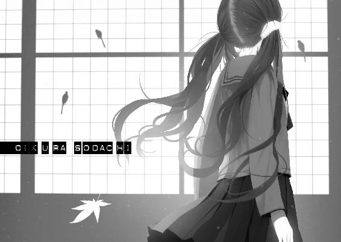

| 愚物語 <物語> (講談社ＢＯＸ) | |
| 西尾維新 | |
| (2015) | |
本作品は、縦書き表示での閲覧を推奨いたします。横書き表示にした際には、表示が一部くずれる恐れがあります。
ご利用になるブラウザまたはビューワにより、表示が異なることがあります。
BOOK＆BOX DESIGN VEIA
ILLUSTRATION VOFAN

001
阿良々木暦を嫌っている。どれくらい嫌いかと言うと、それはそれは、もう気が遠くなるくらいに嫌いなのだ。あいつのことを考えただけで、私は胸が締め付けられるほど苦しい。他のことは何も考えられなくなる。この世の嫌いを全部集めて花束のようにしても、私の阿良々木に対する、たったひとつの嫌いには及ばない。私の嫌いは、太陽にだって匹敵する──この嫌悪感を失えば、私は私ではいられなくなるだろう。私の阿良々木に対する、猖獗を極める憎しみは、もう私個人のアイデンティティであって、私自身の主軸であって、私そのものの真芯なのだ。あいつを嫌いでいなければ、私は私でありえない。どんな酷いものを見ても、どんな惨劇や災害に直面しても、それでも『あの男に較べれば』と思うことで、私は逆境を凌いできたのだから。
この嫌いが、目眩や胸やけや吐き気や身震いや鳥肌が、私の中からなくなってしまうことが、私はとても怖い。少しでも、この『許せない』が目減りしたらと、そんな想像をするだけで、私は死んでしまいそうだ──それくらいに私はか細くて、それくらいにあいつは図太く、私の中にいる。そこまで嫌われるようなことを、あいつは私にしたのだろうか──そんな常識的な疑問を覚える隙間さえもないほど、私はあの男に嫌悪を感じる。阿良々木の笑顔を、優しさを、気遣いを、友情感を、仕草のひとつひとつを思い出すだけで私は、しくしくと泣きそうになる。どんな巨万の富も、どんな凄惨な拷問も、私と阿良々木を和解させることはできない──これだけは許せないし、これだけは譲れない。
嫌いと嫌いが嫌いで嫌いの嫌いへ嫌いな嫌いは嫌いを嫌い。
嫌いだ嫌いだ嫌いだ嫌いだ嫌いだ嫌いだ嫌いだ嫌いだ嫌いだ嫌いだ嫌いだ嫌いだ嫌いだ嫌いだ嫌いだ嫌いだ嫌いだ嫌いだ嫌いだ嫌いだ嫌いだ嫌いだ嫌いだ嫌いだ嫌いだ嫌いだ嫌いだ嫌いだ嫌いだ嫌いだ嫌いだ嫌いだ嫌いだ嫌いだ嫌いだ嫌いだ嫌いだ嫌いだ嫌いだ嫌いだ嫌いだ嫌いだ嫌いだ嫌いだ嫌いだ嫌いだ嫌いだ嫌いだ嫌いだ嫌いだ嫌いだ嫌いだ嫌いだ嫌いだ嫌いだ嫌いだ嫌いだ嫌いだ嫌いだ嫌いだ嫌いだ嫌いだ嫌いだ嫌いだ嫌いだ嫌いだ嫌いだ嫌いだ嫌いだ嫌いだ嫌いだ嫌いだ嫌いだ嫌いだ嫌いだ嫌いだ嫌いだ嫌いだ嫌いだ嫌いだ嫌いだ嫌いだ嫌いだ嫌いだ嫌いだ嫌いだ嫌いだ嫌いだ嫌いだ嫌いだ嫌いだ嫌いだ嫌いだ嫌いだ嫌いだ嫌いだ嫌いだ嫌いだ嫌いだ嫌いだ嫌いだ嫌いだ嫌いだ嫌いだ嫌いだ嫌いだ嫌いだ嫌いだ嫌いだ嫌いだ嫌いだ嫌いだ嫌いだ嫌いだ嫌いだ嫌いだ嫌いだ嫌いだ嫌いだ嫌いだ嫌いだ嫌いだ嫌いだ嫌いだ嫌いだ嫌いだ嫌いだ嫌いだ嫌いだ嫌いだ嫌いだ嫌いだ嫌いだ嫌いだ嫌いだ嫌いだ嫌いだ嫌いだ嫌だ嫌だ嫌だ嫌だ嫌だ嫌だ嫌だ嫌だ嫌だ嫌だ嫌だ嫌だ嫌だ嫌だ嫌だ嫌だ嫌だ嫌だ嫌だ嫌だ嫌だ嫌だ嫌だ嫌だ嫌だ嫌だ嫌だ嫌だ嫌だ嫌だ嫌だ嫌だ嫌だ嫌だ嫌だ嫌だ嫌だ嫌だ嫌だ嫌だ嫌だ嫌だ嫌だ嫌だ嫌だ嫌だ嫌だ嫌だ嫌だ嫌だ嫌だ嫌だ嫌だ嫌だ嫌だ嫌だ嫌だ嫌だ嫌だ嫌だ嫌だ嫌だ嫌だ嫌だ嫌だ嫌だ嫌だ嫌だ嫌だ嫌だ嫌だ嫌だ嫌だ嫌だ嫌だ嫌だ嫌だ嫌だ嫌だ嫌だ嫌だ嫌だ嫌だ嫌だ嫌だ嫌だ嫌だ嫌だ嫌だ嫌だ嫌だ嫌だ嫌だ嫌だ嫌だ嫌だ嫌だ嫌だ嫌だ嫌だ嫌だ嫌だ嫌だ嫌だ嫌だ嫌だ嫌だ嫌だ嫌だ嫌だ嫌だ嫌だ嫌だ嫌だ嫌だ嫌だ嫌だ嫌だ嫌だ嫌だ嫌だ嫌だ嫌だ嫌だ嫌だ嫌だ嫌だ嫌だ嫌だ嫌だ嫌だ嫌だ嫌だ嫌だ嫌だ嫌だ嫌だ嫌だ嫌だ嫌だ嫌だ嫌だ嫌だ嫌だ嫌だ嫌だ嫌だ嫌だ嫌だ嫌だ嫌だ嫌だ嫌だ嫌だ嫌だ嫌だ嫌だ嫌だ嫌だ嫌だ嫌だ嫌だ嫌だ嫌だ嫌だ嫌だ嫌だ嫌だ嫌だ嫌だ嫌だ嫌だ嫌だ嫌だ嫌だ嫌だ嫌だ嫌だ嫌だ嫌だ嫌だ嫌だ嫌だ嫌だ嫌だ嫌だ嫌だ嫌だ嫌だ嫌だ嫌だ嫌だ嫌だ嫌だ嫌だ嫌だ嫌だ嫌だ嫌だ嫌だ嫌だ嫌だ嫌だ嫌だ嫌だ嫌だ嫌だ！
この気持ちはきっと、恋よりも激しい。
002
直江津高校を離れて、既に一ヵ月以上が経過した。あれだけ、私の内心にぎゅうぎゅうと絡みついて離れなかった、呪いのような教室での出来事も、今となっては何もかもが懐かしい──と言えるほどに、まだ思い切れてもいないけれども、しかし、こうして離れてみると、なんだかすべてが夢だったようにも感じる。
夢は夢でも悪夢だった、なんてリリシズムに富んだ常套句を述べるつもりはない──夢というのは、文字通りの夢だ。
支離滅裂で、つじつまが合わなくて、場面場面が飛び飛びで、肝心なところが曖昧模糊としてあやふやで、茫洋の限りが尽くされて、それでも、印象の残滓みたいなものだけがぼんやりと残っている──そんな感じの、夢まぼろし。
たぶん、もっと長い時間が経過して、あの教室のレイアウトをすっかり思い出せなくなったとしても、それでも、思い切れることはないのだ。
あの男も。
そんな風に、あのクラスを引きずるのだろうか。
そう思うと、少し痛快でもある──さておき、そんなわけで今日から私の、新しい町での新しい高校生活が始まるのだった。
そんなわけでも何も、否応なしだが。
地元の町を追放された流謫の身としては、もう破れかぶれの投げやりみたいな気分で、高校生なんていっそのこと、この際やめてしまおうかとも考えたのだが、しかしそうは問屋がおろさなかった。何事であれ、『やめる』というのは、とても難しい──自殺するのと同じくらい、高校生をやめることは難しかった。
高校くらい出ておきなさい。
でも、そんなお決まりの台詞を、まさか私相手に言う人がいるとは思わなかった──命はとても大切で、人間はみんな平等なんだと言うくらい、それは疑わしくも白々しい、虚飾にまみれた言葉だと思っていたけれど、いざ自分が言われてみると、『まあ、そうかもな』と感じ入ってしまった。
それに、保護者から言われたのだから、被保護者としては、頭を垂れて従うしかないという事情もあった──もちろん、保護者と言っても、これは親という意味ではない。
私に親はいない。父も母もいない。
いないいない。
いなくなった。
だからここで言う保護者とは、『縁もゆかりもない赤の他人であるにもかかわらず、天涯孤独のみなしごの面倒を見ようという奇特な夫婦』という意味なのだ。
箱邊夫妻。
保護司──と言うのとも少し違うのだろうが、わかりやすく言えば、里親、みたいなものなのだろうか？
紆余曲折あって直江津高校を離れた私が、ふわふわ浮き足立っているうちに、あれよあれよと決まってしまった私の次の行き先は、ともあれ老夫婦の住まう一軒家だった──あてがわれた部屋の広さは、前に暮らしていた公営住宅よりも広いくらいだった。
そもそもは、役場の人のはからいで、町を離れてからも事実上の一人暮らしを続けられるはずだったのだが、何がどういう流れでこうなったのか、私にはさっぱりわからない──気が付いたらよくわからない流れに翻弄される例の私らしさではあるのだろうが。親なしの未成年が一人で生活することに、やっぱりストップがかかったのか、それともたまたま運良く、不遇な娘が素封家の目に留まったのかもしれない。
運良く？ 私が？ 笑うね。
......もちろん、混乱から我に返った私が、遅ればせながら強硬に拒絶すれば、厄介払いにも似た単身生活は維持できただろうが、私は逡巡の末、箱邊家にお世話になることに決めた。
理由は謎だ、我ながら。
昔を懐かしむ気持ちが、そこになかったとは、正直、言いにくい──かつて赤の他人の家に『避難』していた時代は、当然ながら、私にとって悲惨なばかりの思い出なのだけれど、それでも、数少ない、『家』の思い出だ。
なけなしの思い出。
家に住みたかった。
それが理由だとすれば、いじましいと言うか、いじらしいと言うか、それとも、いじけていると言うか......、これはこれで、破れかぶれの投げやりとも言えそうだ。
私のような浅ましい奴が、今更、まともな人間関係を築けるわけがない──一ヵ月前の私なら、そんな風に考え、あくまで自我を主張したかもしれなかったけれど、だけど、いじましくともいじらしくともいじけていようとも、ここで自我を主張するのは、なんだか、敗北した気分になるのだった。
あの男に、負けた気分になる。
あいつが変わったのなら、私も変わる。
あいつが幸せになったのなら、私はもっと幸せになる──それは私のもっとも深い意地で、これを張るためだったら他のすべてを畳んでもよくて、だから私は、箱邊家から、高校に通うことにしたのだった。
役所から支援金が出ているから、私立でも別に構わないと言われたけれど、さすがにそこは遠慮して、私は公立の高校に転校することにした。
とは言え、私にも見栄というものはある──その見栄のせいで破滅したのだけれど、だからと言ってそう簡単に捨てられるものでもないし、なので転校先には地域で一番偏差値の高い公立高校を選択した。
編入試験は楽勝だった。
不登校の頃、勉強くらいしかすることがなかった成果が見事に出たわけだ──まあ、十一月のこの時期に転入したところで、四ヵ月以下しか、学校にはいられない。三年生には三学期があってないようなものだと思うと、事実上は一ヵ月ちょっとか？
となると、今更母校という気はまったくしないし、根を張ろうとも思えない──直江津高校にだって、満足に通っていたとは言えないわけだけれど、やはりあの学校のあの教室のほうが、私の根っこに絡まっている。
あの教室より酷い教室はないと思えば、転校初日の本日も、きっと乗り切れるという余裕も生まれる──だけど油断は禁物だ。
無意味なくらいに策を巡らしては、思いもよらない大失敗をするのが、私の私らしさなのだから。
一ヵ月ちょっとの、おまけのおまけみたいな学校生活を、平穏無事に過ごすためにも、私は覚悟を決めなければならない。
おじ様、おば様、行ってきます──箱邊夫妻にそう挨拶をして、私は出発する。休息期間を終えて、いつから始まっていたのかわからない休息期間を終えて、新たな門出を迎える。
見てろ、阿良々木。
老倉育は、ここから育つ。
003
メレンゲを最初に作った人ってすごいですよね。生卵を割って、それを黄身と白身にわけようって考えただけでも一頭地を抜きんでた発想なのに、見るからに栄養豊富な黄身のほうならまだしも、その白身のほうだけをかき混ぜようだなんて。予想できるわけないじゃないですか、白身だけをかき混ぜたら、それもかなり根気強くしゃかしゃかかき混ぜ続けたら、あんなホイップクリームみたいになるなんて。で、それで出来上がった、味も素っ気もない細かい泡をですよ、焼いてスイーツにしちゃうって言うんだから、これはもう瞠目──駄目だ。
却下も却下、大却下だ。
こんな自己紹介があるか。
転校生が転校初日にこんな挨拶をしたら、ニックネームが『メレンゲ』に決定すること間違いなしだ──うまく『蓮華』に派生していってくれたらそりゃあめっけものだが、そんな奇跡を期待するより、そんな変わり者アピールを、最初からしないのが正解だろう。
お菓子作りが趣味です、とぶりっ子するのが目的だったはずなのに、いいところを見せようとして、ついつい、思考がブレてしまった。
落ち着け、一風変わった視点を持っている女子だなんて、思ってもらう必要はないんだ──そりゃあ、場合によってはそれも必要になるのかもしれないけれど、たかが一ヵ月程度のクラスメイトに対して、個性をアピールするいわれはない。
何事もなく。
直江津高校でのような浮き目に遭うことなく、真っ当に卒業することが、まずは私の第一課題である──するべきは、個性のアピールではなく、適度に気配を消すことである。
転校生という目立つポジションから、私は早々に降りなければならないのだ──漫画でよく見る『転校生あるある』なんて、私のこれからには不要のものだ。
大丈夫。普通にしてれば、私は可愛い。
さんざん酷い目に遭ってきたけれど、それでも、私の顔を殴った奴なんて、戦場ヶ原ひたぎくらいしかいない。
直江津高校でも、一応、友達はいた。男の子から告白されたことだってある。転校生と言うだけでされる漠然とした期待に、私は、黙ってさえいれば応えられるだけの素材のはずだ──どうやら人とズレてしまっているらしいセンスは、制服を着ることで均されている。
余計なことをしなければいいだけなんだ。
初めまして、老倉育と言います。時期外れの転校で、お騒がせします。卒業まで、あっと言う間だとは思いますけれど、それでも、このクラスの一員として、どうか仲良くしてください。
これだ。この凡庸さだ。目指せ普通。
事件性のない無個性をアピールせよ。
数学者のオイラーを尊敬しています、なのでそう呼んでください、なんて言う必要さえも皆無なのだ──私が誰に私淑しているかなんて、声に出していちいち公表しなくていい。
がっかりされる。
平凡であろうとすると言うのも、それはそれでかなり子供っぽい発想なのだけれど、たぶん、これが大人になると言うことなのだろう──私ってなんて可哀想なの、なんて。
そんな不毛な自己憐憫からは脱却しよう。
私が私を不幸だと思っている限り、私は一生不幸なままだ──いや、どうこねくり回して、どうポジティヴに解釈しようとも、私の人生が笑ってしまうくらい不幸なことには違いない。突き詰めれば、解釈ではなく、介錯が必要になるだろう。
気の持ちようだよ、なんて言う奴がいたらぶっ殺す。
ただし、不幸であることは、幸せになっちゃいけない理由にはならない──幸せになってからなら私も言おう、気の持ちようだと。
見せつけてやるんだ、あいつに。
そのためならなんだってする。
......もっとも、こんな風に意気込んでも、所詮はどうせ空回りでしかないと言うような徒労感もある──大いにある。
並々ならぬ嫌悪と途方もない憎悪を伴って、私の中で、阿良々木暦は、この通り巨人のごとき存在感を放っているけれども、しかしながら阿良々木暦の中における老倉育は、ワンオブゼムでしかない。ゼムどころかゼロかもしれない。
あいつに何度忘れられたかわからない。
何度無視され、何度いないことにされたか。
今から思えば、それもまた『特別扱い』だったのかもしれないけれど、そう言われてもやっぱり納得はできないし、根本的にあいつはそういう、どうしようもない奴なんだと思う。
人を助けても、助けた相手の顔を覚えていないヒーローだ──理解には苦しむが、世の中にはそういう人間がいると言うことは、ここまで来るとさすがに認めざるを得ない。
あいつだけじゃなく、阿良々木家の人間は、総じてそうなのだろうし、箱邊夫妻もまた、その類例なのだろう──私は一生、そんな風にはなれないし、なろうとも思わないが。
たとえ塗炭の苦しみを経て、私が幸せになっても、あいつはのうのうと、『よかったね』と屈託なく祝ってくれるだけだったりして──それはなんとも腹の立つ未来だ。
考えてしまう。
何をすれば、何がどうなれば、私はあいつをぎゃふんと言わせられるのだろうか？ 何をしても、何がどうなっても、あの男が、こっちがスカッとするような心地いい反応を見せてくれるとは思いづらい。
でも、少なくとも、ひとつだけ確かなことがある──絶対がある。私が転校先で過度に孤立したり、問題を起こしたりしたと知れば、あの男は、とても悲しむ。
あいつが嫌な思いをするなら、そんな愉快なことは私にとってないのだけれど──ただまあ、それはもうやったことだ。
ある意味、予想通りでしかなかろう。
あいつに『やっぱりな、そりゃそうだよ』と思われるのは御免だ。
転校先でうまくやることが、阿良々木に対する最大の裏切りになるはずなんだ──だから、そのための第一歩として『目指せ普通』である。
普通が一番幸せなんだとか、したり顔で言ってやる──そんな決意と共に、私は箱邊家から三駅先に立地する、公立宍倉崎高校へ到着した。
校内に這入るまでもなく、登校中の時点で、既に私は宍倉崎高校の制服を着た生徒達に混じってしまっているわけだが、なじまないと言うか、やっぱりなんだか、彼ら、彼女らは直江津高校の生徒達とは毛色が違うように思われた。こっちが勝手にそういう偏見の目で見てしまっているだけかもしれないけれども、皆の表情に、いくらか余裕があるような気がする。
私立進学校だった直江津高校は、私も含めて、どいつもこいつもがつがつしているところがあったから──もっと言えば、ぴりぴりしているところがあったから。もちろん、そういう環境を求めて入学したのだし、批判的な文句を言う筋はないのだけれど。
ところ変わって人が変わるだけで、こんなに変わるものなのかな......ついつい妬ましく、早速周囲を敵視するような気持ちになりそうなのに気付いて、私は慌てて自分を抑える。
駄目だ駄目だ。
こんな風にすぐ、誰彼構わず劣等感を抱いてしまうのが、私の一番駄目なところなんだ──わかっている。
私は人を羨ましがることで自己を形成している。
なんて言うか......、自分のことをろくでもない人間だと認めることはとても勇気がいることだし、そもそも悲しいことだけれど、今、私に必要なのは、そういうことだろう。
多かれ少なかれ、誰にだってそういうところがあるには違いないが、こういうものの考えかたをしている限り、私は一歩も前に進めない。
後ろを向いて立ち止まっているようなものだ。
何もかもを、競争やら戦いやらみたいにとらえていたら、ストレスは絶え間なく溜まるばかりだ──それに、この学校の生徒達が、ノンストレスで生活しているかと言えば、そんなことはまったくあるまい。
そんなわけがない。
人が集まって、生活をすれば、そこには絶対にストレスが生じて──軋轢が生まれる。だからこそ、私は決して油断してはならないのだ。
直江津高校のあの教室で、私が孤立したのは、油断ゆえと言うよりは増長ゆえだけれど、ぼんやりしていると、私はあのときの二の舞三の舞を、無様に演じることになる。
再び引きこもることになりかねない──まだ、お互いどんな人間かもわかっちゃいないけれど、箱邊夫妻を後悔させたくない。
この先のことなんてわからない。
高校を卒業したあと、更に大学に通おうなんて、居候の身で図々しさもはなはだしいとも思う──だが、補助金や奨学金をフル活用すれば、そんな将来図も、実のところ、私にはある。私には見えていなかっただけで、否、見ようともしていなかっただけで、世の中にはそんなセーフティネットが、張り巡らされているのだった。
それをもって幸せを感じることはさすがに難しいけれど、少なくとも、そういう土地に生まれたことは、ラッキーではあるんだろう......ならば、最大限に活かさないと。
校門の前で立ち止まって、そんなことをつらつら考えていると、ちらちら、通りすがりに見られているみたいな気分になる──自意識過剰なのかもしれないし、被害妄想なのだろうが、私の制服の着こなしに、何かおかしなところがあるのかもしれない。
事実は、通行を妨げる邪魔な女子を、迷惑がって見ているだけなのだろうと理解しつつも、しかし私は鏡が見たくなって、あたふた逃げ込むように、新たなる高校へと踏み込んだ。
第一歩は、踏み出してしまえば、この通り、呆気ない。
004
結論から言えば、転校先のクラスにおける私の晴れ舞台ならぬ曇天舞台、新しい仲間への最初の自己紹介は、あまりうまくいったとは言いにくかった──大失敗とは言わないまでも、上首尾でなかったことは間違いない。
できる限りありきたりで、奇をてらった工夫のないセルフプロデュースを企んだ私だったけれど、その台本に辿り着く以前に、私はみっともないくらいにしどろもどろになってしまった。私の名前を『おしくら』だと思った生徒も、きっと少なからずいることだろう。
四十人の視線を一身に浴びて、すっかりあがってしまって、舌がぐるぐるにもつれ、声がみっともなく上擦った──自己紹介を終えるまでに、何回嚙んだかわからない。
まともに言えた言葉のほうが少ない。
恥ずかしくて、その場にかがみ込んでしまいたくなるくらいだった──むしろ最後まで立っていられただけでも、自分を誉めたい。
よくやった。よくなかっただけで。
思い通りにはいかないものだ......、こうなると賢こぶって、もっともらしいプランを立てたことが、何よりも恥ずかしいことのようだった。
だけどこれが今の私だった。
大勢の人間に囲まれたり、見られたりすることが、なんだかあら探しをされているようで、正気を保てなくなる。
私の失敗を、みんなが笑っている気分になる──落ち着け、冷静になれ。そりゃあ実際、滑稽な嚙みかたをした私は、失笑の的とはなったけれども、さりとて嘲笑を浴びたわけではない。悪意をもって笑われたわけではない──彼ら彼女らは、面白かったから笑っただけなのだ。
なめられるくらいで丁度いい。
そもそも、私はそつなく自己紹介をこなしたかっただけで（それは失敗したけれど）、『スピーチが上手だね』と言われたかったわけでも、ましてちやほやされたかったわけでも、クラスの人気者になりたかったわけでもない。
そういう覇権争いの馬鹿馬鹿しさを、そして脆さを、前の学校で私は、よくよく学習してきたはずではなかったか。
己をコントロールしろ、己を分析しろ。
複雑に偽装された数学の問題を解くときのように、順序よく、式をできるだけシンプルにして、項目ごとに整理するんだ。
私が集団に対して意固地になってしまうのは、多人数を前に固まってしまうのは、彼ら彼女らが怖いからだ。
徒党を組んだ集団から暴力を振るわれた場合、たった一人の私では、なすすべもないからだ──大丈夫。ここには私の身体を、ぶったり叩いたりする奴はいない。自己紹介で出トチリしたからと言って、蹴ってくるような、頭のおかしな人間は、そうそういない──陵虐に怯えて、ために群れの頂点に立とうとしなくっていいのだ。
むしろ、そんな無理をしたから、やらかしてしまったから、私は群れを追い出されたのだ──理解しよう、私は集団を指揮したり、人の上に立ったりできるような人間ではない。
少なくとも今のところは。
私は性格が悪い。ひねくれている。卑屈だ。恨みがましい。嫉妬深い。疑り深い。可愛げがない。被害者意識が強い。ヒステリック。頭のよさを鼻にかけている馬鹿だ。自虐的。己が不幸に陶酔しやすい。なんでもかんでも人のせいにする──阿良々木のせいにする。
土台、そんな奴が、自己紹介が多少うまくできたところで、人気者になれるわけがない──時期外れの転校生なんてステイタスは、私の醜悪さを覆い隠すベールとしては、やはり不適当なのだ。
魔法じゃああるまいし、人は、そんなにぱっと変われたりはしない。住む町を変え、住む家を変え、学校を変え、制服を変えたところで──私が変わったわけじゃない。
私は私だ、皮は脱げない。
いい、いい。
新しい門出の、呆気なかった第一歩で、派手につまずいてしまったけれど、みじめにすっ転んだとまでは言えない──失敗の恥辱を誤魔化すために、教卓をひっくり返したり、その辺のものをつかんで投げたり、黒板をひっかいたりはしなかった。泣きわめいてかあっとなって、近くにいた担任教師をぶん殴ったりはしなかった。失敗を、より大きな失敗でフォローしようと、その場で制服を脱いだりしなかった。
ほら、最悪の事態は回避しているのだ。
悪い状況を想定し過ぎで、我ながらマイナス思考もこれ極まれりという気がしないでもないけれど、追いつめられれば何をしでかすかさっぱりわからないのが、この私である。なにせ、頑なになった挙句に、大嫌いな男の前でファンシーなパジャマ姿を晒すという、しっちゃかめっちゃかな暴走をしたこともあるほどなのだから。
それを思えば、自分の名前をうまく言えなかったくらいが何だ──確かに計画外の恥はかいたけれど、それは格好つけようとして滑ったのとは違うし（メレンゲについての話なんてしなくて、本当によかった──その場合、私は本当に暴れかねなかった）、そしてどうせ、一ヵ月ちょっとの、短い付き合いのクラスメイトの前でかいた恥である。
かき捨てていい恥だ。
これは、卒業後に向けてのリハビリだと思え──慙愧を受け入れることができなければ、とても社会に出ることなんてできない。
私が恐れるのは、こんな性格のままで、大人になってしまうことだ。私は今、十八歳──選挙権さえ与えられようというこの年齢で、この有様である。二十歳になるまでに......、いや、せめて二十二歳になるまでには、もうちょっとマシな人間になっておかないと、必ずとんでもないことになる。
具体的にどうなるのか、確かなことは言えないけれど、この邪険なキャラクター性のままでは、いずれそこそこの反社会的行為を犯して、刑務所に収監されるまでありそうだ──そんな連鎖は断ち切らねばならない。
断ち切っていいのだ。
私が不幸である理由は無数にあるし、私がこれからも不幸になる理由は無限にある──だけど、私が幸せになっていけない理由は、ひとつもないのだから。
......それに、この失敗に関してだけ言うなら、決して悪いことばかりではなかった。自己紹介をトチった私を、おかしそうに見るクラスメイトの様子から、転校先の教室の、おおよその雰囲気というものが感じ取れたからだ。
適度な刺激を与えたことで、反応を窺えたわけだ。
やっぱり──直江津高校とは違う。
よくも悪くも、スタンダードな、いわゆる『学校』という感じ......、私の経験で言うなら、わずかな高校生活よりも、どちらかと言えば、中学時代に近い空気感。
狭い場所に大量の人間が詰め込まれているのだから、（特に私のような人間には）ストレス空間であることに違いなさそうだけれど、直江津高校で感じるストレスとは、思った通り、違いそうだ。
否。
違うのはルールかもしれない。
こちらの教室は、あちらとは異なるしきたりで、成り立っている風に感じた──直江津高校のルールはある意味単純で、偏差値が高ければ、それがそのまま、生徒間のヒエラルキーに反映されるところがあった。
逆に言えば、どれだけいい奴で、正義感の強い、阿良々木暦のような男でも、成績が芳しくないという理由だけで、最下層に置かれていた。私が懲罰を受けた例の学級裁判だって、成績がらみで執り行われたものだ──あのときは、あれがとても正当な、どこででもおこなわれているありふれた学校行事のように思っていたけれど、今から思えば、かなり独自性の高いイベントだったのだろう。
宍倉崎高校も進学校なのだから、成績がクラス内での地位に、まったく寄与しないということはないだろうけれど、それよりも、もっと高度な人間関係が物を言いそうだ。
スマートフォンの所持も、禁止されていないようだし──それは直江津高校ではおよそ考えられないことだった──コミュニケーション能力こそが、こちらのストレス空間を生き残るための、重大な要素のようである。成績がいいだけだとむしろ逆効果であり、下手したら嫌われかねない──あるべきなのは、人間的な魅力だった。
......早い段階でそれに気付けたのはよかったけれど、しかしながら、これは私にとって、ほとんど絶望的な情報だった。
何故なら、魅力に欠けることにかけては、私はプロフェッショナルと言える──そんじょそこらの魅力欠け人間には負けない、絶対の自負がある。
自己紹介で嚙んだくらいでは、まだそれは露見していないだろうけれど、このまま何の対策も打たないでいれば、いずれ馬脚を現すに違いない。郷に入っては郷に従えとは言うけれど、なんともやりきれないレギュレーションだった。
厳し過ぎる。
かと言って、ここでルールの変更を提議するほどの改革者では、私はない──新参者の分際で。繰り返しになるが、ほんの短い付き合いである。
法律の勝手が違う異国に、一ヵ月ちょっと滞在するくらいのことだ。頭を低くして、身体を縮こまらせて、風土文化に抵触しないよう、身を潜めて過ごすのがベストなのだ──そのために。
平穏無事で、ノントラブルかつノンストレスな高校生活のために、私はつかの間のクラスメイト四十人──正確には四十一人の中から、一人の生徒に目を付けた。
出席番号四十一番。
彼女の名前は、忽瀬亜美子といった。
005
二人組を作ろうとしても、三人組を作ろうとしても、四人組を作ろうとしても、常に一人余る男──それが私が嫌悪する阿良々木のわかりやすい特徴だったけれど、しかし、可能性だけで言えば誰もがいつ陥るかわからないそんな事態を避けるための冴えたアイディアは、いつでもなれる二人組の相手を想定しておくことだ。
あくまでも机上の空論としては、だが......、二人でいたなら、二人組を作るときは当然として、三人組を作るときでも、四人組を作るときでも、常時ペアにさえなっていれば、心強い。
余ったのでもあぶれたのでもなく、あくまで、『人数が足りない』のだという印象になれば、孤立感は薄まるはずだ。そう思う。
四十人ものクラスメイトといきなりフレンドリーに接しようとするのは、流浪の身にはあまりに高過ぎるハードルだけれども、四十人の中の、まずはたった一人と仲良くなるのならば、たやすい......とは言わないまでも、それくらい出来なくてどうするというような、低レベルの課題である。
まあ、厳密に言うと、四十人の中の一人ではなく、約二十人の中の一人だ──男子と仲良くなっても、この場合、意味はない。むしろ逆走しているとさえ言えるだろう──直江津高校は、男女混合と言うか、男女同格と言うか、出席番号も男女混ざっていたくらいだけれど、宍倉崎高校は、教室の席の並びさえ、男子女子でくっきりと分かれていた。
古風なしきたりに基づいている......、と、私からは見えるけれど、たぶん、世間的にはこっちのほうが、よっぽど通常の共学校なのだろう。
だから、そんな雰囲気の中、男子と二人組を作っても、女子としては悪目立ちするばかりで、益はない──男子に媚びを売る新入りの女子だと、事実と異なる反感を買うのが落ちだ。
男子に媚びを売る女子......、阿良々木との経緯を思えばあながち誤解とばかりも言えないけれど、そのイメージのままに、一ヵ月の時を過ごすのは、いかにも厳しい......、私のような奴は、絶対にどこかでヒステリーを起こす。はっきり言って、流血沙汰さえ招きかねない。
だから、私が仲良くなるべき相手は、クラスの半数を占める、約二十人いる女子の中の誰かなのだ──幸いと言うか、ひょっとすると普通の高校生ならば大抵そうなのかもしれないけれど、転校先のクラスでは、人数は同じくらいでも、男子より女子のほうが勢力が強そうだった。その辺も、対等感が強かった直江津高校とは勝手が違ってやりにくそうだが......、まあ、勢力の弱い側に属するよりは、いくらかマシのはずだ。
完全にただの弁解なのだけれども、自己紹介をする際に私がトチってしまったのは、誰をターゲットにするか、その選定に気を取られてしまったからというのもあった。
友達になるべきターゲット。
それこそ、『転校生あるある』になってしまいかねないけれど──転校生にとって、最初に話しかけるクラスメイトというのは、やはり重要なのだろう。大袈裟でなく、それでその後の生活が決定されてしまいかねないくらい。
優しそうな生徒に話しかけるのか、趣味や話の合いそうな生徒に話しかけるのか、クラスのリーダー的存在に話しかけるのか......、事前に調べたところによると（調べたんだよ）、あえてはぐれ者の不良グループに近づくことで身の安全をはかるという戦略も定番のそれとしてあるらしいが、どうやらそこは直江津高校と同じく、宍倉崎高校には、そういうわかりやすい不良はいないようだ。スカートを詰めている女子も、ホックを外している男子もいないくらいの風紀だった──その辺りは、成績さえよければ、多少の着崩しも許されていた直江津高校よりも健全かもしれない。空気を読まずに正直な感想を言えば、健全過ぎて息苦しいくらいだ、私のような、真面目と言うよりは堅物の人間にとっても。
まあ、仮に不良グループがあったとしても、そのメンバーのご機嫌をとって取り入るなんて器用な真似が、私にできたとも思えない──昔の私なら、なりふり構わずそれもできたかもしれないが、今となっては一番苦手と言っていい。
......いや、そもそも昔の私なら、こんな細々とした戦略を、練ろうなんてしなかっただろう。練るなら、もっと大胆な策を練っていた。私にとって、転校の経験は、これが初めてというわけではない──中学時代にも一度、私は通っていた学校から転校しているけれど、そのときはなんというか、我ながらスカしたものだった。あれはあれで自暴自棄だったのかもしれないけれど──直江津高校で、あの学級裁判を経験する前の私だったから、負けん気も強かった。
中学生だったし。
今、あのときと同じように振る舞うのは無理だ──私のメンタルは、ぎりぎり人間らしい形を保っているというだけで、中身が空っぽの張りぼてのようなものなのだ。
ああ、それとも、張りぼてじゃなくて、風船かもしれない──つついたら大きな音を立てて破裂するところなんて、そっくりだ。風に乗って動く船、なんて、言葉の響きだけはやたらロマンチックだけど。
仮にできるとしても、それじゃあ結局、これまで通りの失敗を繰り返すだけだろう──私の失敗人生にピリオドを打つためには、私からの歩み寄りが不可欠なのだ。何に対する歩み寄りかと言えば、それは多分......、まあいい。
とにかく。
波風を立てずに、目標を立てよう。
まずは一人から始めて、卒業するまでに、クラス全員......は、さすがに過大だとしても、五、六人くらい、友達を作るのだ。片手にあまる友達を作る。
私は、うまくやっていく。
世渡りをする。
この平和そうな普通の学校で、平和そうな普通の生活を送ってみせる──そして熟慮の末に、自分の名前を嚙みながらも私が選定した、友達候補のクラスメイトこそが、忽瀬亜美子なのだった。
もちろん、転校生の私があてがわれた席が彼女の席との並びが近かったと言うシンプルな理由も、あながち無関係ではないのだが、それは二の次、三の次の理由だった。
私が彼女を第一次目標に選んだのは、もっとシビアで端的な理由だった──即ち、彼女がクラス内で浮いている風だったからだ。
ぱっと見ではわかりにくいし、担任教師も、どうやら気付いていないようだったが（気付いていない振りをしているだけかもしれないが）、転校生であり、つまり部外者である私には、ぱっと見でわかるほどに、彼女はクラスから分離していた。
孤立。
それこそ、クラス内で二人組を作る行事があったなら、いつも彼女があぶれるだろうことは予想に難くない──四十一は素数だから、さぞかし余りやすいことだろう。
ならば、クラスに一人、人数が増えることを、彼女は内心できっと喜んでいるはずだ──人の弱みにつけ込むようで、正直、あまり気分がいい、誉められた振る舞いでもないのだが、私も手段を選んではいられない。
友達がいない者同士仲良くしよう、なんて言うとあまりに露骨だが、そんな互恵関係を築くことは、需要と供給の観点から見ても、忽瀬亜美子にとって、決して損な話ではないはずだ。
さぞかしおいしい共生だろう。
かように、コミュニケーションを原始的な損得や、原理的な利害でのみ解明しようとするあたりに、私の抱える根本的な病巣がありそうだが、それでもこの局面は因循姑息に徹さざるを得ない。
まあ、世の中には、孤立しているクラスメイトに積極的に話しかけることで、自分の人間的評価の上昇を計るという輩もいるそうなので、そんな奴のそんなおこないよりは多少前向きな自助努力だと思いたい──悪いけれど、私には人を助けている余裕なんてないんだ。
余裕がなくともじゃぶじゃぶ自己犠牲を払っていたあの男とも違う──犠牲にすべき自己すら、私にはあるかどうか、定かじゃない。
実際、たまに思うもの。
私は本当はずっと前に、とっくの昔に自殺していて、今見ているのは、今わの際のぼんやりとした幻覚なんじゃないかって──だとしたら、せめて死に際くらい、もっといい妄想をしろよって話なんだけど。
妄想の中さえ地獄か、私は。
幸不幸が気の持ちようだなんて戯言には、どう考えても一分の理もないけれど、いいイメージの自分を持てない限り、いい人生は送れないのは確実だろう──ならば、そんなつもりなど毛頭なくとも、転校先の教室で孤立しているクラスメイトに、空気を読まずに声かけをするような慈愛の精神がある女子だと、自分のことを思い込むのも、それはそれでありなのかもしれない。
まあ......羽川翼というあの委員長なら、きっとそうするんだろうな。あんな化け物じみた優等生を模範にするつもりこそ、毛頭ないけれど。
あいつの真似とか、マジで死ねる。
......そういう意味では、直江津高校には一定数散見された、羽川翼や阿良々木のような、なんというか、『変わり者』は、この学校には見当たらないようだった。
やっぱり、ああいう個性の人間達は、望むと望まざるとにかかわらず、こういう真っ当なルートからは外れてしまうものなのか──いや、あいつらは直江津高校でも、かなり特殊なタイプではあった。
忽瀬亜美子も、当然、そんな感じではない。
クラスで孤立している女子、という部分だけピックアップすれば、たとえばあの子、戦場ヶ原ひたぎと、同類項に仕分けできなくもないけれど、しかし、そのカテゴライズにはあまりに知見が欠けていると言わざるを得ない──一年生のときからそうだったが、あの女は、自ら望んで孤立していた、珍しい女子高生だった。
引きこもり体験を有する私が言うのだから間違いないけれど、本当に孤独が好きな人間は、学校なんて行かないから──まあ、この間再会した彼女は、いくらか丸くなっていたようだが。
阿良々木の奴が戦場ヶ原ひたぎを変えたのだとすれば、それは私にとって、何とも言えない事実だ──私にも、そんな風に変わるチャンスがあったのだろうか？ ならば私は何回、それを逃してきたのかな。
否。
今回のこれだって、阿良々木が私にくれたチャンスには違いない──ならば、今度こそ、私はこの好機を逃さない。
だから私は忽瀬亜美子と友達になる。なってみせる。
私の中のありあまる、余計なくらいの全情熱を、まずはそのためだけに傾ける。
......あとから思うと、言ってしまえば、たかが一人友達を作ろうというだけのことに、そこまでの全力を費やし、ここまでの熱量を発しようとしたところに、私の次なる失敗の原因があったのだろうけれど、あの学級裁判のときもそうだったように、私はやらかしている最中は、いつだって、正しいことをしているつもりなのだった。
間違おうと思って間違えたことなんてない。
不幸になろうと思って不幸になったことなんてない。
これっぽっちもなかったのに。
006
前述した通り、クラスで孤立しているというくらいしか、忽瀬亜美子と戦場ヶ原ひたぎの共通点はないのだけれど、しかし、いざ忽瀬亜美子に声をかけようというときに、私は戦場ヶ原ひたぎに最初に声をかけたときのことを、思い出さずにはいられなかった。
過去問を参考にしてしまった。
参考にならないのに。
至極感覚的な物言いになってしまうけれど、世の中には、特別な人間と言いあらわすほかにすべがないほどに特別な人間がいて、戦場ヶ原ひたぎは、その類の人間──とは言わないまでも（それはたぶん、厳密には羽川翼のような人間のことだけを指す）、それでも、かなりそちら側の住人であるように回想される。
阿良々木のことは例外としても（あの男のことは、私にとって、すべての例外である）、直江津高校のことはもう、終わったことで、切れたことのはずなのに、それでも忘れられない強烈な印象を、そして影響を残してくれているのが、『病弱ではかなげな』あの子だ。
病弱ではかなげどころか、先頃、私は彼女にぶん殴られて、引きこもりから復帰した初日に、保健室送りにされたのだけれど......、しかし、必ずしも、それゆえに印象が強いと言うわけではない。
特別な人間。
もちろん、特別な人間の特別さについて、綿々とまくしたてようと言うつもりはない──そんなのは僻みにもならない。
ご存知の通り、私は、誰の特別にもなれなかった人間だ──阿良々木の特別にもなれなかったし、母の特別にもなれなかった。私自身にとってさえ、私は特別とは言えない──それはもういい。
特別でないのなら、凡庸を目指すまでだ。
それができなければ、私は何者にもなれない。
でも、それでも、考えてしまうのだ。
羽川翼のような人間も、阿良々木暦のような人間も、そうそういるものではない──百万人に一人の希有だ。
ああいう連中を見るにつけ、『人間は平等だ』なんて言葉の空しさを知るわけだけれど、でも、あんな強烈な個性を放つ奴らは、事実、百万人に一人しかいないわけだから、自分がそうなるのはもちろん、遭遇するだけでも難しい。
その機会は、たぶん、もう私には残されていない。
......決して、特別な人間と関わりを持つことが、人生にとってプラスなばかりとは限るまい。特別な人間と、迂闊にかかわってしまったばかりに、振り回されて搾取されて、使い潰されてしまった凡人が、どれほどいることか。
特別な人間の特別な輝きに、目を潰されてしまう危険性を思えば、彼ら彼女らをリスクだと判断し、自ら近づかないようにするのも、賢明なる選択だろう。
漫画じゃないんだ。
キャラが立っていればいいってもんじゃない──だいたい、漫画の主人公が作中とる行動の多くは、反社会的行動であることをゆめゆめ忘れてはならない。
娯楽としては面白いが、リアリスティックに考えるなら災難である──なんだかんだと、結局、妬みのようなことばかり吐露してしまっているけれど、私が呈したかったのは彼ら彼女らについての不平不満ではなく、実際のところ、特別な人間は、どうやって特別になったんだろう？ という疑問である。
言われるたびに私が度を失ってしまうのは、『同じようなつらい目に遭いながらも、真っ当にがんばっている人だっているんだから、生い立ちが不幸というだけで同情すべきじゃない』という論説なのだけれど、統計学的に、つまり数学的に解釈するならば、この言葉には一定の真実が含まれることは、苦渋ながら認めざるを得ないだろう。
私のように虐待を受けながら、ろくでもない家庭で育とうとも、真っ当にがんばって、ねじくれることなく育って、偉人になった奴だって、探せばどこかにはいるんだろう──いいよ、それは。
だけど、してみると同じ理屈で、特別な人間が特別である理由として、もっともらしく語られるあれやこれやにしたって、ずいぶんと怪しいように思われる。
そりゃあ、彼ら彼女らは、恵まれていた。
いい土地に生まれ、いい家に生まれたんだろう。
いい出会いがあったんだろう。
珍しい才能があったり、努力する機会が与えられたりもしたんだろう──だけど広い目で見れば、それ自体はそんなに特別ではない、その辺にどっさり、ありふれた出来事でしかない。
病魔のように蔓延する成功本や、愚にもつかない偉人の自伝を、どれほど深く読みふけり、そして書かれている教えを忠実に実践したところで、同じように成功はできないように──特別な人間の体験を、そのまま追体験しても、誰もが特別になれるわけじゃない。
いい土地に生まれ、いい家に生まれ、いい出会いを経て、珍しい才能があって、努力する機会を与えられても、それでもぐちゃぐちゃにねじくれて、社会となじめず、最終的に犯罪に走るような者も確実にいる。
統計学的に、数学的に、絶対にいる。
犯罪に走るまでというと極端から極端に走ってしまっているけれど、でも、多くの場合、多くの人間は、特別な人間にはなれない──ならば、特別な人間は、本当のところ、いつ、どこで、どんな理由で、特別になったのだ？
私のような卑屈な落伍者が、ただの確率的な誤差でしかないように──彼ら彼女らもまた、ただの確率的な誤差に過ぎないのだろうか。
生物の進化は、そういう風に起こってきたとも言う──ならば誤差ではなく、それは突然変異なのかもしれない。
人類を、更に先に進めるための存在こそが、彼ら彼女ら、理由なき特別達──やや大仰だが、そうと理解すれば、少しは納得できる。暴れ狂う劣等感を、抑制することができる。
誤差に理由なんてないと、はっきり言ってくれたほうが、いっそすっきりする──不幸な人間の不幸さに同情すべきじゃないように、特別な人間の特別さは憧憬するようなものじゃないと、力強く断言してくれる誰かがいるだけで、私のような人間は救われる。
私の場合は、誤差ではなく、誤作動と言うべきかもしれないけれど......、せいぜい、故障した人間として処分されないように、気をつけなければ。けじめをつけなければ。
戦場ヶ原ひたぎの特別も、羽川翼の変異も、阿良々木暦の例外も、直江津高校の中にしかないものだ──彼ら彼女らのようなキャラクターは、宍倉崎高校には登場しない。
これから先、しばらくの間、私が相手取らなければならないのは、忽瀬亜美子を代表とするような、圧倒的に普通で、普通に特別に憧れる、男の子女の子達なのだった。
007
私、老倉育は劣等感の権化であり、卑屈と自己否定を、足して倍加したような問題児である──その癖、相手が誰だろうと敵視するし、その上、相手の人格や人権を平気で軽んじるのだから、タチが悪い。
公平に見て、なかなか最低の人間層に属する女子だと言うしかない──私が私でなかったら、私みたいな奴のこと、およそ厭悪の対象でしかないだろう。私が私であってさえ、かなり厭悪の対象なのだから、これは間違いない。
軽んじたつもりはなかったし、まして、クラスで孤立している風な忽瀬亜美子が、声をかけた私を両手を開いて歓迎してくれるなんて、そんな楽観的な未来を想定していたわけじゃあない──ただ、戦場ヶ原ひたぎのときよりは、さすがに楽なはずだと思っていたことは否定できない。
まして、羽川翼と対峙したときのことを思えば──そんな風に相対化して、心の中で、勝手にミッションの難度を下げてから、忽瀬亜美子に挑んだのは、私の弱さゆえであり、私の脆さゆえだっただろう。
脆さであり、危うさであり。
私らしさだった──なんて嫌な奴。
いつだって、他人を値踏みして、ランキングして、独自のヒエラルキーに組み込んで──犬か、私は。
そりゃあ『ハウマッチ』なんて、まるで可愛げのないニックネームをつけられるわけである。老倉という名字からの駄洒落ではあるのだろうが、それでも、尊敬する数学者になぞらえてオイラーと呼んでもらおうだなんて、夢のまた夢、か。
まあ、私のような奴に尊敬されれば、オイラー先生も迷惑というものだろう──それは置いておいて、ともかく、忽瀬亜美子に対する私の声かけは、うまくいかなかった。
大方の予想通り、なんて言わないでほしい。
自己紹介のように『嚙んだ』わけじゃあない──むしろ、私にしてはがんばったほうだ。私ごときにここまでのガッツがあっただなんてと、珍しく、喋りながらテンションがあがってしまったくらいだ。
直江津高校における、禍根を残しかねないほどに過酷な戦闘経験を経て、気がつかないうちに私には、並々ならぬ交渉力が身についていたのか──なんて馬鹿げた錯覚を、ほんの一瞬、抱いてしまったくらいだ。
いや、実際、特別な人間達を立て続けに相手取った、あの数日間は、決して無駄ではなかったのだと思う。あれがなければ、そもそも私は、ここに来てさえいないだろうし──だから、わずかながら、私は成長したのだと思う。
権高に迫ったのでもなく、瞞着するつもりもなく、言うならそこそこ誠実に、私は忽瀬亜美子に接したつもりだった。
卑屈ではなく謙虚な姿勢で。
だけど──彼女は私からの歩み寄りを拒んだ。
それも、かなり強く拒んだ。
予想だにしない反応だった──そんな様子をクラス中から見られていたのだから、私がそのとき感じた恥ずかしさが、どの程度の膨大さだったかは、あえて説明するまでもあるまい。
暴れなかったのが不思議なくらいだ。
恥ずかしさ以上に、啞然呆然としてしまったからかもしれない──なにせ、忽瀬亜美子は、私が話しかけるのを無視した挙句に、途中で立ち上がって、教室から退場してしまうなんて振る舞いを見せたのだから。
そんな露骨に拒まれるとは。
あからさま過ぎて、ちょっと信じられない気持ちだった──対話を拒むにしても、もっと他にやりかたがあるだろう。
戦場ヶ原ひたぎが当初、私に対してそうしたように、さりげなく『話しかけないで、一人が好きなの』という空気を言外に醸し出せばいいというのは、さすがに要求が高過ぎるだろうけれど......、話しかけられるのが嫌だったとしても、私を傷つけることなく穏便にことを済ませる方法は、いくらでもあったはずだ。
なぜ私を傷つける。
なんだあれ、なんと言うか、そう......、まるであれじゃあ、私みたいじゃないか。ヒステリーを起こして奇行に走る、ぶっ壊れてしまった私──脆くて危うい私。
まあ、私なら、休み時間が終わって、次の授業が始まっても、律義に教室に戻ってきたりはしなかっただろうけれど（二度と学校に来なかったかもしれないけれど）、ともかく、起こった現象としては、転校生に声をかけられた忽瀬亜美子は、目もくれずに逃げ出したということである。
この一連の出来事を、クラスメイトの視点から語るならば、自己紹介でしくじった転校生が、孤立しているクラスメイトに友好を求めて、だけどなかなかキツめに交わりを拒絶されたという図になる。
生き恥だ。
転校初日から、蹉跌を来すにしてもほどがあった──結果として自己紹介で嚙み嚙みだったミスは更新されて帳消しになったかもしれないけれど、だから、失敗を大失敗でカバーしてどうすると言うような話である。
なんだろう、ひょっとしてあの子は私の、直江津高校での悪行三昧を、知っていたのだろうか──そうとしか思えないような、劇的で、激的な反応だった。
離れた土地に来て、過去を切り離したようなつもりでいても、私の許されざる数々のおこないは、顔に書いてあったのだろうか──いやいや、まさかそんなわけがない。
そうだったとしたら、そんな奴が自己紹介で嚙んだからと言って、笑ってられないはずだ。クラスが一丸となって、人倫にもとる私を排斥することだろう。
そんな目も当てられないような展開になっていないということは、あの子が逃げ出したことには、あの子なりの事情があるということだ。
忽瀬亜美子の事情。
......なんだか、言葉にしてしまうとあまりに当然で、そこに頭が回らなかったことが、悔やまれるばかりだけれども、『孤立状態』という、彼女の教室内でのポジションばかりに気がいって、『どうして彼女が孤立しているのか』というバックグラウンドについて、私ときたらまったく思いを馳せていなかったのだ。
なんという人間関係についての不案内。
恥じると言うなら、その不勉強をこそ恥じるべきだし、呆れるというなら、その不作法をこそ、呆れるべきだった。
恥じて呆れて死ね。
一人の人間を見て、『友達が少なそうだから、友達になりやすそう』なんて浅はか極まるジャッジをしたのだから、本当、そんな奴は死んでいい。阿良々木の次に死んでいい。死ね、阿良々木！
......脈絡なく阿良々木の死を想定することで、なんとか精神に平静を取り戻した私だが、しかし私が、大失敗をする前に考えるべきだったのは、友達の少なそうな生徒は、どうして友達が少なそうなのか──だった。
名探偵でもあるまいし、そんなこと、ぱっと見で推理できるわけもないのだけれど、雑把に判断して、友達の少なそうな生徒は、友達になりにくそうな生徒である可能性が高いくらいの予想は、私にだってできたはずだった。
私がそうだったように、阿良々木がそうだったように。
友達を作るのが苦手で、友達になりにくい人間と言うのは、これは特別というほどではなく、一般的にわんさかいるもので──忽瀬亜美子がそうであったとしても、何の不思議もない。
そんなことにさえも思い至らず、思いもよらず、私と来たら、数字を２で割るように、彼女に近づいていき、お近づきになろうとしたと言うんだから、これはもう罪深い。
友達になろうとしたことが罪だとしたら、その罰は十分に受けたけれど──『衆目の中、友達を作ろうとして断られた奴』というレッテルは、今後の私の生活に、大いなる障害物となることだろう。ぎゃあ。
冷静に分析するなら、私は何をするべきでもなかったのだ──なんだかんだと軍師気取りで戦略を練っているつもりでいながら、やっぱり、新しい学校に緊張していたし、自己紹介でトチったことで均衡を失っていたのだろう。
転校生というステイタスを最大限に利用して、黙って席に座っていれば、それでよかったのだ──そうしていれば、きっと、意識高い系のクラスのリーダー的存在が、私に話しかけてきてくれていたかもしれないのだ。
転校生が緊張しているのと同様、転校生を迎える側だってそれなりに緊張していて、その緊張状態を解消するために、そうだ、言うなら彼ら彼女らは、私に興味津々のはずだったのだ。
私の正体を知ろうと、探りを入れてきたはずなんだから、だったら私は身を潜めて、なりを潜めて、それをお待ちかねていればよかった。
だけど私は、そんな受け身にはなれない性格だった──自ら行動することで、苦境を切り開きたいと思うのは、特別な人間がやるのならば勇気のある偉業なのだろうが、私のような無能にとっては、ただの危険な悪癖である。
それは、困ったときに助けを求められない体質という意味でもあるのだから──そうやって私は、優しくて平和な世界に張り巡らされたセーフティネットを器用にも（不器用にも）かいくぐり、今に至った。
自力救済を企み、失敗してきた。
中学時代、阿良々木は私を助けてくれなかったけれど──私が余計な動きを取らなければ、存外、違う展開もあったのじゃあないかと、切に思う。
誰かから一方的に助けられることを、プライドが許さないと言うのなら、なんてつまらないプライドだろう。こんなもん、分別の仕方を教えてくれたら、今すぐ率先して廃棄する。プライドを守るために我が身を守れないって、それが格好いいのは、特別な人間だけだ。
......でも、ひょっとすると、忽瀬亜美子も、そんな風に考えたのだろうか？ つまり、転校生から声をかけられたからと言って、それに飛びつくような真似はみっともないと──もっと言えば、何らかの罠なんじゃないかと、そんな風に警戒させてしまったのかもしれない。
何を警戒しているんだ。何と戦っているんだ。
そんな風に愚かしく思えるのは、他人がやっている場合で、自分に置き換えて考えれば、こんな真剣な生き残り戦略もない──それがどれほど的外れで、滑稽千万であっても。
まあ、私と彼女は違う人間だし、あくまでもこれは勝手な想像であり、忽瀬亜美子は、ぜんぜん違う理由で、私を無視して、教室から飛び出したのかもしれない。
たとえば、単に私が嫌いだったからという線もある──初対面のはずだが、どこかでとんでもない恨みを買っていないとも限らない。阿良々木が私のことをさっぱり忘れていて、かつ、私から蛇蝎よりも嫌われている理由にも、まったく心当たりがない風だったように、私が彼女を忘れているだけだったりして。
私は私という人間を、今のところまったく信用していないので、その可能性を完璧に削除することは難しい──まあ、現実的にはないと思うけれど、中学の頃、中でも突っ張っていた転校した直後あたりとかが、ちょっぴり怪しい。
だが、そんな奇跡的な再会を妄想している暇があるのなら、私は至急、今後の対策を打つべきなのだった。
転校初日に二連続でしくじって、顔から火が出るような赤っ恥をかいた。これ以上恥の上塗りをする前に、私はなんとかして名誉挽回を計らなければならない。
落ちぶれガールの私に名誉なんて元々ありはしないけれど、このままおめおめと、敗残兵として学校から帰るわけにはいかなかった──箱邊夫妻に申し訳が立たない。
なんとかしなければ。
なんとか。
......かように、反省とは似て非なる気持ちのいい自虐を繰り返しておきながら、結局は、似たり寄ったりの失敗を繰り返すのが、私という人間なのだった。
ここでこそ、私は余計なことをせず、いったん退却して、態勢を立て直すべきだったのだ──自己紹介で笑われて、続く第二手で晒し者になった。
だけど、ここで大人しくしておけば、何らかの救済措置があったはずなのだ。孤立していた生徒に拒絶されたと言うことは、裏を返せば、結果的には多数派に属することに成功したと、いささか牽強付会気味ではあるにしても、そう言うことはできなくもないのだから。
忽瀬亜美子を、いわゆる『共通の敵』と見なすことで、いみじくも私は、クラスの仲間入りを果たせたかもしれないのだ──ただ、こういうチャンスをことごとくふいにするのが、不幸プロパー・老倉育の真骨頂である。
人に好かれたがる癖に、人の好意を踏みにじる──それは私が根本的に、人間の好意なるものの存在を信じていないからだろう。好意なんかより、嫌悪のほうがよっぽど信じられると、思ってしまっているんだろう。
いや、これは格好つけた言いかたで、格好つけた言い訳で、それ以外にも、多数派に属するのをよしとできない気持ちとか、憐れみなんてまっぴらだという気持ちとか、『ちっちゃな私』が溢れている。
わらわらと。
失敗を取り戻そうとして、更なる失敗をする原因の、大半はそんな、『ちっちゃな私』の群れになる──『ちっちゃな私』の群れは、てんでばらばらの癖に、不思議と統制のとれた軍団なのだ。
今回、彼女達が向かおうとする矛先は、あくまでも孤立少女の忽瀬亜美子なのだった──本当もう、どうしようもないな、私とかいうこいつ。
008
ごめんなさい、老倉さんを傷つけるつもりなんてなかったの。あのときはやむにやまれぬのっぴきならない事情があって、どうしてもあなたの厚意に応えることができなかっただけなのよ。もうあんなことは二度としないから、許して。今からでも遅くないなら、友達になろう？ これからは育って呼ぶね。ううん、オイラーって呼ばせて、お願い。
......そんな風に、あるかどうかもわからないような非を、忽瀬亜美子に認めて欲しいと思っているのなら、私は本格的にどうしようもない。私こそがのっぴきならない。
こんなどうしようもない奴と、一生つきあわないといけないなんて、これはまったく、いわれのない罰だと思う──それを思えば、たかだか一ヵ月程度のこと、私と仲良くすることを、我慢してくれる人がいてもいいと思うんだけど。
嫌な思いはさせるだろうけど、そんなに害はないんだよ？
だが、忽瀬亜美子は、全然つれなかった。休み時間になるたびに健気にアプローチする私を、袖にし続けた。あれだ、道を歩いているとき、配られるティッシュを無視し続ける感じ──露骨に早足で、『私はあなたと関わりを持つつもりはありませんよ』と表明しながら通り過ぎていくように、忽瀬亜美子は、しつこく食い下がる私から、すたこら逃げていくのだった。『すたこら』というのは、私がただでさえずたぼろの心に受けるダメージを、最小限に抑えるために、あえてコミカルに形容しているだけであって、実際には『蜘蛛の子を散らすように』と言うのが正しい。一人なのに蜘蛛の子のように逃げるのだから、取り残された私は追いかける気にもなれない──よって、クラスの晒し者再び、三度、四度である。
いや、正直言って、どこかのタイミングで、忽瀬亜美子が一言でも私を『あしらって』くれたなら、それを成果として受け止め、区切りをつけることもできていただろう。
成功ではなくとも、成果さえ得られれば、諦めはつく──それで潔く引き下がり、寄らば大樹の陰と、方針転換をしていただろう。
だけど、ここまで来ると、引っ込み思案な私でも、引っ込みがつかなくなってしまう。振り上げたこぶしの下ろしどころが見つからない。
否、こんな状況が続けば、私は自分の頭に、自分のこぶしを振り下ろしてしまうだろう──自虐と自罰と自壊と自滅。
繰り返し繰り返し繰り返し繰り返し繰り返し。
どこまでいっても自分自分。
そしてすべてがどうでもよくなってしまう──本当はやり直せることでも、どこか一部が駄目になってしまえば、神経質に放棄してしまう。
ちょっとでも汚れたら、服を捨ててしまうような潔癖性──笑わせる。私くらい汚れた奴が、何をもって潔癖だ。
潔癖な人間ほど、意外と部屋は散らかりやすいとも聞くが──自分の手を汚したくないから、掃除ができないとか──、潔癖なら、潔く諦めればいいものを、私はそれでもしぶとく、忽瀬亜美子に拘泥した。
思えばこれは、お互いがただただ嫌な思いをしていると言うだけであって、両者にひたすら損失だけが生まれている状態だった。互恵どころか。
私が生き恥をかいているのと同様に、ここまで来たら、忽瀬亜美子だって、相当の恥辱を与えられていると言っていい。劇団老倉によるアドリブ喜劇に、是非もなく巻き込まれているようなものなのだから、たまったものではあるまい。
なので、彼女のほうこそ、諦めて潔く、私とそこそこの関係に落ち着くことを妥協するという選択をしてもよさそうなものなのだけれど、しかしながらその気配は一向になかった。
ディスコミュニケーションとはまぎれもなくこのことで、私は彼女に一方的に話しかけるばかりで、ついには放課後を迎えてしまった──当初の私の計画では、昼休みには机を合わせて一緒に昼食を食べるような仲間が、放課後には校内見学に連れて行ってくれるような友達ができている予定だったのだが、そんな理想の絵空事は、予定調和のご破算もいいところだった。
ひとりぼっちで転校してきた私は、放課後になってもひとりぼっちのままだった──三年生だけど部活にでも入っちゃおうかなと、現実逃避をしたくなるような、惨憺たる結果だった。
顔向けできない。東西南北、どこにも顔向けできない。
阿良々木の奴に、人は変われるというところを見せるつもりだったのに、人は変われないというところを見せてしまっている──クラス全員からの白眼視にも似た様子見よりも、この場にいない、阿良々木からの視線のほうを気にしてしまう私。
もしもここに阿良々木がいたなら、奴の両目をえぐりとっているだろうというくらい、私は私に失望してしまう。
だが、それでも私は諦めなかった（諦めろよ）。
放課後に、これが本日最後のチャンスだと唇をかみしめて、ショートタイムが終わると同時に、再三再四を通り越してのいよいよ五度、忽瀬亜美子の席へと駆け寄った──しかしながら、私のこの動きは、あらかじめ予想されていたようである。忽瀬亜美子は、私が振り向く頃には、姿を消していた。
転校生という立場を利用して学校案内を頼む作戦は、これでおじゃん──なんてこと、案内してくれたら私を無視し続けたことを許してあげようと思ったのに、と、ここで恩着せがましいことを、洒々と考える私の性格は、いよいよ極悪さを増してきているようだったが、だがもう、五度目ともなると、私も逃げられて、ただただ呆然とばかりはしていない。
むしろ五度目まで、ずっとただただ呆然としていたのだから、いい加減鈍いとも言えるが──もう次の授業はないのだ。おめおめと立ち尽くすつもりはなかった。
追いかける。
どうしてそこまで忽瀬亜美子に執着するのか、こうなると、本人もクラスメイトも不思議になってくるだろう──事実、クラスメイトは、鞄を持って駆け出す私の姿を、もうさすがに笑って見てはいなかった。
すっかり、奇妙な奴を見る目で見ている。
目端の利く者ならば、それこそ、私と忽瀬亜美子の間には、過去に因縁があるんじゃないかと勘ぐったかもしれない──しかし残念ながら、その推察は桁外れに的外れで、私が過去に因縁を持つと言える相手は、結局阿良々木くらいのものである。
そして、その阿良々木ほどではもちろんないのだけれど、ここまでの強い拒絶を示され続けて、私は忽瀬亜美子のことが、ほとんど嫌いになりかかっていた。
激しい憤りが、私を走らせた。
放課後学校案内をしてもらおうとか、あるいは、一緒に下校して町をぶらぶらしてお茶でもしようとか、そんな牧歌的な展開予測は、既に私の頭の中にはなかった。
どころか追いついたら、いい加減にしなさいと、説教をくれてやりたいくらいの、敵対的な気分になっていた。
もはや、友達になるつもりなんてなくって、単なる憂さ晴らしで、追いかけているようなニュアンスさえ帯びていた──私からの歩み寄りをことごとく拒む忽瀬亜美子を困らせてやれというような、意地悪なモチベーションが私を走らせていると言っても、こうなるとあながち事実を大きく外してはいないかもしれない。
とことん終わってるや、私。
だが、意外なことに、いつだって徒労という終点看板に辿りつきがちな私のそんな偏ったアプローチは今回ばかりは立ち枯れず、いよいよ、実を結んだのだった。
この辺りは阿良々木や戦場ヶ原ひたぎ、羽川翼を相手にしているときとは違う、肩透かしや拍子抜けであり、調子が狂う感じで戸惑いさえあったが──しばらく廊下を走った階段の辺りで、果たして、忽瀬亜美子は、その足を止めていた。
細い腕を厳つく胸の前で組んで、威嚇するように、私をぎろりと睨みつけている──そんな彼女の『待ち伏せ』は、私にとって予想だにしないものだったので、射貫くようなその視線に、さすがにたじろいでしまった。
たじろいで、そして一気に気持ちが冷めてしまう。ついさっきまで、地の果てまでも忽瀬亜美子を追いかけるつもりでいたけれども、いざ追いついてみると、何をしていいのか、どんな顔をすればいいのか、わからなくなる。
まさかここで『いい加減にしろ』なんて言えっこない──客観的に見て、いい加減にしなくちゃいけないのは、私である。
ただ、客観的になるということは、私にとって、鳥になったり猫になったりするよりも、よっぽど難しいことである──犬ならばまだしも。
人間を値踏みしたり、ヒエラルキーで見たり、挙句の果てには、逃げられたから追いかけたなんて、本当、犬そのものじゃないか。おもちゃで遊んで欲しくて、忽瀬亜美子を追い回していたって感じ？ 気に食わないことがあったら辺り構わず誰彼かまわず嚙みつく辺り、野良犬か、言葉を選ばなければ、狂犬......、そんな犬に懐かれ、追いかけっこを強いられていたのだとすれば、忽瀬亜美子が怒り心頭の形相で、私を出迎えるのも当然だった──ついに堪忍袋の緒が切れたのか？ むしろこれまで、よく我慢したと言えよう。私みたいな奴のつきまとい行為に一営業日耐え得てくれたと言うのだから、ひょっとすると、クラスで孤立しているこの女の子は、私が思っていたよりも性格のいい子なのかな、なんて、極端に冷え込んでしまった頭で、私はぼんやりとそんな風に思い始めた、しかしながら。
おんどれ。どすの利いた、そんな低い声が聞こえて、私ははっと、我に返る──ん？ 何？ なんて？ 雄鶏？ いや、鳥にはなれないと思ったところなのだけれど......しかも雄鶏って。何？ すぐ鶏冠に来るとか、そういう意味？ コケコッコーって、やたらあちこち駆け回るイメージ？ って言うか今、この子が言ったの？ 私のこと、雄鶏って？
そんな痛烈な悪罵を？
なんやねん、頭おかしいんか──おんどれ。
そう繰り返されて、わかった。『雄鶏』じゃなくて『おんどれ』か──方言だからわかりにくかったけれど、悪口ではなく、ただの呼びかけだったわけだ。待てよ、『頭おかしい』って言うのは、明らかに悪口だよな？
ただ、それもこの土地の方言で、意味は『頭が小さい』という、私の頭身をたたえる誉め言葉かもしれないと思うと、迂闊に激高できない。なんでもかんでも早とちりして、どんな言葉も自分に対する攻撃と受け取っていては、私が生きづらくなるだけだ。言葉を額面通り受け取るのではなく、そこに含まれるニュアンスを読みとらなければ──ニュアンスを抜き取れば、二人称の方言である『おんどれ』も、悪意たっぷりだったと言うのが、私の評価だが。
せっかく人が避けたっとうのに、なんやねん、おんどれほんま、いかれとるんかい──私がぐるぐる考えていると、先ほどまでの無視や無口が噓のように、立て板に水で、忽瀬亜美子は、私をにらんだまま、そう言い放った。
......私もあまり、言葉遣いが整っているほうではないけれど、忽瀬亜美子は、その線の細い外見には似つかわしくないほどに、荒い言葉遣いだ。
いや、まあ、私が聞き慣れていないから実際以上に荒々しく聞こえてしまうだけで、この辺りじゃ当たり前の方言なんだろうけど、でも、慣れない風土や文化に、咄嗟に対応できるほど、私は人生経験を積んでいない。
できれば通訳が欲しいほどだ。
自分のことしか考えていない私は、そういうところにすぐ無自覚になってしまうけれど、転校生の私は、あくまでもここでは異邦人なのだと、改めて思い知らされる。滔々と教えられているようだった。
こっち、来ぃや。
と、そんな風に手で招かれ、私からの返事を待たないままに、忽瀬亜美子は、階段を上り始めた──下校するのならば、当然階段を下りるはずなのに、上るということはつまり、どうやら彼女は、私のために時間を割いてくれるらしかった。
このまま、ここで対話していれば、遠からずクラスメイト達と鉢合わせになるだろうから、場所を変えると言うのは、突飛な発想ではないだろう。
しかし、私が彼女のその動きに、のこのこついて行くかどうかとなると、そりゃあ一考の余地はある──ここでなんとなく、忽瀬亜美子の物腰から危険な気配を感じ取って、あえて逆方向に進行するというのもまた、突飛ではない、選び取るべき真っ当な発想というような気もする。
適当にあしらってくれたら、それを成果として引き下がる──と言うのなら、今こそがその引き時だと見なすのも、それはそれで大人の判断でもあるだろう。
大人の判断で、正しい行動で、レディに相応しい最適解である──それでも、大人の判断ができなくて、正しい行動がとれなくて、レディにふさわしい最適解を、頼まれたって選びとれないのが老倉育だと信じる人達の期待を裏切ることが、この局面の私にはできなかった。
知りたかったから、ではない。
忽瀬亜美子が、どうしてこうも私を避けようとしたのか──そしてどうして彼女がクラスで孤立しているのか、そんな事情を、どうしても知りたかったからではない。
正直、そんな深入りしたくない。
私は私のことしか考えていない奴で、人のことを思ったり、思いやったりする心の隙間は一ミリだってない──あるのはせいぜい、嫌いな男を嫌うだけのスペースくらいだ。
誤解を恐れずに本音を言えば、忽瀬亜美子の個性になんて、私はつゆほども興味ない──にもかかわらず、私が彼女の背を、まだ追おうとするのは、たぶんここで、おそらくは『ついて来い』というような意味のことを言った忽瀬亜美子に続かないと、なんだか怖がって逃げたみたいな気分になるから──である。
たとえここで彼女に背を向けたところで、それはまったく逃げたことにはちっともならないし、仮にそうなったとしても、それは逃避ではなく避難であることを、頭では重々承知しながらも、私は階段に足をかけた。
たぶん血の池って、こういう風に沈んでいくんだろうな。
009
思えば、方言なるものに接するのが、私は生まれて初めてだったから、それで当惑してしまって、およそまともとは思えない愚行を選択してしまったのかもしれない──そんないじましい自己弁護もできる。
中学校のときの転校先は、そう遠くなかったからか、言葉の細かな（時に大きな）違いに面食らうなんてことはついぞなかった──いや、もちろん、厳密に言えば、私がこうして日常的に使っている言葉も、方言の体系に含まれるそれであることには違いない。
いわゆる『標準語』と思われている言葉だって、元を辿れば一地方の方言ということになるだろう──『正しい言葉遣い』なんて、柔らかな共同幻想なのだ。
そして銘記すべきは、この共同体において、私の言葉遣いのほうこそが、少数派だと言うことである──私からすれば、忽瀬亜美子の言葉遣いは（そこに含まれるであろうなかなかの悪意を差し引いても）荒っぽいものだが、地元民の彼女や、クラスメイトからすれば、私の言葉遣いは、土地になじもうとしない、鼻持ちならないものとしか、受け止められないそれなのだ。
私が失笑を浴びた自己紹介にしても、あれを仮に嚙まずに言い終えることができたとしても、やっぱり、笑われていたかもしれない──余所者の、ズレた言葉遣いを生で聞ける機会なんて、十代のうちには、そうそうあるものじゃないだろうし。
気取った転校生と思われるよりは、笑い物になったほうが、そういう意味では、まだマシなのかも──そんな『不幸中の幸い』も、こうして今も現在進行形で犯し続けている私の失敗によって、いまやまるっきり無為になってしまっているけれど。
好運をふいにする天才か。
これもまた、ベタな『転校生あるある』なんだろうが、こうして忽瀬亜美子のあとをついて階段を上っていると、『ヤキを入れられる新入り』と言うような空気も帯びてくる。
クラスで孤立しているのは、だとしたら、忽瀬亜美子が、不良生徒だったからなのだろうか？ あんな一瞬のやりとりで、わかったようなことを言うべきじゃないけれど、この子、気は強そうだし、それ以上に我も強そうだし、それは結構、現実的な想像かもしれなかった。
ならば私は期せずして、『不良グループに加入する』というチョイスをしてしまったことになるが（グループでこそないものの）、それを、我ながら成果だと、自分で自分を誉めてあげることはできそうもない──むしろ 責したい。
責したい。
この間違うプロめ。
免許皆伝でも目指しているのか。
強い立場の不良に取り入ろうと言うなら、いい悪いはともかく、それは立派な世渡りだが、ほとんど敵対してしまったあとで、ようやく相手の立場を知ったというのなら、そんなの、水たまりすら渡れまい。
ぶたれたりするのかなあ。やだなあ。
暴力自体も嫌だけれど、転校初日に問題を起こしてしまうというほうが嫌だった──私立よりはその辺の縛りは緩いだろうけれど、公立の高校でも、退学とかはあるのだろうし。
ここは戦場ヶ原ひたぎを見習って、一発殴られたら、それで気絶した振りをして最小限に被害を抑えるというような、そんな芸を見せてしのごうか......、私にあんな演技力があるとは思えないけれど。
死んだ振りならできるかも──死んでるようなものだし。
なあなあと、そんな不安にとりつかれているうちに、私が連れていかれたのは、階段を上りきった先──校舎の屋上だった。
直江津高校じゃあ、校舎の屋上は開放されていなかったから、新鮮である──と言っても、そこに広がっていたのは、私がイメージするような『校舎の屋上』とは、様相を異にする風景だった。
当然人工芝なのだろうけれど、全体が庭園みたいになっていて、そして屋上を取り囲む柵は、とても乗り越えることもできそうにない、背の高いフェンスだった。
とりあえず、この学校では飛び降り自殺は難しそうだ......、落下防止用の柵と言うよりも、印象としては、なんだか動物園の檻の中にいるみたいだった。
四方だけではなく、空を見上げてみれば、真上にも目の細かなネットが張られていたし......、学校側は、十代の子供は空を飛べるとでも思っているんだろうか？
いや、違うか。
これは、屋上でボール遊びができるようになっているのだ──なんだか、いかにも都会の学校って感じだ。
もっとも、見る限り、放課後の屋上は無人の様子で、せっかくのデッドスペースの活用も、有効に機能しているとは言い難そうである──転校生を呼びつける場所として機能することを、決して想定しているはずがないのだけど。
していると、忽瀬亜美子が私に背を向けたままで、おんどれ、どういうつもりやねん──何がしたいんや、こらぁ。うちがわかりやすう避けたっとうのに、なんでしつこうしてくるんや、ええ？ と、強い語調でまくし立て、私は正直、何と言われたのかさっぱりわからなかった。
文化の違う屋上のありかたに気を取られていたことも、それにまだ不慣れな方言のこともあったが、それ以前に、早口過ぎてうまく聞き取れなかったのだ。
意地悪く曲解すれば、忽瀬亜美子もまた、私同様に、今、緊張状態にあると言うことなのかもしれない──彼女の声の上擦りを、そういう風に捉えると、『不良生徒が空気を読まない跳ねっ返りの転校生をシメようとしている』という、ステロタイプな構図とは、これは違うことになる。
不良行為に不慣れであるのなら。
じゃあ、だったら今、私が置かれているのはどういうシチュエーションなんだと問われれば、それは考えてわかることではないのだが......ただ、考えてばかりいても埒があかない。
と言うか、沈思黙考ばかりしていたら、それだけで反抗的と思われてしまう恐れがあった──そうかもしれない、そんな気がした、と言う程度のことで、まだ忽瀬亜美子が、短気で暴力的な問題児でないと、決まったわけじゃないのだ。
不良生徒におべっかを使うなんて、およそ私にできる御業ではないけれど、それでも、それならそれで、できる限りのことはしなければならないと決意し、私は忽瀬亜美子に対し、何か気に障ることをしたかしらというような意味のことを言った。下手に喋ろうとすると、熱くなってしまって、何を口走るかわからない私だから、なるだけ端的に。
それに対する忽瀬亜美子の返答は、ふざけんなや、巻き込まれたいんかぼけえ、というものだった──語調は多少ペースを落としたが、ともかく言いかたが乱暴なので、ちゃんとヒアリングできている自信がない。『ぼけえ』？ そんな悪口を、面と向かって言われることが、人生にあるのか？
忽瀬亜美子は私に背を向けたままなので、厳密には面と向かってはいないのだけれど、その表情は、その口調から十割の透明度で透視できるようだった。
怒りの形相が目に浮かぶ。
ただ、背を向けたまま対話しようというその姿勢は、姿勢と言うよりはどことなくポーズじみてもいて、なんだか彼女が、自分に酔っているようでもあった──自己陶酔。
私もそうだから、なんとなく、そう思う。
思えば、階段の辺りで腕組みをして私を待ち伏せしていたと言うのも、なんだか演出じみていて、劇場型っぽい。
良くも悪くも、特別な本物達が時に見せるような問答無用の迫力には欠けていて、だけど、その粗雑な偽物感が、別の迫力を生んでもいる。
......ただまあ、既に何度も、彼女を見誤っている私の値踏みなど、当てにはならない──『ハウマッチ』なんて、そもそも好きなニックネームでもなかったけれど、私のいい加減な鑑定眼には、過ぎた評価なのだ。
ともかく、どういう形であれ、念願の会話だ。
人と人とのテータテートだ。
望んでいたものとは全体的に違うけれども、忽瀬亜美子とのやりとりだ──このままラリーを続けよう。
言語の壁なんて、表情とボディランゲージで乗り越えられるはず──って、まだしも背中を見ている私と違って、彼女には私が、まったく見えていないのだけど。こっち見ろよ！ と叫びたくなる。
なんやあ？ と、すると、忽瀬亜美子は振り向いた──テレパシー？ いや、違う。叫びたくなった私は、どうやら叫んでしまったらしい。
衝動のままに。
やばい、自分がコントロールできなくなっている──緊張状態に耐え切れず、わけがわからなくなりつつある。私が私のコントロールを離れようとしている。
最悪、暴力を振るわれたりしても、あくまでも被害者であるなら、言い逃れのしようもあるけれど、両成敗どころか、一方的な加害者になってしまったら、冗談でなく退学になるまである。下手をすれば警察沙汰と言うことも......。
だが、いったん口に出した言葉は引っ込められないし、振り向いた忽瀬亜美子に睨まれたからという理由で、ごめんなさいと謝ることは、もっと難しかった。なので私はごめん七歳と言った。七歳児の振りをして乗り切ろうとしたのだが、いや、何をしようとしたのかわからない。案の定、忽瀬亜美子は、はあん？ と、思い切り怪訝そうな顔をした──顔を近づけて、更に威嚇するように。
その辺も役者っぽいと言えば役者っぽい。
そんな風に『演じる』ことで、己を鼓舞しているにしたって、あまりに演技が大き過ぎる──芝居がかっている。
人のことは言えないが。
ごめんなさいも言えないが。
転校生に最初に声かけられるゆうんは、と、吐く息がかかるその距離のままで、忽瀬亜美子は本題に入った。どういう風に受け止めたらええんかいのう──なめられとう言うことなんかい？ 方言による、絡むような物言いの意訳は、やっぱり顔をじかに見ながらなら、ある程度は可能だった。表情って大切──目は口ほどにものを言う。私の目は口ほどにもないが、忽瀬亜美子の言わんとすること──と言うか、言っていることはわかった。
なめているのか？
そう詰め寄られれば、まあ、不本意ながら、なめていたと言うことになるのだろう──不本意と言うよりは無意識、無意識と言うよりは無自覚と言ったほうが、より残酷な真実に、じりじり近付いていくだろうが。
クラスで孤立しているっぽい生徒が相手ならば、風土に馴染んでいない転校生でも、与しやすく、しかも上から歩み寄れる、手をさしのべられるというような気持ちが、私になかったかと言えば、そんなもん、ありありのありだったのだから。
そんな浅ましい目論見を喝破されたかのようで、私はすさまじい羞恥にかられた。いけないのは、私の場合、そんな羞恥はたやすく、激高に直結してしまうことである──こんなみじめったらしく、可哀想な私を、そんな厳しく責め立てるなんて、お前には人の心がないのかと、反論したくなる。
なんとも精神が貧しい。
それもわかっているので（わかっているんだよ）、私は全身全霊を駆使して、すべての筋肉を総動員して、なんとか黙り込む──なおも方言でもって私を威圧する忽瀬亜美子を無視するようにして、嵐が過ぎ去るのを待つ。
無視されるのに腹が立って、生じてしまったこの状況なのに、今度は私が無視する側になると言うのだから、なんとも皮肉なものである。
ただ、今の私に必要なのは、自制心だった。
否、心なき自制と言うべきか。
完全に無言になるのもまずかろうので、時折相槌を打ちつつ、でも胸中は、『さっさとこの不毛な時間、終わったらいいのに』と思いつつ──言葉に出して謝るのには大いに抵抗があるけれど、反省しているような色を、なんとか表情に出すくらいのお芝居は、私にもできなくはない。
わかったからもう帰らせてくれよ。
と、ふてぶてしくも言外に示しているわけだが（これはわかっていない癖に）、しかし、そんな風にうんざりしているうちに、なんだか風向きが変わってきた──今にも溢れてしまいそうな、自意識を鎮圧するのにやっきになっていて、肝心の、忽瀬亜美子の言葉のほうは右から左に聞き流していたので、いったいどこで、そんな流れになったのかは謎だったが、いつの間にか、彼女は、現在のクラスのリーダーは珠洲林という女子だとか、客藤はいい奴だから親切にしてくれるはずだとか、男子だったら、端村という奴を味方につければ大抵のことはうまく行くとか、そんなことを、私に滔々と説き始めていたのだった。
それに気付いてもしばらく、何を言っているのかさっぱりわからない感じだったのだけれど、どうやら私は、忽瀬亜美子から、クラスをわたっていく上でのレクチャーを受けているらしかった。
あのクラス内でのヒエラルキーと言うか、人間関係の構成図、生態系のネットワークと言うかを、細かく説明されているのだ。誰がどういう立場にいて、誰がどういう性格で、成立しているいくつかのグループの勢力図とか、果ては、どの子とどの子が付き合っているとか、元カレ元カノだとか、そんな、正直知りたくもないような俗な話の子細に至るまで、乱暴な口調ながらも懇切丁寧に、忽瀬亜美子は語っているのだった。
四十人に及ぶクラスメイトのプロフィールを、しかも互いに関連づけながら、一気に開示されても、なかなか把握できたものではない──こっちはまだ、全員の名前さえ不確かなのだ。珍しい名字の生徒とか、あるいは、昔の友達と同じ名字の生徒とかを、かろうじて認識している程度だ。
これもまた、ディスコミュニケーションの一例なのだろうが、ただ、私の不理解についてはいったん棚上げするとして、これではまるで、私が忽瀬亜美子に、転校生として相談に乗ってもらっているようではないか──否、そのものである。
彼女の言うことを傾聴して、ちゃんとメモにまとめれば、今後一ヵ月くらいをしのぐことは、なんとかできそうな情報量だ。どころか、仮に私が世渡り上手な人間で、誰とでも自然に仲良くできる女の子だったとしても、一ヵ月じゃあ、ここまで詳細に、四十人分の個人情報を知り尽くすことはできないだろう──誰と誰がデキてるとか、そんなスキャンダルめいたエピソード、知りたくもないし。
ただ、それを承知した上で、なかなか鞄からメモを取り出す気になれないのは、どうして忽瀬亜美子が、そんな情報を私にくれようとしているのかが、なんとも不可解だったからである──私の、転校生としての、短兵急の浅はかさが一方的に糾弾されるだけのシークエンスだったはずなのに、一体全体何のいわれがあって、そんな施しを、私は受けているのだ？
荒っぽい態度とは裏腹に、実は忽瀬亜美子は、人情味あふれる面倒見のいい奴なのだろうか──そういう受け止めかたができるほど、私は素直な人間じゃあなかった。『実はいい奴』の存在なんて、私は認めない。
それよりはむしろ、忽瀬亜美子は、私という厄介者を、他のクラスメイトに丸投げして、押しつけようとしていると見たほうが、私にとっては実に自然だ。
転校生の面倒なんて、面倒で見てられるかよという気持ちの裏返しが、忽瀬亜美子からのこの教授なのだとしたら、すんなり受け入れられなくもない。
端的に言えば『あっち行け』ということなのだろうが、行き先を指し示し、道路地図を渡した上で、事細かにナビゲーションまでしてくれようというのだから、まあ、普通に考えて、私はここを着地点とするべきだった。
着地点であり、折り返し地点。
忽瀬亜美子にありがとうと、感謝の意を示し、今度こそクラスに取って返して、珠洲林なんとかとか客藤なにがしとか端村誰くんとかに話しかけるべきなのだ──だいぶん時間も経ったけれど、ひょっとしたら誰か一人くらいは、教室に残っているかもしれない。
すっかりボタンを掛け違えてしまったけれど、今こそ、リセットボタンを押すときだ──やり直せるチャンスだ。うふふ、明日は誰とお友達になろうかしら？
そんな風には思えない女、老倉育。
正しい選択はできないし、そして、穿った結論を更に疑ってしまう──私のような困った転校生を、他の生徒に押しつけようとするのはわかる。
同じ立場だったら私でもそうするだろう。自分のことだけで手一杯なのに、異邦人にいちいち優しくなんてしていられるか──そんな気持ちは痛いほどわかる。受験勉強もしなくちゃいけないし、高校三年生は忙しいのだから。
だけど、『同じ立場だったら私でもそうする』と言っても、実際にそうできるかと言えば、はなはだ怪しいと言うしかない。
なぜなら、私だったら、丸投げにできる相手、転校生を押しつけてもよさそうな相手に心当たりがないから──人を値踏みするような下品な女子でありながら、私は、クラスメイトの、誰がどんな性格かなんて、全然わかっちゃいなかったのだから。
少しでもわかっていたなら、あんな学級裁判を、私は開廷していない──その結果、あわれ追放されて、この宍倉崎高校にまで、流れ着いてはいないだろう。
そう、着地点がここなら、疑問点はそこだ。
どうして忽瀬亜美子は、こうも詳細に、クラスメイトの個人情報を把握している？ 一人一人の個性を、力関係と利害関係を、こと細やかに知っている？
それが私には不思議でならない。
不思議と言うより、疑わしいと言わざるを得ない──転校生とは立場が違うのだから、同じクラスの生徒のことを知っていて、何がおかしいのだと言われるかもしれないが、私が怪訝に思うのは、その点ではない。
そんな有益な情報を抱えているなら、そのプランは自分で実行すればいいじゃないかと、そう思うのである。
クラス内の勢力図にそれだけ詳しければ、クラスで孤立なんてするはずがない──他ならぬこの私がそうだったように、孤立の大きな要因は、他人に対する無知か、無関心だ。逆に言えば、他人を知り、他人に関心を持っていれば、なかなか孤立はできない──したくともできないものだ。他人のことを他人と呼ぶような私の先入観だと言われればそれまでだが、孤立した状態で、隔たりのある周囲の人々のパーソナリティを、入手する手段なんてあるとは思いにくい。
かと言って、忽瀬亜美子が、その場しのぎの噓をついているとも思いにくい。私を追っ払うために、でたらめな情報を並べ立てているというのは、状況を説明する理屈としては成立するけれども、どうだろう、あんまり現実的じゃあない。
噓と言うには、真に迫っていて、作話能力が高過ぎるように感じる──四十人分の個人情報を捏造するなど、いくらなんでもちょっと常軌を逸しているだろう。
それはもう、特別な人間のやることだ。
こうやってもたらされた情報の正確性がどの程度なのかは検証が必要だろうけれども、でも、すべてが作り話だとは考えられない──うるせえなあ、じゃあ老倉、お前はいったいどう思うんだよ、何をごちゃごちゃ足りない頭で考えてんだ、お前の考えることなんてどうせ間違ってるんだから、ありがたいお恵みを大人しくいただいとけよ馬鹿、という、阿良々木の声が聞こえてきそうだ。
......わかってる、阿良々木はそんなこと言わない。
ただ、私がしっかりと考えるためには、私の頭の中にいる阿良々木に、反対意見を表明してもらわねばならなかった──阿良々木に対する反発心は、私を動かすエネルギーだ。
妄想の中の阿良々木の声は、近距離でがなり立てる忽瀬亜美子の声よりも、よっぽど深く不快に、よっぽどえぐくえぐるように、私に響く。
どんなストレス状態にあろうと、イメージの中で阿良々木をぶっ飛ばせば、ある程度スカッとする──忽瀬亜美子がかけてくるプレッシャーなど、ものの数ではない。
とは言え、私の中の阿良々木は、私の困却からの脱却を、手助けしてくれるわけではない。まあ、忽瀬亜美子が私に暴力を振るってこないというだけでも、今の状況は、最悪ではないのだが......。
それでも、いったい彼女は、何を企んでいるのだろうという疑念は、払拭できない。私がみんなを敵視しているように、みんなが私を敵視していて、機会あれば害してやろうと企んでいると思うのは、人間不信を通り越して誇大妄想の域だけれど（私ごときを陥れて、どうする？ 誰に、何の得がある？）、それでもどうにも腑に落ちない。
結果だけ見るなら、忽瀬亜美子のおかげで、私は右も左もわからなかったクラスの様相をある程度把握することができたわけだが......、しかし、聞き役に徹し、ようやく終わった彼女のマシンガントークにも、私はとうとう、お礼を言うことができなかった。
何のつもりよ、あんたなめてるのと、逆に詰め寄らなかっただけ、それでも私は誠実だっただろう──押しつけがましい好意に、瞬間的に反発をおぼえるようにできている私のメンタルは、むしろ、不審点が見受けられただけに、落ち着いていたのかもしれない。
不審点。
シンプルに整理すると、そんな情報は、現状孤立しているお前こそが使え、ということなのだが。しかし、私が礼を言わないことが気に入らなかったのか、なんじゃこら、その目ェ──と、すごまれた。確かに、少なくとも私は彼女にいいリアクションは返せていないのだが、目つきに文句を言われても困る。私は元々、こういう目の形なんだ。文句は親に言ってくれ──親なんていないけど。
感謝を示さない反抗的な私に、見切りをつけたように、忽瀬亜美子は、ようやく、私の顔面から自分の顔面を離した。ほとんどほっぺたがくっつく寸前まで来ていたので、正直、ほっとした。
私のパーソナルスペースは『手足の届かない距離』なので、多少離れてくれた程度では、まだ対人ストレスは完全には消失しないのだが──誰かと向き合うだけでも圧力を感じるので、素直な気持ちを言えば、さっきまでみたいに、後ろを向いてもらえると、すごく助かる。
素直な気持ちなんて言えないけど（私でなくとも、『後ろを向いて話してくれ』なんて言えるわけがないだろうが）、しかし、忽瀬亜美子は、半分だけ、私の願いを聞いてくれた。
またしてもテレパシーか（つまり、私がかっとなって、口をついてしまったのか）と焦ったけれど、そういうことではなく──言いたいことは全部言ったから、もう忽瀬亜美子は、私を屋上に残して、踵を返して、帰ってしまうつもりらしかった。
いやいやちょっと待ってよ、こんな中途半端なところで切り上げるつもり、と、私は彼女を引き留めようとしたけれど、忽瀬亜美子を、どう呼んだものか咄嗟に思いつかなくて（忽瀬さん？ さん付けだとびびってるみたい？ 忽瀬ちゃん、だと親しげ？ 呼び捨て？ それはそれで親しげ？ それに、こんな精神状態で、呼び慣れない名前を呼んだら、嚙むかも？ だいたい、彼女の名前、本当に忽瀬亜美子で合ってる？ ごちゃごちゃごちゃごちゃ）、おめおめと彼女の退出を、見送るしかなかった。
おお、なんたる無力感。
こうなると、私はただの言われたい放題で、彼女は言いたいことを全部言って、確かにいい潮だったのかもしれないけれど、こちらは言いたいことを何も言えない、消化不良の不完全燃焼でしかなかった──もやもやを一人、抱え込むことになった。
荒っぽいやり口で、強引に、うまく丸め込まれてしまったみたいな気分だ。
しかし、元々、じゃあ私に言いたいことがあったのかと言えば、そんなものはない──私が忽瀬亜美子に拘泥していたのは、彼女が私をシカトしたからだ。
それがムカついたからだ。
彼女に最初に声かけをした、己の判断ミスを認めたくなくて、死に案にしつこく食らいついていただけである──目的意識なんて、あってないようなものだった。強いて言うなら、あったのは目的意識ではなく被害者意識だ。
こんなに肩肘張ってがんばってる私を無視するなんて許せない──そんな手前勝手に対して、忽瀬亜美子は、なかなかできることではない対応を、してくれたと言える。
昼食を一緒に食べてもくれなかったし、学校案内もしてくれなかったけれど、それを補ってあまりある情報をくれた──酷い言いかただけれど、たとえ裏にどんな事情があったとしても、こうなるともう、彼女は用済みだと言える。
......本当に酷い言いかただな。
でも、これは私が言っているのではなく、本人がそう言っているのだ──踏み台としての役割は果たしてあげたんだから、もう関わらないでよねと、彼女はそう主張してみせたのだろう。
踏み台にするつもりなんてなかった、とは言うまい──クラスにとけ込むための最初のステップとして、言うならブリッジとして、私が彼女に声をかけたのは、揺るぎない事実だ。
もしも、計画通りにクラスになじめたとしても、別にそこで忽瀬亜美子を切り捨てるつもりなんてなかったと言っても、信じてもらうのは難しいだろう──と言うか、被害妄想の強い私なら、絶対にそういう風に解釈する。
私に声をかけたのは、クラスメイトを紹介して欲しかっただけなんでしょ、と──はいはい、だからこれでいいのよね、と。
私に興味があるわけじゃないんでしょ？
......肩を落として、大きく嘆息。
そのまま、身体を支えることができなくなって、私は屋上の人工芝に、しゃがみ込んだ──体操座りだ。おろしたての制服のスカートが汚れてしまうけれど、構っていられなかった。
なんだろうな......、たとえばこう......、生ゴミがぎっしり詰まったビニール袋があったとして......、半透明で、中身が見えるような七十リットルの袋で......、その隣に、私こと老倉育ちゃんが立っていたとして......、『さあ、どちらかに話しかけてあげて？』と、頼まれたら、誰もが迷わず、生ゴミ袋のほうを選ぶくらい、本当の本当の本当に、どうしようもない下衆な奴だな、私は。
その状況で私を選ぶなんて、阿良々木くらいの変人じゃないと無理だろう──でも、だからと言って、こんな私を、私だけは、見捨てるわけにはいかないのだ。
他人だったらこんな奴、それこそいの一番に切り捨てるけれど、これは私なのだ──私が私を守らなくてどうする。
好き嫌いの問題じゃない。この屋上がフェンスで囲まれていなくとも、飛び降りたりは、絶対にしない。
罵られても、へこたれたりしない。
しゃがみ込んだけれど、こんなの、すぐに立ち上がる──スイッチしよう。忽瀬亜美子のことには、とまれかくまれ、これでばっちり決着がついたとしよう。
きゃあ、やるじゃない、私！
結果オーライだよ！
私ほどではなくっとも、結構厄介な性格の持ち主だったらしい忽瀬亜美子と、交流を深める手間が省けたんだ。むしろこれは、転校生としては、うまくいってるほうなんじゃない？ 損して得とれって、こういうことを言うんじゃない？
得はとれても、人徳はとれていない気がするけれど、これもまた考えようによっては、私は忽瀬亜美子を、そんな人徳のない奴と関わらずに済ませてあげたのだと思うと、いいことをした気持ちにだってなれる。
なんだ、お互いいいこと尽くしのいいことずくめじゃないか。うふふ、いいことしたあとは気分がいいなあ──なんて、とても思えないなりに、なんとか精神を立て直せた私は、身体のほうも立て直した。
案の定、スカートに皺が寄ってしまったけれど、私の眉間に刻まれた皺に比べれば、こんなの、微々たるものだろう──私になじんだと思おう。
さて、結構遅くなってしまったけれど、一応、手に入れた情報を活かすべく、帰路につく前に、教室に戻ってみようか......、お喋りに興じている仲良しグループ、いれよかし。
居残っているなら、受験生なんだし、ただ喋っているわけじゃなく勉強会かな？ ......勉強会なんて、阿良々木暦の次くらいにぞっとする言葉の並びだけれど、もしそうだったら、ぐっと我慢して、鳥肌を抑えてそこに参加させてもらうくらいの度量を見せたい。
勉強は得意だ。人間よりは。
階段を下りながら、忽瀬亜美子がクラスメイトの個人情報を横流ししてまで私を拒絶したのは、私と同じ気持ちがあったからなんじゃないのかということに、今更ながら思い当たった──まさしく今更である。
方言だったから私がうまく聞き取れなかっただけで、彼女は最初から『避けてやっているのに』『巻き込まれたいのか』みたいなことを言っていた。
私のは、自己弁護のための言い訳に過ぎないけれど、彼女の場合は、心底からの親切で、『自分のような厄介な人間と、関わるべきじゃあない』と思って、そして無視をしていたのかもしれない。
あながち、ありえなくもないか。
そうは言っても私も人生において、何度となく孤立したことがあるわけだが、そんな理由で、他者を拒絶したことが、まるっきりないでもない──孤立するのは自分だけで十分だと思って、ことごとく他者を拒むのは、自然な人情である。友達のために、友達をやめる。そんなドラマチックなことが、私の人生にあって、何が悪い？
ならば、己の孤立に巻き込まないために、忽瀬亜美子が、私のために道を示してくれたと考えても、それも悪くはないだろう──クラスの事情をよくわかっていない転校生が、うっかりとんでもないグループに所属してしまって、その後、真っ当な青春を送ることが難しくなってしまうなんてのは、学園ドラマでよく見る展開だ。
孤立するのは自分だけで十分。
まあ、それもまた陶酔なんだけど......、孤独に酔っているだけなんだと、我が身を振り返って思うけれど、しかし、何格好つけてんだ頼んでねーよわかったわかったプライド守るために好きにしとけよ、とまでは思わない。
だとすると、俄然、彼女の孤立の理由が気になってくる──というのは、やっぱり噓だ。私は生ゴミ以下のクズだから、他人の事情なんて、気にならない。
そんな思案も、廊下を歩いて教室の前に辿り着いてしまえば、雲散霧消する。忽瀬亜美子が、いったいどんな深刻で、摩訶不思議な事情を抱えていようとも、私にとっては、たわいなくて取るに足らない私のほうがよっぽど大切でよっぽど切実で、限りなく可愛かった。
もちろん、そんな自己中心的女子に、順風満帆なフローチャートなんて待ち受けているわけがなくって、勇を鼓して扉を開けても、教室の中には誰もいなかった。がらーん、という効果音が聞こえてくるようだった。
勉強会が開催されていたら仲間に入れてもらおうなんて決意が、酷く都合のいい、恥ずべき妄想だったような気になって、再び膝をつきそうになるけれど、そこはこらえる──人工芝じゃない場所で膝なんてついたら、皿が割れる。
ただ、この予定調和な空振りに、意外とダメージを受けた私は、すぐに帰る気にはなれず、そのまま教室の中に這入った──あてがわれた席に向かうのではなく、教卓の横に立つ。
誰もいない教室でなら、私のような奴でも、ちゃんと自己紹介ができるんじゃないかと思っての行動だったが、いざ立って、誰もいない教室を見た途端、馬鹿馬鹿しくなった。放課後の無人の教室で、自己紹介をやり直すとか、正気の行動じゃない──寸前に我に返って本当によかった。
自己紹介の復習って、あまりにも意味がわからな過ぎる。予習ならまだしも──ただ、とにかくその場所に、再びこうやって立ってみることで、ようやく、自分が転校してきた教室の景色を、ちゃんと見ることができたような気がした。
人がいないから隅々まで見通せると言うのも、当然あるだろうけれども、やっぱり緊張して、何にも見えていなかったんだなあと、痛感する──途中からはもう忽瀬亜美子しか見ていなかったし、あの子のことしか考えていなかった。あとは阿良々木のことを嫌っていたくらいだ。阿良々木嫌い阿良々木嫌い阿良々木嫌い。
視野の狭さが尋常じゃない。
否、視野ではなく、精神のキャパシティか──大勢を相手にするのにつくづく向いていない。よくもまあこんなメンタルで、直江津高校では、曲がりなりにも委員長なんて務めていたものだ。羽川翼とは大違いである。
この視野の狭さ、近視眼的なものの見方、何があっても人の上に立っちゃいけない奴だろうに。下に立つのだって、上に立つ人が迷惑ってくらいだ──人の上どころか、風上に立つのさえはばかられる。
私みたいな奴は本当、どうやって生きていくのが正しいんだろう、とても正しいルートがあるとは思えないし、あったとしても、そんなルートを歩めないのが私なんだろうなあ──でも、私みたいな奴って、そんなにいないわけじゃないはずなんだけれど。
他のみんなはどうしているんだろう。
同じ失敗ばかりして、わかっていても正しいことができなくて、ずっと同じ悩みを抱え続けてるみんなは、いったい、どんな風に生きているんだ──やっぱり、同じ失敗ばかりして、わかっていても正しいことができなくて、ずっと同じ悩みを抱え続けているのかな。
絶対仲良くなれそうもない。
エールを送る気にもなれない──今もどこかの教室で、無人の放課後の教室で、ひとりいろいろ考えて、浸っている女子に、かける言葉なんて、私は持っていない。
何、青春してる振りしてるんだ。
もういいや、家に帰って勉強しよう。
箱邊夫妻に、楽しく過ごせそうな感じのいい学校だったと噓をつこう──そのミッションが成功すれば、今日という日は完全にうまく行ったことにしよう。甘めの自己採点で自分をスポイルする自傷行為で、私はちょっとだけスカッとできるはずだ。
明日からがんばろう。
今日は調子が悪かった。今日は私が悪かった。
明日も私は悪いだろうが、がんばることは、罪じゃない──そう言い聞かせて、教室から立ち去ろうとしたそのとき、私はふと、どうでもいいようなことに気付いた。
どうでもいいようなことなのだから、どうでもいいのだけれど、自分で気付いてしまうと、それが世紀の大発見のように思えるものだ。この発見をきっかけに、自分の人生が大きく変わるんじゃないかと、そんな錯覚にとらわれる。
推理小説に登場する探偵でもあるまいし、たったひとつの発見を軸に、コペルニクス的転回が起こって、局面が百八十度大きく変わって、一気に解決に導かれるなんて、私の人生に起こるはずがないのに──それも、落ち着いて考えてみれば、どうでもいい以前に、まったく些細な気付きだった。
何のことはない、机の数だ。
数学を好む私には、数を数える癖がある──詳しく言うと（私のことなんて、詳しく知りたくなんかないだろうけれど）、規則正しく並んでいるものを見ると、数を数えたくなってしまう。
縦列の数と横列の数を数えて、かけ算をして総数を出す──まあ、子供じみた癖が抜けていないだけなのだけれど、性格の悪さに比べれば、これは悪い癖というほどのものでもあるまい。
で、なんとなく無意識に、教室に並んでいる机の数を数えてみたのだけれど──どうもその総数が、クラスメイトの総数と合致しないのだった。
んんん？
いや、別にいいのか？
私が転校してきたのだから、数が合わないのは当然で──いや、やっぱり違う。元々が四十一人のクラスで、人数が素数で、そこにのこのここの私が転校してきて、つまり、このクラスの、現在の総数は四十二人だとばかり思い込んでいたけれど、でも、机は、七（縦）かける六（横）たす一（余り）で、四十三......、素数だ。
ああ、素数は今はどうでもいい。
そうじゃなくって......、直江津高校じゃ、四十人を越えるクラスなんてなかったから、どうにもピンと来ないけれども、総勢四十二人のはずのクラスに四十三個目の机があるというのは、どういうことなのだろう？
......なんだか、違和感ではあるが、しかし、どうにもしょぼい違和感だった。羽川翼のような特別な人間ならば、もっとすごい、思いも寄らないような発見を、こんな何の変哲もない学校の、何の変哲もない教室からもしてみせるに違いないが、私のような一般人以下は、こんなあら探しみたいなことしかできないらしかった。
それでも私は首を傾げて、数え間違いか、それとも何か勘違いをしているのかと、何度か検算を繰り返した。しているうちに、私は教卓に、セロハンテープで留められた、座席表の存在に気がついた。
ああ、あるんだ、こういうの。
そりゃまあ、先生にしたって、担任をしているクラスならともかく、担当教科の授業をおこなうクラスの生徒名まで、いちいち全部覚えていられまい──しかも、四十人越えともなれば尚更だ。少子化の昨今にしては多い人数だけれど、それ以上に、教員の数も減っているのかもしれないと思わされるクラス編成である──こんなものでもないと、授業中に、生徒を指すこともままならないだろう。
見れば、その座席表には転校してきたばかりの私の名前も、『老倉』と書かれていた──わざわざ新調してくれたのかな？ こうしてリストに書いてもらうと、私みたいな奴でも、クラスメイトの一員みたいに見えるのが不思議だった。
それはともかく、その座席表と、実際の席の並びを照合した結果、私は違和感の答に行き当たった──いや、それは答なんて言葉を使うのも大袈裟なくらい、なんでもないことだった。
要するに今日、この教室のクラスメイトが一人欠席していただけのことだった──自己紹介のときは緊張していたし、それ以降は忽瀬亜美子のことしか見ていなかった私が気付いていなかっただけで、このクラスには、元々、四十二人のクラスメイトがいたのである。
私は四十三人目のクラスメイトだったのだ。
疑問はあっさり氷解したけれど、こうなると、細かいところもはっきりさせておきたくなる──休んでいたのは誰なのだろう？
名字だけしか書かれていない座席表じゃ、男女の区別さえわかりづらいけれども、しかし今の私には、忽瀬亜美子から頂戴したクラスメイトの個人情報がある──ぼんやりとした記憶を、その手がかりで補強すれば、どこが空席だったのか、ある程度は絞り込めるはずだ。
誰が休んでいたのか知りたいと思うこの気持ちは、ただの探求心というわけでもない。どういうことかと言うと、今日欠席したらしいその子は、つまり、転校生の私がやらかした失態を、目撃していないということだ。
自己紹介でトチったり、忽瀬亜美子に無視され続けたりした、駄目な第一印象の私を直接は知らない──だったら、その無知につけ込んで、友達になれるんじゃないだろうかという、文字に起こすとほとんど詐欺師みたいな発想である。
この期に及んでまだ見栄を張ろうとする自分の浅薄さにはほとほと嫌気が差すが、ともかく、私は、欠席者の名前を突き止めた。
そう、絞り込むどころか、突き止められたのだ。
私の記憶力と、忽瀬亜美子からの情報を総合して、合致する顔と名前を座席表から順番に消していくと、ひとつしか席は残らなかったのだ──消去法で特定されたその座席に書かれた名前は、『旗本』だった。
ただ、わかるのはその名字だけだ。
男子か女子かもわからない──なぜなら、忽瀬亜美子がくれた個人情報の中には、『旗本』なる生徒の情報は、一切、含まれていなかったから。
......なんだか、小さな違和感から一気に事件が解決するどころか、逆にさっぱりわからない、細々とした謎が連鎖的に増殖していくようで、苛々してきた。
知らないうちに迷路に迷い込んでしまったみたいな気分だ。軽い気持ちで、謎解きなんてするもんじゃない。
もちろん、忽瀬亜美子の情報は、均等というわけじゃあなかった──情報量の多い者もいれば、そうでない者もいた。たとえば傾向として、当然と言うか、女子の忽瀬亜美子発信なので、男子よりも女子のほうが、情報が濃い傾向があったし、目立つ生徒や華やかな生徒は、やっぱりそれだけ、エピソードも多くなる。だけど、あのときは私も動揺していて、ちゃんとカウントしてなんていなかったけれども、こうして、席の数や名簿めいたものと照らし合わせてみれば明らかだった。
忽瀬亜美子がまったく触れなかった生徒が、一人だけいた──それこそが『旗本』という名前の生徒だった。
これはどういうことだ？
そりゃあ、どういうことでもないんだろう。
あるいは、どうでもいいことなんだろう──これが、あと数人でも、そんな情報なしの生徒がいたなら、そう納得することもできる。
だけどたった一人だけ、ほんの一人に限って、まったく言及されていないというのは、やや奇妙だと言わざるを得ない──ミスではなく、わざとっぽい。
忽瀬亜美子は、私に、意図的に『旗本』の情報を伏せた？ なんのために？ 教えたくなかったから？ なぜ？ 私のような厄介な奴に、『旗本』を紹介したくなかった？ いや、でも、それを言うなら、他のクラスメイトだって......。
......なんだか嫌な予感がする。
と言うより、嫌な感じがする。
私の、本日の大失敗が知られていないからという理由で、次のターゲットを欠席者に定めようかと悪巧みをしていた私だったが、欠席者に関する情報が、名前の他何もないことを差し引いても、これ以上迷路の深みにはまらないためには、ここで撤退したほうがよさそうだと感じた。
下手の考え休むに似たりだ。
失敗の気配しかしない。
いつもなら、そんな予感を無視して、意地になって突っ走る私だけれど、そんな私をしてたたらを踏ませる危うい気配が、この座席表からはひしひしと感じられた。そんな予感から逃げるように駆け出して、私は教室をあとにした──だけど、とっくに手遅れだった。
追いかけても追いかけても追いつけず、逃げても逃げても逃げきれない──それが私、老倉育という人間なのだった。
010
何に負けたのかもわからない、謎の敗北感とともに下校するところで、今日という日が終わっていれば、それでも箱邊家の自室でどんより落ち込むくらいで済んだかもしれなかったが、しかしながら、無事故で帰宅することすら、この日の私にはできなかった。
お前はまともに下校することもできないのかよと、ここまで来るとさすが私だと感心さえしてしまうけれど、しかしこの不運は、私一人の責任ではないと断言する。何かと自罰的な傾向のある私だが、他人のせいにできるときは容赦なく他人のせいにする傾向も、同じくらい強いのだ。クズだから。
屋上で忽瀬亜美子と話したり、教室で一人、無駄に時間を使ったりしているうちに、私が校門から外に出ようというときにはすっかり日も暮れていたのだけれど、そのタイミングでばったり、行きあってしまった。
女子の三人組だった。
忽瀬亜美子からの情報によれば、クラスのリーダー的存在である珠洲林なにがしと、他二名──他二名は、どうも、彼女の部活の後輩らしい。何部かはわからないけれど、ジャージを着ているので、運動部。部活帰りっぽい──三年生なのだから、何部にしたところで、この時期はとっくに引退しているはずなのだが、いるいる、引退後も頻繁に部活に顔を出すＯＢ。
一緒に下校しているところを見ると、珠洲林なにがしは、後輩から迷惑がられてはいないようだが──いやはや、慕われているご様子で、まったくご同慶の至りだ。
後輩に慕われるって、どんな感じなのだろう......。珠洲林......、フルネームは、そうそう、珠洲林リリ、だったっけ。
この遭遇が教室での遭遇だったなら、私は勇気をふるって、彼女に自ら話しかけるというような行動に出ていたかもしれないけれど、タイミングが完全にズレていた。
間が悪い、とさえ言える。
なんだか気持ち悪い座席表のせいで、私はすっかり消耗していて、こんな阻喪状態で、誰かと話したいなんて思えなかった──できることなら、気付かない振りをして、通り過ぎたかった。
幸い、向こうは後輩と楽しげに話している様子なのだから、邪魔しちゃあ悪いと言うような遠慮が言い訳として成り立つ──はずなのに、しかしわずかに私よりも先行していた珠洲林リリは、校門をくぐる直前で、後輩二人と共に足を止め、私を向いた。私の動線を封じるように──通せんぼでもするように。うげえ。
どこか得意げにも見えるその表情を見て、私は察する──ああ、これ、絡まれる、と。
私は絡むというか、誰彼構わず攻撃的に嚙みついていた頃もあるので（完全に更生したとは言い難い）、なんとなくわかる。
絡まれる──予想だにしない形での、クラスメイトとの交流が、本日最後のイベントとして、用意されていたというわけだ。
願ってもない、望むべくもない交流。
いや、だから、ただの偶然で、珠洲林リリにとっても、その偶然を活かした行動なのだろうけれど──実際、間が悪い。
うわあ、面倒臭い......、私につきまとわれて迷惑していた忽瀬亜美子の心情が、わかったような気になった。
悪足搔き気味に、忘れ物をした振りをして、校舎のほうを振り向くという小芝居を打ってみたが、ちぃと転校生、と声をかけられてしまっては、もう逃れようがない。
遅いお帰りやね。話あんねんけど。
こっちにはないと言って横を通り過ぎるには、彼女の二人の後輩が、道を塞いでいた──打ち合わせでもしているかのような素晴らしいコンビネーションだ。
押し通ろうとしても、三対一では勝ち目はあるまい──ましてあっちは、ジャージ姿の、体育会系である。
決めた。
この先、少しでも痛い思いをしたら、このまま直江津高校に向かって、阿良々木を殴る。あいつに八つ当たりをする。
その図を想像するだけで、少し気が楽になった──薄く微笑さえ、してしまった。
その様子が、どうやら不気味に映ったらしく（そりゃそうだ）、二人の後輩は私の謎の不敵さにたじろいだようだが、さすがはクラスのリーダー的存在である珠洲林リリは、眉を顰めただけで、身じろぎもしなかった。
リーダーねえ......。そう言えば、私も自分のことを、そんな風に思っていた頃が、あったかな......、遠い昔のことのようだけれど。
たぶん、そういう位置に立たないと、人付き合いをする上で、安心できなかったのだろう──上からでないと、誰かと対等に付き合うということが、私にはできなかった。
向いてないことは、最初から自分でもわかっていたのに──その伝で行くと、珠洲林リリは、あからさまにリーダー然としていた。
今、こうして対峙しているからそう思うんじゃなくて、クラスで自己紹介をするときから、私は彼女から独特の雰囲気を感じていた──忽瀬亜美子からレクチャーを受けていなくとも、珠洲林リリが、教室内でいいポジションにいる生徒なんだろうなあと、アテはついていた。
それゆえに、友達になるのは難しそう、とも......、でも、こんな形で関わることになるんなら、教室内でアプローチしておけばよかった、と、私はやむにやまれぬ後悔をする。
まあいい。終わったことだ。
むしろ、嫌なことを言ってくれ。嫌な思いをさせてくれ。そうすれば、私は阿良々木を殴りにいけるのだから。さあ、口実をくれ。存分に私に絡むがいい──なんなら、きっかけをくれてやろう。
そう思って私は、何かご用かしら珠洲林ちゃん、と、過度に気取った風に、彼女に言った──後輩二人がくすくすと笑ったのは、余所者の言葉遣いが滑稽だったからなのか、それとも、既に部活中の雑談として、転校生の失態を聞いていたからなのか（今度は嚙まずに言えたんだねってか？）。
もっとも、珠洲林リリ本人は、挑発的なちゃん付けが、かなり気に入らなかったようで、にこりともしなかった。反応を返さないことで、私がすべったことにするつもりか？
そんな先輩に同調するように、後輩二人も慌てて笑うのをやめる──気まずい沈黙が、場を支配した。
まあ、後輩二人に伝わっているかどうかはともかくとして、珠洲林リリは、転校生としての私のへっぽこさをよく知っているわけで、今更気取っても、格好つけてすごんでも、そんなのはなんでもないだろう。
彼女の中での格付けは、もう済んでいるようなものだ。
しかしだったら、なぜこうして、わざわざ私に絡んでくるのかが謎ではあった──後輩の前でいいところを見せようとしているのか？
私みたいなクズに絡んでやっつけたところで、評判はむしろ下がると思うんだけれど......、もしも後輩から尊敬されたいんだったら、むしろ、にっちもさっちもいかなくなっている失敗転校生に、優しくしている場面を見せたほうがいいんじゃないだろうか。
そんな、例によって自分本位なことを思った私だったけれど、しかしそんなの、言われるまでもなく承知していたのだろうか、珠洲林リリがここで口にしたのは、あなたのためを思って言うんだけれど、的なことだった。
方言混じりなので確かではないのだが、たぶん、そういうことを言ったのだと思う──慣れないのはわかるけれど、あまりはしゃぎ過ぎないほうがいいと思う、うちのクラスはそういうクラスじゃあないから、と。
はしゃぎ過ぎ？ 老倉育がはしゃいだことなんて、ここ二年くらいないんだけれど......、周りから見れば、そんな風に見えるのだろうか。
うちに抱えているどろどろなんて、外からじゃあ、案外、わからないものなんだな......、私の失敗も、クラスメイトからはただ、おどけているだけにしか見えていなかったのかも......、それはそれで、屈辱的でもある。
こっちは真剣で、一瞬一瞬がほとんど命がけみたいなものなのに、それをふざけているみたいに思われるのは、とても心外だ。
ただ、ここでそれを主張するほど、逆効果なこともないだろう──むしろ、珠洲林リリが、そうやって私に、クラスでの折り目正しい過ごしかたを教えてくれると言うのなら、もっともらしい顔をして、あるいはしゅんとした顔をして、黙って傾聴するのが、賢明というものだった。
もっとも、賢明どころか、暗愚を地でいくこの私が、いったいいつまで我慢していられるかはしれたものではないけれど......、早くその話を切り上げて欲しい。
私を家に帰して。
ただ、そんな私の願いとは裏腹に、珠洲林リリは、ぺらぺらと得意げに、波風を立てないで欲しいとか、悪目立ちをしていいことは何もないとか、あとは、元々雰囲気のいいクラスだから普通にしていればすぐに仲良くなれるはずとか、そんなことを嚙んで含めるように述べててくれる。
時と場合が違ったら、ありがたいばかりの忠告だったけれど、今はただただ、早く私を帰して欲しい。
いよいよ混迷を極めてきたというか......、忽瀬亜美子からはクラスメイトのプロフィールを、珠洲林リリからは学級内でのしのぎかたを、それぞれ教えてもらって、でも、単純に喜んでもいられない感じだ。
とてもそれらの情報を、有効活用できそうにないと思ってしまう。
思わざるを得ない。
それは私の性格が悪いせいなのか、親切にされれば、裏があるんじゃないかと読んでしまう──私の後見人になってくれた箱邊夫妻にしてさえも、何か企んでいるんじゃないかという疑いを捨てきれないような人間不信の女の子が、今日あったばかりの忽瀬亜美子や珠洲林リリを、あっさり信用できるはずがないじゃないか。
ただ、忽瀬亜美子のほうはともかくとして、珠洲林リリの企図と言うか、行間と言うかは、ある程度、読みやすかった──単に後輩の前で、転校生に対していびり気味に親切にしてみせて、いい気になっているというわけではなさそうだ。
彼女は気に入らないのだ。
私や、私の振る舞いが、ということではなく──いや、それももちろん多分に含まれているんだろうけれど──どうやら彼女が反目しているのは、忽瀬亜美子その人である。
要するに、私が忽瀬亜美子にこだわっている風なのが、彼女にとっては不快らしい──言葉の端々から、そんな風なニュアンスを感じる。
あんな子に媚びを売るよりも私達についたほうが得なのよと、言葉に出しこそしないけれど、そう言いたげだ。
ならば、これは忠告ではなく警告だろう。
どうも、私の認識以上に、忽瀬亜美子はクラスで孤立しているらしい──それとも、この珠洲林リリが、率先して彼女を、外しているのだろうか？
忽瀬亜美子からは、そんな話はまったく聞かなかったけれど......、まあ、自分が村八分にされている現状についての詳細なんて、およそ初対面の転校生相手に話したいことではなかろう。
いずれにしても、クラス内での派閥争いや、勢力間の闘争なんて、今の私の手には余る......、忽瀬亜美子と珠洲林リリが反目していようと敵対していようと、そんな縄張り意識は私には関わりのないことだ。
もっと言えば、関わりたくない。
我関せずの傍観者を決め込みたい──だからここは、ふんふんと、珠洲林リリからのアドバイスに、心の底から納得したような振りをしておくのが極めて正しい。
まったく疑問を差し挟む余地がない、私はなんて軽率だったのだろうと反省している振りを──だけどこのリアクションは、忽瀬亜美子に対して試みた（試みて、失敗した）ものと、ほぼ一緒であると言えた。
自分の行動を、通して振り返ってみると、なんとも言えない蝙蝠感と言うか、風見鶏感と言うか、どっちつかずの下っ端感が半端じゃなかった。
救えないな、本当。
こんな救えない奴が転校してきてしまったあの教室のみんなには、心から哀悼の意を表したい。私から、まさかそんな同情を受けているとは思ってもいないであろう珠洲林リリは、最後に、よろしくて？ と訊いてきた。いや、方言を勝手に、高飛車に意訳しただけで、実際の珠洲林リリは、『よろしくて？』なんて言っていないけれど。
実際は『ええか？』だった。
ええよ、と答えた。
うっかり方言が伝染してしまっただけなのだけれど、これこそ正に、面白半分でふざけていると受け取られたらしく、珠洲林リリはぎろりと私を睨んだ。
睨まれると、反射的に睨み返してしまうのが私だった──おかしい、私はみんなと仲良くしたいはずなのに、どうしてこうなってしまう。本当は仲良くしたくないからだろうか。
しかし、珠洲林リリは、後輩の前だからと言うのもあるだろうけれど、引き際というものを心得ていたようで、ごめんなさい、待たせたわね、さあ行きましょうとばかりに、後ろの二人を促した──私にはさようならも言わなかった。
一顧だにしないとは、このことだ。
その動作に意味もなく傷ついた。あれだけのさりげない所作で、人をこうも傷つけるとは......、いつの日か阿良々木に対してやってやりたい振る舞いである。
参考になると言うか、学ぶことがあると言うか......、少なくとも、並べ立てられたマニュアルよりは、よっぽど勉強になった。
あれがクラスのリーダーの、あるべき態度というわけか──真似できそうもないし、こうなってみると、どうしてそんなものになろうとしていたのかも、わからなくなってくる。
ただし、解放されてみれば、私は彼女から、無私の助言を受けたというありがたい結果だけが残る──なんだか、私のアジェンダは、全部意味をなさなかった割に、忽瀬亜美子や珠洲林リリから、得るものだけはちゃっかり得ていると言うか......、損得で言えば、もちろん得をしているのだけれど、それが自分の頑張りや努力とは、まったく無関係に成立している事実が、私の中でもやもやとして仕方ない。
お前が一生懸命かどうかなんて、お前の人生に何の関係もないんだよと、運命から優しく言い聞かされているようだった。いいから機嫌よさそうな顔をして、敷かれたレールの上を走ってろと、そうなだめられているような──それの何が駄目なのかと訊かれたら、返せる返事を持っていない。
結果オーライ。
失敗しようと、道を踏み外そうと、関係なく──終わりよければすべてよし。
いや、私がやらなければならないことが、一応は残っていた。
どうやら反目しているらしい忽瀬亜美子と珠洲林リリ、明日から、どちらの勢力に伍するのか、それを決めなければならない。
そんな答は決まってるだろうって？
自他ともに認める孤立少女の忽瀬亜美子と、自他ともに認めるリーダー的存在の珠洲林リリじゃあ、比較対照にさえならない──当然、後者の仲間入りをするべきだ。
最後に機嫌を損ねてしまったし、それを差し引いても私のことを、決して好ましくは思っていないだろう珠洲林リリだが、しかしそれでも彼女は、敵対する忽瀬亜美子の孤立状態を維持するためにも、私を自陣に引き入れることに、そこまでの難色は示すまい──リーダーならば、そのくらいの政治判断はできるはずだ。
ただし、政治判断どころか、正誤の判断すら怪しいのが、この私だった──正しい道が明らかでも、なぜかそれを選べなかったり、はっきり間違いだと直感できる道でも、どうしてかそれしか選べなかったりする。
人に言われた通りにしたくないというだけの理由で、無意味に反抗してしまったり、得することに、『得するから』という理由で抵抗してしまったりする──損得や利害で動く、わかりやすい奴だと思われたくない。
わかりやすい奴だと、なめられたくない。
子供っぽい天邪鬼的気質でもあるのだろうが、でもこれは、不運に見舞われ続けた私の、なけなしの自衛策でもあるのだった。
行動を先読みされることは、致命的だったから──いや、だからと言って難読になってみたら、単なる付き合いづらい女の子ができあがっただけで、何一つ自分を守れてはいないのだけれど。
それに、ここで意表をついて、忽瀬亜美子につこうとしたところで、当の忽瀬亜美子自身が、ひょっとすると珠洲林リリ以上に、それを拒むに違いない。
そうなるといよいよ、クラスで孤立するのは私である。
そんなもの、三竦みにもなっていない──最悪、『敵の敵は味方』理論で、私を敵にして、反目していたはずの忽瀬亜美子と珠洲林リリが結託するなんて線まである。
冗談じゃない。
何が理由で反目しているのか知らないけれど、あの二人を和解させる理由なんて、私にあるわけがない──ならば出すべき結論は、やっぱりはっきりしていた。
しかし、自分を窮地に追い込むのが趣味みたいなライフスタイルをとり続けているこの私が、どんな選択をするのかは、実際に明日になってみないとわからなかった。
ああもう、本当に嫌になる。
明日なんて来なければいいのに。
でも今日も相当嫌だから、おんなじか──じゃあ来てもいいよ、なんのおもてなしもできないけれどね。
011
転校二日目。
一晩中、うんうん唸って考えて、最後には、仮病を使って休もうかななんて言うところまで自分を追いつめた私だったけれど、善良なる箱邊夫妻の手前、そんなズルができるわけもなかった。
楽しそうな学校だった、私、あの学校でならうまくやっていけそうと、夫妻に噓をつくというミッションだけは、どうしてかうまくいってしまったので、もう後には引けなかった。
追及すれば、それは善良な箱邊夫妻が、子供の見え見えの噓に、だまされた振りをしてくれただけかもしれないけれど、そうだったとしても、転校二日目から仮病で引きこもるなんて、そんな私、直江津高校の在学中から、なんの成長も見られないじゃないか。
誰に何と思われようと今更だけれど、私の中にいるイメージの阿良々木に、『変わらない奴だな』と思われるのだけは我慢ならなかった。
だから私はほとんど意地になって、制服に着替えて、宍倉崎高校へと向かうのだった──なに、教室に到着してしまえば、昨日のことは全部夢だったという可能性もある（あるかよ）。
いきあたりばったりの出たとこ勝負。
私の中のイメージではない、本物の阿良々木暦のやりそうなことだ──本当、あいつくらい、何も考えずに行動できたら、どれくらいいいだろう。
そして何かを考えて、それでも行動できたら。
あの男が阿良々木暦じゃなかったら、模範にしたいくらいの生き様である──せめて今朝だけは、そんな私であるとしようか。
だが、幸いと言うべきなのか、それとも不幸中の幸いと言うべきなのか、教室に辿り着いた私は、忽瀬亜美子と珠洲林リリの板挟みになるということはなかった。
二人から、どっちを選ぶのよ！ と詰め寄られる、両手に花の両天秤にならずに済んだ──と言えば、なんだか私ごときがモテモテみたいで恐縮だが、しかし、この嫌われ者が、厳しい選択を迫られずに済んだのは、これもまた、私がすんでのところのぎりぎりで名案を思いついたとか、そういうことではなかった。私が何をしようと、何を失敗しようと、私の人生には関係ない──我ながら、他人事みたいな人生なのだ。
つまり、環境が変わった。
私は変わらなかったが、環境が変わった。
環境、もっと言えば、条件だ──私が、それでも往生際悪く、校内見学をしたりする振りをして、予鈴ぎりぎりに教室に這入ったとき、果たして珠洲林リリはいたけれど、忽瀬亜美子はいなかったのだ。
欠席である。
......欠席？
いやいやいやいや、ご冗談を。
昨日あんなにピンピンして、元気よく私に詰め寄ってらしたじゃないですか。
仮病？ 私がしなかったあれ？
でも、忽瀬亜美子が、なんで仮病を。
転校初日から、二人のクラスメイトに絡まれ、選択を迫られていた私が休むというのならまだしも、忽瀬亜美子が休む理由なんて──しつこい私のアプローチから逃れようと？
だとしたらショックだけれど、しかし、その件は、昨日の放課後の屋上で、決着がついたとは言わないまでも、とりあえずは一段落ついているはずだ。
そしてこう言っちゃあなんだが、忽瀬亜美子にとって私が、そこまでの脅威だったとは思えない。自分が教室に来ないよりは、私を教室から追い払うプランのほうを選ぶだろう──まあ、この仮想も、私が彼女を、過度に蕪雑にイメージしてしまっているだけかもしれないが。
いずれにしても、私に提示されていた選択肢の片方は、いざそのときが来る前に、引っ込められていたわけだ──私がいくら、自分でも何をしでかすかわからないクリエーター気質な女の子でも、ない選択肢は選ばない。選べない。
何かと梯子を外されることが多くて、時には自ら梯子を蹴落としてしまうことの多い私だが、さすがに最初から倒れている梯子には上れない──こうなれば、珠洲林リリ派に属するしかなかろう。より厳密には、忽瀬亜美子以外派と言うべきかもしれないが。
思いも寄らなかったこの展開に当惑しつつも、とにかく私が自分の席につくと、おはよう転校生。今日はおとなしいやん、と、声がかかった──やや嫌味のこもった、しかし敵意というほどでもないそんな挨拶を私にかけたのは、予想通り、珠洲林リリだった。
なんて言っていいのかわからず、だから咄嗟に作り上げた似合いもしない愛想笑いを、私は返す──新しい私の第二日目は、こんな具合に始まった。
012
その後も、二日目は一日目とは、あらゆる面で、まったく異質な展開を見せた──一番わかりやすい点で言えば、そう、私という転校生が、クラスメイトのみんなから『ちやほや』されたことだ。
なにぶん信じられないような展開なので、鉤括弧でくくらざるを得なかったが、しかしそれはまさしく、『ちやほや』としか言いようのない、もてなされっぷりだった。
入れ替わり立ち替わりで、私の席をみんなが順繰りに訪れて、私の前の学校での話を聞きたがった──前の学校での話なんか死んでもしたくなかったので、思いつく限りの噓をつきまくったが（つじつまは全然合わなかった）、ともかく、誰も彼もが、私に興味津々だった。
全員が老倉育を掘り下げたがった。
自分を知られることに、生理的な拒否感をおぼえる私にしてみれば、なんとも居心地の悪い感じで、逃げ出したくなる気持ちを抑えるのに精一杯だったが、しかし、一般的に見て、これは考え得る限り、転校生にとって最高の展開ということができるだろう。
男子も女子も、誰が私と昼食を食べるかで、言い争ったりするのだ──幻覚でもありえないような現実離れした光景を、私は目の当たりにしていると言えた。
こんな体験を阿良々木に報告したところで、絶対に信じないどころか、下手をすれば診察につれていかれるだろう──なんであの男に、新生活の報告義務があるみたいになっているのかは我ながら判然としないけれど、とにかく、そのまま鵜吞みにするには、ちょっと胸焼けがするような取り扱いだった。
なんだこれ。
まさか昨日の私の失態は、本当に夢だったのだろうか──いや、珠洲林リリが朝、私にかけた挨拶に込められたシニカルな調子は、昨日は昨日で、まぎれもない現実だったことを告げている。
ただ、その珠洲林リリにしても、その後の対応は、いたく親切なものだった──担任教師や各教科の担当教師の特徴を教えてくれたし、結局、今日の昼食は彼女のグループで食べることになった。
いかにもクラスのヒエラルキー、まさしくトップのグループという感じで、居心地の悪さは尋常じゃあなかったけれど、それでも、その時間が楽しくなかったと言えば、それは本日最大の噓になる。
私は油断すると孤立しがちで、集団生活ができなくて引きこもった女の子ではあるけれど、決して、一人が好きな女の子ではないのだ。
一人が楽だけど、一人が好きなんじゃない。
人と、それもみんなと、友達になりたいのに、それでもなれない奴なのである──だから、どう振る舞うのが正しいのか、よくわからないなりに、囲み取材のようなそのシチュエーションに、顔がにやけてしまうのを止めることは難しかった。
愛想笑いは苦手な癖に、何にやけてんだと、後ろからキックを食らわせたくなる──それこそ直江津高校時代の私が、こんな未来の私を目撃したら、嫉妬に狂ってしまうような、新しい老倉育だった。
もちろん、想像だにしない展開の渦中においても、私の疑り深さは想像を絶するもので、完全に疑いを抹消することはできない。これは新入りを、過剰に『ちやほや』するという遊びなんじゃないか、困惑させて、戸惑う姿を陰で笑い物にするというイニシエーションなんじゃないかと、そんな風な疑惑を持たずにいることは、不可能だった。
けれど、そんな真実味のある疑惑も、放課後になる頃には、相当に薄くなっていたこともまた、認めざるを得ない。
悪意として、少し行き過ぎているそんな思いを、ひとつやふたつのグループくらいの人数ならともかく、クラスの全員が持っていると考えるのは、さすがにちょっと難しい──珠洲林リリが、忽瀬亜美子が欠席しているうちに、私を完全に『こちら側』へ取り込んでしまうために、歓待しているのかとも思ったけれど、こんな風にクラスメイトを総動員できるくらいの先導力（扇動力と言うべきか）を持っているのなら、私程度の票がどちらに転んだところで、そんなの、彼女にとっては大した問題ではなかろう。こんな回りくどいことをしなくとも、私程度の奴、すぐに陥落させられる──彼女がそこまでの、『特別な人間』だったなら。
珠洲林リリを含めて、ここにいるのはみんな、私の憧れる『普通の子』だ──そこまでの狂気は秘めていない。
そこまではしない。
ならばこの、降ってわいたようなシチュエーションは、いったいどういう風に理解するのが妥当なのだろうか。このパラレルワールドに迷いこんでしまったとしか言いようのない展開を、どう論理的に解釈すればいいのだろうか。
そんなことを考えるよりも、細かいことを気にせず楽しめばいいと、頭じゃあわかっているのだが、それができれば苦労はない。
つづまるところ、心優しいみんなが、昨日の私の失態を、なかったことにしてくれたと言うことなのだろうか──なかったこととは言わないまでも、なあなあに。私が今朝、校内見学をしている振りをしている間に、みんなで学級会を開き、『老倉育をどう扱うか』という議題で、ディスカッションがおこなわれたのかもしれない。
あいつちょっと可哀想な奴みたいだから、みんなで下手に出て、仲良くしてあげようよ、と、誰かが提案したのでは？
......荒唐無稽な例として挙げたつもりの仮説だったけれども、なんだか、ありそうだ。『あいつちょっと可哀想な奴みたいだから』という辺りに、そこはかとないリアリティを感じる。
ああ、そうだ。私は人生も考えかたも可哀想だ。
クラスの同情を一身に集めても不思議はない──忸怩たる思いを隠しきれないが、しかし、その結果、いい思いができることを否定しても始まらないというのも、ひとつの真理だ。
細かい整理は時間をかけて詰めるとして、その辺で納得しておいて、私もまた昨日の失態をなかったことにし、今日からまた、新生活をやり直すべきなのだろう。
転校生の、転校生らしい新生活だ。
いつまでも『ちやほや』してなんてもらえるはずもないのだから、このボーナスタイムを、最大限に有効活用するという方向に、思考を切り替えなければならない。
望むべくもなかったリセットのチャンス。
これを活かせないようでは、私は一生、可哀想なままだ──この調子で、なんとかクラスに馴染むのが、私のやるべきことだった。
間違ってもここで、クラスメイトの来訪を、謝絶なんてするべきじゃあない──そして、欠席中の忽瀬亜美子のことを、考えている余裕なんてない。
まして、もう一人の欠席者。
今日も学校を休んでいる、旗本肖のことなんて。
013
神様がくれた一日だけのチャンスかと思ったけれど、しかし、翌日も、その翌日も、私の扱いはそんな調子だった──心をしっかり持っていないと、自分が可愛くて性格がよくて好感が持てる女の子だから、こんな歓待を受けているんだという、そんな錯覚をしてしまいかねなかった。
勘違いするな。私は可愛いだけだ。性格は悪いし、好感度はゼロだ。可愛いかどうかも、本当のところは自信はない。目つきが悪いと思う。
そんな風に、卑下に卑下を繰り返していないと、舞い上がって、また失敗してしまいそうだった──何度も何度も繰り返してきた失敗を、ここでも繰り返してしまいそうだった。
正直なところ、あと一日でもそんな生活が続けば、そんなぬるま湯のような生活にのめり込んでしまいかねなかったけれど、翌日の翌日の、その翌日は、土曜日だった。
つまり、学校がお休みだった。
直江津高校は締め付けの強い私立だったので、土曜日でも半ドンで授業があったけれども、公立の宍倉崎高校は、普通に週休二日制だった。
長らく引きこもっていた身としては、週に二日は休み過ぎじゃないのかと思っていたけれど、私のような不安定な娘が、ふわふわした気持ちを払拭して、冷静になって目を覚ますには、それくらいの時間が必要だっただろう。
ひょっとしたら、土日すら、クラスメイトから引っ張りだこになるんじゃないかと、そんな淡い期待をしていたところに、特に誰からもお誘いがかからなかったことで、ちょっと『おや？』という気持ちになったのかもしれない。
我に返った。ろくでもない我に。
そうでなくとも、木曜日と金曜日も、つまり三日連続で忽瀬亜美子が学校を休んでいたことを、意識の外に置き続けることは、いかにふわふわした気持ちになっていても、なかなか難度の高い試みである。
いくらリセットしたつもりで気分を一新して、と言っても、一人の人間の存在そのものをリセットして、なかったことにするなんて、そんなの、まるで魔法ではないか。
クラスの誰も、忽瀬亜美子のことを話題にもしないことも、気にかかる──孤立しているとは言え、さすがに行き過ぎじゃあないのか？
いるときに無視するのは、まあわかる。私もされたことがあるし、したことがないとも言わない。
だけど、いないときにまで無視されるというのは、なんだか......、単に不仲とか、反目とか、嫌われているとか、そういうのとは、かなり違うように思える。
そう......、それはまるで、タブーのような。
触れちゃあいけないもののような。
腫れ物扱いもまた、私もされたことがあるけれど、たぶん、一番近いのはそれだ──ただし、まだ正確とは言いにくい。
それにしては、行為に対する後ろめたさみたいなものも、クラスから感じなくはないのだ──全員ではないけれど、クラスメイトの大半から、そんな感じが受け取れる。
すっかり、人の顔色を窺う癖がついてしまった私だけれど、そういう意味じゃあ、クラスの行動は統一されていても、意志はあんまり一致していないとも言えた。
いろんな思惑があって、結果として全員が、私を厚遇するという振る舞いに出ているように思える──私が想像したような学級会なんて、どうやら開かれていないだろうと、日曜日のお昼には、私は結論づけることができた（遅い）。
私のことなんて、誰も重要視していない。いつも通り。可哀想だから思いやってもらっているわけでもない。
たぶん、私は口実にされているだけだ。
様々な意図はあるんだろうけれど、一番大きな要素としては、代償行為として、私は今、優しくされているのだ。
忽瀬亜美子の代わりに私が優待されている──というのでも、ない。そうじゃなくって、忽瀬亜美子を、そんな風に無視している罪悪感を解消するために、私に優しくしている──うん、このニュアンスだ。
しっくりくる。
明らかに忽瀬亜美子と対立している珠洲林リリあたりは、また様相が違うみたいだが、クラスメイトの大半の心中には、そんな気持ちがあることは、間違いないように思えた。意識しているか、無意識のことかは、また別問題だが。
これは私一流の下衆の勘繰りではない、多少の誤差はあっても、正鵠を射ている。数学で、正しい証明をしたときのような、ブレのない確信がある。
......だけど、だったらなんだと言うのだろう？
彼ら彼女らが、内心にどんな気持ちを抱えていたとしても、それが私に対する残酷な悪意でない限り、それでよしとするべきなのだ。
自分の内心に干渉されたくないのなら、他人の内心にだって関与すべきではない──まして、あの教室のクラスメイトとは、一ヵ月ちょっとの、短い付き合いになるのだ。
あのメンバーの中から、一生の友達を、気の置けない親友を、どうしても選出しなければいけない事情が私にあるわけじゃないのだ──残る日々を、何事もなく過ごせれば、大満足である。青春と呼ぶにはあまりにグレーだけれども、まあまあ、私だったらこんなものだ。
だから私は、これ以上ひねたことを考えることなく、なんら行動を起こすことなく、週明けの月曜日を迎えるのだった──って、ははっ、そんなわけないない。
私は老倉育。誰にでも嚙みつく女。
行動を起こさずにはいられない、可哀想な子。
自分の行動の結果、得たものじゃなきゃ、幸福すらも拒絶する。私を今、『ちやほや』するクラスメイトの中にだって、ほんの少しは、純粋な好意や、思いやり、優しさのようなものだってあるかもしれないのに──そんなこと、意にも介さず。
私は挑む。ひっくり返す。甘やかされていればいい、可愛がってもらっておけばいいと確信しながら、その確信を裏切って、反逆する。
運命に逆らう。
だってこの幸せは、私が欲しい奴と違うもの。
014
ターゲットの再設定。
誰から話を聞き出すか。
これは、慎重さを要する大変な工程であるように思われて、しかし、同時にたやすくもあった──なぜなら私には、忽瀬亜美子から与えられた個人情報がある。
忽瀬亜美子はそれを、こんな形で利用されることをまったく想定していなかっただろうし、また望んでもいないだろうけれど、しかしまあ、拡散した個人情報が思いも寄らぬ形で悪用されるのは、世の常である。
候補は二人。
いい奴との評価を受ける女子・客藤乃理香と、頼りになる奴と太鼓判を押された男子・端村勇兵だった。
他にも、とても口が軽いと言われた桐木襟足や、協調性が薄いと言われた踊間帽人辺りも、一次予選は突破したのだけれども、ただまあ、評価が低い生徒よりも、評判がいい生徒のほうが、私のようなあくどい人間にとっては、つけめだった。
自分でも最低だとは思うけれど、ここから先には一手のミスも許されない──そうなると、人の善性につけこむくらいしか、突破口はなかった。
言い訳がましい私も、これに関しては弁解はなしだ──私の中のクズは出尽くしたとばかり思っていたけれど、どっこいまだまだ、無限に沈む底なし沼だったというわけだ。
どこまで性格が悪いのか、どうせうまくいかないであろうこんな悪巧みをしているときが、一番生き生きしていると言うのだから、私は本当にどうかしている。
生きてるって感じが、こんな感じなら、死んだほうがいい──ただまあ、今は『いい』よりも、『悪い』を選ぼう。
で、客藤乃理香と端村勇兵、どちらを狙うべきか──どっちでも似たようなものと言うか、そこから先はどう転ぶかわからない以上、これは詰まるところ、女子と男子、どちらが狙い目かという問いに等しい。
単純に考えれば、女子同士と言うことで、客藤乃理香を選ぶべきだと思うのだけれど、しかし、忽瀬亜美子も珠洲林リリも、旗本肖も、私の思うキーパーソンがここまで全員女子であることを考えると、その偏りは、散らしたほうがいいのではと言うようなバランス感覚もある。
女子同士だから話が早いとか、話が通じやすいとか、そういうのは、私の場合、まあないと思う──基本的に、私は女子に嫌われるタイプの女子だ。
自覚はある。
だとしても、だからと言って、じゃあ男子に好かれるタイプの女子なのかと言えば、そんなことはまったくないのだけれど、しかし、今、あの教室に渦巻く奇妙な雰囲気が、女子の側に偏っている何かなのだとすれば、ここは男子の意見を聞いてみたいというのが、私の本音だった。
もちろん、男子だって無関係ではない以上、客観的な意見なんてものは望むべくもないのだが、なにぶん私がこういう視野の狭い奴だから、少しでも、この問題の中心から離れた位置からの知見を得たく思う。
いっそのこと、客藤乃理香と端村勇兵、両名からの事情聴取を試みようかとも考えたが、その理想的な名案は、すぐに却下された。
どんな名案でも、実行できなければ、廃案にするしかない──私のメンタリティでは、一人を相手取るだけでも限界だ。
あらゆる関係者からすべての情報を収集し、大量の証拠を揃えて総合的に判断する──なんて、そんな老倉離れした器用な真似ができる私だったら、直江津高校を追放されていないことを、ゆめゆめ忘れてはならない。
単身で、最小限の動きで隠密裏に、その上、スピーディに──できれば一日以内に──決着をつけてしまわないと、たぶん、私はやる気をなくす。
だから、ターゲットは一人に絞り込む。
犠牲者は一人でいい。
協力者さえ募らない、そりゃあこういうときは、誰かに助けてもらったほうがいいに決まっているけれど、協力者と仲良くするのがぞっとするほど手間だ。
どっちを選んでも後悔しそうな選択なので、もうごちゃごちゃ悩むより、コインを投げて決めてしまってもよかったけれど、ここで運に頼ってしまうのも本意ではない（ほら、私って面倒くさい）。
なので、あくまで自分で考えて、あくまで自分で答を出した──逡巡の末、私が定めたターゲットは、客藤乃理香だった。
男子よりも女子を選んだ。
わかっている、理屈の上では、ここは男子を選ぶべきだって──そのほうが、後々助かることが多いし、ここで客藤乃理香に接近することは、最悪の場合、女子全員を敵に回す恐れもあるということも、わかっている。
こんな地味で細かい、下拵えみたいなパートにおいてまで、どうして私は正しいことができないんだろうと、ほとほと自身に絶望するが、そう決めてしまってすごく気が楽になったのも、他方、現実でもあった。
男子と話すのってなんか照れるしー、なんて、かまととぶったことを言うつもりはない。ためらわず男子にだってがんがん嚙みついてきた歴史を、私は積み重ねて来ている──不本意ながら、限界いっぱいまで可愛こぶって、女子感をアピールしたことだってある。
だけど、やっぱり本質的に、私は男子が怖いのだった。あまりつまびらかにしたいことではないけれど、『身体が大きい』『腕力が強い』という点において、あいつらは怖い。
要は、集団が怖いのと同じ理由だ。
暴力を振るわれることを私は恐れる。
これはまあ、シリアスに分析すれば、私の生い立ちと無関係ではないのだろうけれど、しかしだいたいの女子は、男子に対して、私と同じ意見ではないだろうか。
究極、こちらの意見や姿勢を、暴力でぶち壊すことができる手段を持っている人間と交渉するとき、やっぱりどこか、弱気になることは──あるいは、過度に強気になることは──避けられまい。
だから私はできることなら、男子と、一対一で向き合いたくない。
やむにやまれぬ状況なら勇気も奮おうが、しかし他に選択肢があるなら、是非ともそちらを選ばせてもらいたい──殴られるのは嫌だ。
殴られれば殴られるほど嫌になる。
逆に言えば、私は、殴られるかもしれないようなことを、クラスメイトから聞き出そうとしているわけなのだけれど。
暴力を使わないと言うだけで、私こそがよっぽど野蛮な生き物だ──平和とは言えないにしても、そこそこ調和のとれている共同体を、これからかき回そうとしている。
メレンゲでも作るつもりなのか、心優しい客藤乃理香の心優しさに、つけ込もうとしている──私のような最低の人間の薄汚さを知ることで、彼女の善良なる未来は、きっと台無しになる。
嫌なことがあるたび、私を思い出すような人生になる──そのことを申し訳なく感じるくらいの良心は私にもあったけれど、私の行動は、もはや私にも止められない。
月曜日の早朝、私は校舎の入り口付近で客藤乃理香を待ちかまえて、彼女を屋上へと連行した──連行というのは言葉が強いようでもあるが、まあ、実際にほとんどならず者じみた手口で、連行と言わないのなら、拉致とか誘拐とか、そんな表現を使うしかない。
まったく、正義の味方にはなれない──正しい人間は、こういうとき、どうやるんだろう。もっとも、そんな強引で間違ったやり口を取ったからこそ、客藤乃理香と、一対一になることができたのだというのは、否定しがたい事実である。
彼女にしてみれば、私がそんな暴挙に打って出るというのは、まったく予想外の出来事だったのだろう──それはそうだ。
自己評価で言えば色々やらかしているし、何一つうまく行っていない風の私の転校生活ではあるけれども、しかしヒステリーを起こしたり、誰かを物理的に傷つけたりはしていない──人間としての程度の低さは披露しても、危険な人間だという側面を、伏せ続けることには、かろうじて成功しているとも言えた。
自己紹介で嚙むような、鈍い子だと思われこそすれ、クラスメイトを無理矢理呼びつけるような、そんな尖ったことをする子だろうとは、思いもよらなかったに違いない。
こうなると、忽瀬亜美子から、フェンスに囲まれた校舎の屋上という、人気のない場所を教えられていたことも含めて、今日という日のために、私はまるで、もっとも効率的な所作で先週を過ごしていたかのような錯覚さえしてしまう──何にしても、客藤乃理香からすれば、単なる災難以外の出来事ではないだろうが。
まあ、優しくて親切で、善良で性格がよくて、あとちょっと可愛いということが、私のような災厄を呼び寄せることがあるという事実を、せめて学んで、今後の人生に活かして欲しい──せめて私は、あなたに暴力的ではあっても、あなたに暴力は振るわないと、誓おう。
阿良々木に誓おう。
仮に、望んだ結果を得られなかったとしても、それでもしも客藤乃理香に指一本でも触れるようなことがあったなら、阿良々木のほっぺにちゅーすると誓おう。私にとっては、地面に口づけするよりも屈辱的な誓いだ。誓うだけで気分が悪くなる──客藤乃理香にしてみれば、誰なのそれと言ったところだろうが。
まあ、彼女が『わけがわからない』と戸惑っているうちに、話を聞き出してしまうのが、ベストだった。
幸い、突如牙をむいた私の豹変に──豹というより、馬かもしれない──馬脚をあらわした──、客藤乃理香は、さながら小動物のように、ぶるぶる小刻みにふるえるばかりで、私の虚勢に気付く気配はない。
そんなおどおどした様子に、しかし私は、同情してしまったり、逆に嗜虐心を刺激されて、我を失ったりはしない──ただ、わき上がるどうしようもない苛々を抑えるのに精一杯だった。
ああ、そう。そうなんだ。
いい家庭に生まれて、いいもの食べて育ったら、こんな風になるんだ──と、静かに思う。家族や友達に優しくされたら、こんな風に。
ああ、不愉快だなあ。
この子はこの先も一生、眉間に皺を寄せたりしないんだろうなあ──声を荒らげたり、がーっとなっちゃって、壁を蹴ったりしないんだろうなあ。
いいなあ。
一個でいいから、私にもくれないかなあ。
それだけいっぱい持ってるんだから、一個くらいいいじゃない──そんなことはない、誰もがそれぞれ、大変な思いをしながら、それなりに我慢したりしながら生きているのさ。
そうかなあ。
私が一番悲惨な人間じゃないんだったら、この世界って、地獄よりも酷い場所ってことになっちゃわないかなあ。
それとも、あったのだろうか？
こういう平和そうな子と仲良くなって、下の名前で呼び合って、一緒に遊びに行ったり、勉強を教えてあげたりするような未来図も──それを今、私は自ら潰そうと、黒く塗り潰そうとしているわけなのか？
それならそれでいい。どうせ私なんだから。
どうして自分がこんな目に遭うかわからないという姿勢を崩さない客藤乃理香に、私は詰め寄った──ちょうど先週、転校初日に、忽瀬亜美子からそうされたように。
こう言っちゃあなんだけれども、たぶん、忽瀬亜美子がするのよりも、数倍、迫力があったと思う──私の目つきはすこぶる悪い。ときに鏡を見て、声を出して驚くくらいに。
正直なところ、泣かれたらどうしようという不安もないでもなかったのだけれど（ここで泣かれたら、私は我慢が利かなくなるくらいに、頭にきていたかもしれない）、しかしこの状況、泣いても助けなんて来ないことは明らかだったからか、客藤乃理香は、それ以上、私を手こずらせることはなかった。
何というか、その辺も平和な女の子だった。
そのことにほっとしたのは確かなのだけれど──しかしやっぱり、直江津高校の、あの連中とは違う。
あの『特別な人間』達とは違う。
手こずらないと言うより、手応えがない──暖簾でも押している気分だ。
私から手を出すつもりはなかったけれど、泣くどころか、客藤乃理香が、激しい抵抗を示すという展開だって、十分考えられたのだが──ぽつぽつと、あくまで言いにくそうにではあったけれど、彼女は私が予想していたよりずっとあっけなく、喋り始めた。
あくまでも、威圧的に圧迫されて、やむなく話しているのだというポーズは崩さなかったとは言え、話しているうちに客藤乃理香の口調は熱を帯びて、だんだんと流暢にさえなってきた──異邦の教室での生活も、もう通算五日目なので、独特の方言の聞き取りにも、そんなに苦労しない。
だからと言って彼女を呼び立てて、強引な手腕で尋問をしている私の罪が一等減じられるわけじゃあないにしても、極めて平和的な女の子であるところの客藤乃理香にしてみれば、今の教室のありようは、かなりストレスフルなものだったに違いない──それゆえ、その罪悪感ゆえに、転校生に過剰に親切にしていたのだという私の読みは、やっぱり当たっていたのだ。
そぉれ見たことか！ 私の思った通りだ、私みたいな子が、虚心でもてなされたりするわけがないんだ！
と、得意になっている場合でもなかった。
なにも私は、罪悪感から楽にしてあげようと思って、客藤乃理香に、供述を促したわけでもないのだ──彼女が話す内容には、予想通りのところもあったし、予想を上回るところもあった。
聴取内容の中にはできれば聞きたくなかったような箇所もあって、こんな素人探偵みたいな動きをとったことを、早くも後悔するのが、私の私らしい私らしさだった。
ああ、もう、本当。
私、なんでこんなことしてるんだろう？
客藤乃理香はどうして自分がこんな目に遭っているのかわからないだろうけれど、私もまた、同じ気持ちだった──どうして私がこんな目に遭っているんだ。
015
放課後、私は忽瀬亜美子に会いに行った。
正直なところ、ここが一番の難関だと思っていた──学校を休み続けている、この月曜日だって案の定、教室に姿を現すことのなかった忽瀬亜美子と、どうやって面会するのか。
その手段が、まったく思いついていなかった。
転校したての私には、土地勘もなければ、地域ネットワークもない──忽瀬亜美子の住所なんて、わかるはずがなかった。
一昔前ならば、クラス名簿やら、住所録やらを参照すれば、一発で突き止められたのだろうけれど、いまや個人情報の管理は、組織にとって最重要のセキュリティ対象だった──子供の情報となれば、尚更だ。
忽瀬亜美子が漏らしてくれたクラスメイトの個人情報には、当然ながら、旗本肖の情報と同様に、本人の情報は含まれていなかった──のみならず、彼女はクラスメイトについては細かく教えてくれたけれど、誰がどこに住んでいるかというような、位置情報については、そう言えば、まったく触れなかった。
それはおそらく、配慮して伏せたというわけではなく──男女関係までつまびらかにしておきながら、住所だけを伏せる意味なんてないだろう──忽瀬亜美子も、クラスメイトがどこに住んでいるかなんて、ちゃんとは知らないということを意味していたのだと思う。
まあ今時、生徒間同士のコミュニケーションなんて、携帯電話があれば成立するし、正確な住所なんて、知らないほうがお洒落と思うものなのかもしれない──今やアドレスと言えば、住所ではなく、電子メールのアドレスという意味が第一義に来るわけだ。
つまり、携帯電話を持っていない私じゃあ、状況的に手も足も出ない──こんなことなら、箱邊夫妻の厚意に甘えて、携帯電話を持たせてもらっておけばよかった。
まあ、たとえ持たせてもらっていても、忽瀬亜美子はおろか、他のクラスメイトの連絡先さえ、入手できたとは思いにくいけれど......。
ちなみに、客藤乃理香を屋上に呼びつけたという事実は、そんな情報化社会においては、あっという間にクラス中に伝播してしまい、私の人気者時代はあえなく終焉を迎えた。客藤乃理香が告げ口をしたというわけではなく（むしろ健気にも、彼女は私を庇ってくれた風でもある──報復を恐れてのことかもしれないけれど、その善良さに、私のような邪悪な存在は溶けてしまいそうだった。好きになっちゃったらどうしよう）、私の強引な連行の様子が、目撃されていたらしい。一応、人目には気をつけていたつもりだったけれど......。
ひとりぼっちの孤立状態。
それを寂しくないとか、悲しくないとか、そんな強がりを言うつもりはないけれども、しかしそれはそれとして、一人のほうが落ち着くというのも本音だった。
一人で孤立して、陰でこそこそ悪口を叩かれているほうが、本当の私だという気がする──うん、調子が出てきたって感じだ。
だから、それはまあ、どうでもいい。
人気者の座から引きずりおろされたことで生じた、今後どうやってクラスで凌いでいくかという現実的な問題よりは、やっぱり、どうやって忽瀬亜美子と接点を持つかというほうが重要だったし、難関だった──本来は。
でも、ぎりぎり間に合っていた。
私の悪行が、クラス中に知れ渡る前に──つまり、客藤乃理香が屈強なお友達によってがっちり保護される前に、思わぬ情報を、私は彼女から得ることに成功していた。
屋上での尋問が、そろそろ最終段階に入ったという頃合いで、彼女はさして大切なことでもなさそうに、忽瀬亜美子は学校は休んでいるけれども塾には行っていると、そう教えてくれたのだった。
どうやら忽瀬亜美子と客藤乃理香は同じ塾に通っているらしく、自習室で机に向かう彼女の姿を、先週、見かけたとのことだ。
なんともまあ。
学校をサボっておきながら、塾には出席するとは、行動体系が支離滅裂だ──と思うのは、塾という場所をよく知らない私の価値観だろう。
学校で勉強するより、塾で勉強するほうが効率的であるとの考えは、今時の高校では当たり前のものなのかもしれない。学校は休んでよくとも、塾は休めないと考える受験生の存在は、そう珍しくないのかも。三年生のこの時期なら、出席日数の目測も、およそつくだろうし......、私のような考えなしじゃなく、その辺の計算もした上で、忽瀬亜美子は欠席を続けていると見たほうが、説得力はある。
しかし、塾ねえ。
私は、通う必要も、通うお金もなかったけど......、でも思えば、勉強だけしてればよくて、周囲の同世代の子達と、コミュニケーションをとる必要がない場所なんて、かなり理想で、居心地の良さそうな空間に思える。
最高じゃないか。
客藤乃理香にしてみれば、まさか、私がこの件について、学校外でも活動するつもりだとはつゆ知らず、うっかり漏らしてしまった情報なのだろうけれど、しかし私からすれば、値千金の、貴重な情報だった。
もちろん、どこにある、なんという名前の塾なのかは、それなりに手間をかけて調べなければならないだろうけれども、個人宅の住所を調べる手間に比べれば、格段に省ける──塾の所在地なら業務上、一般に公開されているのだから。
宍倉崎高校に在籍する受験生が通っていそうな塾となれば、相当絞り込めるはずだ──こうなると、クラスでの『ちやほや』期が幕を下ろしたことも、塾を特定するための自由時間が増えたのだと、より前向きに解釈することもできた。
クラスメイトからの情報収集はもう不可能でも、教師から、地元一帯の塾事情を聞くことはまだできたし──放課後になる頃には、私は忽瀬亜美子が月謝を払っているであろう塾の、おおよそのアテをつけることができた。
こういう細かい、熱中できる、そしてどこか不毛な作業が好きなのだな、私は──将来は穴を掘って埋める仕事とかに従事したい。
ただ、所詮は机上の空論と言うか、畳水練と言うか、放課後になって、実際に目的地に向かった私を驚かせたのは、その塾のスケールだった。
でかっ、と、声に出して言ってしまった。
これ、学校じゃないの？
信じられない。私を地方出身の田舎者だとコケにするために作られた悪意ある書き割りなんじゃないかと疑ったが、しかし住所はあっているし、看板も出ていた。
どうしても納得できなくて、周辺をうろうろしてみた結果、どうやら塾の運営母体の本社ビルを兼ねているからこその巨大さということもあるようだったけれど、それでも、大規模な塾であることに違いはなかった。
参った。ちょっと......、と言うか、かなりの計算違いだ。
塾を訪ねれば、すぐに忽瀬亜美子に会うことが出来ると思っていたけれど、こんな大きな塾だとは思わなかった──当然、建物の大きさに比例する数の、大勢の塾生がいるわけで、そんな中からたった一人の女の子を、それも、一回話しただけで、正直言ってちゃんと顔を覚えているとも言えない女の子を見つけるというのは、かなりの難度なのではないだろうか。
たぶん私服だろうし、髪形の結びかたを変えられていたりしたら、それでアウトだ──そもそも、忽瀬亜美子が通っているのがこの塾だという百パーセントの確信はない。百歩譲って私の絞り込みが正解だったとしても、今日、彼女がここに来ているという保証はない。
そう思うと、思うだけで徒労感がずっしり来て、なんだかもう帰ってもいいような気になってくるが、私はぎりぎりのところで奮起する──なあに、ものは考えようだ。
人数が多いということは、紛れ込みやすいということでもある。これがもっと小規模な学習塾だったなら、見ず知らずの女子高生なんて、目立って仕方ないだろう──そう思って、建物内に這入ろうとした私だったが、途端、出鼻をくじかれた。
足をひっかけられた気分だった。
塾の入り口で、なんと手荷物検査がおこなわれていたのである──金属探知のゲートが設置されていて、中に這入る塾生は警備員に、鞄の中身と、塾生証みたいなものを見せていた。
それだけじゃなく、携帯電話や音楽プレイヤー、漫画のみならず小説本まで、透明のビニール袋に入れて手渡していた──勉強に関係ないものは、ここでロッカーに預けるルールらしい。持ち込みが許されるのは、教科書や参考書、ノートと筆記具、あとは辞書とアナログ時計くらいのもののようだ──デジタル時計はスマートウォッチの可能性もあるからか、持ち込み禁止扱いになるらしい。
厳し過ぎるだろ。
と、私は地方出身の田舎者の感性で息を吞む──Ｘ線検査がないというだけで、こんなの、ほとんど空港じゃないか。
ひょっとしたら奥には税関があるんじゃないかと、つい、背伸びしてしまう──ただ、そんな挙動不審な動作を見せていると、警備員とコミュニケーションを取ることになるかもしれないので、すぐに姿勢を正した。
しかし感嘆した気持ちは、そう簡単には収まらなかった。これは異文化に触れている感が半端じゃあない──ここまでセキュリティを整えなければならない何かが、この建物内にはあるのだろうか。アルセーヌ・リュパンから、予告状でも届いたとしか考えられない。
ただし、これは、しかるべきと言えば、しかるべき措置なのかもしれない......、リュパンに狙われるような価値ある財宝はなくとも、親御さんから預かっている子供達が、この中ではあくせくお勉強をしているのだから、私のような不審者を門前払いすることは、運営としては最重要事項なのだろう。なまじ学校機関じゃないだけに、ともすれば生徒の人権問題にもなりかねないような、こんなゲートを設置できるというわけだ。
ちぇっ。なんて正しいんだ。
正しいってことは、お前ら、私の敵なんだぞ？
自分の見込みの甘さ、それに、世間から大切にされている受験生達に対する激しい怒りを感じつつ、どこかに裏口はないかと、私は別の出入り口を見つけようとした──先刻、建物のサイズに嫌気がさして帰ろうとした癖に、明白に邪魔をされれば、それを乗り越えたくなってしまう私だった。
このチャレンジ精神を、もっと別の形で活かせる人生ならよかったのに。世の中の役に立ちたいなあ──と、私は、職員用の出入り口とか、資材の搬入口などの位置を探って再度、建物の周囲をうろうろしたが、しかし、結論から言えば、そんな徘徊をする必要はなかったと言える。
他の出入り口もないではなかったが、むしろそちらのほうががっちり鍵がかかっていて如何ともしがたく、万策尽きて正面入り口に戻ってきた私は、あれ？ と気付いたのだった。
あれ？ と言うよりは、おい？ だろうか。
繰り広げられている空港さながらの手荷物検査が、結構適当と言うか、手抜きと言うか、するほうもされるほうも、かなりなあなあでおこなっているらしいことが、わかってきたのだ。
警備員は鞄の中身も、塾生証も、ほとんど一瞥するだけで、塾生を奥へと通してしまっている──持ち込み禁止のルールにしたって、どうやら、完全なる自己申告のようだ。
金属探知機があるから、携帯電話やゲーム機などの電子機器は預けるしかないにしても、あれじゃあ、漫画やらのたぐいは持ち込み放題である。
管理制度が腐敗している。
ずぶずぶだ。
いや、まさか警備員が生徒達から袖の下を受け取っていると言うわけではあるまい。毎日繰り返されるうちに、『どうせ不審者なんて来ないし、勉強しない奴は何を言っても勉強しないし』と、割り切ってしまったというのが真相か──そもそも、こんな大仰なセキュリティは、生徒の保護者に対してのアピールで、実際には厳密に運用されているルールではないというのもあるのだろう。
なんだか......、うん、がっかりだ。
制度がどれだけよく考えられ、よくできていても、所詮は人間のやることだから、ヒューマンエラーは避けられない──そして、人間のだらしなさは、もっと避けられない。
横着と怠惰。
正しさ以上に、そういうものにこそ、私の半生は押し潰されてきたのだから、落胆せずにはいられない──だけど、遺憾ながらこれは、私にとって好都合の馴れ合いだった。
いい腐敗だ。発酵だ。
有名無実化したチェック機能なんて、塾生ではなく、どころか、塾生である忽瀬亜美子に対してよからぬことを企んでいる私のような極悪な不審者に、くぐり抜けてくれと頼んでいるようなものだ──数々のセーフティネットをすり抜けてきた私にとって、ならばあんな金属探知のゲート、ウェルカムアーチみたいなものだった。
くっくっく。
クズにお似合いな浅ましい笑みを浮かべて、私は歩み出した──さあ、警備員の方々、これで私のときだけ、それまで節穴だったその目が急に覚めたかのように、両手を開いてストップをかけるがいい！
やけっぱちみたいなそんなテンションでゲートをくぐり抜けた私だったが、しかし計三人でチェックをおこなっていた警備員の屈強な男性陣は、突如職業意識に目覚めたりはせず、節穴のままで、どころか、ほとんど私を視界にも入れなかった──たぶん、鞄の中に棍棒が入っていても、スルーしてくれたのではないだろうか。
塾生証なんて持っているはずもないから、代わりに学生証を見せて通ったのだが（宍倉崎高校の学生証ではさすがにあざといと思ったので、たまたま持っていた、直江津高校の学生証を使った）、偶然塾生証に似ていたのか、それともやっぱりチェック機能が死んでいるのか、はいどうぞー勉強がんばってねーと、警備員の方々は機嫌よく通してくれた。
目上の人に対してこういうことを言うべきじゃないのはわかっているのだが、お前ががんばれと言わずにはいられない、不審者の素通りだった──でもまあ、犯罪者って、案外、こういう風に生まれてしまうのかもしれないと、思わなくもない。
盗人猛々しい発想だが、もっと早い段階で、誰かが私を、きちんと止めてくれていたなら、私はこんな不法侵入をせずに済んでいた──同じ手口で塾の中に忍び込んでいる不心得者は、どれくらいいるんだろうと思いつつ、私はそそくさと、塾の奥へと歩を進める。
検査がザルだったことを差し引いても、そもそも手荷物の少ない私には預けるようなものもなかったので、ロッカーへ寄る必要はない──こうして首尾よく這入り込めたものの、しかし、人数が多くて、忽瀬亜美子がどこにいるのかわからないという問題のほうは、解決の糸口さえつかめていなかった。
この学校とみまごうほどの広大なファシリティを、虱潰しに総当たりするしかないのだろうか......、一人でするローラー作戦ほど心が折れるものもないのだが、他に適切なアイディアがあるとは言えない。不適切なアイディアを、引き続き実行するしかない。
こういうとき、羽川翼や戦場ヶ原ひたぎのような『特別な人間』ならば、そりゃあもちろん自力でも事態を打開できるんだろうけれど、そうじゃなくっとも、道を見失えば、ぱっと現われた通りすがりの人が目的地まで導いてくれたりするんだろうなあと、益体もないことを、ねちねち思う。
彼ら彼女らは、縁とか、出会いとか、類友とかで、世の中を渡っていくすべを持っている──普通で性格の悪い私には、そういうのはない。
ここで、たとえば、この塾に通っているらしい客藤乃理香が登場して、『こっちよ！ 早く！』と、手を引っ張ってくれたりはしない──そんな劇的な展開はない。人脈やコミュニティ、人間関係──そういうのをアテにしたことはあっても、救われたことはない。
家の中でも、学校の中でも、そして見知らぬ塾の中でも、私は一人だ。
いいよ。一人の力を見せてやる。
改めて私は、そう決意する。
そして、妄想の中で客藤乃理香のことを思い出したことで、連鎖的にひとつ、有効な情報を想起できた──そうそう、彼女が忽瀬亜美子を見かけたのは、確か自習室だと言っていた。
剣を落として船を刻むでもあるまいし、そのとき自習室にいたからと言って、今日のこの時間も自習室にいるとは限らないが、しかし、ひとつの基準にはなる。
普通に考えれば、彼女はどこかの教室で塾の講師から授業を受けていると推測すべきなのだろうけれど、さすがに正気を保ったまま授業中に乱入するわけにもいかない......、しばらく自習室で、勉強する振りをしながら待機するというのは、最善手ではないにしても、私にしては、悪くない作戦であるように思われた。
単純に、塾で勉強するというのがどういう感じなのか、雰囲気を体験してみたいなんて、そんな好奇心もないでもなかった──階段のそばにあった案内図で、自習室の位置を確認し、私は移動を開始する。
こうして建物内を歩いていると、塾というより、造りはほとんど、専門学校のようだ──直江津高校から離れるとき、そういう進路も考えたことがあったので、私はそんな感想を持つ。
入り口のチェック機能は節穴でも、内部には内部で別系統のセキュリティが働いているのではないかという不安はあったし（働いていないという期待もあったが）、また、塾生から見れば、私が余所者どころか侵入者であることが見え見えだったりしてと、ネガティヴな想像にとらわれたりもしたけれど、結局、誰に引き留められることもなく、私は自習室に到着した。
透明人間にでもなった気分だ。
人目を忍んで悪いことをしているという、後ろめたさを伴う高揚感も、こうなるとしゅるしゅる萎んでくるというのが本音だった。
むしろ、相手にされていないという気持ちになってくる。無視されているみたい。私なんていてもいなくても同じなんだと、思い知らされるようだった──決断をして、行動を起こして、どこか大冒険をしているみたいな気持ちになっていたけれど、冷や水を浴びせられた気分だった。それも、心臓麻痺で死にかねない低温の冷水である。
こういった、勉強だけしてればいい場所なら、私にも居場所があるんじゃないかと勝手に思っていたけれど、いざ足を運んでみると、やっぱり所在ない──この分じゃ、仮に大学に進学したとしても、同じような思いを味わうことになるに違いない。
本当はわかっている（わかっている）。
私は、私に見切りをつけるのが早過ぎる。潔い振りや、諦めがいい振りをして、受けるダメージを最小限に抑えようとしている──そのダメージコントロールのせいで、全身傷だらけになっていることにも、気付いている。気付いていても、どうしようもない。そんな生きかたは非生産的だとわかっていても、楽なんだよ、これ。
このときも再び、もう帰ろうかなという思いが、私を支配しにかかってくる──よし、しばらくこの自習室で待機するつもりだったけれど、ドアを開けて中を見て、それで忽瀬亜美子がいなかったら、直帰しよう。塾生全員の視線を集めるような、華麗なるＵターンを決めよう。
奇行で人の気を引こうというアイディアの一歩手前くらいのことを思いついてしまうあたり、そうは言っても私のメンタルはかなり限界に近い緊張状態にあったのだろうけれど、それをちゃんと自覚することはできなかった──もしも実際、自習室のドアを開けて、中に忽瀬亜美子がいなければ、くるっと、バレエさながらの所作を見せていたことだろう。
そのときこそ本当に警備員が呼ばれていたかもしれなかったが、ただし、そんな展開にはならなかった。
つまり、いた。
忽瀬亜美子はいた。
しかも、開けたドアからすぐそこの位置に制服姿で座っていた──誤魔化しようもないくらいばっちり目が合ってしまったので、お互い、固まってしまった。
どうも、私の望みというものは、嫌になったり、嫌いになったりした瞬間に、叶う傾向にあるらしい──道理で阿良々木との縁が、いつまでたっても切れなかったわけである。
016
わあ偶然、私も今日からこの塾に通うことになったんだ、こんなとこであなたに会えるなんてとても嬉しいわ、忽瀬さんったら、あの日から学校を休んでるから心配していたのよ。でも元気そうで本当によかった！ と、大袈裟に言えばこんな感じの虚言を縷々述べたのだけれど、まったく取り合ってもらえなかった──悪鬼羅刹のような形相で私を睨みつけた忽瀬亜美子は、一緒に勉強していたらしい数人の友達に二三言告げてから、私のところへとずかずかと大股で歩いてきて、私の首根っこをつかみ、自習室から引きずり出した。
ごちゃごちゃとみっともない釈明を、それでも繰り返そうとする私だったが、忽瀬亜美子はちっとも耳を貸そうとしてくれない。こうなると、噓をついている後ろめたさを、噓を信じてくれないことに対する不満が越えてくるが、あんまり抵抗を示すとそのまま首を絞め落とされかねないので、私は引っ張られるまま、されるがままだった。
いったい何事かと、ようやく私にスポットが当たったかのごとく、これまで私を意にも介していなかった塾生達から視線が集まった──何事もありませんことよと、私は優雅に片手を振って見せたけれど、はた目にはたぶん、苦しくてもがいている風にしか見えなかったに違いない。
実にたわいなく、私はそのまま、塾の外にまで連れ出された──放り出され、そして彼女は塾の中に戻るのかと思ったけれど、さにあらず、忽瀬亜美子は、更に私を、遠くまで連れて行くつもりらしかった。
私に力ずくで、屋上に拉致された客藤乃理香は、こんな気持ちだったのだろうか──だとしたら、報いが来るのが、いくらなんでも早過ぎるという気もするけれど。当日中って、客藤乃理香が神様に愛され過ぎだろう。
どこまで連れて行かれるのか、ひょっとして、裏路地みたいなところに連れ込まれ、今度こそヤキを入れられるのではないかと、そもそもそんな展開をまったく予期していなかった自分の迂闊さを呪ったが、しかし、忽瀬亜美子が最終的に私を手放したのは、二十四時間営業の、ファーストフード店の中だった。
私にはそういう経験や文化はないけれども、いかにも、高校生がお喋りをするために利用しそうなお店である──忽瀬亜美子は、カウンターで飲み物を適当に注文したのちに、私を着席させ、自分は私の隣に座った。
四人掛けのテーブルに、横並び。
なんだかすごく仲良しの友達同士みたいな座りかただけれど、彼女と私がちゃんと話すのはこれで二回目だったし、そして雰囲気は他に類を見ないほど、すさまじく険悪だった。
自分のテリトリーをずけずけ侵されたみたいで、よっぽど腹に据えかねたのだろうか、それとも単純に、あれだけ言われてもまだ懲りない私が許せないのだろうか──その両方か。
まあ、私のこの参上は、嫌いな奴にアポイントなしでいきなり家を訪ねて来られたようなものだろうから、忽瀬亜美子が怒るのも無理はなかろう──その程度のことに頭が回っていなかった私が、とことん愚かなのだ。
しかし、ならば実際私は、どんなリアクションがあると期待していたのだろう──いきなり姿を現して驚かせてやれという悪意がそこになかったとは、とても言えまい。
今のところ殴られずに済んでいるだけ、めっけものと言うべきだし、もちろん、これから先も殴られないという保証はない。今この場で、新品の制服に、飲み物をぶっかけられても、文句が言えないくらいのことを、私は見事やってのけたのだから。
そのことについて、真摯に反省するような人間では私は全然なかったけれど、しかしその一方、自習室で見つけた忽瀬亜美子が、友達と共に勉強に励んでいたらしいことについては、素直によかったと安心できるくらいの感覚は持ち合わせていた。
なんだ、こいつ、一人じゃないじゃん。
塾で作った友達だろうか、それとも、別の高校に通っている、中学時代の同級生だろうか──クラスで孤立し、ここ数日間欠席を続けている彼女だけれど、人間関係を構築する必要がなく、勉強だけしてればいい塾は休んでいないという理屈は、私のようなタイプの女の子にとっては非常に同調しやすいものだったけれど、どうやらことはそう割り切れたものではないらしい。
まあ、人間関係の必要ない場所なんか、あるわけないか。
楽しそうに勉強してたなあ......、忽瀬亜美子は、あんな風に笑うのかと、勝手に感情移入していた自分が、恥ずかしくってたまらなくって、たまらなくっていたたまれなくって、地球から消えてしまいたかった。
忽瀬亜美子は今、私に怒髪天なのだろうけれど、私も徐々に、怒りに似た感情が湧いてきた──勝手に思い込んで、勝手に行動して、勝手に怒る。いやはやなんとも、始末に負えない女子のありかただった。
そんな私の感情が、言葉に出さずとも伝わったのか（それともまたもや、うっかり口走ってしまったのか）、忽瀬亜美子は、結局なんやねんおんどれはと、もっともなことを訊いてきた。威圧的ではあるものの、その口調は、屋上で迫られたときよりは幾分穏やかで、なんと言うか、奇妙な奴にほとほと困り果てていると言うような、彼女の裏事情が透けて見えた。
まあ、私は私のことを、ただのしょーもない性格の悪い女子だと知っているけれど、忽瀬亜美子の側から見れば、予想だにしない行動をとり続ける転校生と言うのは、それなりに得体が知れなくて、ミステリアスに映るものなのかもしれない。
謎めいていると言うか、不気味と言うか、おいそれとかかわっちゃいけないレベルの、『特別な人間』と、もしも私が見えているのだとすれば、実に失笑ものだし、そんな誤解を嬉しいとは思わないけれども、とは言えこのたびの私の一連の行動は、私ごときの領分を、やや逸脱しているのも否定しづらくて、煩悶するところだった。
忽瀬亜美子からしても、私と話すのはこれで二回目なわけで、ミステリアスに感じているにしても、エキゾチックに感じているにしても、アプローチの方法を迷うところなのかもしれない──ここで対応を誤ると、のちのち、文化が違うらしい正体不明の転校生がどんな動きを見せてくるのかわからないのだ、物言いが怖々となってしまうのも致しかたあるまい。
予告なしで訪ねてきた私に対して、不満や憤懣は尽きることはなさそうだったが、しかし忽瀬亜美子が次に口にしたのは、どやねん、おんどれ、その後クラスではうまくやれとるんかいこらと言うような、私を慮るような台詞だった。
ただし、私のことを心配してくれているようでいて、またしても、厄介な同級生をとにかく他のクラスメイトに押しつけてしまえというような思惑を感じなくもない──そんな勘繰りを脇において、純粋に質問にだけ答えるならば、うまくやれていた、と言うのが正直なところで、それに二の句を継げば、うまくやれていたけど、今日、私が自分の手で台無しにしてきた、となる。
いつまでも黙りこくっていても埒があかないので、私はまずはそういう事実を、柔らかめに伝えた。そして、私がああして塾を来訪したのは、学校を休んでいるあなたを心配してのことだと、抜け抜けと抜かすのだった。
噓ではないのだが、偽善的ではある。
その白々しさに忽瀬亜美子は、露骨に嫌そうな顔をしたけれど、しかし、さらっと並列して述べた私からの状況説明を、頭の中で連結したようだった──つまり、私が彼女のことを『心配』した結果、どんな風に『台無し』にしたのか、どうやらおよそ、察しがついたらしい。
聡いと言うのか、口調や態度の乱雑さから受けるイメージよりは、よっぽど、鋭敏な感性の持ち主らしい。
お察しの通り、既に客藤乃理香から『クラスの事情』を聞いている私からしてみれば、さもありなんという印象でもあったが──ともかく、忽瀬亜美子は、苦虫を嚙み潰したような顔をした。
自分が提供した個人情報がそんな風に悪用されたことを、許せないと思っているのかもしれない──その点を責められると謝罪に追い込まれるおそれがあったので、私は誤魔化すように、自陣からまくしたてる。多少嚙もうが、言葉に詰まろうが、もう押し切ることに決めた。
誰にどんな風に思われようが、もう構うものか──どうせ私は最低なんだから、どう誤解されたところで、それは実物よりはマシな虚像だ。
だけど往生際の悪い私は、せめて、出だしだけは可愛らしく切り出すことにした。
ええとね。
017
忽瀬亜美子は元々、クラスにおける最高権力者だった、と言えば、やや語弊があるし、多分に悪意もある──わざと強い言葉を使っているきらいがあるけれど、ともかく、客藤乃理香は、連日の欠席者について、そんな時代錯誤な形容をした。
最高権力者。
クラスのリーダー的存在という意味に解釈すれば、しっくり来る表現ではあるし、また、かつてそういう立場にあったからこそ、クラスメイトの個人情報、全員のパーソナリティに、あれだけ詳しかったのだと仮定すれば、漠然と感じていた不自然さが消える。
ただし、リーダー的存在と言うなら、しかしあのクラスには、他にそう呼ばれている（忽瀬亜美子自身がそう表現した）生徒もいたはずだ──珠洲林リリである。
で、これは客藤乃理香を尋問するまでもなく、私の肌感覚でもわかっていたことだが、忽瀬亜美子と珠洲林リリは、対立構造にあった。
クラスにリーダーが二人？
うまくいきそうもない、トラブルの火種という気もするが、しかし客藤乃理香の話によれば、両者はそれぞれタイプが違うので、対立してはいても、それが表沙汰になることはなかったらしい──まあ、印象だけでものを言うべきではないけれども、確かに忽瀬亜美子は、『リーダー』という感じではない。
よく言えば姉御肌で、悪く言えば雑。
人望のある実力者ではあっても、人を率いる立場にはない──そういう実務的なことを、『面倒だ』と思うタイプと言うか......、逆に珠洲林リリは、人の面倒を見ることを、好むタイプだろう。引退しても、ＯＢとして、部活動に顔を出していたらしいのは、そんな珠洲林リリの面倒見の良さの一環だと言える。
ならばきちんと役割分担はなされていたとも言えるが、しかしこの構図はこの構図で、決して瑕疵がないとも言えない......、特に、珠洲林リリのほうから見れば、忽瀬亜美子は、自分勝手に振る舞っている癖に、ちゃっかり人望や人気という実利だけ得ている、ずるい奴ということになりかねない──どちらかと言えば私もそちら側の人間だから、生真面目な人間が自由自在な人間に対して抱く嫉妬のようなものは、よく理解できる。
おいしいところ取りをしているようにしか思えない──必ずしもそんな単純なものじゃないのだろうが、しかし彼女を『最高権力者』なんて表現した客藤乃理香のような者もいることからわかるよう、忽瀬亜美子のことを内心快く思っていなかったクラスメイトも、そこそこいたのだろうと想像できる。
ただ、これだけなら、日本中、どこの教室の中ででも起こっているであろう、普通の権力争いだ──危うい均衡で保たれる共同体。時に揺らぎもするけれど、しかしそれはバランスの取りかたでもあるだろうし、そしてそんな経験は、社会に出てから必要とされるものでもある──要は『いろんな人間がいる』ということだ。
たった一人の人間に権力が集中するよりは、二人とか三人とかに分散されたほうが、リスクヘッジとしては、正しくはある──が、そのバランスは、抗争の一歩手前だ。きっかけがあれば、崩壊してしまう。二年前、私が所属したクラスがそうだったように。
客藤乃理香は、どちらかと言えば珠洲林リリ派のようなので（と言うより、穏やかで平和的な彼女の性格では、忽瀬亜美子のように乱暴な風の女子とは、どうしても折り合いが悪くなるのだろう。本人としては、それでも中立のつもりだそうだが）、その発言のすべてを鵜吞みにはできないので、いくらかバイアスを差し引いて考える必要はあるが、彼女の話と、そして本人達──忽瀬亜美子と珠洲林リリから得た話をそれぞれ照らし合わせてみると、私が転校してくる直前にあの教室で起こったのは、どうやらこんな事件だったらしい。
否、事件と言うほど、あからさまな何かがあったわけではないらしいが......、ここで登場するのが、旗本肖である。
忽瀬亜美子が欠席を続ける以前から、学校に来ていない女の子──座席表の名前を見ただけで、私はその子の顔も知らない。
客藤乃理香も、彼女についてはあまり多くは語らなかった──やはり肝心な部分になれば口が重くなるのかと思ったけれど、そうではなく、旗本肖の人となりについては、元よりよく知らないというのがことの真相らしい。
どうやら旗本肖は、集団生活が苦手で、孤立気味の生徒だったようだ──どこかで聞いたような話だが、それがまさしく、この先の事態の伏線となるらしい。
孤立気味、とぼかしたのは、表現を柔らかくするためではなく、彼女は完全に孤立していたわけではないからだ──クラス内での人付き合いはほとんどなかった旗本肖だが、ほぼ唯一の例外として、忽瀬亜美子とは、親密な間柄だったと言う。
幼なじみ、だったとか。
......幼なじみなんて言葉、私は大々的に大嫌いだが、ともかく、人付き合いの苦手な旗本肖は、最高権力者の忽瀬亜美子と太いパイプがあることで、教室内での居場所を確保していたのだと言える。
それもまた、物は言いようであり、なかなかの危惧を抱かずにはいられない、歪みのある関係性とも思えるが──ただまあ、クラスのヒエラルキーを大胆に無視した友情を否定するほど、私も保守的ではない。
何事もなければそれでよかったのだし、何事かあってもちゃんと対処できていれば、それで大事には至らなかった──けれど、ことは起こったし、そして忽瀬亜美子は対処を誤り、状況は大事に至った。
客藤乃理香は、その辺りの経緯については、ある程度細かく教えてくれたけれども、しかし聞いているうちに（自分から訊いておきながら）嫌気がさしてきたので、途中からは聞き流した──つまるところ、忽瀬亜美子と旗本肖が、ある日、大喧嘩をしたということだ。
いや、その激しさは、まさしく大喧嘩と言うべきそれだったけれど、しかしながら、それはその言葉が表すほどに双方向的なものではなく、忽瀬亜美子が旗本肖を、終始一方的に罵るというものだったようだ。
その辺り、いくら幼なじみの友達同士と言っても、力関係はやっぱり歴然だったのだろう──まあ、『対等な友達関係』なんて、幻想の最たるものである。お互いがお互いを、少しだけ見下しているときこそ、もっとも堅い友情が築かれるという話もある──元来、友達関係なんて、いつ崩壊してもおかしくない危うさをはらんでいるのだ。
私はそう思う。
喧嘩の理由も、客藤乃理香は教えてくれたけれど、私から見れば馬鹿馬鹿しくってどうでもいいものだったので、そこは省略するとして（少しだけ言及するなら、やや下卑た内容だった）──ともかく、彼女と彼女の友情は、そこで破綻してしまった。
綻びが破れて、繕えなかった。
これが『よくあること』で済まなかったのは、騒動が尾を引いて、個人間の問題で終わらず、クラス全体へと波及することになったからだ。
その次の日から、旗本肖が、学校に来なくなったのだ──一応風邪ということになっていたけれど、その原因が前日の、忽瀬亜美子の容赦なき怒号にあることは、誰の目にも明白だった。
友達を、それも昔からの友達を、あろうことか、不登校に追い込んだ。強い立場から、弱い立場の者を、突き飛ばした──それは、クラスの最高権力者である忽瀬亜美子を凋落させるには、十分な出来事だった。
十分か？
と、部外者の私としては不思議に思わなくもなかった──むしろ忽瀬亜美子の横暴に対して渦巻いていた不服が、これをきっかけに爆発したのだと見たほうが、やや真実に近そうだ。少なくとも、珠洲林リリや、彼女に近しい立場の生徒からすれば、これは対抗馬を蹴落とすための、格好の機会だったことは間違いなかろう。
かくして忽瀬亜美子は孤立した。
気味、ではなく、転校生でもひと目でわかるほどの、露骨なまでの、正真正銘の孤立である。
クラスの人気者から落ちも落ちたりと言うか、その転落は私にとって身に覚えのあるものだったので、あながち他人事でもない──私の場合は、数年にわたって引きこもるところまで行った。もっとも、事情は相当違うし、忽瀬亜美子からすれば、私なんかと一緒にされたくはないだろうが──しかし、彼女にとって、それからの学校生活が、それまでとの落差が、耐え難い苦痛だったことは、想像にかたくない。
のこのこと近寄ってきた無知な私を、あんな風に突き放したのは、やはり巻き込まないためだったのだろう──その辺り、確かに横暴なだけの人間ではないと思われる。
だが、翌日から彼女も学校を休み始めたのは、私を口実にしてのことに違いないから、感謝するのも難しい──孤立させられたから自分も、旗本肖のように不登校になるなんて、元権力者、元人気者として、プライドが許さなかっただろうが、鬱陶しい転校生から逃れるためという理由だったら、仮病を使うもやむなしという弁も立つ。
そんなもの、所詮は自分への言い訳でしかないのだが、自分への言い訳の大切さは、私の熟知するところである。
クラスメイトがその後、過剰なまでに私へ優しく接し始めたというのは、忽瀬亜美子を孤立させ、かつ、旗本肖同様の不登校へ追い込んでしまった罪悪感に対する代償行為だったと見るなら、その言い訳は、本人にのみ有効なものなのだろうし──いや、やっぱり、本人にさえ通じない誤魔化しか。
何にしても、以上が、明るい学校生活を夢見て私が転校した先の教室の近況だったわけだけれども、これを取るに足らない、子供達のちょっとした諍いだと軽く理解するには、かなりの重い問題を抱えている。
忽瀬亜美子と旗本肖との力関係、そしてクラス全員と忽瀬亜美子という多数対一という構図──逆らいようのない彼我の戦力差、これは文句なく、学級暴力の要件を満たしている。不登校の生徒が二名も生まれるところまで達すれば、尚更だ──なあなあで済ませられる範囲を逸脱していて、それもまた、彼ら彼女らが、部外者である私を遇していた、別の理由かもしれない。
私を共同体の内部に取り込んで、『共犯者』にしてしまわないことには、部外者は目撃者として、告発者になる恐れがある。それがどういうことかわからないほど、今時の子供は、情報に疎くもないだろう。
子供は、子供の自覚に欠けていない。
こんなことになるなんて思わなかった──と、客藤乃理香は言っていたが、どうだろう、そこは怪しい。たぶん同じ台詞を、私のかつてのクラスメイト達も、言っていたに違いないからだ。
忽瀬亜美子が旗本肖に高圧的に接していたことは事実だろうし、そんな彼女を、因果応報とばかりに孤立させたとき、教室に『ざまあみろ』という得意げな悪意が蔓延しなかったかと言えば、そんなことはあるまい──内包していた、ただれた危うさが露呈しただけで、それはまったく、不測の事態ではない。
言うなら、伏線が回収されただけのこと。
先達として、私はそう考える。
これが昔話なら、『みんながそれぞれ報いを受けました、めでたしめでたし』で締めてもいいのかもしれないけれど、しかし、旗本肖や忽瀬亜美子はもちろん、客藤乃理香や珠洲林リリを始めとするクラスのメンバーも、みな、昔話の登場人物ではなく、将来のある身だった。
被害者のつもりで反旗を翻したら、自分達が加害者になってしまった今の彼ら彼女らは、責められることに、罰されることに、臆病なまでに恐れおののいていて──そしてどこかで、それを望んでいるのかもしれなかった。
それは綺麗事じゃなくって。
被害者でいるほうがよっぽど楽だと、みんなみんな、本当は知ってるから。
018
一連の、私の卑劣な偵察行為について、忽瀬亜美子が果たしてどんな反応を示すものなのか、こればっかりは、話し終えてみないとわからなかったし、もっと言えば、無事に話し終えられるかどうかも未知数だった。野となれ山となれどころか、野焼きか山火事かという感じだ。彼女が途中で、しかめっつらのまま無言で席を立つというのが、一番ありそうだったが、結果から言えば、彼女は私の話を最後まで、口を挟まずに聞いてくれた。
そうなると私のほうが困惑する。
無言でいられると、無言のうちに責められているような気になってくる私である──そもそも、整理して話してみれば、つまるところ、忽瀬亜美子が欠席続きなのは私のせいではないという責任逃れをしたかっただけとしか、受け取れない。責任逃れのために客藤乃理香を脅し、それだけでなく、念押しの確認のために、本人のプライベートな領域にまで、土足で踏み入る図々しさだった。
何が『心配していたのよ』、だ。
私がしているのは自分の心配だけなのに──常に。
だからここで、忽瀬亜美子から口汚く罵られても、私はそれを甘んじて受けるつもりだったけれど、彼女はそんなことをしなかった。
ひょっとすると、忽瀬亜美子は旗本肖のことで懲りていて、それゆえに私に対して、あと一歩、強く出られないのかもしれない。思えば、先週、屋上で私に詰め寄ったときだって、彼女は詰めが甘かったと言える。
その結果が、私のちょろちょろした聞き取り調査に繫がっているのだから、彼女としてはおよそ冗談ではないと言うような心境だろう。
まあ人生、うまくいかないときなんて、案外そんなものだ──人生が一度もうまくいったことがない私が言うのだから、間違いない。
ファーストフード店の一席において、そのまま、気まずい沈黙が、気もそぞろになるくらい続いたけれど、私がそろそろ、いつになったら帰れるのかなあと思い始めたようなタイミングで、忽瀬亜美子のほうが、その静寂を破った。あいつらなんであんな普通のことばっか言いよるんかいのう──と、忽瀬亜美子は気怠げに呟いたのだ。
あいつら？ と言うのは、彼女を孤立させて、凋落させた、クラスメイトのことを言っているのだろうか？ と、思ったけれど、全然違った。彼女はどうも、テレビに出てくるようなコメンテーターのことをひっくるめて、敵意を込めて、そんな風に呼んだらしかった。
何か世間を騒がすような事件があるたびに、判で押したようにおんなじことばかり言う──個性ってものがないのか──テレビに出て、大々的に自分が没個性の普通の奴だって宣伝して、恥ずかしくないのか──と、罵りの言葉が、堰を切ったかのように、止まらない。
私が罵られるよりは聞いていられるが、しかし、人の悪口をただ聞かされるというのも、あまり愉快なものでもない。私はテレビをあまり見ないから、コメンテーターがどんな普通のことを言っているかなんて、知らないし。
なんだこれ、世間話か？
忽瀬亜美子は、遅蒔きながら、私との間に友情をはぐくもうとしているのか？ 女の子同士が親しくなるための手段として有効なのは、第三者の悪口で盛り上がることだという、やや偏見に満ちた言説があるけれど（なにせ私が悪口を言われる側なので、ことの真偽を判断できない）、忽瀬亜美子はそれを地でいくつもりだろうか。
違った（ふふ、わかっていたさ、私と友達になりたがる奴なんていないもの。知ってるもの）。
彼女は要するに、世間にはびこる『典型的な意見』みたいなものに、文句を言いたくて言いたくて仕方がないらしい──別に私がコメンテーターの肩を持つ理由はないのだけれど、あえて言うなら、普通のことを言うのは、普通のことは、大抵の場合、正しいことだからなのではないだろうか。
少なくとも、普通の意見は、多数派の意見ではある──多数決による正義はたまに残酷で、いつでも残酷で、いつまでも残酷だが。
そんな私のノリの悪さに（なんであれ、相手の言うことに反論したくなる癖がある。そりゃ、友達ができないわけだ）、忽瀬亜美子は肩をすくめて、とりあえずテレビ論のほうは切り上げた──そして、まあおんどれがこと細かぁにちまちま調べてくれたった通り、と、本題のようなものに入った。
うちの孤立はうちが悪いんじゃけぇ、ほっといてくれたったらええわ──うちになんぞかかわんなや、転校生。
どうも彼女は、地元民の中でも方言が強いほうらしく、文意のおおよそはその表情から推測するしかないのだが、ここで改めて、今度こそ忽瀬亜美子は私を突き放そうとしているらしい。
皮肉混じりだし、そんな自分に酔っている風もあるけれど、まあ、凋落したという部分は共通していても、私と違ってこの子は、根っからの悪人というわけではないのだろう。
忽瀬亜美子は悪じゃない。
クラスメイトを不登校に追い込んだ以上、世間的には糾弾されるべき悪ということになるし、その点ではまったく庇いようもないが、『悪いから』という理由で迫害していいのなら、『仲間外れにされるほうにも問題がある』という言い分に与することになってしまう。
問題児だから虐待していい。
しつけのつもりだった。
それはそれはご指導ご鞭撻まことにありがとうございました！
......なんてね、とっくの昔に、そんな義憤も私憤も、私はすっかり失ってしまって、大して怒っても、恨んでもないんだけど。だから忽瀬亜美子の言いたいことを理解しながら、それについて、そんなに思うところがない。
実際私はとんでもない問題児だったし、世の中はそんなものだと知っている。だから私が嫌いなのは、そんな世の中の枠から大きく外れている、阿良々木だけだ。
私にとって、あの男を恕することは、私のすべてを失うことである──阿良々木暦は、私のすべてなのだ。
奪わないで。
世間一般にとって、弱い奴と強い奴と悪い奴と数が少ない奴が、何をしてもいい相手であるのと同様に、私にとって、阿良々木暦は何を思ってもいい相手なのだ──そんなことを思っていると、忽瀬亜美子から怪訝な風に見られた。
もしも訊かれたら阿良々木のことをどう紹介しようかと焦ったが、彼女が私に訊いたのは、もしもこの騒動が職員室に伝わったり、テレビニュースで取り上げられたりしたら、自分はどれくらいのおりを受けるだろうか、だった。
それは、なんとも言えない。
不登校の生徒が二人も生じている以上、職員室はもう問題を把握しているんじゃないかと思う──それなのに解決に打って出ないということは、現状を黙認しているということだ。
知らなかった。
いざというときは、そういうつもりか？
私のときと同じで。
問題が発覚してから、問題として取り上げるテレビニュースと同じで──ただし、仮にメディアが解決に打って出たとしても、旗本肖を不登校に追い込んだ忽瀬亜美子も不登校に追い込まれている状況を見れば、あまり強いことは言えない気もする。
だけど確かなことはわからない。
火がつけば、加害者が首をくくるところまで追い込まないと気が済まないのが世間様と言うものだ──そしてみんなで異口同音に、善良で平和な、客藤乃理香みたいなことを言う。
なんでこんなことになったかわからない、と。
そんなつもりじゃなかった──じゃあ、どんなつもりだったんだ？
どいつもこいつもずけずけと、加害者と同じ文句を並べやがる。見ているだけなら加害者と同じなんて、見てもない奴がよく言えたものだ。
そういう意味じゃ、私を口実にしたことはともかくとして、自らも不登校になり、旗本肖と同じ痛みを共有した忽瀬亜美子の選択は、ベターだったと言える──責任から逃げたと受け取られかねないリスクもあったが、彼女を孤立させたクラスメイトの罪悪感のほうが大きかったと見える。
うちにはわからへんのじゃあと、忽瀬亜美子は、話しているうちにヒートアップしてきたようで、やや気炎を吐くように、言った。ちぃと怒鳴られたくらいで学校来ぉへんようになる奴の気持ちなんぞ、まるっきりのう──反省の色が見えない台詞だったが、これは私の反応が悪いのを見て、わざと挑発的なことを言っているのだと、つくづく人の心がわからない老倉育にも、さすがにわかる。無責任に学校を休んでいるという後ろめたい気持ちもあって、だから反論して、強く責めて欲しいのかもしれないけれど、あいにく、だったら相手を間違えているとしか言いようがない。
私はこの世で、もっとも他人を責める資格のない女の子なのだから、そんな期待は裏切るしかないのだ。まあ学校なんて元からそんなに来たくなるような場所じゃないからねえと、だから心のこもらない相槌を打つのが精々だった。
生まれたときから女子高生みたいな顔をして制服を着ているけれど、その実、直江津高校時代から通算しても、正確にはろくに一学期分も、学校には出席していない私なのである。
不登校であることにかけては、忽瀬亜美子と旗本肖足し合わせても、この私の前ではものの数ではない。
ダブルスコアどころじゃない。
そんな私が進級して三年生になって、学校は変わることになったとは言え、一応卒業が見込まれているのは、ひとえに直江津高校職員室からのありがたい配慮があったからに他ならないのだ......、だから、いわば私は、学校を休むことにかけてはエキスパートである。
不登校だなんて大問題だと言わんばかりにここまで話を進めてきた私だけれど、正直、それくらい大した問題じゃないのではという気持ちも、ないわけではない。
忽瀬亜美子がそうしたように、勉強なんて塾ででもできるし、私は家で一人でやってたし──旗本肖がどうしているのかは知らないけれど。
学校は勉強だけをする場所じゃないと、巷間よく言われるけれど、だったら勉強だけがしたければ、そんな場所は絶対に行かないほうがいいってことになる。
まあ、高校くらい出ておきなさいと私を諭した箱邊夫妻が象徴的だが、世間はそんな風には回っていない──ひねた理屈を言っても仕方ない。
忽瀬亜美子も、私からのそんな、見識の浅いアドバイスを、何の感情も見せずに聞いていた──どうしてだろう、私は忽瀬亜美子の抱えていた事情を知って、あのときよりは彼女との距離を詰めたはずなのに、屋上で交わしたやりとり以上に、今は歯車が嚙み合っていない風だった。
それもそうか。
私は彼女が言って欲しいようなことを、何一つ言ってあげられない。求められているニーズにこれっぽっちも応えることができない。それでも、あくまで言ってあげるべきだったんだろうか？
画一的に、偽善的で、普通だったとしても。
それが噓だと知っていながらも。
あなたのせいじゃないんだよ──と。
019
最後の最後、立ち去り際に、忽瀬亜美子は私に、消えるか消えないかくらいの小さな言葉で、謝罪の言葉を投げつけた。そう、小声でもそれは、まったく乱暴な『すまん』だった──気は進まないと言われたのかと思ったし、実際、気が進まない一言ではあったのだろう。
まあ、彼女からしてみれば、私は彼女のズル休みを糾弾しにきた融通の利かないクレーマーであり、しかし、自分が旗本肖から味わわされた思いを、連鎖的に私に味わわせてしまったというような負い目もあったようで、だからそんな風に、たとえ口先だけであっても、謝らないと話がまとまらないと思ったのかもしれない。
おほほ、気になさらないで、許すことなんて何もございませんわと、ここでしゃんしゃんと、その和解状を受け取れる器量が私にあればよかったのだろうが、キャパシティの少ない私は、ぼやっとひきつった笑みを返すのがせめてもの精一杯だった。
そんなわけで最終的に、忽瀬亜美子は舌打ちをして、塾の方向へと帰って行った──私の闖入によって阻まれた勉学の続きを、これからしようと言うのか。
結構いい大学を目指しているのかもしれない。
だとしたら、そういう意味でも、友達とか恋愛とか集団行動とか連帯責任とかで、ごちゃごちゃややこしい高校になんて行かず、勉強に励むというのは、間違った選択ではなかろう──どの道、『私がちょっと嫌な思いをしているから』なんて理由で、彼女に登校を促すというのも、おかしな話だ。
どういう方向にしたって、私のために、彼女が自分の人生をねじ曲げる筋合いはないのだから──それは、旗本肖についても、同じことが言えた。
この状況は、彼女が忽瀬亜美子と仲直りして、再び学校に通い始めれば、解決とは行かないまでも、とりあえず打開されるものではあるのだけれど、そんなことを私のためにはおろか、忽瀬亜美子のためにさえ、旗本肖はする義務はない。
忽瀬亜美子が旗本肖に対して、どれくらい支配的で、どの程度独裁的だったのかは、想像するしかないけれど、彼女の不登校は、私や忽瀬亜美子の、一種ふてくされたようなそれとは違って、切実で、勇気を奮った抗議活動と言うこともできるものだ──そう簡単に撤回はすまい。
出席日数の計算が立つのは旗本肖も同じだから、このまま二学期の終業式を、そして卒業の日まで、欠席を貫く公算が高い。
だとすれば、客藤乃理香がどれほど後ろめたい気持ちを抱えていようとも、クラス全体に、薄ら寒いような気まずさが漂っていようとも、あの教室はこのまま何も変わることなく、普通であり続けるのだろう。
私も今日一日、ちょこまか動いてはみたけれど、その結果、何かご褒美がいただけたかと言えば、一切何もなかった──いや、むしろ失った。
ちやほやされる人気者の生活も、あったかもしれない客藤乃理香との友情も、あらかた失った──これから先私を待つのは、誰とも喋らずに一日を過ごす寂しい青春だ。
単なる孤立ではなく、クラス中から白眼視を受けるという、針のむしろのような一ヵ月を過ごすことになる──何もしないほうが絶対よかったし、絶対正しかった。
かと言って、ここで私まで学校に行かなくなってしまうと（なにせ不登校のエキスパートだから、そのこと自体には抵抗はないけれど）、さすがに一学級に三人の欠席者はまずかろうと言うことで、学校側が動きかねない。
知りませんでしたが通らない状況になれば、受験生の年末というデリケート極まる時期に、問題を取り上げることも辞さないだろう──そうなれば、クラス全員が加害者というこの構図に、どんな始末がつけられることになるのか、考えただけで、絶望的な気持ちになる。
もちろん、私は、ちょっとちやほやしてもらった程度の付き合いしかないクラスメイトの将来を考えて、自己犠牲的に寂しい青春を送ろうという気は更々ないけれども、そんなトラブルの渦中の人物となるのは御免だった──いっそ全部滅茶苦茶にしてやれという、発生元不明の苛つきに基づく破滅的な思想もあったが、それは想像の中の阿良々木をぶちのめすことで発散可能なレベルの願望だった。
いいさ。
元々楽しい高校生活が送れるなんて思っちゃいなかったもん。
友達がたくさんできるとか、素敵な彼氏ができるとか、そんな誇大妄想を抱いていなかった。私のマイナス思考を遥かに下回る内定が、転校してから一週間足らずという、思いのほかのスピードで出てしまったけれども、それもよかろう。嫌な結論は早めに出てくれたほうが、いっそ期待せずに済むというものだ。
こうなるともう、逆に、いくらでも私を孤立させるがいいというような心境になってくるのが私である。
わかったわかった、皆の衆。
そこまでして私を勉学に集中させたいというのなら、この裏切りの老倉が、その希望にだけは応えよう。十二月にある期末試験で、嫌われ者の癖に芸術系まで含めた全教科満点でぶっちぎって、啞然とさせて差し上げよう。
倍の敗北感を味わうがいい。
いやいや、嫌われ者の癖に、意味もなく可愛く着飾って、髪の毛なんかベリーショートの茶髪にして、その上で学年一位の成績を取って、三倍の屈辱を与えてやる。
そんな調子で、意外な効果と言うか、副作用的に、こんな私がいよいよとうとう、十八歳の冬にして、憂さ晴らしにも似たねじくれたお洒落に目覚めそうな兆候を得たのと、ほぼほぼ、時を同じくしてのことだった。
お前にお洒落なんてさせてたまるものかとでも言わんばかりに、てっきりもうないのだと信じていた次なる展開が、そしてもっとも悲惨なる展開が、私を待ち構えていたのである──立方体でも十一種しか展開図はないって言うのに、実ったことがないな、私の決意。
020
愕然とするような悲惨な出来事が立て続けに起きたところで、悲劇のヒロインぶる気は私にはない。自虐に酔う癖があることは否定しないけれど、せいぜい自分のことなど、悲劇の脇役ととらえている──私は自分の人生でさえ、メーンを張ったことなんて一度もない。
トラブルメーカー気取りの陶酔人間じゃあない──悲劇のヒロインなんて、客藤乃理香あたりに任せておけばいい。
私の人生が目を覆いたくなる惨劇のオンパレードなのは、私が特別な人間だからなんかじゃなく、私が余計なことをするからだ。
余計なことをするから、余計な目に遭う。
黙ってじっと耐えて、慈愛に満ちた親切な人に助けてもらうのを待っていればいいものを、私は行動せずにはいられない──己の立場を、どうこうせずにはいられない。
このときも、私が余計なことをしたのが、ことの発端だった──私がすごすごと、失意の中俯いて、おとなしく箱邊家に帰宅していれば、その後の名場面に、うっかり割り込むような無粋を働くことはなかったのだ。
なにせ、無関係の脇役なのだから。
出番が終わったのに袖にはけそこなった役者みたいなもので、これで文句を言われても、劇作家も困ろうである。
塾を訪ね、忽瀬亜美子を探して、彼女に連れ出され、嚙み合わないなりに話をしたり聞いたりしているうちに、夜もとっぷり暮れてしまった。
夕食の都合もあるのだし、実際、私は本来、さっさと帰るべきだったのだ──しかし、この後の孤立が内定した私は、この期に及んでごちゃごちゃ考えた挙句、一人きりの高校生活をエンジョイしようと心に決めた。
なので、帰路で営業していたゲームセンターという施設に、生まれて初めて、足を踏み入れたのだった──盛り場！
いけてる女子高生はこういう場所で、プリクラなるものを撮ったりする習性があると聞いたことがある。携帯電話やスマートフォンが全盛で、写真なんて個人間でも撮り放題のはずなのに、なぜか未だ廃れることのない撮影機器には、きっと並々ならぬ魅力があるのだと、以前から考えていたのだ。
ゲームに費やすようなお金はないが、孤立の記念に、ぱしゃりと一枚、写真を撮るくらいのことは、してみてもいいんじゃないだろうか──塾に侵入したときよりも、よっぽど悪いことをしているみたいな、どきどきした気分になりながら、私は派手な音楽が鳴り響くゲームセンターの中に、えいやっ、と這入ったのだった。
いわば、気晴らし、憂さ晴らしのための寄り道だったが、最初は、私にとっては大冒険であるこのコース変更は、珍しく正解だったのかと思った。
初めての体験にびくびくしていた気持ちは吹っ飛んだ──どういうことかと言うと、なんと、プリクラという撮影機器には、撮影対象の目つきを修正する機能があると、マニュアルに明記されていたのだ。
目つきを修正する!? この目つきを!?
顔が半笑いになってしまうのを止められない。思いきって人間性を疑われるようなことを言えば、阿良々木以外のすべての悩みがどうでもよくなった。忽瀬亜美子も旗本肖も、頭の中からふっと消えた──私という存在の象徴とも言えるこの眼孔の形状を、写真の上でとは言え、変更することが可能だと言うのか？
なるほど、こんな高尚な機能を備えていると言うのならば、誰もが素人カメラマンと化した現代においても、機器が廃れなくとも不思議はない......、十数年来の私のコンプレックスを、取り除いてくれようと言うのだから。
もしも両目が、ぱっちり開いてきらきら光っていたら、私の失敗人生は、まったく違うものになっていたんじゃないかという妄想が、今、実証されようとしている......、そんな喜びに打ちふるえる私だった。
しかしながら、そんな喜びも、当然のようにつかの間だった──もちろん、ネックになったのは、値段ではない。そりゃあ、一回五百円という、それだけで目玉が飛び出して、それだけで目つきが変わってしまいそうな法外とも言える高価格に直面して、高まっていた熱は一気呵成に冷めたけれども、それでも私は苦悩の末、ぎりぎり踏みとどまった。
これっきりと決めて、人生で初めて、己への投資を、つまりはただの浪費を、自分に許すことにした。
私は変わるんだ。
いや、写真を修整して目の形を変えたところで私の人生は何も変わらないなんてことは、十分わかっていたけれど、今の私には、こういう改革が必要に思えたのだ。
その直感が、合っていたのか間違っていたのかは、今となっては憶測の域を出ない、永遠の謎だ──私は結局、写真撮影機械の中に這入ることはなかったのだから。
と言うのも、手持ちに小銭がなかったので、私は五百円を作るために、両替機で、千円札を崩さねばならなかったのだ。
どうして自動販売機みたいに、それぞれの機器がお釣りを出せるようにしていないんだろうと首を傾げつつ、両替機の設置されている場所に移動した私だったが（両替機まで移動するくらいはできる）、行列に並びかけたところで、慌てて、飛び退くように、柱の陰に身を隠すことになった。
あまりに反射的なアクションだったので、どうして隠れたのか、自分でもわからないくらいだったが、けれど思考が追いついてくれば、その理由は瞭然だった──両替機の前にできていた行列の中に、知った顔を見かけたからだった。
変革のつもりで飛び込んだゲームセンターで知り合いに出くわすなんて、なんて偶然！ と言うのは私の個人的な感想であり、現象としてはこれは、学校のそばの遊び場で、学校の生徒同士が出会ったというだけのことである──そう、そこにいたのは、宍倉崎高校の生徒だった。
もう少し言うと、クラスのリーダー、珠洲林リリと、彼女を中心とするグループの、男子を含む数名だった。
ううむ、学校の外で会っても、クラスメイトって、意外とわかるものなんだな......、そう言えば、忽瀬亜美子もそうだったけれど、みんな学校の外でも、制服姿だからと言うのが大きいかもしれない。
直江津高校に対しても宍倉崎高校に対しても、とことん帰属意識が薄いから、私は制服に愛着なんて持っていないけれど、普通の高校生にとっては、制服とは、一種のアイデンティティみたいなものなのかもしれない。
まあ、私と同じで、単に学校帰りだから着ているだけという可能性もあるが......、そう解釈するなら、ジャージ姿ではない珠洲林リリは、今日は部活帰りではないのかな？ いや、さすがにジャージのまま、ゲームセンターに寄ったりはしないか......。
思わぬ遭遇に、ぐるぐると思考が渦巻く私だったが、しかし、こうなってしまうと、こうしてはいられない。
一刻も早く逃げなければ。
まったく、私があんな高揚した気分になるなんて、その後に最悪の出来事が待機している前触れに決まっているじゃないか！
そんな風に内心、忸怩たる思いにとらわれる私だったが、よくよく考えてみれば、ここで逃げなければならない理由は、ひとつとしてない。
まるで、許されざる悪事を目撃されたみたいな気分になっているけれど、私のような人間にだって、ゲームセンターに来るくらいの人権は保証されているのだ。
私は楽しむことを、法で規制されているわけじゃない。
堂々としていればいい。
男女入り交じったグループで、放課後盛り場に来るような、華やかな青春を送っているクラスメイトになど、気後れしなくっていい──平気な顔をして、軽く目配せでもして、通り過ぎればいい。
いや、客藤乃理香を脅すという暴挙を契機に、私の『ちやほや』期は完全に終わってしまっているのだから、向こうは私のことなど、気付いたところであからさまに無視を決めてくるのではなかろうか──と言うか、向こうこそ、学外では転校してきて間もない同級生など、近くで誰何しなければ区別がつかないかもしれない。
ただ、それはあくまでも論理的な理屈であり、脅されたってそんなものに従う老倉育ではない。油断していたタイミングでの、突然の遭遇に、『逃げる』以外の選択肢など、思いもよらなかった。
でも、このときに限って言えば、私は非論理的な行動に出ていればよかったのだ。それで適切だった。脊髄反射的に思った通り、ぱっと逃げていればよかった。
そうすれば、聞かずに済んだのだ。
ダッシュで駆けだしていれば、私はこのあとの展開を華麗にかわすことに成功していた──しかし私は、咄嗟の逃げ足さえ、鈍かった。
走ったら、足音で気付かれてしまうかもしれないと、神経質なまでの用心をしたためとも言えるが、大音量の音楽が鳴り響く盛り場において、そんな配慮がどれほどの意味があるものか。
いや、あったかもしれない。
だって、私は珠洲林リリが、隣にいるクラスメイトに呼びかける声を、そんな大きな音楽の中でも、拾ってしまったのだから──旗本。
旗本？ 旗本肖？
021
珠洲林リリとは校門前で一悶着あったので、それにクラスのリーダー格と言うことで印象も強かったけれど......、当然ながら、転校生活五営業日目の私は、グループの全員の、顔と名前が完全に一致するわけではない。
だから、集団内に一人いた、見覚えがない女の子については、『まあ、クラスの誰かなんだろう』くらいの認識でいたけれど──誰あろう、どうやら、彼女こそが最初の不登校児、旗本肖のようだった。
ゲームセンターでクラスメイトと楽しく遊んでいるその姿は、不登校児というイメージからは大きく逸脱するものではあったが、その後も何度も、珠洲林リリからだけではなく、他のメンバーからも名字を呼ばれていたので、まず間違いなかろう。
いや、いい。
もちろん構わない。
病気でもないのに学校を休んでいる不登校児が、クラスメイトと楽しそうに遊んでいるだなんてはなはだ不謹慎だなんて、そんな通り一遍な偏見に満ちた暴論を述べるつもりはない。楽しむことを法で規制されていないのは私だけではない。私は学校に行っていないとき、ほとんど引きこもっていたけれども、それは私の性格の問題で、明るく生活できるなら、それに越したことはない。世間的にはイレギュラーな生活で溜まるフラストレーションは、何かの方法で解消しなければならないだろう。忽瀬亜美子が塾で勉強しているのと、旗本肖がゲームセンターで遊んでいるのとの間に、本質的な違いなんてない。
忽瀬亜美子と仲違いした旗本肖が、彼女と対立するもう一人のボス、珠洲林リリのグループにお近づきになっていることも、別に変節ととらえるほどのことではあるまい。
楽しそうにしていて、全然いい。
ただし、旗本肖が珠洲林リリと、忽瀬亜美子を不登校に追い込んだことを、まるで達成された成果のように弾んだ声で語らっているとなれば、やや様相が変わってくる──その祝杯よろしく、こうして盛り場に集っているとなれば。
ああ、いやあ。
忽瀬亜美子が、自分同様に不登校になったと聞けば、旗本肖も『ざまあみろ』と、してやったりな気分になるんじゃないかと、実のところ思いはした──そこで罪悪感を持たなければならないと、過度な倫理観を強要するのは間違っている。それは国家が持つべきような倫理観で、個人が持つのは不可能だろう。だけど、どうだろう、すべてが意図的な仕掛けだったのだとすれば、話は別だ。
いや、『すべてが』というのは、私特有の思い込みの激しさである──どこまでが偶発的で、どこからが意図的だったかなんて、こんな立ち聞きでわかろうはずもない。
きっと、忽瀬亜美子と旗本肖の諍いは、長年溜まっていた澱が偶発的にあふれ出たものと見たほうが、真相に近いだろう──翌日学校を休んだところにも、明確な犯意があったかどうかは、微妙なラインだ。
だけど、そのふたつの出来事を、忽瀬亜美子と反目していた珠洲林リリが、有効活用しようと扇動したなら──忽瀬亜美子を悪役に仕立て上げ、孤立させる一方で、学校を休んだ旗本肖を自陣に取り込んだなら？ 旗本肖の不登校を継続させることで和解を妨げ──忽瀬亜美子の暴君ぶりを際だたせ、彼女の孤立を確立する？
あるいは、珠洲林リリが主導したのではなく、人付き合いが苦手なはずの旗本肖のほうから珠洲林リリに歩み寄ったという見方もできるだろう──以前から、忽瀬亜美子からの扱いに不満を持っていた旗本肖が、彼女からの怒号をひとつの契機に、遂に革命を起こした？
むろん、もっと他の可能性もある──あのグループの中にはフィクサーのごとき、真の黒幕がいるのかもしれないし、極論、グループ外の客藤乃理香あたりが彼ら彼女ら全員を手玉に取ってコントロールしているなんて仮説も、論理をこね回せば、成立しなくもなかろう。
確かな真相なんて、転校生で部外者の私にはわからないし、計り知れない──こんな側聞からでは、何もかもが憶測の域を出ない。
だけど、程度の差はあれ、旗本肖が珠洲林リリと結託して、忽瀬亜美子を陥れたということだけは揺るぎなかった。
聞けば聞くほど、揺るぎなかった。
彼女達の、周囲をまるではばからない、後ろめたさのかけらもない口振りを、聞けば聞くほど──もう聞きたくないほどの、聞き苦しい悪意を、聞けば聞くほど、揺るぎなかった。
ああ──もう。
なんで聞いちゃうかな、こういうの。
あれこれ動いて、ようやく終わったと思っていたのに──真相なんて、知りたくもなかったのに。
満足したとは言わないまでも、忽瀬亜美子と話したことで、けりはついたはずだったのに──どうして私を、そんなどろどろの泥沼に引きずり込もうとする。
否、珠洲林リリも旗本肖も、私を引きずり込もうとなんてしていない──彼女達にとって私など、あくまで脇役だ。悲劇のか、喜劇のかは、ともかくとして──二人に、私をどうこうしようという意図はない。
だから、引きずり込まれるのではなく、私は自ら、どろどろの泥沼に、飛び込むのだった──本当、らしくないことなんて、するべきじゃない。ゲームセンターに這入ったりしたからこんな酷い目に──だからここからは、私らしく動こう。
衝動的に、ヒステリックに、反動のように。
老倉育のスタンダード・スタイル。
愚かな私の、つつましい個性。
特別じゃない私の、普通の行動。
私は柱の陰から飛び出した──逃げるのではなく、逆に、彼女達のグループに向けて、全速力で突っ込んだ。
狙いは珠洲林リリだった。
グループ全員を共犯者だと見なせば、誰でもよかったと言えば誰でもよかったのだが──旗本肖以外なら──、やはり、傍目にもリーダー格である彼女をターゲットにするのが、ここは一番目的に適っている。
何、と言っても、怒りに任せてぶん殴ろうと言うわけじゃあない。本当を言えばそうしたいくらいに私は熱く、わけわかんなくなっていたけれど、しかしすんでのところで、理性を保っていたと言える──そう、珠洲林リリがお喋りに興じながら、片手で弄んでいたスマートフォンに、狙いを定められる程度の理性を。
さながら制動を失った暴走車のごとく両替機の列に突っ込み、うわあっ、という彼ら彼女らの悲鳴を聞きながら、私は珠洲林リリから、目的のデジタルデバイスをひったくることに成功した。
ミッションコンプリート。
ではない、これでようやく、スタートを切っただけだ──足を止めるわけにはいかない、多勢に無勢だ。
私はトップスピードを保ったまま、ゲームセンターの、反対側の出口へと向かう──トップスピードと言っても、元不登校児にして元引きこもりのダッシュ力などたかがしれたものである。
持続力もない、すぐ力尽きる。
彼らが呆気にとられている隙に、できるだけ距離を取って、そして次なる目的を果たさなければならない。
路地に出た私は、ほとんど考えもなしに、近くにあったコンビニの裏手に回り込み、そこにかがんだ──自販機の隣に設置されたゴミ箱に身を隠す。
自虐的な笑みがこぼれる。こういうときに頼りにするのが裏街道のゴミ箱だというのが、実に私らしい──いかにも本物のクズっぽい。
だが、お前らは私以上のクズだ。
言葉に出してそう呟いて、私は手にしたスマートフォンを操作する──持っちゃいないが、一般常識の範囲内での操作方法は知っている。そもそもこの手のデバイスは、説明書がなくても使えるようになっているものだ。
まずは何より、機内モードをオンにした。
携帯電話会社のセキュリティで、今時は遠隔操作で、場所を特定したり、内部データを削除したりができるようになっているそうだ──だけど電波を切ってスタンドアロン化してしまえば、その手のセキュリティは意味をなさない。
はずだ。
確信があるわけじゃないし、そもそも、さすがにもう我に返って、辺りの捜索に入っているであろう珠洲林リリ達に、いつ発見されても不思議じゃないので、のんびりとなんてしていられない。通報されないだろうことは確信しているが、しかし向こうには人数がいる......私と違って、ローラー作戦が可能なのだ。
既に謝って済む話じゃなくなっている。
やってしまった以上、やり切るしかない。
私は機内モードを設定したスマートフォンを、更にスライドして、ロックを解除しようとしたが、しかし案の定、パスワードの入力を要求された。
ああ、そうだろうとも。
四桁の数字が必要だろうさ。
冷や汗が、頰を流れ落ちるのを感じる──ひょっとしたら、それは涙かもしれなかった。
立ち聞きした私の証言になんて、証拠能力があるはずもない。自分の携帯電話を持っていない私じゃあ、彼女達の会話を録音するとか、ぱしゃりと隠し撮りをするとか、そんな今時な探偵スキルを発揮するすべもない。
だけど、それは私が時代遅れで、地方出身の田舎者だからだ──都会っ子の皆さまがたにとって、スマートフォンはもう、身体の一部みたいなものだろう。
身体の──そして、脳の一部のようなものだろう。
どこの時点からであっても、珠洲林リリと旗本肖が手を結んで、忽瀬亜美子の零落を目論んでいたとするならば、そのための連絡ツールとして、スマートフォンを活用していないなんてありえない。
メールだのＳＮＳだのＳＭＳだのグループトークだの、なんだの──証拠だらけだ。
インターネットやスマートフォンの登場によって、中高生の人間関係が複雑化したとか、見えない化したとか、陰湿化したとか、社会問題になっているようだけれど──一方で、デジタル機器の使用は、百パーセント確かな証拠が、どうしようもなく痕跡として残る。
匿名性なんて、あってないようなものだ。
誰か一人のスマートフォンを解析することに成功したなら、あとは芋蔓式である──あっと言う間にグループ全体の壊滅に繫がる。
それがわかっているから、携帯電話のセキュリティは、基本的にがちがちだ──遠隔操作によるガードのこともそうだが、設定次第によっては、何度も間違ったパスワードを入力すれば、初期化されるなんて機能もあると聞く。
そうでなくとも、一万通りの数字を全部試すなんて、そんな時間があるわけがなかった。一発で当てるくらいのスピーディさで、私は珠洲林リリのスマートフォンの、ロックを解除しなければならなかった──でなければ、本当に終わりだ。
私からスマートフォンを取り返したあとでなら、つまり自分達の安全が確保されたあとでなら、珠洲林リリは容赦なく、私を警察に引き渡すかもしれない。
この件だけでなく、あれこれ後ろ暗いところのある、ある意味逃亡中の身柄としては、それは絶対に避けたい事態だった。
四桁の数字。一万分の一。
不運と不幸の権化であり、たとえこれが五分五分の確率であっても外すだろうし、どころか、たとえ一万分の九千九百九十九の確率だって、外す自信があった。だけど......。
そこで激しい音。私なんかのことを庇護してくれていたゴミ箱が、乱暴に蹴り飛ばされた──散乱した空き缶やペットボトルが、私の身体にがんがん当たる。
腕で顔を庇いつつ、そちらを見たら、鬼のような表情で立ちはだかる、男子生徒の姿があった──彼は大声で、仲間を呼ぶ。珠洲林リリや旗本肖も含めて、集まってきた総員に、あっという間に私は取り囲まれてしまった。
なんだか、ゲームセンターの中で見かけたときより、人数が増えている気がする......、集合をかけたのだろうか。
友達が多くてまことに結構。
彼ら彼女らは、暴力こそ振るわなかったものの、容赦のないあざけりの言葉を遠慮なく、私にぶつけてきた──そんなので、私が傷つくと思っているのだろうか。
傷つくけどね。
どれだけ傷だらけだって、傷つけられたら痛い──だからこそ、傷ついた振りをして、可哀想な振りをして、弱さを武器にする奴が、許せない。
私よりもくだらない奴が、許せない。
罵倒の嵐の中、珠洲林リリが一層大きな声で、何してんねんおんどれえ──と、忽瀬亜美子よりもよっぽど乱暴な口調で、私に問うた。
ようやく会話になりそうなそんな質問に対して、しかし私は、お前こそ何してんだよ、と、答ではなく、同じ質問を返した。
答なら、同時に示した、彼女のスマートフォンの画面で十分だろう──ロックが解除され、コミュニケーションアプリを起動させた、軽く解析済みのスマートフォンの画面を、見せつけてやれば。
全員黙った。特に旗本肖は、顔面蒼白になって、沈黙した──どれだけ乱暴に振るまって、ぶっちぎれてる振りをしたところで、所詮はまともで知恵の回る高校生達である。
それだけで全部、察したようだった。
私がひったくりを働いた意図も、自分達の意図が、これでおじゃんだと言うことも。
......厳密に言えば、ここからでも彼ら彼女らには、逆転の一手がある。取り囲んだこの状況から、全員で私を袋叩きにして、強引に携帯電話を取り返せばいい──たやすいことだ。
けれど、それはそれで、別の事件になる。
お前らにその覚悟があるのなら、私の負けだ。
好きにして。嫌いにして。
そんな風に無防備にけたけた笑う私を、まるで化け物でも見るような目で見ながら、珠洲林リリは歯をかみしめて、なんなんやお前忽瀬派かいと、悔しげに怒鳴る。
忽瀬派？ なんだそれ......、私が孤立した忽瀬亜美子のために働いたりするような、そんな善良な人間にでも見えるのだろうか？ だとしたら、お前にも、人の上に立つ資格はないね。はあ？ じゃあ、誰派やねん。誰のために、誰の影響を受けて、誰の価値体系に基づいて、こんなふざけた真似をしよんのじゃ。金切り声で、執拗にそう問い続けられ、私はうんざりした思いで、適当に答えた。
阿良々木派よ。
022
私が珠洲林リリのスマートフォンのパスワードを解除できた理由については、込み入った説明は必要ない。私は忽瀬亜美子から珠洲林リリの個人情報を教えてもらっていて、その中にはご丁寧に彼女の誕生日も含まれていて、私はそれを四桁の数字として入力したというだけのことだ。
パスワードを誕生日やぞろ目に設定してはならないことは、ことあるごとに口を酸っぱくしてなされる注意事項だが、それをやる人間があとを絶たないからこそ、ことあるごとに口を酸っぱくしてなされる注意事項なのだ。
まあ、当てずっぽうで打ち込むよりは分のいい賭けだったし、誕生日が外れたら外れたで、そのときは別の候補もいくつかあったとは言え、危ういギャンブルだったことに違いはない──最悪、スマートフォンをどこかに隠して、ハッタリをかますという手段もあったが、癇癪持ちの私がもっとも苦手とする、そんなはらはらする交渉に出ずに済んだことには、心底胸をなで下ろした。
ただ、これはもちろん、私がラッキーだったわけではない──例の塾のゲートを引き合いに出すまでもなく、どんな強固なセキュリティも、管理している人間の横着や怠惰によって、たやすく崩れるという、そんなありふれた教訓である。
珠洲林リリからしてみれば、まさか対立者である忽瀬亜美子が、自分の誕生日を覚えているなんて想定外だっただろうが......クラスメイトの誕生日を覚えているかどうかなんて、リーダーの資質にはあまり関係ないので、反省すべきはその点ではない。
なんにせよ、私が窮地を凌いだ種明かしはそんなところだ。
で、それからどうなったかと言うと、私は確かな証拠を手に、悪い連中を公の下に告発して──やってもよかったのだが、ひねくれ者の私は、彼女達に、私よりもまともな奴になれるチャンスをくれてやることにした。それは私がいろんな人からもらいながら、一度も活かすことができなかったチャンスだ──あの子達がそれを活かしてくれることを心から願う。
忽瀬亜美子はおそらくまだこの近くの塾の自習室にいるから、今すぐ会いに行って、どんな噓をついてもいいから仲直りして来なさい。そうすればこのスマートフォンは返してあげる。
敗北が確定しようとも、それでもリーダーとしてどうするつもりじゃと詰め寄って来る珠洲林リリに、私はそう言い放った──無茶な要望に聞こえたかもしれないが、しかし、状況を鑑みれば、こんな図抜けて甘い裁定もなかっただろう。
最低の人間からの、最高の裁定だ。甘んじて受け取ってくださいな。
そんな不誠実さがひしひしと伝わったからか、珠洲林リリと旗本肖の判断は速かった──一歩引いた位置にいた他のクラスメイトは、まだ事態を把握し切れていなかったのか、それとも当事者意識に欠けていたのだろうか、そんな二人のあとを追うだけだった。
忽瀬亜美子と珠洲林リリ。
忽瀬亜美子と旗本肖。
対立する二人と、仲違いする二人。
それぞれの間に、果たしてその後、どんなやり取りがどんなプロセスであったのか、興味は尽きないところだが、残念ながらそれは私の関知できる範囲ではなかった──それに、実のところ、そんなに興味もなかった。他人に対する興味など、とっくの昔に尽きている。
翌日、忽瀬亜美子も、旗本肖も、二人とも学校に登校してきたところを見ると、どうせ、世間ずれしたやりかたで、そこそこうまくやったのだろう──まあ、忽瀬亜美子も私ほどの馬鹿じゃあるまいし、何を言われたのだとしても、決してクラスメイト達の言い分を鵜吞みにはしなかっただろうが、その辺をなあなあに済ませる程度の世間知はあったのだろう、私ほどの馬鹿じゃあるまいし。
なんにしても、これで私の転校先の教室に、ようやくメンバーが全員、勢揃いしたわけだ──ヒエラルキーが一度崩壊した以上、雰囲気が元通りになったとは言えないだろうし、これから元通りになることも、まあないだろうが、その辺をうまく誤魔化しながらやっていくのもまた青春なんだろうと、私は他人事のように思う。
実際、他人事だった。
忽瀬亜美子と旗本肖が、ぎくしゃくしながらも、また幼なじみ関係になって、珠洲林リリと忽瀬亜美子の二頭政治体制も絶妙なバランスで復活したけれど、しかしながら、私の取り扱いは、宙に浮いたままになったのだから。
そりゃそうだ。
スマートフォンは返したとは言え、珠洲林リリにしてみれば、私は疫病神みたいな奴だろうし、知らぬ存ぜぬを押し通したとは言え、忽瀬亜美子にしてみれば、私が塾に来襲した直後にいきなり状況が急変したのだから、私の不気味極まる関与を疑うのもそりゃあ無理はない。
ひょっとしたら教室内で、私は一目置かれる存在になれるんじゃないかと密かに期待しないでもなかったが、一目置かれるどころか、普通に距離を置かれた。
つまり、私の孤立状態だけは、その後も、悪化こそすれ、解消されることはまったくなかったと言うことだ──それゆえことの関係者からは、あいつはいったい何が目的だったんだと、より疑惑の目で見られることになるのだった。
私はプリクラが撮りたかっただけなのだが......。
騒ぎにはならなかったようだとは言え、さすがにもうあのゲームセンターには行きづらいし、そんなささやかな願いも叶わないどころか、なのでますます険しくなる一方の目つきが、私が得た、唯一のものと言えるかもしれない。
咄嗟の思いつきが口をついて出ただけとは言え、まあ、阿良々木派としては、妥当な落としどころなんだろうけれど......、いや、あの男ならば、もっとスマートに、話をまとめていたかな？ こっちが先に開き直ったからよかったようなものの、向こうが先に開き直っていたら、それで終わっていたような危うさだけは、確かにあの男を見習ったようなものだったけれど。
ともかくこんなことは、今回きりだ。
今回は、相手が悪巧みをしていて（していてくれて）、助かったというところだ──そうでなければ、私は柱の陰から飛び出したりはしなかっただろう。心理学的には、人間は、被害を受けたり、酷い目に遭わされている人間を見たとき、『被害者にも問題がある』とか『あんな酷い目に遭っているんだから、酷いことをしたんだろう、前世とかで』とか、そんな風に頭の中で勝手に辻褄を合わせて状況を受け入れようとするものらしいが、今回はたまたま、連中がクズの側面も持ち合わせてくれていて、よかった──孤立に追い込まれた忽瀬亜美子も褒められたものではなかったわけだし、世の中が捨てたもので、よかった。
もちろん、一番捨てるべきクズは私だけど。
何も得られなくて、失うばかりで当然だ。
ああ、いや......、待て待て、失うばかりで、得たものが眼光の悪化以外に何もないかと言えば、決してそんなことはなかった──もうひとつだけ、副産物的に、私ごときが獲得したものがあった。
新生活が始まっても、まったく友達を作れていないらしい私を見るに見かねて、箱邊夫妻が遠慮する私に、強引にスマートフォンを持たせてくれたのだった──私の孤立は、私のコミュニケーションスキルの不備に起因していて、コミュニケーションツールの不備は関係ないのだけれど、これを嬉しくないと言ったら噓になる。
スマートフォンを手にしてみると、私の女子高生感も、わずかながら増したようでもあった──それだけのことで、ちょっとうきうきした気持ちになってしまうのだから、頑なな私の精神構造も、随分とちょろい。
当然ながら、パスワードはランダムな四桁の数字にした。
ＳＮＳやメールアプリの受信ボックスはおろか、アドレス帳さえほとんど空っぽなので、事実上、そんなセキュリティは必要ないのだけれど......、と、自虐的に思いながら、いつも通りに、一人でとぼとぼ、あと半月の我慢あと半月の我慢あと半月ですべてが変わると己に言い聞かせながら、重い足取りを引きずるように学校へ向かっていると、そのスマートフォンに、まさかの着信があった。
と言っても、画面に表示されていたのは、唯一登録されている電話番号、すなわち箱邊家の固定電話の番号だった。
忘れ物でもしただろうか？ そう首を傾げつつも、とりあえず着信を受ける。架電の主は、箱邊夫人だった──なんでも、私と入れ違いになるように、箱邊家のインターホンを鳴らした来客があったのだと言う。
私を訪ねてきたそうだ──どきっとする。
そ、それは......、私と同い年くらいの男の子？
小柄で、数学が得意そうな？
恥ずかしくなるくらいに勢い込んで、私は訊いてしまった──箱邊夫人は言下にいいえ全然違うわと否定した。
その来訪者は、どうやらこんな朝っぱらからべろべろに酔っている風の中年男性で、その上、呂律の回らない声でがなりたて、私の父親を名乗っているそうだ。
はーい、わかりました、すぐ帰りまーす。
だって私、そんなの全然、平気だから。
001
忍野扇という後輩が、いったいいつからいたのか、上手に思い出せない。彼が転校してきて以来、ずっと一緒にいたような気もするし、しかしそんなに仲良くなるようなきっかけがあったとは思えない──仲良くなんて、気付いたらなっているものだと言えば、そうなのかもしれない。いや、私の一番のファンを自称する彼との出会いは、頑張ればぼんやりとは思い出せるのだけれど、しかし思い出すたび、ぼんやりとした思い出は、ちょっとずつ、あるいは全然、違うエピソードとすり替わっているようだ。
電撃的な出会いがあった感じもするし、羽川先輩あたりに仲介されてなんとなく知り合ったような風でもあるし、最初はメールのやり取りから始まったデジタルな関係だったと言われても違和感はないし、バスケットボール部がらみで何かがあったような記憶もある──熟考を繰り返すうちに、知り合ったのは、ほんの昨日だったというのが、ことの真相のようだと、そんな確信も胸に宿る。
いっそ本人を問いつめればいいのかもしれないけれど、真っ暗な瞳で真っ黒に笑う彼を見ていると、疑おうという気も不思議も失せるので、なあなあのまま、今日という日に至っている。
まあいい、大事なのは過去ではなく今だし。
忍野扇という実在に、何か実害があるというわけでもないのだから。
002
「なあ阿良々木先輩、こんなことを言いたくはないけれど、最近ちょっと、私の部屋の掃除が行き届いてないのではないか？ 我慢しようかとも迷ったのだが、ここはあなたのためを思ってあえて苦言を呈させていただくと、一言で言って、たるんでいるぞ。やるんだったら、もっと隅々まで気を入れてやってもらわないと。私の部屋の掃除は、阿良々木先輩が自分から言い出したことなんだぞ？ こんなに中途半端なクリーニングだったら、やってもらわなくても同じだ」
尊敬する恩人に対する汚れなき忠誠心から申し上げた諫言に対して、阿良々木先輩は思いの外怒ってしまって、今月の部屋の清掃は、私が自分でやることになってしまった。
高校生の頃は後輩からの虚心なアドバイスを受け入れられないほど、器量の狭い人ではなかったと思うのだが、やっぱり、それが大人になると言うことなのかもしれない。
阿良々木先輩もいまや十九歳。
世が世なら、戯言遣いと同い年だ。
寂しい話でもあるが、私も伊達に一年にわたって、阿良々木先輩が私の部屋を清掃する様子を、横合いから眺めてきたわけではない──十八歳の神原駿河は、一人でも部屋を掃除できる高度なスキルを身につけているということを、世に知らしめるときがやってきたのだととらえよう。
世にというか、おじいちゃんとおばあちゃんとにだろうか──阿良々木先輩と喧嘩したことについて、あの優しい老夫婦からかなりの説教を受けた私である。二段階右折のように段階的に怒られた。まさかおじいちゃんとおばあちゃんが、孫よりも孫の先輩の味方をしようとは......、結構ショックだった。
まあよい。
私の部屋がピカピカになっているところを見れば、おじいちゃんもおばあちゃんも、私を見直してくれるはずだ──そんなわけで私は腕まくりをして、高校最後の夏休みの初日を、宿題ではなく、お片づけに費やすことになった。
最初に『今月の清掃』と言ったけれど、こんなことを毎月やっていると受験勉強もままならないと思うので、今日思い切り綺麗にして、その状態を来年まで維持しよう──大事なのは日々の積み重ねだ、今積み重なっているのはゴミだけれど。阿良々木先輩も、そうも整頓された私の部屋を見れば、きっと謝ろうという気になるだろう。
今はメールの返信もこないけれど......。
そこまで怒られないと自分で掃除をする気にならない己のだらしなさについて、さすがに反省する点もないではないのだが、まあ、今はとにかく頭よりも身体を動かそう。
午前中である程度目処を立てて、その辺りで『今、こんな風に頑張っているぞ』という写メを送れば、きっと返信もあるに違いない。
本当は阿良々木先輩に無視をされるという初めての経験に泣きそうになっている内心をそんな風になだめながら、私は、部屋にしてゴミ屋敷のような自室に、手をつける──前に軍手をはめた。
素手で触れば怪我をするものばっかりだ。
改めて見ると、惨状がすごい。
猿が暴れたあとみたいだ。
何も動いていないのに、『ごちゃあ......』という擬音が聞こえる。床が見えないのは当然としても、まっすぐ、あるべき姿で立っている物体がひとつもない。私は体育会系で鍛えているからまだしも、こんなもの、本来は女子の細腕でどうにかなる部屋の惨状じゃあないぞ......。
七十リットルのゴミ袋をとりあえず百枚用意したけれど、それらの出番は、もう少しあとになりそうだ......まずは、この絶妙のバランスで積み重なっている大量の物の仕分けから始めないと。
阿良々木先輩からも常々、口を酸っぱくしていわれているけれど、私の部屋は広いほうなのだが、その面積をはるかに凌駕するくらい、物が多いんだな......。
意味は違えど文字通り、ものものしいんだな。
おかしいな、今日に備えて、収納をたくさん購入しておいたんだけれど、その収納こそが、今、結構なスペースを取ってしまっている......収納を収納する収納が必要だぞ。
収納はともかく、あの辺の段ボールと発泡スチロールは、ただのゴミだものな......、とりあえず、隣の部屋にいったん、ぜんぶ移そうかな？
そう思ったが、隣の部屋ももうゴミ溜めだった。だとしたら隣の隣はどんなものかと思ったが、そちらはもはや、部屋と呼ぶのもおこがましいほどの有様だった──放火衝動にかられるほど、不要物にあふれていた。
ただ、漠然と見れば不要物なのだが、おそるおそる、構成している要素をひとつずつ個別に手に取ってみると、『でもまだ使えるんじゃないか』とか『これ、買ったときは欲しかったんだよな』とか、それなりに必要性が増してくる。必要なものの総和が不必要の塊になるって、どんな理屈なのだ。
こんなもの、午前中だけで目処がついてたまるか。夏休みを全部使っても無理な気がしてきた──別に片づけなくてもそんなに困らないし、勉強は学校や図書館ですればいいし、寝る場所がなくなれば戦場ヶ原先輩に泊めてもらえばいいし、と、『片づけなくてもいい理由』が、あれやこれやと頭の中を所狭しと跳梁跋扈する。
掃除中に大怪我でもしたら大変だし、掃除なんてしている暇があったら、大学でのバスケットボール部復帰に向けて、トレーニングでもするほうが実際的なんじゃないだろうかと、かなり有効な大義名分も思いつき、この誘惑は相当強かったけれども、すんでのところで思いとどまったのは、阿良々木先輩と仲直りするきっかけを求めてのことだった。
希望である。
意地と言ってもいいかもしれないが。
......ただ、時間的な制約を思うと、いるものといらないものを、いちいち分別していられないので、もういっそ、全部捨ててしまうくらいの気概で臨まないと、終わりも床も見えない。
すべての物体に対する所有権を放棄しなければならない。
リサイクルとか、人に譲ろうとか、眠い眠い。
とにかく、全部捨てる。
捨てる捨てる捨てる捨てる。
捨てるの百乗だ。
もったいない気もするけど、まあいいや。
欲しくなったらまた買えばいい。
経済を回せ。
今捨てたら明らかに二度と手には入らない何かも割かしあるんだけれども、まあ、ゴミの山に埋もれている状態って言うのは、たぶん、手中にないのと同じだろう。
それでもゴミの分別だけはしないわけにはいかないけれど......、この辺はゴミの分別は緩めなので、そこを救いとするべきか......、環境的にはどうなのか、いささか不安だが。
そんなわけで、私は捨て身で捨てにかかった。
003
案の定と言うか、ほとんど生まれて初めて単身で挑むお片付けは、強い決断とは裏腹に、遅々として進まなかった──手に取ったものは全部捨てるという、破れかぶれみたいな、しかしある意味ひたむきな作戦は、まあ私の性格には向いていたのだけれど、それでも、たびたび手が止まってしまうことは避けられなかった。
さすがに、捨てたら本当に生活に支障を来すものも発掘されたりするので、そのときには、ぎりぎりの際どい判断が要されるし、何を開けるためのものなのかが不明な鍵とか、何らかの機械のパーツっぽい一部とか、そもそも、いるかいらないかではなく、それが何なのかよくわからない、私の一存で始末していいものかどうか不明な物体も、発掘されることがある。ただの石と化石とを区別しなければならない発掘学者の心境だ。そういう物体はいったん脇に置いておくわけだが、するとすぐに物体でいっぱいになる──続けているうちに、始める前よりも散らかったような印象になる。
気がつけば目処がつくはずの午前がすっかり終わっていたけれども、こんなもん、写メにとって送ったら、阿良々木先輩が心配して駆けつけてくるレベルだ──それはそれで目的は果たしていると言えなくもないのだが、さすがにふがいなさすぎる。
昼ご飯なんて食べている暇があったら、一平方センチメートルでも多く床面積を確保しようと、とにかく遮二無二、がむしゃら掃除を続ける私だったが、しかしまたもや、判断に苦しむ、身に覚えのないものを発見した。
いや、身に覚えはないが──見覚えはあった。
それは──
それは、どうやら左手の木乃伊だった。
「......あれ？」
私は、今日一番、ぽかんとなった。
左手の木乃伊？ 手首から先？
人間の──いや、猿の左手。猿の手。
おい待て、おかしいだろう。
『これ』がこんなにところにあるはずがない。
だってあの悪魔が。
悪魔様こと沼地蠟花が蒐集したレイニー・デヴィルの木乃伊は、あますことなくすべて、あの幼き吸血鬼の腹の中に収まったはずなのだから──
「おやおや。食べ残しがあったんですかねえ？」
「うわあ、びっくりしたあっ！」
怖々、その左手の木乃伊の一部──を手に取ったと同時に、背後からそんな声をかけられて、私は思い切り悲鳴をあげて、つかみの甘かった左手の木乃伊を投げ飛ばしてしまった。
思わぬ形で『再会』した木乃伊が、再びゴミの山の中に紛れ、見失ってしまったことも大問題だったが、それよりもなによりもまず、私は背後を振り向いて、声の主に対処しなくてはならなかった──
「おい待て！ おかしいだろう！ どうしてきみがここにいるのだ、扇くん！」
「はっはー。おかしいだろうとは、おかしなことをおっしゃいますねえ。僕がいる場所は、常にあなたのお隣ですよ、駿河先輩」
私からの詰問に、いつも通り──いつも通りだよな？ ──飄々と応える扇くん。忍野扇くん。私の剣幕を前にも、それにゴミの山を前にも、まったく怯まない剛胆さは、女の子と見紛うような線の細さからは考えられない。
そう言えば、私服は初めて見るな......。
夏休みなのに真っ黒い長袖だったけれど、暑苦しい感じはまったくない。むしろ涼やかと言うか──冷ややかでさえあった。
靴下まで黒いのか、この子。
「僕は駿河先輩に呼ばれたから来たに決まっているじゃないですか。部屋の片付けをするから扇くんにどうしても手伝って欲しいと神原先輩が仰ったので、こうして駆けつけた次第です」
「そ、そうだっけ......？」
私は確か、悲惨な自室を一人で片付けようと、意気込んでいたはずだが......、でもまあ、そんなバレバレの噓を扇くんがつく理由があるとも思えないので、私が覚えていないだけで、きっと扇くんの言う通りなのだろう。
「それは悪かったな、出迎えられなくて。と言うか、こういう惨状で、しばらくはお茶も出せない」
「はっはー。構いませんよ、僕は駿河先輩の忠実なる後輩ですから。むしろこの惨状から、駿河先輩の人間味を感じ取って、ますますあなたのことを好きになったくらいです」
にこにこして、扇くんはそんな歯の浮くようなことを言う──そう言ってもらえるのは、まあ、嬉しくなくはないのだけれど、なんだかいまいち、鵜吞みできない怪しさがあるんだよな、この子は......。
されど、手伝いに来てもらっておいて、文句を言うわけにもいかない。
「しかし、このものの多さは、さすがに問題ありですかねえ。散らかり過ぎじゃないですか？」
「散らかり過ぎというのは言葉が過ぎるな。ちりばめ過ぎと言って欲しい」
「言葉は綺麗になりましたけれど、それよりも部屋を綺麗になさってください。ものの多さは、コンプレックスの表れとも言います。自分に自信がないから、大量の所有物で空っぽの心を埋め合わせようとするのだとか」
「誰の心が空っぽだ」
突っ込みつつも、意外と鋭い指摘だとも感じる──この後輩は、こういうところが油断ならない。
「大体にして、部屋を散らかしている人は、散らかっている部屋が好きな人なんですよ──思い出の品を抱え込むのが好きで、己の人生の記録を溜め込むのが好きな人なんです」
「好き......」
「違う言いかたをすれば、ものを捨てたり、片付けたりすることが、自身の人生の無意味さを表しているように感じるから、身を切るように痛い──ってことですかね？ 持ち物に感情移入してしまって、それらの無意味とそれらの無価値を認めることが、己の無意味と己の無価値を認めることと、同義になってしまうんです」
言われてみれば、私にはそういう傾向があるかもしれない。なんでもため込むタイプなのだ。
ものでも──ストレスでも。
限界までため込んで──そして炸裂する。
「まあまあ、こんなのはただの一般論ですよ。どうしても捨てにくいものだってあるでしょうしねえ──たとえばこのプリ帳とか。部活の後輩と作ったコレクションでしょうか？」
「コレクションじゃないよ。一緒に撮ろうとねだられているうちに、いつの間にかそんな数になってしまったのだ......、プリクラって一回五百円くらいでとても安いから、すぐにいっぱいになっちゃうんだよな」
「はっはー。そうですか、とても安いですか。誰かさんに聞かせてあげたい台詞ですね」
「誰かさん？」
「いえいえ。まあ、あのかたが目を疑うくらい、伏字にしなきゃ出版できないんじゃないかってレベルで陰湿な第一話を展開してくれましたから、不肖僕なんかは、ここからめいっぱいコメディを担当させていただこうと存じていますよ」
彼女の件に関しては僕ならぬ私が、少なからず責任を感じておりますからねえ──と、扇くんは、わけがわからないことを言うのだった。
「じゃ、僕は早速、洗濯でも手伝わせていただきましょうかね。駿河先輩の下着を洗わせてもらえるなんて、身に余る光栄ですよ」
「洗わせてもらえるわけないだろ」
「おやおや。僕の服と一緒に洗われることに抵抗がありますか。思春期ですねえ」
「なんできみの服も洗濯しようとしてるんだ。泊まっていく気か。帰れよ」
できれば今すぐ。
じゃなくって。
「手伝ってくれるなら、今、きみが背後からいきなり声をかけてきたことによって、ゴミの奥のほうに投げてしまった木乃伊を捜すのを手伝ってくれないか」
確か、扇くんは猿の木乃伊にまつわるエピソードを、去年の分も今年の分も、両方知っているはずだから、その辺の説明は省いてしまって大丈夫なはずだ──知っているんだよな？ 『食べ残し』とか言ってたし。
木乃伊の最終的な始末についてまで話した記憶は正直ないのだが、まあ、知っているということは、私が話したに違いない。
けれど、現実的には『食べ残し』というのは、考えにくいように思う。なにせあの吸血鬼は飛び抜けて食欲旺盛なお子さまだし、そんな見落としがあるとは思えない。
じゃあ、見間違いか？
大きめのフィギュアのパーツかなにかを、木乃伊と見間違えてしまったのだろうか......、木乃伊のフィギュアを買った覚えはないけれど、しかし私のことだ、何を買っていても不思議はない。
それとも、あまり考えたくはないけれども、『おやつ』として皿に載せる前におこなった大掃除の際──私がやったのではなく、当然、阿良々木先輩がやった大掃除の際──、うっかりまぎれ込んでしまったとか......？
だとしたら迂闊にもほどがあるけれど。
「はっはー。食べ残しでないのなら、心残りではありませんかねえ、駿河先輩」
「心残り？」
心残り？
「探すのを手伝えばいいんですね？ 構いませんよ、お安いご用です。はっはー。廃村でフィールドワークをしたときのことを思い出しますねえ」
私の部屋を廃墟どころか廃村にたとえながら、しかし臆することなく、ひょいひょいと身軽に、深部に乗り込む扇くん──まだ床はほとんど見えていないし、動線も確保されていないのだが、そんなことには関係なく、容赦なくあれこれを踏み散らかしながら、ずんずん奥へと進む。
ものを踏むことにためらいがない。
たぶん、片付けに必要なのは、ああいう大胆さなのだろうな......、あとで捨てるつもりだとわかっていても、なかなか床以外の場所って踏めるものではないし、そう考えると、扇くんは確かに、心強い援軍だった。
「気をつけろよ、扇くん。尖っているものとかもあるかもしれないから」
「大丈夫です、僕のほうが尖ってますから」
そんなエスプリの利いた受け答えとともに、行く手を阻む謎のソファを脇に押しのけ（めきめきめき、と何かが軋む不吉な音がした）、それ以外にも数々の破壊を繰り返しながら、部屋の一番奥にまでたどり着いた。
大人しい顔をして、踏むどころか、本当、ものを壊すことに躊躇しない後輩だな......、実際のところ、かなりの尖った破壊魔だ。
あんな風にあれこれ壊されると、あとで捨てるときにいっそ気が楽になるくらいだったが、しかし、彼は専門家である忍野メメさんの甥っ子とのことだけれど、現場保存が重んじられるであろうフィールドワークなんて、あんまり向いてないんじゃないだろうか......、廃村を、更に崩壊に追い込みそうな危うさがある。
「おっと、これはあ？」
と、足を止めた扇くんが、そんなわざとらしい声をあげる──嫌な予感がする。先輩をからかうときのテンションだ。
「なんだよ、扇くん。ＢＬ小説が発見された程度では、私はたじろがないぞ」
「ＢＬ小説でしたら、ここまでの道程で既に発見済みです。しかも結構えげつない目の奴です。なんですか、鬼畜ギャルソンシリーズって。『骨までしゃぶるぞ、鬼畜ギャルソン』って、もう好きにしゃぶってくださいよ。そうじゃなくって」
扇くんががしゃりと一気に、その辺りの山を蹴り崩した──対象がゴミの山だとしても、逡巡がなさすぎるキックだ。
いっそ清々しい。
阿良々木先輩に片づけてもらうときもそうだけれど、やっぱり、他人のものだからあれくらい躊躇なく扱えるっていうのがあるだろうな......、ただ、それによって視界が開ける。
ついに、と言うか、廊下からではこれまで見えなかった、ゴミに隠されていたふすまが可視化されたのだった──そして。
そのふすまに、左手の木乃伊が突き刺さっていた。
「あらら」
「あらら」
あらら、では済まない。
澱のように溜まった、捨てると決断したゴミの山なら、踏もうと壊れようと、究極的には順序の問題であり、構わないとも言えるけれど、部屋そのものが傷つくとなると、さすがに私の裁量を超えてくる。
これだけ物が積み重なって、畳やら壁やらも、相当に汚れているだろうと推察していたが、新たにふすまを破いてしまうとは......。
「あーあ。駿河先輩が手首を投げたりするから、立派な日本画が描かれているいかにもなふすまが、破れてしまいましたねえ」
「わ、私のせいみたいに言うなよ。きみが背後からいきなり声をかけてくるからだろうが」
「おやおや、後輩のせいになさいますか。あなたはバスケットボールでスティールされたとき、『相手がうまくてびっくりしたから』と言い訳なさる気ですか？」
「うっ......」
その返答に言葉が詰まったが、よく考えたら言っていることがおかしい。その言だと、わざと私を驚かせたみたいになってしまうし......、わざとかもしれないが。
かもしれないって言うか、得体が知れないんだよな、この子は。
ともかく、久し振りに見た襖絵の、ど真ん中が破損してしまったのは確かだった──この状況、重要なのは、ここにあるわけのない猿の手の木乃伊のはずなのだが、しかし『家屋を破壊してしまった』という実際的な一大事のほうが、心の中で、多くのウエイトを占めていた。
これがよく言う『世界のどこかで起こっている戦争よりも、自分の虫歯のほうが重要である』って奴か......、うん、部屋を汚くしていることについては、もう諦めている節もあるおじいちゃんおばあちゃんだが、さすがにふすまを破いたら、レベルの違う説教だろうなあ。
幼子がクレヨンで落書きしたのとはわけが違う。
「いかにも高そうなふすまですもんねえ。ひょっとして国宝級で、歴史的な価値とかもあるんじゃないです？ ひと昔前なら、嫁入り道具に持ってくるレベルだと、僕は鑑定いたしますね」
「鑑定眼を発揮しているんじゃないよ。はあ......どうしたものかな」
「とりあえず腹ごしらえでもしますか？ 僕が買ってきた、ふすまパンがありますよ」
「計画的犯行をにおわせる低カロリーパンを買って来てくれてるんじゃないよ。とりあえずと言うならとりあえず、その手を引き抜いて、こっちに持ってきてくれ」
「はーい。了解です。これまで駿河先輩の言うことに逆らったことのない僕が、今日もまた、あなたの命令に従いましょう」
行動だけは忠実な後輩は、私に言われるがまま、物怖じせずに木乃伊をつかんで、丁寧さをまったく感じさせない力ずくの動きで、ふすまに突き刺さった、まるでふすまから生えているみたいな手首を引っこ抜いた。
その動作で、ふすまの破れた箇所が、更に広がったようだが、まあ致し方あるまい──と。
「おやおや？ これは何でしょうねえ」
扇くんが首を傾げた。
ぐにゃりと傾げた──有り体に言って、それは気持ちの悪い動作だったが、しかしそれもわかろう、だった。
なぜなら。
ふすまの内側から引き抜かれた木乃伊の手が、ぎゅっと強く握られていたからだ──さっき見たときはぱーの形に開かれていたはずの手が、ふすまの内側に隠されてあったと見える一通の手紙を、強く強く、握り込んでいたのだった。
004
脳を混ぜて髪を蓄えろ
顔を掛いて喉をくくれ
鼻口を合わせて耳目を集めろ
歯を増やして舌を繫げろ
角を募って爪を積め
肉をこねこね骨を束ねろ
皮膚を重ねて血管を結べ
腕を組んで脚を納めろ
胸を寄せて腹を占めろ
腰を貯めて角を募れ
肘を招け膝を呼べ
指紋を採れ声を狩れ
涙を汲め踝を統べろ
胃袋をつかめ腸を掘れ
心臓を縛って肺を揃えろ
命を奪って魂を抉れ
005
誰か人間を見るときに、いちいちその内臓をイメージしたりしないように、ふすまに『内側』があるなんて、あんまり想像したことはなかった──まして、その内側に、手紙が潜まされていようとは、まったく考えたこともなかった。
手紙を、木乃伊の手がつかむとは。
なんだか、クローゼットの中に殺人鬼とか、ベッドの下の斧男とか、大袈裟に言うと、そういうおぞましさもある──大袈裟に言えば、自室のふすまが、異空間に繫がっていたかのような怖さがあった。
まして、その手紙の内容が、まったく意味不明な、しかしただならぬ迫力を感じさせる謎めいた文章と来たら、なおさらだ。
もしも。
もしもこの筆跡に見覚えがなければ──その場で破り捨ててしまったのではないかと言うような、不気味さだった。
「筆跡に見覚えがある？ ほほう、興味深いことを仰いますねえ。ああ、ひょっとして、駿河先輩自身の手跡だとか？ 中学生の頃にでも書いた、私的なポエムですか。それがうっかり、隙間からふすまの中に、紛れ込んでしまったとか」
「私的なポエムなんて書いてないよ......、きみは私をなんだと思っているんだ」
超熱血スポーツマンだったんだよ、私は。
感性を磨いている暇などなかった。
......と言うか、こんな内容のポエムを書いている中学生がいたなら、そこそこ真剣に心配したほうがいい。
「心配じゃない中学生なんて、いませんけどね」
皮肉っぽいと言うか、やや風刺的なことを言って、扇くんは私の手のうちから、問題の手紙をすっと抜き取る──結果、私の元には木乃伊の手首だけが残る。
木乃伊の手首も、こうなると、本当にフィギュアの部品みたいだった──突如発見された、謎めいた手紙に比べると、だ。
「謎めいた......と言うより、謎そのものなのかもしれませんねえ」
「ん？ どういう意味だ？」
「いえいえ。使われている紙は相当古いようですし、インクのかすれ具合にも、それなりに時代がついています......傷みかたからしても、これが書かれたのは、中学生の頃どころか、駿河先輩が生まれる前なんじゃないかと予想できます」
ふうむ。
専門家みたいなことを言う。
その辺は、まだアマチュアとは言え、忍野メメの甥らしさの発揮なのだろうか──私はただ、汚れた紙で、読みづらいとしか思わなかった。
読みづらくて、苦労して読んだら、並々ならぬ気持ち悪さをたたえた内容だったのだから、正直、騙されたみたいな感想だ。
ただ──『あの人』の書きそうなことではある。
それは、いくら扇くんが、名探偵さながらの推理力の持ち主だったとしてもわかるはずのない、たぶん私にしかわからないことなのだが......、うん、『あの人』なら、こんな嫌がらせみたいな不気味なポエムを書いても不思議ではない。
そのポエムを、左手の木乃伊がふすまの中からつかみとったというのも、そうなるとやけに意味深だ──扇くんは先刻、『隙間から紛れ込んだ』みたいなことを言ったけれど、しかしながら、それは考えにくいだろう。
普通、ふすまに隙間なんてない。
あったら、私はともかく、阿良々木先輩がこれまでの清掃の際に気付いているはずだ──なんだかんだで、あの潔癖性の先輩が、ふすまの瑕疵を見落とすとは考えられない。
「ふむ。となると、意図的に潜ませたと見るべきなのですかねえ。恋人からの手紙を、屛風の中に埋め込んで、いつも感じていたお姫さまの話なんて、割と昔話なんかで聞きますけれど......、それの類ですかねえ？」
「恋文なら、風流でもあるだろうが......、こんな呪いの手紙が埋め込まれていたふすまが一枚設置された部屋で寝起きしていたかと思うと、ちょっとぞっとするな」
「尊敬する先輩がこんなごちゃついた部屋で寝起きしていたかと思うほうが、後輩としてはぞっとしますけどね。地震が来たらどうするんですか」
そんな風に正面から心配されると、一言もない。人間味とか言っていたくせに、ぞっとするって、本音を言いやがった。しかし確かに。本好きの人間はよく、『本に押し潰されて死ぬのなら本望だ』なんて言うけれど、ＢＬ小説に押し潰されて死んだとなれば、おじいちゃんおばあちゃんも、どう悲しんでいいのかわからないだろう。
「あと、駿河先輩、ふすまを数える単位は、『領』ですね」
「『領』？ ......いや、雑学の披露には感じ入るが、扇くん、それは『枚』でいいだろう」
「でも、セットで数えるものですし、できれば伝統にはのっとりたいものです。駿河先輩は『一枚設置された部屋』と仰いますが、中に手紙が潜まされているふすまが、これひとつとは限りませんよ？ 他のふすまの中にも、また別の手紙があるのかも」
数えかたはともかく、指摘自体は、至極もっともだった──手紙がこれだけと決めつける理由は何もない。
障子の中には潜ませようがないとして......、押入や天袋の分も含めれば、私の部屋には大小合わせて、八枚のふすまがあった。そのうちほとんどは、まだゴミの山に隠れて現状視認できないけれど......、見えていたところで、中身の透視なんて、できるはずもない。
かと言って、中に手紙があるかどうかを確認するために、ふすまを全部破くなんて、できるわけもない......、記憶を辿れば、それぞれのふすまに、いかにも値打ちがありそうな、風流な襖絵が描かれていたはずだ。
今回みたいな事故ならばともかく、わざわざそれを破損させるだなんて、考えられない──それに、際限がなくなる。
すべてのふすまを検分して、たとえ結果が得られたとしても得られなかったとしても、今度は別の部屋のふすまの中身も気になってくるだろう──日本家屋である神原家全体にあるふすまを全部チェックしていたら、キリがない。
「ええ。おいそれと壊していいものではないでしょうね──非破壊検査ができればそれに越したことはないのでしょうが、表に出して透かしたくらいじゃ、中身が見えそうにありませんし。お役に立てなくて申し訳ありません、僕に透視能力があればよかったんですが」
「いや、まあ、そんなことで謝られてもな」
「あ、でもひょっとしたら、自覚がないだけで、目覚めているかもしれませんよね。透視能力。試してみましょうか。駿河先輩、今日のブラジャーはピンクとホワイトのストライプであっていますか？」
「いや、今日はターコイズブルーの......、って、何を巧みに先輩の下着の色を聞き出そうとしているんだ、きみは」
どこまで本気なのかわからない後輩のテンションに、呆れて私がそう返すと、「はっはー。ま、他のふすまの中身については、いったん置いておくとしまして」と、彼は軽く笑う。
「とりあえず、こちらのお手紙について、もうちょっと掘り下げてみましょうか。そうすれば、それによって見えてくる風景もあるでしょう──で、駿河先輩。心当たりがあるんですよね？ この手紙の筆跡について」
「............」
まあ、隠しだてするようなことでもない──訊きかたからすれば、扇くんにもだいたい、察しがついているようでもあるし。
まったく、この子は何を、どこまで把握しているのだろう──ふすまの数えかたの件と言い、羽川先輩のように、何でも知っているんじゃないかと思わされることもある。
「僕は何も知りませんよ──あなたが知っているんです、駿河先輩」
深淵のごとき黒い瞳でそう促されて、私は渋々、できる限り感情を殺して、応えるのだった。
「神原遠江──旧姓臥煙遠江。その手紙の書き主は、私の母親だ」
006
旧姓と言っても、あの人が正式に、神原家の長男と籍を入れていた時期があるのかどうか、定かではない。
周囲から、特に神原家から結婚を反対された父と母は、ほとんど駆け落ち同然に、九州の奥地へと亡命したのだ──そして二人は亡命先で、交通事故で亡くなり、遺された一人娘である私はその後、神原家に引き取られたという流れだ。
その辺り、私はほとんど、神原一族からの一方的な情報しか得られていないので、どう理解していいのか、まだ整理しきれていないところもある──先頃出会ったあの詐欺師にしたって、どこまで本当のことを言っていたのか、怪しいを通り越して疑わしい。
詐欺師だし。
なので、なるべく意見を持たないようにしている──確かなのは、母、つまり臥煙遠江は、神原一族から今も昔も、生前も死後も、許されることなく嫌われ続けているということだ。
「はっはー。まあ、そうでしょうねえ。一族の跡取り息子を誘惑して、お堅い家族制度から連れ出した挙句、逃亡先で心中同然に道連れにしたとなれば、恨み骨髄になっても無理はありません」
『誘惑』とか『心中同然』とか『道連れ』とか、かなり偏った見方をしてくれる扇くんだったが、まあ、それくらい遠慮なく語ってくれると、逆に気持ちよかった。変に遠慮されて、深入りを避けるように気を遣った言いかたをされるよりは、ずっといい。
「ん？ ということは、今の跡取りは駿河先輩なんですか？ じゃあいずれ、僕が婿として神原家に入ったなら、僕がその重責を担うことになるという線もあるわけで」
「ない」
二文字で端的に否定した。
深入りし過ぎだよ、扇くん。
やめてよね。
「ふむ。しかし、となると、話はまたおかしくなってきますね──駿河先輩のお母さまが書き手だったなら、ふすまの中というポジショニングはともかく、神原家の中に彼女の書いた手紙があっても不思議ではないと一瞬納得しかけましたけれど、そういう事情がありましたなら、お母さま、神原家出禁でしょうしね」
「出禁って......、副音声出禁みたいに言うなよ」
通好みの突っ込みを入れつつ、私は手の内の手を──自分の手の内の猿の手を、くるくると回すようにする。
この木乃伊もまた、あの人が──臥煙遠江が遺したものだった。
始末したはずの木乃伊と、こうして再び相見えたことには愕然とするけれど、一方、これが臥煙遠江の遺産なのだと思うと、なんとなく、それもそんなに変わった出来事でもないことのように思えてしまう。
扇くんはいぶかしんでいるけれど、出禁だった家の内部に彼女がしたためた手紙があっても、私にとっては強い違和感とは言えない──その手が、ふすまに隠されていた手紙をつかんだことも......。
「ふうむ。ティーンエージャーの娘の、母親に対する思い入れというのは、男の子の僕にはいまいちよくわかりませんねえ──計りかねます。戦場ヶ原先輩や羽川先輩についても、共通して言えることですが」
「......さっき、嫁入り道具と扇くんは言っていたが、まだ最悪まで関係が悪化していない頃に、母が神原家に送ったふすま一式だという可能性は、ないでもないかもしれないな」
「なるほどなるほど。それはそれで、そんなふすまを、いつまでも使い続けるだろうかという疑問が生じますが......、でもまあ、ものに罪はありませんからねえ」
母にも罪はないと思うと、ここでそう言い切れないのが困ったところだ──ものに罪がないのは元より、価値があり過ぎて壊すわけにも捨てるわけにもいかなかったという、『お片付け』の事情もあったのかもしれない。
それを娘の私が壊してしまったわけだが......。
「巧妙に隠された手紙という部分だけピックアップすれば、エドガー・アラン・ポーの『盗まれた手紙』のようですが......、しかし、手紙の内容の難解さからすると、どちらかと言うと『黄金虫』でしょうかねえ？」
なんだかマニアっぽいことを言っている。
私も、高校生にしては本を読んでいるほうだとは自負しているが、ミステリーはちょっと弱いので、何を言っているのかわからない......、エドガー・アラン・ポーの名前くらいは聞いたことがあるけれど。日本の推理作家である江戸川乱歩の、ペンネームの由来となった作家だったっけ？
「ペンネームの由来どころか、推理小説というジャンルを創設したのがポーですよ。このかたがいなければ、現代のミステリーシーンはありません」
「ふうん......」
語られてもなあ。
ともかく、扇くんは手紙の文章が、暗号文っぽいと言っているのだろうか？ 読んではいないけれど、『黄金虫』というのは、そういう小説だったはずだ。
しかし、私の母が、暗号文をふすまの中に潜ませる理由が、よくわからない──それを言い出したら、あの人のことで、わかることなんて、私には何一つないのだけれど。
「まあまあ、でもきっと何らかの意味があるんですよ。あの人は、意味のないことはしません」
「なんできみが私の母を語るんだよ。これ、突っ込みで済ませていいことなんだろうな？」
「とりあえず、この、ハトロン紙かってくらいに褐色化したお手紙に書かれている内容を、実践してみるというのは如何でしょうか。駿河先輩、ちょっと胸を寄せてみてください」
「わかった。胸だな。こうか。って、そんなわけないだろ」
先輩にノリ突っ込みをさせるな。
数ある文章のうちから、どうしてその一文を選んだ──澄ました顔をして、さらっとエロいな、この後輩。
私の後輩らしいと言えば私の後輩らしいが。
「なんでしたら、続けて腹を締めてもらっても構いませんが」
「女子の腹筋に興味を示すな」
それに、原文では、『締めろ』じゃなくて『占めろ』だったはずだ。
かと言って、『脳を混ぜて』とか『歯を増やして』を引っぱってこられても、リアクションに困るけれど......、『命を奪って魂を抉れ』に至っては、もう、わけがわからない。
やっぱり、ただただ怖い文章を羅列しただけとしか思えない......、人体の部分部分を取り上げて、網羅的におぞましく描写したというだけとしか......。
「いえいえ、網羅はできていませんよ。取り上げられていない部位もあるでしょう。これらのパーツをすべて蒐集して、組み立てたところで、人体はできあがりません──目立つ部分は一通り記されていますけれど、抜けはそれなりに多いです」
「うん、まあ、それはそうみたいだが......」
ん？
パーツ？ 蒐集？
どこかで聞いたような話だが──と、私は手元に目を落とす。
木乃伊。左手の木乃伊。猿の一部。一部品。
蒐集家──コレクター。沼地蠟花。
「............」
「おや？ おやおや？ おやおやおやおや？ どうされました、駿河先輩、黙り込んでしまって──何か思いつかれたのでしたら、相談してくださいよ。僕は相談を受けるのが大好きなんです」
「いや......、扇くん。さっきの、その、推理小説の話なんだが」
「はい。『黄金虫』ですか？」
「その小説に登場する暗号文は、何を示す暗号なんだ？ 推理小説だから、やっぱり、犯人の名前なのか？」
「いえ、違いますよ。『黄金虫』は、冒険小説でもありますから──示されているのは、キャプテン・キッドが隠した財宝のありかです。ん？ つまり、ひょっとすると、この手紙は、お母さまがどこかに遺された、隠し財産のありかを示すものかもしれないと、そんな風に思われたのですか？」
扇くんの質問に、私はあの人の娘として、果たしてどんな風に応えたらいいものなのか、すぐにはわからなかった──確かに、財産といえば財産だし、財宝と言えば財宝だろう。
臥煙遠江が遺した遺産である。
ただし、遺産は遺産でも、負の遺産。
どんな願いでも三つだけ叶えてくれる。
もしもその手紙に書かれているのが、いまだ発見されていない、猿の木乃伊、の残りの部分を示す暗号文だったとするならば。
007
「ははあ。『猿の手』と言えば、ジェイコブズですけれどねえ──ポーには恐怖小説の大家としての顔もありますから、その辺、リンクさせて考えてみてもいいかもしれませんねえ」
私の仮説を聞いても、扇くんは危機感なく、そんなことを言うのだった──推理小説の創設者だったり、冒険小説家の側面もあったり、恐怖小説の大家でもあったり、なんだか、とんでもなく多才な小説家なんだな、エドガー・アラン・ポー。
もっとも、いろいろと定義され、ジャンル分けされる以前だったから、自由な執筆ができたというのは、多分にあるかもしれない──ＳＦだファンタジーだライトノベルだと、現代は領地争いも激しいから、なかなか、あちこちのジャンルを渡り歩くということは難しかろう。
どんな小説でも様々な読みかたが許されているのだ──なんて主張も、こんな時代となってはやや空疎だ。
そんな中、暗号の読みかたくらいは、どうか一通りであって欲しいものだが──しかし、私が直感した通りなのだとすれば、そうも言っていられない。
強引な解釈だと、言下に否定して欲しいくらいだったが、しかしイエスマンの扇くんときたら、「まあ、木乃伊の手がつかんだわけですしねえ、これを木乃伊の位置を示す暗号文と見るのも、さほど不自然ではないのかもしれません」と、あっさり賛成に一票のようだった。
忠実な後輩にこんなことは言いたくないけれども、こいつは私を駄目に育てるな......、ちゃんと自分を律しておかないと。
「と言っても、直接的に、この文面を読み解けばいいというわけではないのでしょうね。やはり部位が網羅されていませんし、木乃伊に脳や肉はありませんしねえ」
ふむ。
足りないし、多過ぎる......。
ただ、そういった目で見ると、『集めろ』『貯めろ』『汲め』など、コレクションを促すような言葉が散見するのは間違いないことだった。
重要なのは、むしろそちらか......？
「一応、念のために復習しておきましょうか。駿河先輩が、ロリ奴隷の吸血鬼に食べさせた猿の木乃伊の部位って、いったいどれくらいの分量だったのでしょう？」
「えっと......」
とりあえず、この左手首も含めて考えるとして......、いや、あの時点で沼地の奴が集めていた部位では、半分ちょっとといったところだった──それに、詐欺師が隠し持っていた頭の木乃伊。
ほとんどを沼地一人がコレクトしたのだと思うと、さすが悪魔様というのか、相当な分量ではあるけれど、それでも、猿の全身分には及ばないか。
所在不明な木乃伊の部位は、全国津々浦々に散っている──無責任に、無防備に。
「今もどこかで、誰かのいたいけな願いを叶えているかもしれない──ですか。幸せになりたいと思う、虫のいい願いを」
扇くんは、どこか楽しそうに言う──不謹慎ではあるが、ただし、かつて虫のいい願いを願った身には、彼に説教できる資格がない。
私がそんな忸怩たる思いを抱え、ぐっと沈黙していると、
「ま、だとすると、この文面にはほとんど意味がないということになりますねえ」
と、扇くんは続けた。
うん？ 何？ 意味がない？
私が怪訝な目を向けると、「だって、どういう意図でふすまの内側に忍ばせたかはともかくとして」と、扇くんは言う。
「相当に古い──駿河先輩が生まれる前に書かれたような暗号文であることは確かです。すべての部位が、そのままの場所に揃っているとは考えにくいでしょう」
その通りである。
たとえば、ここ数年の間に、沼地によってコレクションされた部位は、もうそこに書かれている場所には存在しないわけで......、宝探しには必ずついて回る、いわゆる『宝は既に発見されている』というリスクだ。
おそらくは書かれてから二十年近くたっている暗号文の時代性を考えると、それからまた、木乃伊は各地に散逸してしまったと考えるのが自然である──扇くんの言う通り、すべての部位が、そのままの場所に揃っているとは考えにくい。
ただ、同時に、すべての部位が散ってしまったとも、考えにくい──書かれている通りの場所に、どこかの部位が残存している可能性を否定する材料は、今のところ、ない。
『ほとんど意味がない』は言い過ぎだ。
「おやおや。ひょっとして駿河先輩ったら、暗号文を解読して、木乃伊の蒐集に乗り出そうとか、考えはじめちゃってます？ それはいけませんねえ、いただけませんねえ。沼地さんの跡をついでコレクターになるつもりなんてないと、この間、仰ってらしたじゃないですか」
「言ったけど......、きみに言ったかどうかは微妙だな」
まあ、知っているんだから、言ったのか。
ここぞとばかりに扇くんは、更に先輩をたしなめるようなことを言う。
「駿河先輩には、他にやることがいっぱいあるじゃないですか。お部屋のお片付けに、受験勉強。大学での復帰に向けてのトレーニングが一番重要ですかね。それなのに、夏休みだからって、昆虫採集ならぬ木乃伊採集に出かけようだなんて、愚の骨頂ですよ」
「ぐ、愚の骨頂」
「愚が大きいですよ──愚かですねえ」
勉強が嫌で、現実逃避として部屋を掃除し始める受験生の話はよく聞きますが、部屋を片づけるのが嫌で遊びに出かける受験生の話なんて、寡聞にして不勉強ですよ──と、扇くんは畳みかけるように言う。
ぶん殴りたくなるくらい腹立たしい後輩だったが、まあ、お説ごもっともだった──私には、そんなことをしている暇はない。後輩をぶん殴っている暇もない。
悪魔様としての沼地の行為を引き継ぐつもりなんてないし──まして、母親である臥煙遠江の後始末を果たすのが娘としての役割だなんて、そんなに思い詰めるほど、木乃伊に思い入れがあるわけでもない。
忘れることなどむろんできないし、忘れるつもりもないけれど、しかし、あれらをすべて終わったこととして、私は将来へと進もうと決意したのだ──過去の遺産を、負の遺産を、振り返ってはいられない。
......ただ、実際にそのヴィジョンが、手の届く場所に浮かんでしまえば、まったく無視してしまえるほどに、割り切っても、吹っ切ってもいないというのも、建前抜きの本音ではあった。
「いやいや、いいじゃないですか。こんなもんは破り捨ててしまいましょうよ、これこそ、あなたのコンプレックスじゃないですか──こういうアイテムをため込むから、悪い気が溜まって、僕のような闇が生じてしまうんです」
「僕のような闇？」
「なんでもありません」
なんでもないらしい。
「さ、お片付けを続けましょう、多忙を極める駿河先輩。なあに、全国のあちこちで、虫のいい願いを願った誰かが猿の手によって不幸のどん底にたたき落とされていようとも、そんなのは駿河先輩の知ったこっちゃあありませんからね。何かの拍子で、願った者だけでなく、その周囲の何も悪くない人間にまで無差別に被害が及ぼうとも、まったく駿河先輩の関知するところではありません。駿河先輩がその気になっていたら事前に悲劇を防げたかもしれないからと言って、なんでそんな大義滅親的な善行を、いちいち働かなくちゃいけないんだって話です。大丈夫です、そんな自分本位をたとえ阿良々木先輩がどれだけ軽蔑しようとも、僕だけはあなたの味方ですから」
「......大義滅親か」
苦笑を禁じ得ない。
滅親。
意外とそれは、正鵠を射た言葉なのかもしれなかった。
008
まあ目の前に暗号があるのだから、それにトライしてみるくらいのことはしてみても、そんな大事には至るまい──と、とりあえず私は、母が残したその手紙について、一考してみることにした。
そのまま誰にも発見されることなく、後世に受け継がれていく公算がもっとも高かったであろう一通の手紙が、奇跡的な確率によって、奇跡的なタイミングで日の目をみたのだから、これをただ破いて捨てたと言うのでは、ちょっと空気が読めないというものだ。なので暗号を読もう。
「えー、考えるんですか？ 意外や意外。世界のどこかで自業自得の誰かの人生が狂うことよりも、駿河先輩が部屋を綺麗にして快適に過ごすことのほうがずっと大切なのに」
なおもしつこく扇くんはそう食い下がったけれど、知ったことか──って言うか、一番の奇跡は、この後輩の前で、すべてが起こってしまったことのような気もする。
この子がいなければ、発見した不可解な木乃伊も見なかったことにして、それで終わっていたと思うんだよな......。
煽られた気がする、扇だけに。
「じゃ、腰を矯めてならぬ腰を貯めて、ならぬ腰を据えて、考えてみましょうか。座ってもいいですか？」
「ん？ ああ、構わんぞ。まあその辺に、自分でスペースを作ってくれるなら」
「いえ、駿河先輩の膝の上に座っていいですかという意味ですが」
「大いに構う」
ですかー、と意外と本気で残念そうに肩を落として、扇くんは足で、その辺のものをがんがん蹴っ飛ばし、座る場所を作る。
私もそれにならう。さすがに手を使ったが。
「やっぱり、ものをもっと減らしたほうがいいですよ。駿河先輩がこんなに散らかしているから、この手紙の発見が遅れたと言っても過言ではないでしょう」
「どんな片付け上手でも、ふすまの中の手紙を発見はできなかったと思うが......、いや、コンプレックスの裏返しと言われればその通りなのだろうが、やっぱり根本的に私は、情念が強いのかな。ものを捨てるのが苦手なんだよ」
「その情念の強さがあるから、戦場ヶ原先輩の中学校時代のコミュニティの中で唯一、彼女と切れずに繫がり続けていられたと言うことなのですから、それも良し悪しありますけれどねえ。ものを捨てるのではなく、空間を作るのだと、そう考えるべきなんでしょうね」
「空間を作る......、至言だな」
「はい。空間製作者になりきるのです」
「だ、誰だっけそれ？」
一里塚木の実さんですよ、と、マニアックな知識を披露しながら、扇くんは露出した畳に正座する。
礼儀だけは正しいんだよな......。
無言のうちに慇懃無礼って、すごい性格だ。
一周して感心しつつ、私のほうは足を崩して座った──足が痺れるのが嫌だからではなく、正座ができるだけのスペースの確保に失敗したのだった。
結果、足を崩したと言っても決して楽ではなく、パズルのピースをはめるみたいに座ることになってしまった。ちょっとしたストレッチでもしている気分だ。
「さて、暗号の解読方法は、各種あるわけですが、この場合は、どんなアプローチが適切でしょうねえ。駿河先輩はどう思われます？」
「どう思われますと訊かれても......」
推理小説の素養がないので、なんとも言えない──暗号の解読方法が各種あることも、よく知らない。
そんなものが体系化されているのか？
「まあ、さっきも話したけれど、こんなの、書かれている文面を、そのまま実行するわけにはいかないよな......」
命令形で書かれた文章だが、こんな命令、従いようがない──だいたいの行為は、実行すれば、大量殺人事件の犯人になってしまう。
「いや、でも、実行可能な命令文もありますよ、駿河先輩。たとえばほら、胸を寄せろって」
「わかった。胸を寄せるんだな。こうか。って、だからこれはさっきやっただろ！」
「まさか二回やってくれるとは思いませんでしたから......、サービス精神旺盛ですねえ。どうせなら『皮膚を重ねて』もらえばよかったのかもしれません。僕も欲がないですねえ」
飄々とそう言いながら（飄々と、とんでもないことを言っている）、扇くんは手紙を顔の間近にまで寄せて、一センチ以下の距離で、じっと凝視する。そんなに近かったら、字が読めないんじゃないかとも思うが、字を見ているわけではないのかもしれない──紙の材質や、筆圧を見ているのかも？
「材質は、藁半紙のようですね。時代を考えれば、特殊なものではありません。その辺にあった紙に、その辺にあったボールペンでしたためたという感じです──封筒にも入れられず、適当に折り畳んで、ふすまの内側に突っ込んでおいたというような、乱暴ささえ感じます」
プロファイリングと言う奴なのか、そんな分析めいたことを言う扇くん──まあ、適当で乱暴というのは、私の母、臥煙遠江の性格をなかなか、言い当てていると言える。
「しかし、ふすまの中に手紙を隠すのを、乱暴にできるとは思えないけれど......、相当に緻密な作業になるんじゃないのか？」
「うーん、どうでしょうね。どれだけ丁寧な手際でおこなっても、時代がかったふすまを分解し、また元通りに組み立てるという行為そのものが、冒瀆的で荒々しいと言わざるをえませんが」
「ふむ。そんなものか。いずれにせよ、そのふすまを破壊してしまった私達が、乱暴を論じても始まらんな」
「やだな、壊したのは駿河先輩の単独犯じゃないですか。僕を巻き込まないでくださいよ」
忠誠心にあふれる割に、線引きのしっかりした後輩だった──いや、確かに投げたのは私だけれど、きみも少しは責任を感じろよ。
「まあまあ、ふすまの件はもういいじゃないですか。それよりも暗号について考えましょうよ」
誤魔化すように言って、扇くんは藁半紙の手紙をようやく目から離して、私のほうへと差し返してきた──手にしていた木乃伊と交換する形で、私はそれを受け取る。
うーん。
こうして改めて、解読に取り組むつもりで実物を見ると、暗号とか文意とか以前に、紙がぼろぼろで字がかすれていて、普通に読みづらいんだよな......、それこそ、乱暴に扱えば破れてしまいそうで、触る手つきもおっかなびっくりになってしまうし。
とりあえず、今わかることを整理すると......、人体の各部の名称を羅列していて、でも、網羅はしていない......、命令文の内容は、いろいろ多岐にわたりつつも、基本的には蒐集を促すものになっている......かな？
その前提で読んでいるけれど、必ずしも、木乃伊の部位のありかを示す暗号という保証も、そういう意味では、まだない。
「駿河先輩、読みながらでいいので聞いてください──ひとつ仮説を思いつきました」
「うん？ なんだ、言ってみろ」
「羅列しつつも網羅していない、これはひょっとすると引き算なのでは？」
「引き算？ それは参ったな。私は理数系は苦手なのだよ」
「引き算を理数系とか言い始めたら、あらゆる勉強ができないでしょうに」
苦笑する扇くん──まあ、これは場をなごませるための冗談である。
こちらからもたまにはふざけないと。
「で、引き算とはどういう意味だ？」
「ええ、つまり書いてある部位が重要なのではなく、書き漏らしている部位こそが重要なのではないかという仮説です──たとえば、干支を列挙した文面の中で、『丑』だけが欠けていたら、他の十一匹ではなく、『丑』にこそ意味があるのだと、アタリはつくでしょう？ そういうことです」
ふむ。なるほど、書いてあることではなく、書いていないことがキーポイントになるという考えかたか──私にはない発想だが、ありそうではある。
「じゃあ、駿河先輩。読みながらでいいので、僕のほうにお尻を向けてもらえますか。僕はそれを眺めてみますから」
「わかった、お尻を向ければいいんだな」
「それでそのまま尻字で僕の名前を書いてください」
「わかった、このまま尻字できみの名前を......書くわけないだろ！」
なんだそれ、野生動物の求愛行動か！
「無茶振りが無茶過ぎる！ 先輩に求めるノリ突っ込みのレベルが高過ぎるだろ、何が読みながらでいいので、だ！」
「いえ、駿河先輩が一回目をノリ切ったから、僕も第二弾を発さざるを得なかったんじゃないですか。悪ノリはお互い様ですよ──まあ、お尻は関係なさそうですね」
「先輩に女豹のポーズを取らせて、出す結論がそれか。私のお尻を眺めた以上、もっと建設的なことを言え」
「展望台でも建設したいくらい、素敵な眺めでしたけれどね。しかし、臀部は腰に含まれていると、言えなくもありませんし──そういう目で見れば、一応、広義での全部位は網羅していると、言えなくもないのかもしれません」
「そうか......私の尻をどういう目で眺めたのかはともかく、そうなると、欠けている部位から考えるのも難しそうだな」
私は頭を抱えたい気持ちになった。
厄介でおしゃまな後輩と、厄介で意地悪な母の暗号を、同時に相手取るなど、やはり私の手に余る──そもそも私は元来、頭のいいほうではないのだ。直江津高校にだって、かなり無理して通っているのである。
それこそ、羽川先輩だったら、こういうのを、一瞬で解いてしまうのかもしれないな──戦場ヶ原先輩なら、そもそも取り合わないかもしれない。言いたいことがあるならちゃんと言えって言って。
阿良々木先輩だったら......。
「阿良々木先輩だったらどうするかというのはわかりませんが、巨乳先輩だったら一瞬で解いてしまうと言うのは、僕のプライドに障りますねえ──僕に対する挑発と受け取りましたよ」
扇くんはそんなことを言った。
ん。
そう言えば、扇くんは羽川先輩に、ライバル心を抱えているんだったか──多少行き過ぎなところもあるのでたしなめたくもあるのだが、しかしあの羽川先輩に敵愾心を持つなんて、私にはなかなかできないすごいことだと思うので、注意しづらい。
「僕だってその気になれば、こんな暗号文、一瞬で解けますよ。それだと興醒めになってしまうから、手順を踏んでもったいぶっているだけで、ショートカットができないわけじゃあありません」
「へえ。まあ、だったらしてもらえるとありがたいのだが......、そのショートカットと言うのを」
半信半疑で、私は問う。
どうせいつもみたいにいい加減なことを言っているだけだと思いつつも、でも、得体の知れないこの後輩なら、そんな裏技めいたものを知っていても不思議はないのかもしれないという、妙な期待感もある。今日はなにをしでかしてくれるのかな？
「もしも本当に正解を言い当てることができたら、きみの名前を尻字で書いてやってもいいぞ」
「実際にされたらたぶん、自分でも驚くほどにどん引きすると思うので、遠慮します──一言すごいね扇くんと誉めていただければ、それで僕の小さな虚栄心は十分満たされるのですよ」
ふうん。
えらく謙虚なことを言う──裏返せば、それだけ自信があるということかもしれない。半信半疑から、十中八九くらいの気持ちになってきた──それでも一抹の不安はぬぐいきれないのだが。
「では」
と、果たして扇くんは、こほんと芝居がかった咳払いをして、そして、私が先程手渡した、猿の木乃伊の左手首を自分の左手で、握手をするように握って、それを高らかに、天井に掲げたのだった。
「猿の手よ！ どうかこの暗号文を解いて......」
「すごいね扇くん！」
一言誉めつつ、一発ぶん殴った。
トップクラスのアスリートの腕力で手加減せずに、力の限りぶん殴った──幸い扇くんは、背後のゴミの山がクッションになって、怪我はしなかったようだ。
部屋も散らかしておくものだ......いや、怪我はしなかったにしても、無事かどうかはわからない。怪事かもしれない──怪なる事かも。
ど、どうなんだ？ い、今の願いって、受理されたのか？ されてないのか？ 途中だったし......、キャンセルされたと信じたいところだが......。
「痛いなあ。何をするんですか、駿河先輩。死ぬかと思いましたよ」
そう不満をたらたら言いつつも、殴られたダメージもないようで、あっさり起きあがる扇くん──なんで笑顔なんだよ。ドＭか。
「お、扇くん、今、きみ、自分が何をしたのかわかっているのか」
「当然ですよ。僕は自覚症状の塊です。なんでも願いを叶えてくれる便利なマジックアイテム・猿の手に、心から叶えて欲しい願いをかけたんですよ。さあ、どうなることやら」
「自覚症状の塊どころか、破滅願望の塊じゃないか......」
毎度のことながら、恐ろしい後輩だ。
私は、殴打を受けた際に扇くんが取り落とした木乃伊の左手を拾い上げる──今のところ、確たる変化はないようだが。
えっと......、専門家・忍野メメの話じゃあ、この猿の手......悪魔の手は、『どんな願いでも叶える』と触れ込みつつも、実際には人間のネガティヴな願いにのみ反応するアイテムだったはずだ。
前向きな願いの裏にある、暗い願望のほうをこそ、取り上げるという──言うなら、裏表のある、表裏一体の悪魔。
......そういうおぞましい性質のアイテムではあるが、しかし、ならばこの場合、それはとても素敵な情報というか。
表と裏どころか、何も考えていない、空洞みたいな扇くんの願いは、たとえ途中まででも有効になっていたとしても、悪魔には叶えようがないんじゃないだろうか？ 心から叶えて欲しい願いとか言って、この後輩、心があるかどうか、怪しいし......。
ただまあ、これもかなり希望的観測だ。
専門知識のない私の勝手な妄想である。
暗くはないが黒くはある後輩の願いは、叶えられても不思議ではない。
「と、とりあえず、どうだ。扇くん。暗号の答が、ぴかっと頭の中で、閃いたりしたか？」
「いえ、残念ながら、何の変化もありません。皆目見当つきません。相変わらずの藪の中です。否──闇の中ですか」
そうか──だったら、先程の願いは無効だったと見なしていいのかもしれない。ただし、私のときでも、願って即座に、レスポンスがあったわけじゃあないからな......、そこは軽々に判断できないところもある。
意識が閉じて、眠っている夜こそが危ないのだ──そのときこそ、裏の自分が登場する。
忍野扇を裏返し、か......。
「はっはー。僕としたことが、願いをひとつ、無駄にしちゃいましたかねえ」
「無駄にしたのは人生かもしれんぞ......、ロックな後輩だよ」
どうなのかなあ。
これは阿良々木先輩に相談したほうがいい案件なのだろうか──これをきっかけに、阿良々木先輩と仲直りを試みるというのも、ひとつの見識という気もするけれども、しかし私にもやはり後輩としての意地がある。
困ったことがあればいつでも阿良々木先輩に助けてもらうのでは、いつまでたっても成長がない──人は人を助けない。
一人で勝手に助かるだけだ。
「はっはー。叔父さんの名台詞ですねえ。では、僕も一人で勝手に助かろうと思いますので、どうぞ駿河先輩は、僕のことなどお見捨てになって、自分の幸せだけを追い求めてください」
「なにかといちいち棘っぽいな、きみは......この局面できみを見捨てられるわけがないだろうが。否応ないよ」
「おお、なんともお優しい」
感嘆するように手を広げる扇くん。
簡単に罠にはまりやがったぜこの先輩、と言うようなボディランゲージにも見えるが──お優しいと言うよりお易しいとか？
まあ、言葉を繫いで遊んでいる場合ではない。
一人で勝手に助かるだけという言葉には、確かに一定の真実が含まれているかもしれないけれども、だからと言って後輩が一人で勝手に破滅する様子を、黙認してはいられまい。
幸い、仮に扇くんの浅慮極まる願望が、仮に悪魔に受諾されていたとしても、私は解決策を知っている──それは専門家から教授された交渉術であり、本件への応用も利くはずである。
悪魔の、願望実現化に対する対策は、表裏あわせてふたつ──願いが絶対に叶わないことを論理的に証明してしまうか、あるいは、悪魔が願いを叶える前に、こっちで勝手に、願いを自力で叶えてしまうか、だ。
要は、悪魔を契約不履行に追い込むわけだ。
この場合、採るべきは後者の解決策。
すなわち、悪魔が暗号を解いてしまう前に、私と扇くんが自力で解読してしまえば、契約に則り、扇くんの肉体が、悪魔に乗っ取られることはない。
チャレンジするくらいならいいかという、軽い気持ちで挑んでしまったが、にわかに危機感が増大した......、まさかただ部屋を片づけていただけで、こんな目に遭おうとは。
阿良々木先輩も、たぶん去年はこんな感じだったんだろうなあと思う──これが最上級生の責任という奴なのかもしれない。
「ん」
と、そこで扇くんが、何かを思いついたような声をあげた。
「駿河先輩、申し訳ありませんが、ちょっとそれ、見てもらえます？」
ゴミの山に埋もれたまま、彼は足のつま先で指し示す──それは丁寧な口調とは裏腹に、およそ先輩に対してとっていい態度ではなかったが、ともかく示された方向を見てみると、そこにあるのは、木乃伊を拾った際にいったん畳の上に置いた、例の藁半紙である。
単なる二分の一の確率で裏返しに置かれているその紙が、どうかしたのだろうか？ さっき散々、検分していたはずだけれど。
「いえね。裏返しになった状態で見ていると、気付いたことがありまして。足でつまんで拾っていただけますか？」
「なんで足で......？」
しかし、意味のある要求かもしれなかったので、私は暗号文を破かないようにそっと、足の親指とひとさし指でつまんで（クレーンゲームみたいだ）、扇くんのほうへと向けた。
扇くんも足でそれを受け取る。
なんだこのやり取り。
「よっと」
予想通り、さしたる意味はなかったようで（私と、箸渡しならぬ足渡しをしたかっただけらしい。どんな欲望だ）、扇くんはそれを普通に手にとって、再度、ためつすがめつする。
ただし、今度は裏向きに──「ふむ」
「どうかしたか？ 裏側に、別のメッセージが書かれているとか、そういうことか？」
「いえ、そういう可能性もあるかと思ってチェックしたのですが、アテは外れました。でも、掃除でも暗号解読でも、手足を動かすことは大切ですね──裏側から透かして見るために用紙をピンと伸ばしたことで、表側の端っこに、皺になってて見落としていたメッセージがあったことに気付きました」
「皺になってて？」
言われて、扇くんの手元をのぞき込むと、私も気付いた......、長期間折り畳まれていたことでできた折り目ではなく、先程、木乃伊の左手がふすまの中で、手紙を乱暴にぐしゃっとつかんだことで、できた皺。
それが今引き伸ばされて、読みづらくなっていた筆跡が可読化されていた......、これを見落とすとは我ながら迂闊だったが、しかし、紙を破いてしまうんじゃないかという不安もあって、折り目や皺を無理に伸ばそうとは思わなかったのだ。
裏側から見やすくするために、手紙を破くことをおそれず扇くんがそうしたことが、新たな筆跡の発見に繫がったと言うのであれば、確かに、何であれ動くことは重要なようだ。
ただ、これまで読み落としていた理由は、皺が寄っていたから、そして字がかすれていたからというほかに、もうひとつあった。
これまで見えていた他の文章とは違って、その一文だけは、すべての語素が片仮名で書かれていたからだ──こんな風に。
『ニゴリナキシカクヲヨメ』
濁りなき死角を読め？
009
「一文だけすべて片仮名で書かれていることを含めても、一文だけ離れた場所に書かれていたことを考えても、この一文は特別扱いの一文なのでしょうねえ──死角？ 四角、資格、刺客......。読め？ 詠め、嫁、夜目......」
ニゴリナキは濁りなきしか漢字の当てようがありませんけれどねえ──と、扇くんは、とりあえず解読のためのヒントが見つかったことに、上機嫌のようだった。
きみがいる窮地は、このくらいの新発見ではまったく揺らがないと思うのだが......気楽なものだ。
まあ、それだけ冷静なのだとも言える。
私は独断的に『濁りなき死角を読め』だと解釈したけれど、確かに、他の漢字のパターンも考えられるか......。
だが、何であれ、特別扱いの一文であることは間違いない──形式は、他の文章と同じ命令文風であっても、文中に体の部位は含まれていないし、『ヨメ』が『読め』でも『詠め』でも『嫁』でも『夜目』でも、そこにコレクション的な意味はない（『嫁』や『夜目』の場合は、命令文でさえない）。
「命令文──というより、問題文なのかもしれませんね」
「問題文」
「そう。まあ、可能性を探ってはみましたけれど、直感的には駿河先輩の仰るように、これは『濁りなき死角を読め』と漢字変換するべきでしょう──つまり、濁りなき死角を読んだら、暗号文の答が導き出されるということですよ」
さらっと言うから、まるでそういう概念が昔からあるみたいだけれど、『濁りなき死角』ってなんだよ。そもそも死角なら、読むと言うより、見たり突いたりするものでは？
これが問題文だとしても、わけがわからない。
むしろ、暗号とは無関係な一文なんじゃないかとさえ思う──さすがに全部片仮名となってしまうと、確かに母の筆跡かどうか、娘の私にも断定しづらいものがある。
構造がシンプル過ぎて、癖が出づらい。
見落としてさえしまう。
その辺の紙に走り書きした暗号ならば、その適当に手にした紙に、まったく無関係な一文が書かれていても、そんなに不思議じゃあないし......。
まあ、だからと言って、ようやく出現したとっかかりらしいとっかかりを、無視することはできないか──扇くんをぶん殴るために、反射的に立ち上がったままだった私は、ここでようやく、意識を切り替えるように、再び腰を下ろした。
扇くんも、正座の姿勢に戻る。
姿勢と言うか、もう完全にポーズの正座だよな、この子。
「死角というのは、『見えない場所』みたいな意味かな？ つまり、さっき考察した、この羅列の中に書かれていない部位に注目すべきだという推理が、やっぱり正解に近かったということなのかな？」
却下とは言わないまでも、とりあえず保留にしていたが、もう少しあの仮説を掘り下げてみてもいいのかもしれない。
「です、か。ではもう一度検証してみましょうか。駿河先輩、お尻」
「端的に言うな。端的に指示するな。手術中の執刀医がナースにメスを取ってもらうときみたいにお尻って言うな。さすがにノレるか」
もうさっきまでとは状況が違うのだ。扇くんが猿の手に願ってしまった今、ふざけている場合じゃあない──扇くんがにこにこしているのでシリアス感には欠けるけれど、しかしもう、暗号は解けませんでしたでは済まない状況に、私達は追いつめられているのだ。
「まあお母さまも、娘のヒップが鍵になるような暗号を、作成したりはしませんか」
と、扇くんは謎の理屈で、私の臀部を諦めたようだった──いちいちつかみどころのない後輩である。
そんなことを言い出したら、娘がこんな困難に陥るような状況を、母親が作り出すかという話になるだろうが、しかしまあ、そこは別に、こんな状況になることを、いかに臥煙遠江といえども、想定のしようがないだろうが──あの人も予言者じゃないんだから。
「僕に言わせれば、臥煙の一族は予言者みたいなものですけれどねえ」
「なに？」
「いえいえ、何でもありませんよ」
「そうなのか？ きみは時折、私よりも、私の母親について、知っているみたいな口振りだが......」
「僕は何も知りませんよ──あなたが知ってるんです、駿河先輩」
特に、と。
扇くんは藁半紙を、私に返してきた。今度は私は、木乃伊の手首を、物々交換で渡したりしない──危険過ぎる。事情を理解した上でもこの子は、今度は私のお尻について、何かを願いかねない危うさがある。
「特に──臥煙遠江ほどの大人物が、ただの交通事故でお亡くなりになったという摩訶不思議な出来事についての真相など、想像を絶しますよ」
「......それは」
それは、と言ったものの、続く言葉が私にあったわけではない──私の母親が大人物だったとしても、怪人物だったとしても、不死身の吸血鬼でもあるまいし、交通事故に遭えば死ぬだろう。
それは、それだけの話だ。
違うのだろうか？
「どうでしょうねえ。死にかたとして、あまりに不適切という気もしまして──まあ、そんな臥煙遠江の心を射止めたお父さまこそを、僕からすれば、見習いたいものです。駿河先輩の心を居抜きたい僕としては」
「い、居抜きたい？」
射貫きたいじゃなくて？
猿の木乃伊じゃないけれども、それ、私を乗っ取ろうとしてないか？
私は改めて、この謎の後輩に対する距離感を迷いながら、手にした暗号文を、もう一度頭から順番に読む。
濁りなき死角......。
濁りがないということは、言い替えれば『澄んでいる』とか『清らかだ』とか、そういう意味になるのか......？ でも、コレクション的に『集め』たり、『合わせ』たり、『寄せ』たりすれば、純粋さからは遠くなる。
問題文と、問題の構成要素が、矛盾している......、だが、暗号文なのだから、矛盾していれば、そこがフックになりもするだろう。
「濁り......濁り。濁り酒ですかね」
と、扇くんが、珍しく真剣な口調で言う。
「じゃ、試しにここは、二人で濁り酒でもいただきましょうか」
「珍しく真剣な口調で言われても騙されるか。なんできみと酒盛りをしなくちゃならんのだ。さらっとアルコールを要求するな、非行少年か」
とは言え、『濁り酒』ではないにしても、死角以外ならば、濁るものはたくさんありそうだ。清濁併せ吞む、というのは、不思議な現象に対する理解の方法としては適切なはずで、阿良々木先輩は、そんな風に、数々の怪異現象にアプローチしてきたのだ。
たとえば......、慣用句として、『濁りなきまなこ』という言い回しはあるよな？
「濁った眼球、というのもありますね。ほら、死体の目玉って、どろっと不透明に濁るじゃないですか」
「............」
真っ黒な目でそんな不気味なことを言われても......。
きみの存在が不透明だよ。
もっと明朗になれないのか。
「小学校の理科の実験で、試験管の中に白濁する液体を作ったりしましたよね......なんでしたっけ、あれ？」
「白濁......、あんまり関係なさそうだが。ただ、濁り酒ではないが、濁るものというのは、基本的に、液体か、半液体というような印象があるな」
「ええ、まあ、さんずい偏の漢字ですしねえ。ただ、文書を水に浸せばいいのかと言えば、そういうわけでもないでしょう」
「うん、それは私も違うと思う」
もしもチャンスが何度もあれば、試してみてもいいかもしれないけれど、暗号文を水に浸して、何も起こらなかった場合、不可逆過ぎる。オブラートより融けるかもしれない。
「......曇ったり、曖昧になったり、茫洋としたりせずに、見えないものを読めと、精神的なことを言っているだけなんでしょうか？」
だとしたら、つむじ曲がりのこの僕には、一生解けそうにない暗号ですがねえ──と、さして落胆した風もなく、むしろ置かれた苦境を楽しむように言う扇くん。
やっぱりドＭなのでは。
ただ、もしも、その推理が正しいのであれば、私も人間として、濁っていないとは言えない──一時は怪異と、すなわち悪魔と、左腕が混じり合っていたほどだ。
「先程、『ニゴリナキ』は『濁りなき』、つまり『濁り無き』としか読み解けないと断じましたが、ただ、造語をオッケーにするなら、更なる解釈は可能かもしれませんね。『濁り泣き』とか」
濁ると言えばまず液体という視点からの発想なのだろうけれど、扇くんのその視点は新しかった──そんな言葉はないだろうが、まあ、涙が成分としてはいろいろ混じり合っていて、言うなら『濁って』いるのは間違いない。
「造語で考えれば、他のパターンもないではないな。『濁り鳴き』......、『濁りな木』？」
「『濁りな木』なんて、まるでどこかの迷子少女の嚙みかたですけれどね」
「『濁りな気』......『濁りな期』。『濁りな記』......」
言いながら、なんだか的外れな鉱脈を掘っているような気分になってきた──造語という着想はよかったはずなのに。
ううん。
どうも、考え過ぎている。
私が考えることに向いていない馬鹿だということを差し引いても、そこまでこの文書を深読みするのは、誤りではないだろうか？
わけがわからない人ではあったけれど、基本的に、私の母親は、私の母親だけあって、深謀熟慮の人ではなかった──辛抱のきかない、どちらかと言えば、行動派だ。
そんな複雑な暗号なんて、もとより考えるような人じゃない──段階を踏んで少しずつ解読していくような問題よりも、もっとこう、竹を割ったような、シンプルな構造を好みそうだ。
好み......、そうだ。
私達にとっては最早遊びじゃなくなったが、あの人にとっては、遊びなのだ──セキュリティとして、こんな暗号文を設定しているわけじゃない。
これが仮に木乃伊のありかを示す暗号文だったとして、でもこんな暗号文を残している時点で、あの人には木乃伊のありかを隠すつもりはないという風にも思える。
ふすまの内側という、普通だったらまず発見されないような場所にメッセージを仕込むというような、理解しがたい理外のおこないも、あの母親特有の遊び心だと解釈すれば、すとんと胸に落ちるものがある。
不気味でおぞましい内容の暗号文も、内包される非人間的暗黒というよりは、単なる悪趣味な好奇心の産物であって......、それ自体を怖がるような性質のものではないのかもしれない。真に受ける必要はない。
もっと言えば、面白半分。
もちろん、それゆえの危うさもある──『綺麗だから』という趣味的な理由で刀剣をコレクションしたとしても、刀剣が人を殺すための道具で、人を殺しうる道具である事実が変わるわけでもない。
とは言え......、これがセキュリティではなく、悪趣味であり、悪ふざけであり、そしてノリ突っ込みのごとき悪ノリであるのなら──もうちょっと違う視点から。
それこそ濁りなきまなこで、この暗号文を読み解けるのかもしれない。
そう。
いっそ、母親と娘が、なぞなぞで遊ぶくらいの気分で──と。
私がようよう新たな立脚点を見つけた、少なくともそんな気持ちになれたまさしくそのとき、水を差すかのように、バイブ音が扇くんのポケットから響いた。
「おっと、失礼」
なんて、洒々と、ストラップに指をひっかけて、携帯電話を取り出す扇くん。
「メールじゃなくて電話ですね。おやおや、阿良々木先輩からです」
「！」
「大事な話をしているところですし、切っちゃいますね。重要な用件なら、きっとメールをくれるでしょう」
「い、いや、出ていいぞ。遠慮することはない」
私は冷静ぶって、通話を促す。
私からの着信もメールも無視し続けている阿良々木先輩との、期せずして生じた接点に、思わず食いついてしまった形だ──まあ、さすがに替わってもらうわけにはいかないけれど。
「はあ。でも、木乃伊の件とか、暗号文の件とかは、まだ伏せておいたほうがいいんですよね？」
「ああ、そうだな。最終的には相談することになるにしても、ぎりぎりまでは、独力で解決したい。......極めて徹底的にどうでもいいことだが、阿良々木先輩が今、どんなテンションなのか、軽く探りを入れてもらえると助かる」
「了解しました」
私の不可解な要望については何も訊かずにそう言って、扇くんは、立ち上がりつつ、通話ボタンを押した。
「もしもし、はい、忍野扇です。ええ、今、神原先輩のおうちにお邪魔しておりまして──いやあ、何もありません。片付けを手伝ったりなど、しておりませんとも」
怪異の問題だけでなく、発端である部屋の片付けについても、そんな空気を読んだことを言ってくれる扇くんだった。
そういう気遣いはできる子なんだな。
「胸を寄せてきたり、お尻を向けたりして誘惑したと思ったら、返す刀で力の限り殴打してきて、はっはー、あのかた、本当に変態なんですね」
余計なことを言うな！
阿良々木先輩が心配して駆けつけてきたらどうするんだ！
「ええ。例の羽川先輩の件ですか？ あの巨乳がどうかしました？ はい、はい──」
言いながら、扇くんはゴミをまたぎながら、廊下に出て行く──なんだろう、私の前ではしにくい話か？ 例の羽川先輩の件？ だから最初、出ようとしなかったのだろうか？
とにかく、扇くんは部屋を出て行ってしまった──自分の部屋なのに、ぽつんと、取り残されたような気分になる。
あんな横暴な後輩でも、いなくなると寂しいものだ......、と、そんな寂しさを（そして、横暴な後輩が阿良々木先輩に余計なことを言っているんじゃないかという不安を）払拭するために、私はことさら暗号文と向き合って、仮説の捻出を試みる。
そうだな......、問題文としての『ニゴリナキシカクヲヨメ』が、片仮名で書かれているのは、他の文章と比較しての独立性を高めるためという風に理解していて、たぶんその考えかた自体は間違えていないのだろうけれど、でも、独立性を高めるための手段は、何も片仮名で書くことだけではないよな。
丸で囲むとか、傍線を引いて強調するとか、それが特別扱いの一文であることを示す手段はいくらでもある──なのに、『片仮名で書く』という手段を取ったことには、なんらかの理由があるのではないか？
問題文を片仮名で書いた理由......、片仮名で書かなければならなかった理由？ そのせいで、『濁り鳴き』とか『刺客を夜目』とか、解釈の余地が生まれてしまって、問題文の幅を広げてしまっているのだが、それを押しても片仮名で書く必然性があったとするなら......。
ふむ。
このアプローチは、我ながら、そんなに悪くない線だと思い、扇くんが戻ってきたら話してみようと考えていると、こちらに向かってくる足音が聞こえた。
おや、予想よりも随分と早いお帰りだ......、てっきり、込み入った話だから、席を外したのだと思っていたけれど？
そう考えて顔を上げると、いまだ散らかり放題の私の部屋に、這入ってきたのは、扇くんではなかった。
当たり前みたいに来訪してきたのは。
だるんだるんのジャージを着た、自罰的に傷めつけたかのような茶髪の──片足にギプス包帯を施した少女だった。
010
「......悪趣味を通り越して、不条理ですね。そういうのはやめてもらえますか──お母さん」
私は、持って行き場のない感情を、それでも整理整頓するようになだめながら、できる限り抑揚なく、そう言った。
「て言うか、昼間に出てくるの、初めてじゃないです？」
「ふっ」
茶髪の少女は、シニカルに唇を歪めた。
その笑いかたは、まさしく私の知るあの少女、中学時代の顔なじみ、沼地蠟花そのものだったが、しかし続く口調は、はっきりと違った。せいいっぱい背伸びして、いっそくたびれてさえいたあの老成の悪魔より、よっぽど年季が入った悪魔ぶりだった。
「ちょっとは驚いてくれないとつまらないね──なんでわかったの？ 友情って奴？ それとも、親子の情？」
どちらでもない。
沼地との間に友情があったかどうかなんて定かじゃあないし、お母さんとの間に親子の情があったかどうかなんて、もっと定かじゃあない──あいつが私の前に現れるわけがないと確信できる理由は、あいつには、心残りなんてないはずだからだ。
私と違って──
「夢の中だけじゃ飽きたらず、とうとう現実にも侵食してきましたか？ お母さん。だとすると、私はいよいよ、病院に通わなければなりませんが」
「安心しなよ、駿河。これは何もあんたがおかしくなってるわけじゃない──まして、あたしは幽霊ってわけでもない。まあ、あんたが困っているときにだけ登場する、妖精みたいなものだと思ってればいいよ」
妖精って。
えらくファンシーなことを言う......。
それを沼地の顔で言うのだから、たまらない。
背徳感なのか、ちょっと変な気持ちになる。
「でも、別に今、困ってはないんですけどね」
いや、困ってはいるのかな？
部屋は全然片付かないし、阿良々木先輩と仲直りできる見込みは立たないし、懐いてくる後輩は手に負えないし、そして暗号文は解けないし......。
受験勉強も、リハビリも、困難と言えば困難だ。
こうしてみると、人生に順調なことなんて何もないような気さえしてくる。
「順調な人生って考えかたが、あたしにはよくわかんないけどねえ。人生ってのは、『どれだけうまくいかないか』じゃあないのかい？ リスク管理と、ダメージコントロール......、引き算だね」
引き算。
減点法でしか評価されないのが人生ならば、確かに、順風満帆なんて概念を、適用するのは難しいだろうが。
「百点満点で生きている人間なんて、いやしないってことなんだけどねえ──くくく。理数系は苦手かい？」
「苦手ですけど......、それを言い出したら、勉強そのものが苦手ですよ。国語だって......、暗号文なんて、嫌いです」
私はぶっきらぼうに言った。
なんだろうな、これは母親に対して無愛想に振る舞っている、典型的な反抗期の娘と言うよりも、母親の前で格好つけようとしている、典型的な思春期の娘の姿なのだろうな。
「お母さん、なんでこんな暗号を遺したのですか？」
「正しい質問は、なんで自分に、こんな木乃伊を遺したんですか──じゃないのかい？」
沼地蠟花っぽく笑いながら、ジャージ姿の少女は、少女姿の母は、私の手から木乃伊の手を抜き取る──そうして見ると、ただの印象の問題なのだろうが、彼女の手の中こそが、その木乃伊の収まるべき場所という風に見えた。
コレクターの沼地蠟花の手中こそが。
所有者の臥煙遠江の手中こそが。
悪魔の居場所であるように。
「なんだったら、こんなものを形見として遺されて大迷惑だ、くらいのことは、言ってくれてもいいんだよ？」
「そこまでは言いませんがね......」
あの木乃伊によって被った損害の責任を、すべて母親に押しつけようと言うほどに、私は恥知らずではない。
それに──誤解を恐れず、反省の色がない、勝手なことを言わせてもらえるなら──、あの木乃伊の存在があってこそ、戦場ヶ原先輩や阿良々木先輩との縁も、生じたと言えるのだから。
「でも、あなたが善意であれを私に遺したのだとまで、好意的に受け取ることはできませんし──そして、仮にそうだったとしても、木乃伊の他の部位まで、集めようなんて思いませんよ」
そんな不条理な姿で現れられても、蒐集に手を出すつもりはありません──と、これはまあ、暗号文に取り組んでおきながら、若干言い訳がましいことを言う私だった。
にやにやと、それを嘲笑するように──蒐集家ご本人のように──、母親は、
「別に、『この子』の意志を継ぐ必要なんかないさ。あたしの負の遺産を、始末する必要もないしね──その手紙だって、別にあんたに向けて書いたもんじゃない」
と言った。
「お察しの通り、それはあたしがあんたの親父にふすまごと送った、ラブレターみたいなもんだよ」
「......ラブレターって」
恋文を屛風に忍ばせるというエピソードを、扇くんが教えてくれたけれど......、ふすまをラブレターとして送るとか、ゴージャスを通り越して、もう豪放でさえあるエピソードだな。
「なにぶん、少女時代のあたしが書いたラブレターだからね、文章もついつい、スタイリッシュに決めちまってんのさ」
「......好んで難しい漢字を使いたがる中学生みたいですね」
シニカルにそう言ってみたが、「だから、少女時代なんだってば。スタイリッシュな」と、意にも介さない母だった。
「あたしは臥煙家を捨てたかったし、あのお兄ちゃんは神原家を捨てたがっていた──そういう点で、あたし達は意気投合しちまったんだろうね。あたしの送ったふすまを、出自を伏せて秘密裏に使ってくれてたのは、神原家に対するせめてもの意趣返しだったのかね」
両親のなれそめのエピソードなんてものを、不意に聞かされて、なんとも言えない気持ちになる──こそばゆいと言うか、聞いてはいけない秘密を聞いてしまったような気持ちになる。
て言うか、お兄ちゃんとか呼んでたの？
私の母が、まさかの妹キャラだったの？
「で、その後あたし達は、実際に、家を捨てたわけだ──」
「............」
すべてを、捨てて、互いだけになった。
否、その後──互いの間に、私が生まれた。
「あいにく、鈍いお兄ちゃんだったから、手紙が気付かれることはなかったし──しているうちに、あたしも出禁食らっちまったから、ふすまの回収もできなくなっちゃった。それだけの話だ。役割を果たせなかった宝の地図だよ」
芽のでなかったエピソード、回収されなかった伏線みたいなもんだよ──と、母親はまとめるように言った。
そこで初めて、私は、彼女が、私の旧知のライバルの姿で現れたのはただのおふざけだとしても、他の人間の姿を取った理由は、神原家に、本来の姿のまま現れるわけにはいかなかったからなのかもしれないということに思い当たった。
それはそれで結界、なのだろうか？
逆に言えば、そんな結界を、身分を偽装してまで通ってきて、私に言いたいことがあったということだろうか。
「......やっぱり、あなたは私に、木乃伊の蒐集をさせたいんじゃないんですか？」
「しつこいね。しなくていいって、そんなこと──なんなら、そんな手紙、あたしが破いてやってもいいよ。珍しく責任を取ってね。ただし、あんたは自分が置かれている逆境のデンジャラス加減を、もうちょっとだけ、知っておくべきだろうね」
と、臥煙遠江は肩を竦める。
「デンジャラス加減？ ......それは心得ていますよ。扇くんが、迂闊にも願ってしまいましたからね。まったく、軽挙妄動にもほどがある──あの子を守るために、私は是が非でも、この暗号を解かねばならないのです」
かつて阿良々木先輩が、軽挙妄動にもほどがあった私を守ってくれたように──だ。
「そういうことを言っているんじゃ、ない......無理もないことじゃああるんだが、しかし、あの坊やの認識も、まだまだ甘い」
ぴしゃりと、そんなことを言った。
あんな悪意の塊の、破滅思考の権化みたいな少年の認識を、甘いと断じられる人間なんて、世界広しといえども、この母くらいのものだろうなと、変なところで感心してしまった。
坊やって。
「散逸した木乃伊が、日本各地に点在するあたしの木乃伊が、いったいどれだけの不幸を巻き起こすものなのか、理解できていない」
あたしの木乃伊って。
強烈な所有権の主張だが、しかし、それじゃあ、臥煙遠江自身が木乃伊みたいだが。
「いや、扇くんはそれくらい、わかってますよ。嫌がらせみたいに親切に、滔々と説明してくれました。願いを願った自業自得の者だけではなく、その周囲まで巻き込むような悲劇が──」
「その悲劇は、更に連鎖する」
と、臥煙遠江は、私を遮って、言った。
「だって木乃伊は、願いと不幸を食い物にして──さながら癌細胞のように、増殖するんだから」
癌細胞っつーか、願望なんだけどねえ──と、母は沼地蠟花のように、肩を竦める。
「ぞ──増殖？ あっ......」
愕然とし、私は藁半紙を、取り落とした──だけでなく、思わず、その場に立ち上がってしまった。
思いも寄らなかった。
だけど、指摘されてしまえば、どうしてそんなあっけないことに考えが至らなかったのか、不思議なくらいだ──そうだ。
私が木乃伊に願ったとき、その願いに応じて、木乃伊は『成長』した──いわば死体である木乃伊が『成長』するなんて奇妙な話だが、とにかく、当初は手首までしかなかった木乃伊は、一つ目の願いを叶えたことで肘まで『伸びて』いた。
もしも二つ目の願いを叶えていたら、きっと肩まで伸びていただろうし──三つ目の願いを叶えていたなら、その先まで、『伸びて』いただろう。
『成長』──『再生』？
さながら癌細胞のように──さながら、不死身の吸血鬼のように？
えっ......ってことは、どうなる？
バラバラになった木乃伊のパーツが......、世界のどこかで、私のような愚か者の願いを叶えたとすると......、本人と周囲をさんざん不幸にしただけじゃあ飽きたらず......、『三倍以上』まで、ぐんぐんと再生する？
だったら、三つの願いを叶えて、悲劇はそこで終わりではなく、その後は、三倍の効力で、三倍の人間を不幸にする？
三倍の先は、九倍？ 九倍の次は、八十一倍？ 八十一倍の次は......、もう、理数系が苦手な脳の中じゃ、処理しきれない乗数だ。
そんな過程の中で、まあ藁半紙以上に脆い木乃伊が、またバラバラになってバラバラに散らばったりしたら、不幸の蔓延するスピードは、病原菌のごとく......あれ？
あれ、おかしいぞ？
こんなことってあるか？
あの詐欺師が持っていた木乃伊の頭部のパーツの処理に成功したことで、木乃伊の件なんて、言ってもある程度は解決したような気持ちでいたけれど──だとしたら、全然じゃないか。
どうして処分したはずの左手が、再び私の部屋から発見されたのかという大いなる疑問にも、それで一応の説明がつく──無限に再生し、無限に増殖するなら、左手が何本あろうと、原理的には矛盾しないのだ。
もちろん、どうして最近堆積したばかりのゴミの山に、身におぼえのない二つ目の左手の木乃伊が埋もれていたのかという疑問は残るが......、少なくとも数の問題は解決する。
だが、その解決は、新たな問題の火種だ。
その理屈だと、頭だって再生しかねない。プラナリアは脳だって余裕で再生するという雑学を聞いたことがある──まして怪異現象ならば。
「くくく、脅し過ぎたかな？ ま、頼れる専門家がとっくの昔から動いちゃいるから、滅多なことは起こらないよというフォローを、一応は、入れておこう」
私の動揺を、面白がるように言う──少なくとも、当事者としての責任を感じているという風ではない。
専門家......忍野メメや貝木泥舟か。
確かに貝木泥舟は、木乃伊の一部品を、所有していた......あの頭部については、私と同じように、本人から直接受け取ったのだと思っていたけれど、詐欺師が、あれ以外の部位を持っていないとは、限らないわけか。
噓ばかりだな、詐欺師。
「ただ、専門家にも発見できていない、未回収の部位があるのも、また事実だ──それはたぶん、もう誰にも見つかることのない部位なんだろうけれど、仮に見つけられるとしたら、あんたみたいな奴だけなんだろうよ」
その言葉は、二つの意味に取れた。
臥煙遠江の娘であるからこそ、彼女の遺産を探しうるという意味と──私のような愚か者だけが、うっかり見つけて、うっかり願ってしまうだろうという意味。
後者の意味だとすれば、そんなの、なんのフォローにもなっていない──専門家には見つけられず、だけど愚か者にだけ、発見できる木乃伊のパーツだなんて。
想像しうる最悪の未来の最悪さに、私は言葉を失うが、そんな娘に対する母親は、まったく悪びれる様子はない──そんな負の遺産を遺した渦中の人物、張本人として、何か主張はないのかと思うけれど、まあ、ないんだろう。
死人に口なしだ。
まさしく、こういう人物ならば、あんなネガティヴで後ろ向きで、その上泣き虫な木乃伊を、ちっとも必要とはしないんだろうと、漠然とそんな感想を持った。
「おっと、そろそろ暗黒の坊やが帰ってくるかな──じゃ、あたしはこの辺で失礼するわ」
「え？」
もう帰っちゃうの、という気持ちになる私は、やっぱり根本的に寂しがり屋なのだろう。誰が相手でも──それがろくでもない母親でも──つい、すがりつきたくなってしまう。
「あの坊やと鉢合わせになるのは、あたしの世界観的にまずいんだよ。対消滅しちまうかもしれん」
「対消滅？」
扇くんを反物質みたいに言ってるな......、いや、暗黒物質か？
「ま、あんたは誰の意志も、誰の遺志も継ぐ義務なんかないし、誰もあんたにそんなことを望んじゃあいない──あたしはそれだけ言いにきたんだ。あんたはあたしでも、この女の子でも、まして阿良々木暦くんでもないんだから。いちいち、何かをしようってときに、あたしを口実に使われてもたまらんってえクレームさ。やるなら自分の意志でやれ。頑張るなら、自分の意味で頑張れ」
「自分の意味で......」
頑張れ。
今回初めて、母から激励を受けた気がした。
「頑張る駿河ちゃんなんだろ？」
「な、なにゆえそのニックネームを！」
私が中学時代に、自分で考えたニックネームを！
「ママは娘のことを、ちゃーんと見ているもんだぜえ──くっくっく。あたしから言わせりゃ、これも濁ったニックネームだけどな」
「濁った......？」
頑張ることすらも不純物とみなすのであれば、噂通りの天才肌だ──強烈を通り越して、苛烈なキャラクターである。
だとすると、親子であれ、私とはまったく違う人間だ──そう。
神原駿河と臥煙遠江は別人なのだ。
今更、そんな事実に気付く。
今更ながら──改めて。
「ま、濁ってようが汚れてようが、それがあんたなら、それでいいんだよ。だけど、それがただの水じゃあ、いただけないね」
「ただの──水」
「薬になれなきゃ毒になれ。でなきゃあんたはただの水だ──ああ、そうそう。だから、もしも、また会うことがあったなら、貝木くんにも伝えといてよ──いつまでもあたしの背中、追いかけてさまよってんじゃねえって。心配しなくともあの世で旦那とラブラブだからって」
伝えにくいな！
て言うか、伝えられるか！
011
「すみません、お待たせしました。阿良々木先輩、話長くって──巨乳先輩が海外で陥った窮状を思えば、無理もありませんが。しかし参ったなあ、今回ばかりは、いざというときにはこの僕も、微力ながら協力しないわけにはいきませんかねえ──おや、駿河先輩、どうされました？ 妙にすっきりした表情をされてますが」
携帯電話を手の内で回しながら、飄々と戻ってきた扇くんにそんなことを言われて、そんなにすっきりした表情をしているかな、と私は自分の頰に触れつつ、「いや、なんでもないよ」と応じる。
「ちょっと、白昼夢を見ただけだ。それに──懐かしい顔を、ふたつほど」
「へえ？」
と、扇くんは不思議そうな顔をする。
ただ、自分には関係ないことだと割り切ったのか、すぐに、
「では、暗号文についての考察を続けましょうか、駿河先輩」
と言った。
「......電話の件はよかったのか？ 阿良々木先輩は、なんと言っていた？」
「ああ、ご安心ください。駿河先輩が不安がっているほど、怒ってはいませんでしたから。最近連絡が取れなくなっていたのは、例によって、トラブっていたからのようです──阿良々木先輩がトラブっていたというより、羽川先輩がトラブっているのですが」
思ったよりも阿良々木先輩が怒っていないというのは、飛び上がりたいくらいに嬉しいお知らせだったが、しかし、このとき、私が確認したかったのはそこではなく、まさしくその、『羽川先輩がトラブっている』という点だった。
あの人なら滅多なことはないと思いつつも、しかし、ことが海外での窮地となれば、さすがに聞き捨てならない。
「いえ、とりあえずはまだ、手出し無用です。見って奴ですかね──阿良々木先輩も、難しい判断を迫られる局面ですよ。巨乳先輩の場合痛し痒しなのは、下手に助けにいくと、邪魔をしちゃうかもしれないって点なんですよね」
「............」
なんだか、スケールの違う話をしているな。
いや、こっちの話も、相当の規模になっているのだが──なにせ、木乃伊が全国津々浦々に無限増殖する可能性さえ、示唆されてしまったのだ。
「まあまあ、大きい乳房は、揺れたり跳ねたり重かったりで、意外と本人は邪魔に思っているって話ですかね」
と、扇くんはまとめるように言って（まとまっていない）、
「例の暗号文なのですが、愚かなる阿良々木先輩と話しているうちにふと、思いついた仮説がありまして──」
そう切り出し始めた。
私は、しかしそれを、「ああ、仮説はもういいんだ、扇くん」と遮った。
「もう、解けたから。結論は出たから」
「え？」
暗黒の坊やの、ぽかんとした顔は、なかなかの見物だった──虚無の化身の虚をついたようなものなのだから、私にしては、やったほうだろう。
012
とは言え実際は、そんなに威張れたものでもない。途中までは扇くんと一緒に考えていたわけだし、それに、白昼夢に現れたあの人が出した、露骨なヒントがなければ、私のような馬鹿者が、たどり着けるはずのなかった解答なのだから。
いろいろ言っていたけれど、本人にしてみれば、あんな遊び心の産物でしかない暗号に、いつまでも長々とかかずらわっている私に痺れを切らして登場したと言うのが、案外白昼夢の真相かもしれないとも思う。
ただまあ、ここは何かと生意気な後輩に、先輩としての威厳を示しておきたいところだったので、私はすべてを自分で思いついたような、カリスマいっぱいの仕草で、
「まず、私が思いついたのは」
と自分の手柄を強調した。
逆に小さく映ったかもしれないが、扇くんはにこにこして、聴衆に徹してくれていた──ミステリーファンとしては、謎解きを担当する探偵役はもちろんのこと、驚きを担当するワトソン役の立ち位置も、嫌いじゃないのかもしれない。
「身体の部位が、羅列されつつも網羅されてはいないという点についてだ──これをきみは、書き落としている部位にこそ意味があるんじゃないかという解釈をしたな」
「しましたね。あまり実のある推理にはなりませんでしたが」
「そうだったな。見様によっては網羅していると言えなくもないんじゃないのか、みたいな落としどころに落ち着いたけれども、だがこの点は、反対の見方もできるんじゃないかと、私は思ったのだ」
「反対の見方？」
「つまり、列をなしている文章の中で、重要なのは一文とか二文とか、ほんのそんなところで、他の文章は全部フェイクなんじゃないかって──網羅されていないのは、本来は必要のないフェイクなのだから、ある程度数があれば、それで十分役割を果たすのだよ」
あまり多くなって煩雑になってもなんだしな──と、ここでそれとなく、私が扇くんの反応をうかがうと、
「ああ、なるほど。そのパターンですか」
と、彼はあっけなくうなずいた。
よくあるパターンなのか......。
自分で発見したと思ったのに。
「なんてことだ......『木を隠すなら森の中』という、この暗号を表現する新たな慣用句も考えていたというのに......」
「その諺も既にありますが。ミステリー界では慣用句どころか常套句ですが」
「マジか。うーむ、こういう気持ちを的確に表す慣用句があればよいのだが......」
「ああ、それなら『車輪の再発明』ですね」
あるのかよ。
聴衆のほうがあれこれ造詣の深い謎解きシーンって、それこそ、新機軸じゃあないだろうか......、そんなことを、軽く落ち込みつつも思っていると、扇くんのほうが、「でも、問題は、暗号文の中のどの文章が、作成者の意図する重要な文章なのか、その特定が難しいというところでしょう？」と、先を促してくる。
できた聴衆で、できた後輩だ。
「それを特定するための問題文だろう？ 『ニゴリナキシカクヲヨメ』──だ」
「ほほう。では、『ヨメ』の変換は『読め』であっているわけですね」
「うん。そう思う。ただし『ニゴリナキシカク』には、ひとひねりある」
「ひとひねり？」
言いながら、扇くんは藁半紙を再読する。
と言っても、あくまで流し読みをする程度だ──聴衆役として、ここでうっかり真相に気付いてしまわないよう、配慮をしているのかもしれない。
「でも、問題文を受けたところで、いずれかの文章が際立つということもありませんがねえ。しかし、駿河先輩に言わせれば、それは違うということなのですね？」
なんだか、さりげなくハードルをあげられている気がする......、場をあっためてくれているのかもしれないけれど、こっちはこんなこと、慣れていないんだから、あまりけしかけないで欲しい。
緊張の具合がコートの中とはわけが違うな。
「順を追って説明すれば、問題文が全部、片仮名で書かれているのが気になったんだよ。きみが電話に出ている間に、考えていたんだけれど......、問題文だと強調したいなら、他にいくらでも手段はあるし、極論、冒頭に『問題』と書いて四角で囲っておけば、それで十分だろう」
「なるほど、四角。では問題文の『シカク』は『死角』ではなく......」
「あ、いや、違う違う。今のはたまたま」
極論を言ったら、ごちゃついてしまった。
段取りの悪さばかりが目立ってしまう......、できる後輩に、先輩のできるところを見せようとたくらんでいたけれど、これ以上余計なアラが見える前に、手早く手仕舞いしたほうが無難という気もしてきた。
「つまり駿河先輩は、問題文を片仮名で書く必然性が、この暗号にはあるんじゃないかと、推察したわけですか？」
「うん。ひょっとすると、たまたま紛れ込んでいた、別人が書いた無関係の文章なんじゃないかとも思ったんだけど......」
「片仮名は構造がシンプルだから、実の娘でも筆跡鑑定に自信がないという奴ですか？」
「そういうことだ」
欲しいところにいい相槌をくれるなあ──ひょっとしてもうとっくに真相に気付いていて、私を気遣って振ってくれているんじゃないかとさえ思う。
「でも、そうじゃなくて、片仮名の構造のシンプルさこそが鍵だったんだ。構造がシンプルだったから、問題文を書くのに片仮名が選ばれたんだ」
「ふむ......？ まだ、僕のような愚昧の者にはピンと来ませんが......、どういう意味ですか？ 逆に言えば、構造が複雑になるから、漢字仮名混じりで書いちゃあ駄目だったという意味なんでしょうが......」
確かに『濁る』なんて字、普通、手書きで書こうとは思いませんよねえ、と扇くんは言う。
「デジタル機器の普及で、人間の手書きスキルは著しく下がっておりますし。まあ、本文のほうで『踝』とか書いているところを見ると、まさか『濁る』が書けなかったわけでもないでしょうが──でも、『濁』なんて漢字、総画数いくつか、ぱっとわからないくらいですしね」
「それだよ」
「はい？」
でき過ぎな後輩のでき過ぎな振りを、不甲斐ない先輩はせめて逃さずつかまえて、言った。
「クローズアップすべきは、画数だ」
「画数......、『濁』について言っているなら、それは十六画ですが？」
ぱっとわからないと言いつつ、さらっとそう言う扇くんだった──その見事さに私のほうこそ聴衆のリアクションを取ってしまいそうになったが、ただ、幸いなことに『濁』の画数は大事じゃないのだ。
そうじゃなくて。
「私が言っているのは、片仮名の画数だよ」
「片仮名の画数......？ それは、えーっと、あんまり深くは考えたこともありませんけれど？」
これは本当だろう。
先述の通り、構造がシンプル過ぎるから、片仮名の画数なんて、総画数なんて、普通、意識することはない──ただし、字である以上、画数は、例外なく存在する。
「まあ、だいたいの片仮名は、一画か二画で書けちゃうんじゃないです？」
「ああ、だいたいの片仮名はそうだ。ただし、三画の片仮名もあるし──そして、四十六音のうち、たったふたつだけだが、四画の片仮名もある」
「へー、あるんですか、四画の......って、え？」
ばっと、そこで扇くんは顔を上げた。
このリアクションが演技なら、もう彼は本物の役者だ──それに応えるように、私も芝居がかった風に返した。
「そう。四画の片仮名だ」
013
厳密に言えば、画数が四の片仮名は、ふたつではない──濁音を含めれば、その数は相当数増える。『カ』が『ガ』になったり『ス』が『ズ』になったり、二画の字が、濁点がついて、四画になるからだ。
ただし、それはここでは考えなくていい。
なぜなら、問題文で示唆されているのは、『濁りなき四画』だからだ──濁音や半濁音は、最初から排除できるのだった。
「はっはー。僕としたことが、濁ると言えば、液体か半液体だというイメージに縛られてしまいましたね。字もまた、濁るわけですか。液体や半液体ではなく、濁音や半濁音──」
「参考までに言うと、半濁音の片仮名で、四画のものはないんだがな」
「はー。そうですかー。参考までにおっしゃいますねえ。いやあ感心感心。よくこんなことを思いつきましたね、さすが駿河先輩、発想が違う」
どこまで本気で言っているのかはわからないけれど、その誉め言葉は、素直に受け取っておこう──旧知のライバルに扮して現れた母からのヒントあってのことだとは言え、あのヒント、ちょっとわかりづらかったし。
『頑張る駿河ちゃん』が『濁ったニックネーム』だと言われても、それが『か』が『が』に変化したことを指しているのだと、即座にわかるほどの以心伝心を、娘に期待されても困る。
「しかし駿河先輩、問題文の漢字変換については飲み込みましたが、だからどうしろと言うんだという気持ちも、否めませんが？ 四画の片仮名を読めと言われても......、平仮名じゃあ駄目だったんですか？」
平仮名も構造はシンプルですけれど、と扇くんは先を催促するように言う。
「同じシンプルと言っても、平仮名は、片仮名よりは複雑な作りなんだ──事実、四画の字が、濁音半濁音抜きで、よっつある」
「よっつ」
「ああ、よっつだ。『き』と『た』と『な』と『ほ』のよっつ──これだと問題文が成立しないんだよ」
「わかりませんねえ。よっつでもふたつでも、誤差とは言わないまでも、大差ないように思えて仕方ありませんが──」
「でも『き』『た』『な』『ほ』では、単語として意味をなさないだろう？ 読めと言われても、読めないんだ」
「まあ、読めませんが。『き』『た』『な』『い』だったら、駿河先輩のお部屋なんですが」
酷いことを言ってから、扇くんは「ところで」と繫ぐ。
「ところで、片仮名のほうの、濁りなき四画は、なんなのです？」
「『ネ』と『ホ』だよ」
「『ネ』と『ホ』？ 『ネ』『ホ』？ だったらそのふたつも、やっぱり、意味をなさない......、そんな言葉はないんだから......いや」
そこで扇くんは気付いた──あるいはここで気付いた振りをした。
そうだ。
問題文は、別に順序を五十音順だと指定してはいない──だから順列組み合わせはありだ。『き』『た』『な』『ほ』では、どう組み合わせても、やっぱり、単語は成立しないけれども、『ネ』『ホ』なら──
「『ホ』『ネ』......、『骨』」
と。
低くそう呟いて、扇くんは、藁半紙の中央あたりに目を落とす。
そう、体の部位をまじえて羅列された文章の中に、『骨』について言及している一文も、確かあった──埋もれるようにして、しかし、森の中の木のように、さりげなく、しかし確実に、認められていた。
「『骨を束ねろ』」
扇くんは、その一文を朗読する。
「数ある文章の中で、この一文だけが、出題者にとっては重要だった──それを、『ニゴリナキシカクヲヨメ』という問題文で際立たせていたのですね。『濁りなき四画を読め』とは、『「骨」の文章を読め』の言い換えだったわけですか」
「ど、どうかな」
言い終えてしまうと自信がなくなって、おずおずと、扇くんに、本当のところ、どう思っているのか、お伺いを立ててしまう。バスケ部のエースとか、直江津高校のスターとか持ち上げられても、やっぱり基本的に私は、二番手タイプなんだよな......。
「異論はありませんよ。と言うか、それ以外の解釈はないと思います。僕があれこれと準備していたその他の仮説は、ここで正式に、すべて放棄しましょう──お見逸れしました、駿河先輩。あなたのことは、もっと愚かだと思っていました」
最後の一言はなかなか余計だが、まあ、そんな風に言われると一安心だった──その他の仮説というのも聞いてみたくなくもなかったけれど。電話をしながら片手間で思いついたという推理が、実は私と大筋同じだったから、取り下げたのではという疑念もないではなかったが、ここは後輩に気持ち良くおだてられておこう。
「はっはー。お慕いもうしあげる先輩が、思ったほど愚かではなくて、僕も一安心です──では、暗号解読は、次のステップへ、ですね。第二段階と言いますか、フェイクの文章がこれで取っ払われたわけですから、注視すべき一文の意味を、考えましょう。『骨を束ねろ』ですか......、まさか実際に束ねるわけにもいきませんし」
残る一文が『胸を寄せろ』だったらよかったんですけれどねえ──と、心から悔やまれるように言う扇くんだったが、そんな一文が残ったら、悪い冗談もいいところだ。
いいところだし──それに、次のステップに進む必要はない。第二段階も何も、私達は既にゴールしているようなものなのだ。
「扇くん。周囲の文章を取っ払って読めば、この文章、『骨』というのは、必ずしも、生物の構成要素と読まなくてもいいんじゃないのかな？」
私はそちらを指さした──元々、この暗号文が隠されていたふすまを、である。
穴が開いて、露出したふすま。
日常的に使っていれば、普段、意識することなんてないけれど──人間に内臓があるよう、ふすまには内側というものがあって。
薄い直方体という形態を支える、木材からなる『骨』があるのだった。
014
臥煙遠江が潜めたメッセージは、めでたく完全解読されて、これにて終わり──とはならなかった、むしろここから先が大変で、重労働だった。
肉体労働だった。
まずは、私達はふすまを解体するための作業スペースを作らねばならず、強制的に、部屋の片づけを再開させねばならなかった。
元々の、今日の本筋であるとは言え、ふすま一枚分プラスアルファの床面積を作るのは、なまなかではなかった──起きて半畳寝て一畳と言うけれど、実際にはなかなか、ふすま一枚分の面積を作るのも、大変なようだった。
人生は大変なのだ。
そして道具を使って、丁寧に（できればあとで再生できるように）ふすまをバラバラにして、内部の木材を取り出す──そして、ずらりと横向きに並べる。
並べる、と言うか、束ねる。
骨を束ねる──すだれのように。
それこそ網羅的に、何度かの試行錯誤が必要だったが、しているうちに、地図が完成された──角材を横向きに束ねて、一枚の板のようにして、それをカンバスに見立てて、肉筆で地図が記されていたのだった。
角材を一本一本みれば、謎の黒い線がいくつか走っているだけだけれど、それらを繫げてみれば、絵になるという、言うなら角材による、立体的なジグソーパズル。パズルめいた暗号を解き明かして、最後は本物のパズルに挑むことになったわけだ──この地図がまた、暗号処理されていたらさすがに匙を投げていたかもしれなかったが、幸い、その地図は、当たり前の地図のようだった。
ここからそう遠くない地点を示している──この場所に、木乃伊のパーツがあると見てよいのだろうか？
まったくもう。
ふすまの中に暗号文を潜めるなんておふざけは、深い意味のないものだと思っていたけれど、そのふすま自体に意味があったというわけか──あの暗号文は、言うなら取扱説明書と言うか、マニュアルだったのだ。
二段構え、三段構えの『宝の地図』で、その割には振り出しに戻ったみたいな落ちだけれども、まあ、あの暗号を解きでもしない限り、ふすまを解体して、骨組みを束ねて、何か書かれていないかどうか確かめようなんて発想は、およそ出てこないか。
「はっはー。では、これにて終わり──ですかね」
いい頭の体操になりました、と扇くんは言う。
気がつけば、いつの間にかとっぷりと日も暮れている──結局、午後は全部、謎解きのために使ってしまった感じだ。バラバラにしたふすまが、作ったスペースを完全に埋めてしまっていたので、印象としては、片づけ始める前より、散らかったままで、今日を終えることになったわけだ......、正直、何をやっていたんだという空しさもある。
「まあまあ、片づけは明日に持ち越しでいいでしょう。片づける前より散らかったように感じてしまうなんて、大掃除の通過儀礼ですよ。僕も引き続きお手伝いさせていただきますから、どうかそうお気を落とさずに。ともかく、暗号のことだけでもケリがついたのだから、よかったじゃないですか」
「いや」
と、私は、慰めに首を振る。
「むしろここから先が大変で、重労働だよ。肉体労働かもな」
「は？ どういうことです？」
「だって、明日は早速、この地図に書かれている場所に行かなくちゃならないだろう──行って、パーツを一部でも、回収してこないと。きみも言ってたじゃないか、不用意な誰かが不用意に使う前に、木乃伊を処分しないとならないって」
「そりゃ言いましたけれど......、駿河先輩こそ、あくまでも暗号を解くだけだと仰っていましたから。ですから、その点については明日、また別の煽りかたが必要なんじゃないかと思っていましたが」
明日、煽る気だったのか。扇だけに。
まったく、一から十まで、人の不幸を面白がってくれるよ、この後輩。
「どういう心変わりなんです？ 僕が阿良々木先輩と話しているうちに、心境にインパクトのある出来事でもあったんですか？ 白昼夢を見たと仰っていましたが......」
どうなんだろうな。
確かにあの人から、ことの重大さみたいなものを教えられて、認識の甘さを痛感したというのはあったけれど──それは、それだけなら、あまり関係ないという気もする。
あの白昼夢のお陰で、暗号を解けたことは間違いないし、むしろあの人は──あの二人は──、木乃伊のパーツなんて、探さなくていいと言った。
沼地蠟花の意志を継がなくていいと言った。
臥煙遠江の遺志を継がなくていいと言った。
ならばこれは──私の意地だ。
「部屋のお片づけはどうするんです！ こんな目も当てられない惨状の自室を、あなたはあろうことか、罪深くも放置しようと言うのですか！」
なぜかいきなり演説がかった口調で、私を詰問するようなことを言う扇くん──本当にもう、面白がってくれるよ。
ああ、わかった。
この子のこういう態度が、誰かに似ているとつくづく思っていたのだけれど......、そうか、私に似ているんだ。
去年の神原駿河にそっくりである。
「阿良々木先輩に謝って頼んで泣きついて仲直りして片づけてもらう。私は、他にやることができたから。気持ちの整理を、私はつけよう──ストレスも、願いも、溜め込むのは、もう終わりだ」
「............」
「阿良々木先輩みたいになりたいと思った──あの人みたいに、人に優しい人になりたいと、人を助けられる人になりたいと思っていた。だけど、それはやっぱり、違うんだ。どれだけ憧れても、私は阿良々木暦じゃない。沼地蠟花でも、臥煙遠江でも、まして戦場ヶ原ひたぎでもない──私は私にならないと。阿良々木先輩が、目が届き、手の届く誰かのために、いつも戦う愚か者なら──私は、顔も知らない誰かのために、どこかで迂闊にも失敗しそうな手に負えない誰かのために、いつも戦う愚か者になるよ」
そうやって私は、阿良々木暦を超えよう。
私にとって望ましい、神原駿河になろう。
015
翌日、扇くんと二人で、地図に書かれた場所へと赴き、まさしく一大スペクタルとも言うべき暴虎馮河の冒険活劇を繰り広げた末に、なんとか目的の木乃伊を確保することができた。
残念ながら、不用意な不心得者に先鞭をつけられてこそいなかったものの、そこにあった木乃伊のパーツは、思ったよりも少ない一部分だった──五十音で言えばそのうちの二音くらいの、ひと欠片だった。
労多くして功少なしとまでは言わないにせよ、ただ、先の長さを思うと、うんざりもした。いっそ投げ出したくもなるが、後輩相手にあれだけ気炎を吐いたのだ、そこはぐっと我慢である。
まあ、始まりなんてこんなものだ。
これをとっかかりに、ちまちまと根気よく、悪魔を全身、揃えていくとしよう──『未開封』のふすまも、まだ私の部屋に、なんと七枚もあることだし。
私の高校生活最後の夏休みは、どうやら今までで一番、長い夏になりそうだった。
身体がいくつあっても、足りないな。
001
阿良々木月火こと、しでの鳥についての観察報告。
その２７６１──文責・斧乃木余接。
つまり僕。僕だよーん。いえーい、ぴーすぴーす。
永久の怪異、しでの鳥の現世における仮の姿、阿良々木月火の観察を始めて以来、およそ半年が過ぎようとしているけれど、今のところ、対象に目立った変化や活動は見受けられない。
対象は当たり前のように、もっぱら阿良々木月火であり、あくまでも阿良々木月火でしかない──強いて言えば、頭髪の形を頻繁に転換しているようだが、そこから深い意味を見いだそうとするのは、たとえ髪の話だろうと、不毛である。
と言うか、はっきり言って、彼女の生態には、そのほとんどに、さしたる意味がなさそうである──思いつきで動いて、その場のノリで好き勝手に暴れて、一貫して嫌なことはしないという、およそ生物らしい、生物的な本能に従って生きているようだ。
怪異なのに。
妖怪で、化け物で、不死身なのに。
対象は、生物のように、生物だ。
そういうもので、そういうものだと、頭ではわかっていても、どうにもこうにも腑に落ちないという気がする──こいつはただの人間なんじゃないかとさえ思わされる。
それはとりもなおさず、仮にも専門家の助手である僕の目を欺くレベルの擬態をなしているというわけで、やはりしでの鳥は侮れない。
臥煙さんが、北白蛇神社にまつわる事案が終結したのちも、阿良々木家に送り込んだ僕をそのまま滞在させ続けている理由も、ならばわかろうというものだ──阿良々木暦を見張るついでに、その妹にもそれとなく気を配っておけと言われているけれど、たぶん実際の比重は、既に無害認定されている阿良々木暦ではなく、その妹に対する危機管理意識のほうが高いと、うがって見ておくべきだ。そのくらいの深読みができなくて、式神は務まらない。
振り返ってみれば、この町が何度となく陥った危機だって、阿良々木月火がその発端であるという見方もできなくはないのだ。
この町で何かあるときには、必ずと言っていいほど、阿良々木月火が絡んでいる──渦中の中心には彼女がいる。
火中の中心には、しでの鳥が舞っている。
しでの鳥自体には悪意どころか意図もないけれど、不死身の怪異なんて存在が中枢付近にいれば、そりゃあ歪みが生じて当然だ──影響もあれば、悪影響もあるだろう。
阿良々木暦があんな風に育ったのは、家族に対するコンプレックスが大きかったのは言うまでもないことだが、中でも末の妹から受けた影響は、絶大だったのではないかと推察できる。
これはいい悪いの問題ではない。
善悪の差異をはるかに超越している。
正誤の議論とは雲泥の差がある。
そんな存在が、そんな途方もないだけ途方もない非実在の実在が、よりにもよって自ら正義を標榜しているというのは、僕の立場からすればやや噴飯ものである──監視担当の役割も忘れ、思わず『おいおい！』と突っ込みをいれたくもなる。
僭越ながらコンプライアンスセンターに奏上させてもらえるならば、この役割は僕には不向きなのではないかとさえ思うけれど、しかしまあ、臥煙さんがこの策定を、この配置を、適材適所だと考えるのに、まるっきり理がないとまでは言わない。
しでの鳥という不死鳥を監視するのは、同じく不死身の怪異であるべきだろうから──人間に擬態する怪異を管理するのは、人間から作られた元人間の怪異であるべきだろうから。
そしてなにより。
対象が、炎の両翼で周囲を焼き尽くすために羽ばたこうとしたそのときには、ひるむことなく容赦なく、見蕩れることなく見まごうことなく、その輝かしい飛翔を抹殺できる、そんな忌むべき、心なき化物でなければ、不死鳥の監視は務まるまい。
002
鬼のお兄ちゃん（略して鬼いちゃん）は、ロリコンなので僕に優しい。今日も朝から、任務中の僕にこっそりとカップのアイスクリームを差し入れてくれた。うむ苦しゅうない。ひょっとすると、僕が童女姿の怪異だから優しいのではなく、死体の怪異だから優しいのかもしれないけれど、まあ個人的には、ネクロフィリアよりはロリコンのほうがマシだ。
死体の癖にアイスクリームなんて食べるのかと訊かれると、その答はイエスとノーの、両方だった。なにも冷凍保存的な意味合いで、死体の本能が冷凍食品を欲していると言うわけではない──今年の夏は大した暑さで、鬼のお兄ちゃんはそれを心配して、ひっきりなしにアイスクリームを差し入れてくれていると言うのもあるんだけれど、あいつ、何かを勘違いしてやがる。
僕に食欲があるのかと言うと、たぶんない。
ただ、『食っちゃ寝』というような、『人間の振り』は、僕のような、人の形をした怪異にとっては、とても重要なことなのさ。
人の真似をしていないと、人の形を失ってしまう。
あとはまあ、やっぱり甘味は、ストレス解消になるというのはある。ストレスというのも、ストレス解消というのも、突き詰めればやっぱり『人間の振り』でしかないのだけれど、いつ終わるともしれない潜入捜査を続けている身としては、適度なリラックスは、むしろ義務のようなものだった──そんなわけで、僕は、観察対象である阿良々木月火の部屋のベッドの上で、機嫌よくアイスを食べていた。
ちなみに、僕が阿良々木家に身を寄せるようになったのは今年の二月からで、その頃には阿良々木月火は、一個上の姉である阿良々木火憐と同室だったのだけれど、四月、阿良々木火憐が高校に進学したタイミングで、一人部屋になった。
阿良々木月火はともかく、阿良々木火憐の野性の勘みたいなものには、何度か正体を看破されかかっていたので（あの姉は、どうやら妹の正体にも薄々気付いている節がある）、スパイ的存在である僕にとっては、彼女の独立はとてもありがたかった（彼女は僕の観察対象ではないけれど、一応気になって彼女の一人部屋に赴いてみると、なんかサンドバッグを吊した、ボクサーみたいな部屋に住んでいた──空手家なのに）。
まあ、阿良々木火憐は、僕の本来の所有者、お姉ちゃんこと影縫余弦にキャラがかぶっているところもあるので、僕としちゃあ、苦手意識を払拭しにくいと言うのもあって、だからこそ、四月に彼女が独立していったのは（事実上、そこで栂の木二中のファイヤーシスターズは解散したわけだ）、僕の仕事をいくらかやりやすくした。
以前だったら、いくら優しいロリコンからこんな風にアイスクリームを差し入れられたところで、吞気にその蓋を舐めてなんていられなかったし──と。
いつか渡米して、日本から撤退して久しいハーゲンダッツのコーンを食べたいものだと、死体なりに夢を見ていたタイミングで──阿良々木月火が部屋に戻ってきた。
「きゃ、きゃあ！ なんとなく気が乗らなくて登校中にＵターンして家に戻ってきたら、私のぬいぐるみがアイスクリームを食べてる!?」
驚きつつも、状況をわかりやすく口に出して説明してくれた阿良々木月火だったけれど、あまりに自由過ぎる。
気が乗らないから帰ってくるって、どんな学校生活だよ──だけどこれは完全に、プロフェッショナルである僕の油断だった。阿良々木月火がそういうパーソナリティであるということは、既にこれまでの経過観察から重々承知していたはずなのに。
だが慌てない。僕も伊達に場数を踏んでいない。
咄嗟に死体の──じゃなくて、ぬいぐるみの振りをして、アイスクリームのカップを投げ出して、くたっとベッドの上に倒れる僕。
さあ、見間違いだと思え。
ぬいぐるみが動いていた（アイスクリームを食べていた）なんて、人に言ったら、夢見がちな思春期の少女だと思われちゃうぞ？ 最近のヘアスタイルである、その肩に垂らしたふた房のお下げ髪が、違う味わいを出して来るぞ？
「い、いや、無理だって今更人形の振りとかしても。今完全に動いてたじゃん。ぺろぺろアイスの蓋をなめてたじゃん。堪能してたじゃん。ほっぺにアイスついてるし、アイスのカップ転がってるし、手にはスプーン持ったままだし。つーかアイスをベッドの上に投げ出さないでよ。掛け布団に、べっとりクリームが付着しちゃってるじゃん」
追及するようにそう言いながら、ずんずん近づいてくる阿良々木月火だったけれど、完全に無視。僕はぬいぐるみだから聞こえないし喋らない。
肩を持って揺すられようと、足を持ってひっくり返されようと、何のリアクションも返さない──生体反応を見せない。
「お、お兄ちゃんが愛情を注いでいるうちに、人形に魂が与えられたとか......？ ピノッキオみたいに？」
言いながら、ぺちぺちと雑に頰を叩いてくる阿良々木月火に、一瞬、殺意を注ぎたくなったけれど、僕は我慢する──お前が愛情を注げと言いたい。
まあ僕の必殺技『例外のほうが多い規則』は、ピノッキオの鼻が伸びるのと、多少似てなくもないけれど。
「おーい、反応しろよ。バレバレだぞ。いつまでぬいぐるみの振りなんてしているつもりだ！ 正体を隠して、家族の中にこっそり居候し続けるなんて、最低だよ！」
お前がやってることだ。
と、鬼のお兄ちゃんに突っ込むように突っ込みたい衝動に駆られたけれど、そんな綺麗に振りに乗っかるわけにもいかない。
むろん、この状況を打破するだけなら簡単だ。それこそ、『例外のほうが多い規則』を、阿良々木月火の脳天にぶち込んで逃げればいい──僕にはそれができる。
それができるから、僕はここにいる。
それは専門家・忍野メメにも、詐欺師・貝木泥舟にも、暴力陰陽師・影縫余弦にも、どころか彼らの元締めである、臥煙伊豆湖にさえできないことだ──化物である僕にしかできない。
程度の差はあれ、阿良々木暦の、言うなら子供っぽい、いたいけなひたむきさみたいなものにほだされてしまった彼らには、その妹を退治することが事実上できなくなってしまっているけれど、死体人形である僕はそういう感情や同情とは切り離されている。
半吸血鬼の兄と違って、必ずしも無害認定されていない阿良々木月火に、わずかでも不穏な気配が見えたならば、即応する──それが僕に課せられた仕事なのだから。
斧乃木余接はそのための道具なのだ。
鬼のお兄ちゃんも、ただロリコンだからというだけではなく、ひょっとするとそれをどこかで察しているから、僕にアイスクリームという心付けを手渡しているのかもしれないけれど、そんな袖の下は、僕にとっては大いに無意味なのだ。
おいしいとしか思ってないのだ、二重の意味で。
仕事に私情は挟まないし、板挟みにもならない。
こんな奴、いつでもぶっ殺せる。
......ただ、その『いつでも』は今ではない。
というか超まずい。
ここで阿良々木月火に正体を『看破』されたというのは、僕がプロとして、いい仕事ができなかったということになる。
仕事としてしでの鳥を始末するのではなく、自分の失敗を隠蔽するために監視対象を抹殺するという、プロとしてあるまじきおこないをなすと言うことになる。
専門家に笑われる。
詐欺師に軽蔑される。
暴力陰陽師に殺される（死んでるのに）。
そして臥煙さんには......ぶるぶるぶるぶる。
そんなわけで、僕はこの局面、ぬいぐるみの振りを徹底するしかないのだった──動く死体でありながら死んだ振りをしているみたいなものなので、なんだかこれはこれで、アイデンティティの崩壊という気もする。こんなの程度の低いおふざけで、さすがに『くらやみ』は生じないだろうけども......。
「うーん......？」
何をしても僕から反応がないのを受け（瞳孔の検査までしやがったが、まあ、目が死んでる僕には無駄だ）、怪訝そうにしながらも、阿良々木月火はようやく、僕をベッドにおろした。
「うーん？ うーん、うーん、うーん......」
首を傾げながら、すごすご部屋から出ていく阿良々木月火──納得したわけではないようだけれど、まあ気持ちに区切りはつけたってところかしらん？
まだ軽々な判断は禁物だけれど、とりあえず、僕は胸をなでおろす──まったく、いちいち行動の先読みができない中学三年生だ。
学校くらい素直に行けよ。
そんな風に突っ込みを入れたら、『でもＵターンって楽しくない？』とか、そんな感じの返事が返ってくるだろうことは想像にかたくなく、死体ながら、気が滅入る。
あのフェニックス、ファイヤーシスターズが解散されて、ソロ活動をするようになってからこっち、ますます自由度に磨きがかかっていると言うか、行動の不可読性に拍車がかかっているぜ。
情報の上書きが必要だ。
リスク評価を上げよう。
今回は回避できたようだけれど、もうちょっと巧妙に正体を隠すための対策は、打っておいたほうがいいかもな......、そんな風に、灰色の脳細胞で（リアルに灰色かもしれない）、あれこれ考えを巡らす僕だったが、これは時期尚早だった。
まだそんなに危機感を感じるような段階じゃないのにって意味での時期尚早ではなく──まだ現状の危機を脱していないのにという意味での、時期尚早だった。
阿良々木月火は、間もなく部屋に戻ってきたのだった──彼女はその手になぜか鉄製のボウルを持っていた。小麦粉だったり卵だったりをかき混ぜるアレだ。
なんでそんなもの、と思うが早いか、そのボウルの中身を、阿良々木月火は僕へとぶっかけた──ぬいぐるみの振りをしている都合上、避けることができなかった。
けれど避けるべきだったのだろう。
つんとした臭いでわかる。
肌を伝うべとべと感でわかる。
信じられねえ、こいつ、僕にボウル一杯のサラダ油をぶっかけやがった。
「ちゃかちゃか着火～」
謎の鼻歌を口ずさみながら、マッチを取り出す女子中学生。なんで女子中学生の制服のスカートに、そんなものが入ってるんだ──台所から取ってきたならともかく、普段遣いをしているかのような自然さで取り出しやがって。
て言うか......ガチでやばい。
こいつ、的確だ。
僕は死体なので、実際的な意味での『感覚』はない──殴られようと蹴られようと、瞳孔をどうこうされようと、無反応を貫ける。
死んでいる僕の死んだ振りを、見抜ける者なんていない──そういう意味では、専門家さえ欺けるのがこの僕だ。死体の付喪神──ただ、燃やされるのだけはまずい。
なにせ死体なのだ、燃やされては、浄化され、成仏してしまいかねない──なんでそんな、ほとんど唯一とも言うべき僕への対応を、普通に取ろうとしてるんだ、この素人。
自分の部屋の人形が生きているかどうかを確認するのに、火を放つような人間がいていいのか？
怪異でもしねーよ、そんなこと。
「十、九、八、七......」
カウント開始。
すげー表情だし。
火を見てテンションがあがっているというのもあるのかもしれないけれど、お前それ、放火魔とかの心境だぞ？
実際、サラダ油を全身にまぶした僕に火を放ったりしたら、僕が燃え上がるのはもちろん、この阿良々木家が全焼してしまうくらいの被害は出るだろう──最悪、隣近所まで類焼する。
大火事じゃん。
飛縁魔お七じゃん。
しでの鳥って、そういう怪異じゃないよ？
ただ、僕が半年近く観察してきた限り、阿良々木月火は、そういう計算が立たないほどの馬鹿でもないはずだ──マッチの火も、カウントダウンも、あくまでも駆け引きなのだ。僕がその脅迫に屈して動くのを──文字通り『動く』のを──待っているだけだ。
どんなぶっちぎれた最近の若い子でも、さすがに自宅を燃やそうとはしないはず......、だからここは、あくまでもぬいぐるみの振りを貫くのが、正しい選択のはず。
大丈夫、普通の人間ならば、この恐怖の交渉術に平静を保ってはいられないだろうけれども、僕は人間じゃないし、そして怪異の中でも、無感情で無感動──
「六、五......」
......ただ、平静だからこそ、否応なくわかってしまう、誤魔化しやはったりではない真の恐怖というのもあって、今の阿良々木月火は、それに満ち満ちていた。
本当か、おい？
もしかしてこいつ、ぬいぐるみを供養するくらいのつもりで、僕に火をつけようとしてないか？ それはそれで、呪われた人形に対しては正しい対処ではあるけれど......、いや、大丈夫なはず。
本人だって、絶対に見間違いだと思っているはずだし、見間違いであってほしいと思っているはずなんだ。
こんなもん、クラスの中にエスパーがいて、自分の心の中を読まれているんじゃないかと不安がった中学生が、『お前が心を読んでることなんてお見通しだぜ！』とか念じて強がっているのと、同レベルの脅しだ──残り一秒になったら、慌ててマッチの火を消すに決まっている。
「四......ぐふ、ぐふふ」
待てよ？
でもこいつ、いざそのとき、どうやってマッチの火を消す気だ？ なみなみとボウル一杯のサラダ油を用意してきた割に、消火用の水は準備されてないんだけど......、花火をするときの注意書きを、まさか読んだことがないのか？
あと、なに笑ってんだよ。
どんな笑いかただよ。
「三......うけけけ」
もう笑いかたが、ヒロインじゃないよ。
駄目だ、どう見てもこいつ、火を消す手段を持ってない。後先考えてなさ過ぎだろう──なんてチキンレースを仕掛けてくるんだよ。
いや、待てよを待てよ？
マッチをポケットから取り出した彼女だけれど、スカートの中身が、マッチだけだったとは限らない──マッチの小さな種火を消すくらいの水なら、スポイトのような小さな容器に入れて、制服のどこかに隠し持っているのでは？
そうか、そうに決まっている。
危うく引っかかるところだった。
さすがは永久を生きるしでの鳥、そしてファイヤーシスターズの参謀担当だっただけのことはある、小賢しい。
だけど相手が悪かったね、しでの鳥。
僕だって、百年使われた死体の付喪神。
そんな人間味ある駆け引きが通じる相手じゃあ──
「二......うわ熱っつ！」
そんな風に、僕が彼女の策を見抜いたタイミングで、阿良々木月火は、短くなって指を焼いたマッチ棒を放り投げた。
カウントダウンが終わるのを待たず。
マッチ棒は着火すれば、時と共に燃え尽きて、短くなるという常識を、最近の女子中学生は知らなかったらしい──実際、彼女が制服の中に、なんらかの消火手段を備えていたのかどうかは、未解明に終わった。
そんなものの発動を待つ余裕はなかった──マッチの火は、あさっての方向へと投げられたのだが、油というものは揮発するもので、毛細管現象を起こすもので、この場合、その種火がカーペットの上に落ちてもアウトだった。
小火が大火に変化する。
僕は掛け布団の上にひっくり返っていた、まだ中身の残っているアイスクリームのカップをさっと拾い上げて、ベッドのスプリングを利用して、ジャンプした。
虫取り網で空中のトンボを掬い取るような手際で、アイスクリームのカップで、マッチをとらえる──半分とけかかっていたアイスクリームは、目論見通りに火を消した。
コーンじゃなくてよかった。
もちろん、勿体ないので、消火後、鎮火したマッチ棒ごと、中身のアイスクリームはおいしくいただいた──そして着地。
スカートがふわっと舞いあがって、我ながら、いい感じの着地だった──と思ったけれど、油まみれになっていたのは足下も同じで、すってんころりん、その場で転んでしまった。
「や、やっぱり！ やっぱりぬいぐるみが動いた！ 私の目に狂いはなかったんだ！ なにこれ、超怖い！ きゃああああ！」
そんな僕の醜態を見て、阿良々木月火は恐怖の叫び声をあげた──みんなで一緒に、さんはい。
いや、お前のほうが怖いよ。
003
「ええーっ!? じゃあ斧乃木ちゃんは、異次元から魔物を退治するためにこの世界にやってきた正義の魔法少女で、次元の壁を通り抜けるために魂だけの存在になったから、この世界で戦うにはよりしろが必要で、だから私のお人形さんに憑依したってことーっ!?」
果たして、阿良々木月火は、僕のそんな説明を鵜吞みにしてくれた。
考えあぐねた末にでた窮余策だった。
僕は臥煙さんから、阿良々木月火やその家族に（鬼のお兄ちゃんを除く）正体がバレないようにしろと言われていたけれど、それは即ち、僕が専門家の助手であり、怪異であることが露見してはならないという意味なので、正体を見間違われる分には、ぎりぎりセーフでしょ？ という解釈である。
顔面セーフくらいの解釈だが。
と言って、ここで僕が別の妖怪変化を名乗ったら、本当に『くらやみ』が来襲しかねないので、魔法少女を名乗ることにした。
鬼のお兄ちゃんが大好きなアニメ、プリキュアシリーズにもっと寄せられたらと思ったのだけれど、なにぶん素養がなかったもので、異次元とかよりしろとか、かなり適当な設定になってしまったけれど、しかし、阿良々木月火を魅了するには、それで十分だったらしい──さっきまで化物を見るような目で僕のことを見ていた癖に（その目で見たいのはこっちだった──まあ、化物を化物を見るような目で見るのは正しいんだけど。お互いに）、今はもう、お目々をきらきらさせて、僕の話の続きを聞こうとしている。
『魔法少女』もさることながら、どうやらその冠として、『正義の』をつけたのが刺さったらしい──ファイヤーシスターズを解散したあとも、彼女は正義の志は失っていないのだ。
はた迷惑なことに。はた迷惑な癖に。
「そ、それでそれで？ 退治しにきた魔物っていうのは、どんな奴なの？」
「えーっと......一言では言えないんだけれど」
まだそこまで設定を練れていない。
いかにもわくわくしている、そんな弾む声に応えられるほどのクリエイティビティは、僕にはないのだ。
「いいよいいよ、一言で言えないのなら、百言で言って！ 月火ちゃんは生まれて初めて、誰かの話を真剣に聞くよ！」
今の今まで誰かの話を真剣に聞いたことがなかったのか......、どんな十五年間だったんだよ。こいつを放置し続けた家族のほうに問題がある気がしてきた。
「......周囲を巻き込む無意識の悪意のような存在なんだ。その魔物がいるだけで、吸い寄せられるように災いが起こる。この町が災難に巻き込まれる前に、決着をつけなくちゃいけないんだ」
「はー。悪い奴もいるもんだねー」
感心してもらえたみたいなので、モデルが目の前にいる中学三年生なことは秘密にしておこう。
さて、とりあえず急場はしのげたみたいなので、あとは店じまいにかかろう──あまり風呂敷を広げ過ぎて、畳めなくなっても困る。伏線の回収は、鬼のお兄ちゃんの専売特許だ。
「じゃ、僕はこれから、戦いにいってくるよ。安心して、任務が完了すれば、僕の魂は自動的に元の次元に召還される。この死体......じゃなくって人形は、元通り、きみの部屋に返してあげるから」
見張りの仕事を放棄するわけにはいかないので、一応はそんな風に辻褄を合わせておく──やれやれ、思わぬアクシデントだったけれど、これで最悪の事態は回避したってもんだ。
とは言え、まだ気を緩めず、僕はシリアスなオーラを維持したままで、部屋の窓から出て行こうとする──特別サービスで、魔法少女として空を飛ぶ（と見せかけた、ただのジャンプだけど）ところを、阿良々木月火に見せてあげようと思ったのだ。
「それじゃあ、僕の勝利を祈っていて。この世界と、きみが愛する人達のために」
別れ際にはこんな感じの台詞を言えばいいのかな、くらいのうろ覚えの知識で、戦う魔法少女っぽさを演出しながら、僕は膝を曲げる。
「『例外のほうが──』」
「お待ちなさいな！」
技名を口にしようとしたところで、謎の口調で、その膝をかっくんされた。
マジかよこいつ。
『例外のほうが多い規則』がどんな技かは知らなくとも、これから飛び立とうとする奴の膝に打撃を加えることが、どれほど危険なことかくらい、考えたらなんとなくわかるだろ？
幸い、ぎりぎり、身体肥大化を発動させる直前だったので、大事はなかったけれども、阿良々木家の二階がなくなっていてもおかしくなかった。
「な、何かな？ 月火くん」
戦う魔法少女のキャラ付けが曖昧なので、こちらの口調も変になってしまう──ただでさえブレブレの僕のキャラクター性が、いよいよわけのわからないことになっているけれども、ただ、それよりも謎めいた女子中学生が同室にいるため、いい具合に相対化されているようにも思えた。
「ふっふっふ、そんな話を聞いて、黙っていられる月火ちゃんだとでも思うのかい！」
黙っていろよ。
死体であり、人形である僕の口調は、抑揚のない棒読みなので、発進を妨げられたことに対する僕の憤りはまったく伝わってないようで、むしろ阿良々木月火は己の胸をどんと叩いて、顎をあげて、得意げな表情を見せた。
「そんな恐ろしい魔物がこの世界にいるのなら、放っておけるはずがないじゃない！ 魔物退治！ 私が手伝ってあげるよ！」
「え......？」
「一緒に戦おう！」
「え？ え......？」
何、そういう展開？
この話、まだ続くの？
短々編じゃなかったの？
いいじゃんもう、いつかみたいに、好きな本について語って締めようぜ。
「......否、こちらの世界の住人に迷惑をかけるわけにはいかぬ」
思わぬ展開に軽くパニックになって、僕の言葉遣いが、別世界から来た魔法少女というよりもさすらいの浪人みたいになってしまったけれど、そんなこと、意にも介さない阿良々木月火だった。
人の話を真剣に聞いたことがないという彼女は、今日もまた、人の話を真剣に聞かないらしい──人じゃなくて怪異だけれど。
いや、正義の魔法少女だけど。
「僕がひとりでやるべき仕事ゆえに──」
「ひとりだなんて言わないで！ 私の世界のことなんだから、私が守らなきゃ！ 迷惑だなんて、そんなのあるわけないよ！」
うがち過ぎかもしれないけれど、聞きようによっては、まるで世界の所有権が自分にあるような言いかただった。
「私の人形に憑依したのも何かの縁だもの、遠慮なんてしなくていいんだよ、斧乃木ちゃん！ もう遅いって、私、その気になっちゃったんだから！ 嫌だって言っても、嫌がらせのように力になってあげるからね！」
この世界にも正義の味方はいるんだってこと、きみに教えてあげるよ！
と、阿良々木月火は、あらかじめ用意していたがごとき、格好いい台詞を言った。
「もっとも私は正義そのものなんだけどね！ えへへへ！」
正義そのものでもないよ。
災厄そのものだよ。
この世界にとっても、そして僕にとっても──そう言いたくなるのをぐっと堪えて、僕は考える。プロの専門家として、あるいは阿良々木家の新参者として、そしてなりたての魔法少女として考える。
さあ、その気になっちゃった阿良々木月火を、果たしてどうしたものか──たぶん、この答は、彼女の実兄でさえ、持っていない。
004
まあ鬼のお兄ちゃんを、阿良々木月火の実兄と呼んでいいのかどうかは専門家の間でも判断がわかれるところなのだけれど、このままだと僕が実刑を免れないので（これが言いたかった）、ともかくその場しのぎでついた噓を本当にする必要があった。
油断したつもりはないと言ったけれど、やっぱり僕は油断していたのだろう──サラダ油にまみれてみると、気が緩んでいたと言うほかない。『愚物語』なんてタイトルだから、てっきり『ちょっぴりおバカな女の子達のてんやわんや！』みたいなコメディだと思っていたのに、最初から最後まで、ガチでヤベえ女子しか出てこないじゃないか。
今更ながら、鬼のお兄ちゃんはそんな中、よくやっていた──ただまあ、怪我の功名と言うのか、それで思い出せた。ヤベえ女子と言えば、阿良々木月火に近しい奴の中で、まだ一人、登場していない奴がいた。
そいつに協力を仰ごう。
「というわけでぶっ殺されたくなければ僕に協力しろ、千石撫子」
「ひ、ひえええ!?」
一分後、僕は阿良々木家の阿良々木月火の部屋を離れて、千石家の千石撫子の部屋にいた（ご近所さん）。
不用心にも開けっ放しにしていた窓から登場した正義の魔法少女の到来に、ライティングデスクに向かってなにやら書き物をしていたらしい千石撫子は、椅子からひっくり返って、尻餅をついた。
いちいち動作があざといな......。
ただまあ、一昔前と違って、髪を短くして、部屋着としてジーンズを穿いていた千石撫子の転倒は、かつてほど、庇護欲を煽るものではなかった──本人にとっては喜ばしいことだろう。
見れば、していたのは書き物じゃなくて描き物だったと言うか、ライティングデスクの上にあったのは、漫画の原稿用紙だった。
ああ、そうだっけ。
漫画家志望なんだっけ。
出来不出来は、一ページ見ただけではなんとも言えないけれど、なんて言うか、ゴリゴリの少女漫画だな......、正直、僕の趣味には合わない。
あれから阿良々木月火は、再び学校に向かった──と言うか、僕が促して、向かわせた。魔物退治はどうせ夜だから、正義を名乗るのなら、ちゃんと学校には行くべきだというロジックを駆使して、体よく追い払おうとしたわけだけど、そこは意外と簡単に説得できたようで、「わかった！ じゃあ放課後にね！」と、彼女はまことに元気よく通学路に赴いたのだった。
何も解決していないけれど、あいつから一時的に離れられただけでも、ほっとした気分になった──コミュニケーションを取っているだけで消耗させられる気分になる娘っ子だ。
で、ここから先の仮想展開で、もっとも好ましいのは『きみが学校に行っている間に、期せずして向こうから襲ってきた魔物を返り討ちにしたんだ』と言い張って、うやむやのままに元の人形に戻ることだけれど、これではたぶん、あいつは納得しないだろう。
わかっている。
この場合、あいつは正義とかどうでもいいのだ。
『人形が動いて魔物と戦う』という、アニメみてーな非現実を、存分に楽しんでいるだけである──確かに最近ファンタジーもブームだけれど、僕が適当にでっちあげた設定が、あんなに好評を博すとは想定外だった。
自分が一番の非現実だと知ったら、どんな顔をするんだよ、あいつは──もちろん、それを知られないようにするのも、僕の職掌の範囲内だ。
なので、『自分の知らないところでことが決着した』という展開は、阿良々木月火にとって酷く受け入れられないものとなるだろう──それはよくない。
あくまでも、僕が不覚にもバラ蒔いてしまった伏線の回収に参加はできないまでも、せめてはっきりと目撃しないことには、引き下がらないだろう──なので、僕は正義の魔法少女として、魔物を彼女の目の前で、退治する必要がある。
......なんで『魔』法少女が、『魔』物を退治するんだ、仲間割れかよと、自分で考えた設定にいささかの矛盾を感じつつも、そこは今更引き下がれないとして、となると、その『魔物』を演じてくれる協力者が必要だった。
魔物役として、筆頭に頭に浮かんだのは、旧キスショットである──怪異殺し、キスショット・アセロラオリオン・ハートアンダーブレード。現世における名前は、忍野忍。
金髪の幼女だ。
あいつ自身はいまや魔物には見えないけれども、あいつの物質具現化能力があれば、ハリボテのモンスターの一体くらいは、作り上げられるだろう。
問題は僕とあいつは伝統的に不仲であるという点なのだけれど、あの吸血鬼はなんだかんだ言って人がいいので、友達の振りをすれば、ライバルからのお願いごとのひとつくらい、聞いてくれるのではないかという読みは成り立った。
ただ、一瞬考えて、あいつに協力を仰ぐのは、やめておくことにした──あの吸血鬼はともかく、あいつと一心同体である鬼のお兄ちゃんに、事情が伝わるのはまずい。
あのロリコンはシスコンでもあるので、今回の件から芋蔓式に、僕が妹を監視していたことが確定的になると、いささかまずい。シスコンとして妹を守ろうとするだろうし、ロリコンとして僕を酷い目に遭わせるかもしれない。
そう考えると、旧キスショットのみならず、鬼のお兄ちゃん周りの人脈は、おおむねアウトだった──いっそ、専門家としての仕事にでも付き合わせて、それを魔物退治だと偽ろうかとも思ったけれど、先だって神様が再臨したことによって、今この町は非常に安定し、非常に怪異現象が起きづらくなっているのだった。非常ならぬ日常だ。
そういう意味では平和そのものなのだ──阿良々木月火の件だけが、ほぼ唯一の懸念なのだ。
なので、魔物役がいない。
もう開き直って、そこに馬鹿には見えないモンスターがいるのだと言って一人芝居に興じようとも思ったけれど、そこで白羽の矢がたったのが、誰あろう、千石撫子だった。
阿良々木月火の幼なじみで、かつては蛇に嚙みつかれ、蛇に巻き憑かれていた少女──つまり怪異経験者であり、そこら辺の話が早い。
しかも彼女は関係者の中で、阿良々木暦と縁が切れている、数少ない女子だった。こうなるともう、今回の事案に招待するゲストとしては、うってつけと言っていい。
自分の都合だけでそう決めつけるや否や、僕は今度こそ、『例外のほうが多い規則』でひとっ飛び、千石家を訪問したというわけだ。
ちなみに千石撫子と阿良々木月火は同い年で、つまり千石撫子もまた、現在は学籍の上では中学三年生なのだけれど、彼女は現在不登校の身の上なので（この事実は、阿良々木月火の観察の副産物として、確認が取れている）、何時だろうと在宅していることは予想がついた。
ただ、彼女からしてみれば、窓から飛び込んでくる正義の魔法少女は、まるっきり予想外の闖入者だったようで、椅子からひっくり返って、しばらくは混乱状態だった。
が、さすがに異常事態への免疫があると言うのか、耐性はあるようで、
「い、いや、あなた絶対に魔法少女とかじゃないよね？ 何らかの怪異だよね？」
と、おびえつつも突っ込んできた。
「あ、油の妖怪か何か？」
ぬう。
乾いたからもういいかと、着のみ着のままで来たけれど、サラダ油の臭いはしっかり残ってしまっているか......、乾いたというより、染み込んだだけなのかもしれない。
「せ、正義のって名乗ってたけど......、じゃあ、月火ちゃんの関係者？」
意外と鋭く見抜いてくる。
と言うより、彼女の立場からしてみれば、こんな突発的な、身におぼえのない災害の原因の候補は、なんであれあの奔放な幼なじみ以外には考えられないのかもしれない。
候補って言うか、逮捕って感じだもんな、あいつ（『候補』と『逮捕』の漢字の感じが似ているから、言ってみただけ）。
途中で付き合いが途絶えた時期もあったとは言え、伊達に阿良々木月火と、小学校の頃からの知り合いじゃないってわけだ──僕としては、説明の手間が省けてありがたい。
いざとなれば力ずくでも協力を強いようと思っていたけれど、阿良々木月火に対する共通認識は、『敵の敵は味方』理論で、僕達の間につかの間の絆を成立させてくれることだろう。
僕は安易にそう考えていたのだけれど、
「あー、月火ちゃんらしいなあ」
と、事情を聞いた千石撫子は、大して驚きもせずに、そんな風に頷いた。
あれ？ リアクションが薄い。
温度差がある。
問題意識を共有できていない感。
僕が窓から飛び込んでくるという派手な登場をしてしまったため、感覚を麻痺させてしまったのだろうか。
もちろん、僕もすべてを包み隠さず話したわけじゃない──千石撫子が把握していない、しでの鳥についてのあれこれは、伏せている。プロとして。
プロとしての隠蔽工作。
あくまでも、僕が阿良々木家に潜り込んでいるのは、阿良々木暦と忍野忍の監視をするためであって、それ以外の目的は断固としてないと主張し、それなのに、妹である阿良々木月火に正体がバレそうになって困っているから助けてくれたまえと要請したのだった。
さすがに、あの吸血鬼もどき二名の名前が出た際には、彼女はちょっと複雑そうな顔をしたけれど、それでもこちらが期待したほどのダメージはなさそうだった（弱らせて、心理的に優位に立とうとした作戦が失敗したという意味だ）。
思ったよりもふっ切れてるのかな？
だとすれば、それは阿良々木月火のお陰でもあるのだろう──千石撫子が、山から町に下りてきて以降、足繁く彼女の部屋を訪ねている、阿良々木月火なのである。
通い過ぎて、見れば部屋には、阿良々木月火用の座布団があるくらいだ──見舞いに来てまで図々しい奴だな。
「いいよ、わかった。手伝ってあげる」
危機感が共有できないようでは交渉は難航するかと予想されたけれど、しかし千石撫子は思いのほか、あっさり、そう請け合ってくれた。
そもそも僕が阿良々木家に居候することになったきっかけの遠因は、千石撫子が鬼のお兄ちゃんを山頂で痛め続けたことにもあるわけで、その辺をフックに責任を追及し、説得を試みようなんて姑息なことを企んでいただけに、ちょっと拍子抜けくらいの気分だ。
僕のそんな落胆が表情に出たのか（死体だから無表情だけど）、
「まあ、月火ちゃんのためだからねえ」
と、千石撫子ははにかみながら言った──可愛いな、おい。
無意味に可愛いだけというのが、彼女にとって一周回ってコンプレックスになっていたというのが、昨年の、諸々の出来事の発端だったというけれど、まあ、この様子だとわからなくもない──見た目ばかりに気が行っちゃって、ぜんぜん話が頭に入ってこないもんな。
何を言っても『可愛い』がそれに勝っちゃう。
僕は化物だから、『可愛い』という感想を、その他のイメージと切り離して考えられるけれど、人間なら、その辺ごっちゃにしちゃいそうだもんな──結果、誰もこの娘の、本質を見抜けなかったってことか。
今も、月火ちゃんのためと言いつつ、腹の中では何を考えているか、わかったもんじゃない──漫画の取材になるとか思ってんじゃないのかな。
ま、そのくらいのしたたかさは、人として失って欲しくないものだ。少なくとも、『可愛さ』以外のすべてをはぎ取られてしまっていた頃の彼女から比べれば、いい傾向だ。
いい傾向だと、僕は判断する。
同じ『人間から怪異になった組』とは言え、完全に不可逆の怪異である僕からしてみると、阿良々木暦や千石撫子のような生還者は、ついつい応援したくなるのだ。
殺すときは殺すけどね。
千石撫子も、監視こそされていないけれど、『ついで』程度には動向を見張られている、警戒対象であることには違いない。
「でも、私、何をしたらいいのかな？ 私、もう、蛇神さまとかじゃないんだけど......なにか私で、月火ちゃんを助けられることがあるの？」
助けられることがあるの、と来たか。
忍野のお兄ちゃんあたりが聞いたら、何かを言い返しそうな甲斐甲斐しさだ......、その辺は本当に牙が抜けたって感じだな。
己の牙じゃなく、蛇の牙が──だけど。
ただ、短期間とは言え、神様を務めていたという経験が、もめることなく、僕のお願いをこんな簡単に引き受けてくれている裏打ちなのかと思うと、世の中、何が幸いするかわからないものだ。
「それと、私って最近、家からほとんど外に出てないから、あんまり長期の外出は、日光にやられちゃうかも......」
心強いことを言ってくれてた割に、ひ弱だぜ。
て言うか、結構本格的に引きこもっているようだ──僕の観察対象は主に阿良々木月火なので、千石撫子の厭世度については、横目でしか見ていなかったのだけれど、それはそれで、世間的にはシリアスな問題なんじゃないのか？
「......そろそろ、学校、行ってもいいんじゃないの？ 心配しなくても、誰もお前のことなんか気にしてないって」
らしくなく、僕にしては相手（人間）を気遣ったことを言ってみたら、想定外に酷い台詞になってしまった──慣れないことはするもんじゃない。
「うん。クラスもね、今となっては、それなりにまとまってるみたいだよ。月火ちゃんから聞いた」
千石撫子は、答になっていないようなことを言った──不覚にも把握していなかったけれど、阿良々木月火の奴、そんな調査をしていたのか。他校の内部事情を調べるって、ちょっと難しそうなんだけど......。
「でもまあ......、私、今、やることあるから。これが私には、必要なことだと思うから」
言いながら、ようやく立ち上がる千石撫子。倒れていた椅子を立て直して、ライティングデスクに手を置く──漫画の原稿用紙が置かれたライティングデスクに。
やることっていうのは、漫画の執筆かな？
ふうん。
それが学校を休んでやることかという気もするけれど──このままの生活が続けば、たぶん、この娘は高校には進学できまい──、でもまあ、それがやっちゃあいけないことだと言うのも、極めて常識的な、『他人の忠告』でしかないんだろう。
て言うか、しゃがんだままの僕が、こうして下から見上げているからと言うのもあるかもしれないけれど、立ち上がった千石撫子を見て、『あれ？』というような思いにかられる。
こいつ、背が伸びたか？
それこそ漫画風に言うなら、背景と遠近感が合わない......、神社で神様をやっていた頃は、なんだか、もっとこう、小柄というか、ちっちゃいイメージがあったけれど......、ああ、そうか。
成長期って奴か。
生きているから、成長するんだ、こいつ。
なるほどね。
それにしても、ちょっと急激な変化というようにも思える。『可愛い』の束縛から解かれたことが、それまで抑制的だった千石撫子の成長を促したって面も、もしかしたらあるのかもしれない──なんて、僕は冷ややかな気持ちで、分析した。
阿良々木火憐とは言わないまでも、鬼のお兄ちゃんくらいの身長なら、そのうち追い抜くのかもね。
引きこもり生活が、逆に千石撫子を健康的に育てているのだとすると、それもなかなかの皮肉だが......、じゃあ、やっぱり無理して学校に行く必要はないんだろう。
僕は通ったことがないけれど、いろいろ話を聞いていると、あんな理不尽なストレス空間、そうはないしな。
その割に規則正しくて、区分けされてるみたいで、そうそう、あれにそっくり。
鶏を大量に育ててる小屋みたいな奴。
そりゃあ中には変になっちゃう奴も出てくるだろうって話だ──嫌な思いをしてまで通うようなところじゃない。
「もちろん、月火ちゃんの手助けも、私がやりたいことのひとつだよ。私は、何をすればいいの？」
「ああ、うん......、確かにお前の中には、もう蛇神はいないんだけど」
と、僕は腹案を説明する。
こいつあんまり頭よくないから、わかりやすく端的に説明してあげないとな、と親切に思った。
「けど、まだ他の怪異が、お前の中には常駐しているだろう？」
「？ そうだっけ？」
きょとんと、首を傾げる千石撫子。
忘れてるのか？ いや、無自覚なのか。
だとすると、貝木のお兄ちゃんは、相当うまくやったのだろう──さすがは詐欺師。
「蛞蝓」
「え？」
「蛞蝓豆腐──蛇神をお前の中から払うために、貝木泥舟が使った怪異だよ。それを再利用させてもらう」
005
厳密に言うと、蛞蝓豆腐の本体みたいなものは、とっくに千石撫子から抜けている──そんなに強力な怪異でも、継続性のある怪異でもない。
ぬらりとした生きかたを身につけるために、詐欺師が中学生に、姑息療法として施術した偽物の怪異で、その由来自体も非常にぼんやりしたものだ。
山から下りた千石撫子が退院する頃には、もうそのほとんどは、彼女の体内からデトックスされているはずだ──だけど、その残滓は残っているはず。
残滓。
もうちょっと砕けた言いかたをすれば、残像──である。
同じように詐欺師から、囲い火蜂という怪異を施された経験を持つ阿良々木火憐が、未だ精神に蜂を背負っているのと似たようなもので、必然的な後遺症って奴だ。
そういう意味じゃ、阿良々木火憐に協力を仰ぐって手もなしじゃなかったのだが、あの姉は、不死身の兄と不死身の妹に挟まれておきながら、人間的な日常生活を維持しているという、なかなかの綱渡りをしている奴なので、怪異がらみの頼みごとはしづらい。
その奇跡的な奇跡をいつまでも体現していてほしい。
そもそも、阿良々木月火に僕の正体がバレかけているからと言って、阿良々木火憐に僕の正体をバラしているんじゃ、何がなんだかわからない──今後の潜入捜査に支障を来す。
僕が原状回復をするためには、やはり千石撫子の力を借りるしかないのだった。
「怪異体験と言うか......、神様生活からのリハビリには、それなりに必要なものだっただろうけど、さすがにもういらないだろ？ だから、その怪異の残像を僕におくれよ。蛞蝓をモンスターだってことにして、阿良々木月火の目の前で退治するから──役者としては十分だ」
蛞蝓豆腐は不死身の怪異というわけではないので、僕の専門外なのだけれど、まあ、その残りかすくらいならどうにでもなる──そんな押しつけがましいことはとても言えないけれども、本来ならばそんな残滓掃除だって、専門家としてお金の取れる仕事なのだが、貝木のお兄ちゃんの後始末という意味では、これはこれで巡り合わせなのだろう。
その意味じゃあ、いつか、阿良々木火憐に突き刺さっている蜂の針も、僕が始末をつけてもいいのかもしれない──今思いついたけれど、あの娘の場合は、あの針が逆に、怪異のアナフィラキシーショックを防いでいるというのも、あるのかもしれない。だとしたら、横合いからの判断で、手を出さないほうがいいのかな......。
「わ、わかった......、そ、そっか。貝木さんが」
と、千石撫子は複雑そうな表情を見せた。
自分の中に、あくまで残滓とは言え、そんな怪異が残っていたことを不気味に感じているのかと思ったけれど、そういうわけでもなかったようで、
「貝木さん、元気にしてる？」
と、そんな間の抜けたことを訊いてきた。
間の抜けたと言うか、魔の抜けたと言うか。
やっぱり牙の抜けたと言うか。
どれくらいわかってるのかね、詐欺師に騙されてるってことが──ただまあ、わかっていて騙されてあげているということなのかもしれないと思うと、一概にその態度を、否定もできない。
僕は、「元気にしてるよ」と噓をついた。
不健康で不吉なあの男が、元気にしているところなんて、未だかつて見たことがない──強いて言うなら、現金にしているかもね。
「どうやって、取り出すの？ そういうのって、確か......、儀式みたいなのが必要なんだよね？ スクール水着に着替えればいいのかな？」
何をどうすればそんな勘違いをすることができるのか、不思議なくらいだったけれど、一応は怪異経験者らしいことを言う千石撫子だった──考えてみれば、たった半年くらいの間に、二度も怪異祓いを受けているのだから、この子の人生も波瀾万丈だ。
「その辺の手順は省略する......、あまり時間があるわけでもないから」
「しょ、省略できるの？」
「僕は忍野のお兄ちゃんとは違うからね、段取りにはそんなこだわらないよ。話のわかる奴なんだ。ひたすら結果を求めるタイプ......」
その強引なやりかたは、同じ専門家でも、暴力陰陽師・影縫余弦のものなのだけれど、そこまで子細を語る時間こそ惜しい──迂闊にその辺に触れちゃって、お姉ちゃんや僕が、不死身の怪異を専門とする専門家だということがバレると、話が込み入って来かねない。
不可思議なことに、千石撫子は未だ、阿良々木月火に強い友情を感じているようだから、いざというときには彼女を殺すために僕が阿良々木家に潜んでいることが露呈すると、予想以上に揉めることになるだろう。
なのでその辺には口をつぐんだまま、僕は千石撫子の横に立つ。そしてライティングデスクの棚にあった、プレーンな原稿用紙を一枚取り出した。
「とは言え、最低限の手続きは必要ってことで......、お前、これにちょっと、絵を描いてくれる？」
「ん？ 絵って......」
「絵を描くのが得意なんだろう？ じゃ、ここにひとつ、蛞蝓の絵を描いて頂戴。蛞蝓なんて、つるんとしてるから、簡単でしょ？」
「い、いや、結構難しいよ？ つるんとしてるから難しいよ？」
僕からの振りに、千石撫子はいささか戸惑ったようだった──原始的な生物だけに、逆に描くのが難しいということらしい。
「それに、なんで、ここで蛞蝓を主人公にした漫画を描かなくちゃいけないの？ 新機軸過ぎるんだけど......」
「漫画までは描かなくていいよ。キャラデザだけでいい」
「キャラデザ......」
「無理だったら僕が描いてもいいんだけど、対象者であるお前が描いたほうが効果的なのでね。そういった手続きを経て、お前の体内に残存した蛞蝓豆腐を、こちらの原稿用紙に写し取るってわけだ」
「......蛇神さまの怪異を、紙のお札に封印していたみたいなもの？」
「そんなようなもの......かな」
あれはあれで、また違う技法なんだけれども、素人がする理解としては、それで及第点だろう。あの神様に関する根本的な経緯やらは、ちょっとタブーめいているところもあるので、説明するとやや込み入る。
「わかった。じゃ、斧乃木ちゃん、ちょっと待っててね。すぐに描くから」
そう言って千石撫子は椅子に座って、鉛筆を手に取った──下描きからするつもりかよ。そんなクオリティにこだわらなくても、ぱっとやってくれたらそれでいいんだけれど......。
でもまあ、きっとクリエーター相手には『ぱっとやって』は禁句なのだろうと思って、僕は彼女の横に棒立ちして、描き終わるのを待つ。
気合いを入れて描いてもらって、別に都合が悪いということもない......、とは言え、他人が創作活動をする様子を、ただ待っているというのは、退屈を極める。
沈黙の気まずさもある。
こいつなんか、昔に比べてずいぶんとあか抜けた感じだけれど（外見じゃなくて中身が）、ひょっとして僕のことを、仕事でミスをした間抜け野郎だと軽んじているんじゃないだろうなという、疑心暗鬼も湧いてくる──自分のミスを取り消すために素人を頼っている奴と思われているのであれば、それは心外だ。
僕はプロフェッショナルとして、手抜かりのない完璧な隠蔽工作をしたいだけなのだ──まあ、そんな深読みを、この娘相手にする無意味さも、重々知っているのだけれど。
なので、余計なことを考えなくても済むように、特に興味のないことを訊いて、間を持たすことにした。
「お前、カブラペンとか使って、いっぱしの漫画家気取りだけれど、もう出版社の賞とかに応募とかしてるの？ 早い人は、十代の頃から担当がついたりするって言うけど」
「ん？ ああ、これ、別にサインペンでもいいらしいよ。プロでも結構、『いったいいつまでインクなんて古めかしいものを使わなきゃいけないんだ』って言ってる人、いるって」
的を外した返事が返ってきた。
画に集中し過ぎて、話が聞こえていないのかもしれない──人の話を聞かない中学生は、阿良々木月火だけじゃないのか。
「デジタルになっちゃえば、そんなの、関係ないんだと思うけれど......、でも、いい機械を買おうと思ったら、どうしても初期投資が増えちゃって......、えっと、質問なんだっけ？」
「投稿とかしてるのって話。最近じゃ、出版社を通さずに発表する人も増えてるって言うけど......そっち側？」
「ああ、いや。ぜんぜん、そんな領域じゃないっす」
ないっす？
「出版社に投稿してみたこともあるけど、今のところ、効果はあがってないって感じ。インターネットのコミュニティに匿名で発表してみたこともあるけど、あんまり、芳しくないと言うか......」
「ふうん」
さらっと言っているが、出版社のほうはともかく、インターネットにも投稿していたというのは、コミュニケーション能力が極めて低かったはずのこの娘にしては、大きな進歩という気もした。
「パソコン持ってるんだ。初期投資が大変とか言ってたのに」
「あ、じゃなくって、今はインターネットって、ゲーム機でもできるから。むしろスペックは、一般的なパソコンよりも、ゲームのハードのほうが高いかもしれないくらいで......ただ本格的にデジタル化しようと思うと、なかなか......」
「............？」
ちょっとついていけなくなってきた。
幸い、蛞蝓の絵もそろそろ完成しそうだし、僕は自分から振った話題を、「ま、世の中、そんなに甘くないってことだね」と、自分の責任で畳むことにした。
「うん、そうだね」
と、千石撫子はカブラペンを置き、そしてスクリーントーンへと手を伸ばした。てめえ、トーンまで貼る気か。
放っておいたら背景まで描き込みそうだと危惧しているのを構わず、カッターで61番のトーンを削りながら、
「私は」
と。
「世の中が甘くないことが、とても嬉しい」
かつて砂糖漬けのごとく甘やかされていたスイートな少女は、そんなことを言った。
006
正義の魔法少女と、蛞蝓のモンスターとの決戦の地には、お馴染みの浪白公園を選定した──なんのことはない、他に適当な場所を、僕は知らないのだった。
人気のない、開けた空間という意味では、北白蛇神社というのもあるのだけれど、あそこの神様は鬼のお兄ちゃんとツーカーなので、僕の動向が報告されてしまうかもしれないリスクがあるのだ。
まったく、新人（新神？）は融通がきかなくて困る。もっとあれこれ柔軟に対応していかないと、町という一個コミュニティは維持できないよと忠告申し上げたい。
まあ、遊具の少ない夜の公園、その広場というのは、舞台としては申し分ない──必要ないとは思うけれど、一応は結界を張って、邪魔が入らないようにしておこう。
舞台に結界を施す作業をこれみよがしに見せてやれば、阿良々木月火の好奇心も、ある程度は満たされることだろう。
その阿良々木月火だが、正義の魔法少女をサポートするにあたって、何をどう勘違いしたのか、黒い袴の弓道着みたいなのを着用してきた。
確かに普段から和服ばっかり着ている奴だけれど（和服好きが高じて茶道部に入部したという変わり種だ）、しかし、袴とは......、戦う美少女のイメージなのだろうか。
そんな姿で夜の町を彷徨していたら、美少女どころか不審者だけれど。
ただ、本人に問いただしてみれば、弓ではなくなぎなたの道着らしい──学校のなぎなた部から借りてきたのだとか。
さすが私立校、レアな部活がある。
しかし問題は彼女が、道着だけではなく、なぎなたまで借りてきたことだった──それもどう見ても部活で使っている竹でできた模擬的な奴じゃなく、しっかり刃がついてあるマジなぎなただった。
「斧乃木ちゃん、これでサポートの準備は万端だよ！ 自分の身は自分で守るから、斧乃木ちゃんはどうか私のことなんて気にせず、存分に戦ってね！」
サラダ油を持っているだけで、あれだけ危なげに見えた阿良々木月火が、刀剣類最強との呼び声も高いなぎなたを手にしている図は、百戦錬磨の僕といえども、ちょっと言葉を失うものがあった。
気になるよ。
自分の身は自分で守るとか言ってるけど、僕はお前に対して自分の身を守りたいよ。
僕のうっかりミスから生じた今回の事案だけれども、考えようによっては、阿良々木月火と直接的なコミュニケーションを取る絶好の機会であり、つまり、彼女の深淵へと潜り込む望外のチャンスでもあるのだけれど、正直もう、こいつに深入りしたくない気分になってきた。
まったく、僕も性格的には大いに問題があるほうだけれど（自覚はある）、道理で臥煙さんからスパイ活動を命じられたわけだ──このうんざりした気分と、仕事を完全に切り離せるキャラクターでないと、阿良々木月火をつきっきりで監視するなんて、できっこないだろう。
「......お願いしておいたもの、持ってきた？」
とは言え、割り切ってこそいても、その点無頓着になれるほど、僕も死んでいるわけではない──嫌なことはさっさとすまそうと、彼女の装備についてはそれ以上触れず、浪白公園に到着するや否や、さくさくと話を進めることにした。
「持ってきたよー。台所からー。ストックもあったから、私の分と斧乃木ちゃんの分と、ふたつねー。でも、塩なんていったい何に使うの？」
不思議そうにそう問いつつ、阿良々木月火は懐から、ポケットサイズの食卓塩をふたつ、取り出した。僕がでっちあげた設定のせいで、この件を海外ファンタジーだと理解しているらしい阿良々木月火は、和装している割に、塩がお祓いには付き物のアイテムだとは、思いもよらないらしい。
「僕の調べによると、モンスターはこの公園のどこかに潜んでいるらしいんだ。でも、モンスターは塩に反応するから、めぼしいところに振りまいてもらえるかな」
そうでなくとも、蛞蝓だからね。
塩には反応する。
夜の公園で、あちこち塩を振りまくなぎなた装束の女子中学生なんて、もはや不審者でさえないけれども、彼女になんとか『参加してる感』をもってもらうためには、これは必要な手続きだった。
どんなにかったるくとも、千石撫子から蛞蝓豆腐を引っ張り出したときみたく、手順を省略するわけにはいかない──まあ最近のエンターテインメントじゃ、この『参加してる感』ってのが、かなり重要だとも聞くので、これからの専門家業も、こんな風に演出を重要視する方向へと進化していくのかもしれない。
ついてけねーぜ。
「じゃ、僕はあのブランコのほうから回るから、お前......きみは砂場のほうから試してみて」
「了解ー。あはは、砂場に塩をまくって、なんだかお相撲さんみたいだねー」
テンション高くそんなことを言いながら、素直に滑り台に併設されている砂場のほうへと向かう阿良々木月火。
特に理由もなく、ここで『いや、私がブランコのほうから回る！』なんて反発しかねない、とにかくリアクションの予想できない奴なので、いちいちほっとする。
で、どうして阿良々木月火を砂場へと差し向けたかと言うと、僕が昼間のうちにその砂場に、千石撫子の描いた蛞蝓のイラストを埋めているからだ。
ちょっと巻きの展開ではあるけれど、さっさと彼女に、『異次元のモンスター』を発見してもらわないと。
なぎなたを構えていようとサラダ油を抱えていようと、さすがに素人を怪異退治に参加させるつもりはないのだが、でも結界を張るシーンを見て、自らが振った塩でモンスターが砂の中から登場するのを目撃すれば、もうそれで『参加してる感』は十分だろう──あとは僕が（阿良々木月火が余計なことをする前に）蛞蝓豆腐を吹っ飛ばせばいい。
その後、正義の魔法少女の魂は、異次元へと還り、阿良々木月火の元には、元通りの物言わぬぬいぐるみが一体、残されるというわけだ。
即興にしては、まあまあのストーリーさ。
僕はブランコのほうから回るとは言ったものの、ブランコに塩を振っても勿体ないだけなので（悪質な悪戯だと思われるかもしれない）、僕はこっそり、阿良々木月火のあとをつける。
ああは言っていたが、本当に素直に砂場に塩を振るかどうか、不安は残る──あいつの場合、極論、なぜか不意に思い立って、ふたを外して食塩を飲み干すという奇行に出る可能性もある。
実際、見ていると阿良々木月火は、ふたを外しこそしなかったものの、食卓塩をいったん、手のひらの上に振るという、奇妙な振る舞いを見せた──なんのつもりかといぶかしんだが、どうやら『お相撲さんみたい』を実践したかっただけらしく、景気よく一握りの塩を、砂場に撒いた。
やれやれ、一時はどうなることかと思ったけれど、どうやらことは収まりそうだ──僕の不注意の後始末は、これで山場を越えた。
砂場に埋めた千石撫子の絵──最終的には、背景を描き終えた千石撫子がコマを割り始めたので、半ば強引に取り上げた──が塩と化学反応ならぬ化物反応を起こし、劇的に砂を巻き上げながら登場した蛞蝓を、即座に僕が退治すれば、しゃんしゃんだ。
......それで気が緩んだと言うわけではないが、僕はこのとき、ふと、千石撫子が言っていた言葉の意味に、ようやくのこと、思い至った。
私は、世の中が甘くないことが、とても嬉しい。
その台詞を聞いたときには、ただの虚勢みたいなものだと思った──あるいはこの子、大人しそうな顔をしてすげードＭな変態なんじゃないのかと、若干引いた。
だけど、もちろんそういった強がりや嗜好が、まったくないわけでもないのだろうけれど、しかしあの発言の根幹にあったのは、それらとはまったく別個のイデオロギーだったのだろうと、今更気づいた。
あれは、そう。
生き甲斐──って奴なんだろう。
楽しくなければ努力なんてできないって言いがあるけれども、向かい風という適度な抵抗があってこそ、飛行機は空を飛べるわけで、何もかもが思い通りの甘やかされ人生じゃあ、自分が生きているのか、それとも夢を見ているだけなのか、わけがわからなくなってしまう。
どんな恵まれた人生を送ろうとも──大金持ちの子供に生まれようとも、才気溢れる頭脳や肉体を持っていたとしても、それでも人間がみな等しく、何らかの不満や不安を抱えながらぐちぐち生きるのは、単に欲深いからじゃあなくって、そういう不満や不安がないと、生きてる実感がないからなのかもしれない。
だから──生き甲斐を求める。
人生に適度な難度を求める。
「............」
ま。
なーんてもっともらしく語ったところで、とっくに死んでいる身としちゃあ、まったく理解できない感情なんだけどね。
生き甲斐とか生き様とか言われても、難解な本でも読んでる気分だ──言葉だけなぞっても、ぜんぜん心に入ってこない。心ねーし。
......阿良々木月火はどうなんだろう？
あいつは無自覚とは言え、不死身の怪物で、永遠の不死鳥で、人から人へ乗り換えて、人から人を乗り継いで、たぶん、人類が滅ぶまで人類と寄り添うことになる、そんな恒久性を持つ唯一の怪異だ──フェニックスだ。
一応、僕は、生きていた頃がある。
その時代のことは脳内にまったく残っていないとは言え、人間として生存していた頃がある──だから死ぬとはどういうことで、生きるとはどういうことか、実感できる。
生が儚く、死が何もないことを知っている。
鬼のお兄ちゃんも知っている。
旧キスショットも、生死の違いを知っている。
でも、不死鳥はどうなんだ？
生きることが普通で、生きる以外には何もない奴って言うのは、自分が生きているのか死んでいるのか、わかるものなのだろうか？
永遠の命なんて欲しくない、俺はたとえ限られた命であっても、人間としての人生を全うしたい──なんて、ヒロイックな自己陶酔だけれど（たぶん鬼のお兄ちゃんが似たようなことを言ってる）、そんな台詞は実際、永遠の命を持っている奴には、どんな風に響くのだろう？
どんなに残酷に。
どんなに侮蔑的に──響くのだろう。
「きゃあああああああああああああっ！」
僕がそんな益体もないことを、益体もなく考えていると、響いたのは阿良々木月火の悲鳴だった──なんで悲鳴だけは可愛い女の子っぽいんだあいつは、と、僕は顔を上げた。
山場は越えたと言ったものの、実のところ、ひとつだけ不安要素が残っていた──異次元から来たモンスター役としてブッキングできたのが蛞蝓の怪異だけだったので、それが素人から見たらどうなのかって点だ。
通好みの怪異だから、忍野のお兄ちゃんや貝木のお兄ちゃんあたりは好きそうなんだけれども、なにせ蛞蝓は蛞蝓だから、見た目が怖いかって言ったらそんなことはないし、女の子から見たら『気持ち悪い』が先に立っちゃって、モンスターとしては期待外れと言うか、拍子抜けみたいな感想になってしまうんじゃないか──そんな危惧を僕はかすかに持っていて、だけどそれは、結論から言えば、杞憂だった。
そもそも通常、怪異の視認には技術がいる──たとえ塩を浴びて顕現したところで、顕現したモンスターが阿良々木月火に見えなければ意味がない。だから一手間かけて、ただ紙に写し取るだけじゃなく、千石撫子に蛞蝓のイラストを描いてもらったわけだ。
そのイラストが立体化されて、砂の中から劇的に現れるというのが、僕の描いたストーリーのクライマックスだったわけだが......、何と言うか。
立体化どころか、巨大化だった。
千石撫子が描いた萌えキャラっぽい蛞蝓が、全長数十メートルくらいのスケールで、砂場のプールから、這い出てきた。
つるんとしたシンプルな造形で、見ようによっては可愛らしい蛞蝓も、そんなメガサイズになれば、阿良々木月火でなくとも悲鳴をあげたくなるくらい、人心の恐怖を煽るものだった。
身がすくみ、何も考えられなくなる。
だろう──人ならば。
僕でよかった。
驚きも恐怖も、行為からはまったく切り離されている、感情が振る舞いにちっとも影響を与えない、僕でなければ、その巨大さに、飲み込まれていただろう。
「例外の──」
計画を変更することなく、僕は実体となった蛞蝓のボディを、ぶっ飛ばしにかかる。
阿良々木月火が、目の前に立ち上がった突拍子もない光景に固まってしまっているのは、この場合、嬉しい誤算と言えた──邪魔をしないでくれるのは、とても助かる。
しかしまあ、予定ではワゴン車くらいのサイズのモンスターが現れるはずだったのに、どうして、こんなちょっとした高層建築みたいなサイズの、下手をすれば公園からはみ出してしまうスケールの蛞蝓豆腐が現れたのか──その理由は、明確だった。
言うまでもなく、千石撫子の画力だ。
蛞蝓に見えるようなイラストを、適当に描いてくれればそれでいいというくらいの気楽さで頼んでしまったけれども、しかし一時期、どういう形であれ神様を経験した女子に頼むようなことじゃなかった──これも僕のミステイクだったと、遺憾ながら認めざるを得ない。
絵画の技法じゃなく漫画の技法で背景を細かく描き込んだものだから、いざそれが立体化したときに、遠近感が狂って、結果相対的に大きな蛞蝓が現れた、というだけのことではなく、これは千石撫子の筆には、それだけの力があったということだ──今のところ結果が出ていないということだったけれど、漫画家として意外と大成するのかもな、あいつ。
あるいは専門家として。
「ほうが多い──」
これなら阿良々木火憐の蜂のほうがよかったかとも思ったが、後悔先に立たずだし、まあ、ここは貝木のお兄ちゃんが使ったのが蛞蝓でよかったと思うべきか。
蛞蝓なら、巨大でも、巨大なだけだ。
手に余るどころか──指一本でこと足りる。
「──規則」
マシュマロに串を突き刺すような感じで、僕は蛞蝓豆腐の中心に、自分の指先を突き刺した──巨大化した蛞蝓に、肥大化した己のひとさし指を突き刺した。
大した抵抗もなく、四散する。
バラバラになって、蛞蝓の身体が公園中に飛び散る──絵面としては相当にグロテスクだったけれど、ともかく、アクシデントはあったものの、予定通りに決着はついた。
僕は、雨のように降りそそぐ蛞蝓のかけらを眺めつつ、まだ固まったままの阿良々木月火に、
「ありがとう。きみのお陰でモンスターを退治することができたよ」
と、声をかける。
こんな心のこもらないお礼もなかなかないだろうが、まあ死体の僕に演技力を期待するほうがどうかしている。
それよりも、勢いでさっさとこの場をまとめて幕を引いてしまおうという僕の算段だった──ただし、これはプロとしてあるまじき拙速だった。
このたびは初っぱなから失敗続きと言うか、判断ミスが続いてしまっている僕だが、最大の失敗は、幕引きを急ぐあまり、ここで残心の姿勢を欠いてしまったことだろう──せめて僕は、吹っ飛ばした蛞蝓豆腐の破片が、すべて地面に落ちるまでくらいは、戦闘モードを維持し続けるべきだった。
おかしい。こんなことはかつてなかった。
僕はいったいどうしちまったんだ？
「斧乃木ちゃん！ 後ろ！」
固まりっぱなしだった阿良々木月火が、ようやく発した台詞がそれだった──その声に僕は反射的に（死んでる癖に反射的に）振り向いたけれど、しかし振り向くのはぎりぎり、間に合わなかった。
そこには巨大な蛞蝓豆腐が。
元通りの形に復元して。
実際に実在して実存していた。
いやちょっと待てよ、蛞蝓ってそういう生物じゃないだろ？ 形状だけに限れば、確かに相似くらいには似ているけれど、プラナリアとかじゃないんだから、再生能力なんか持ってないはずだろ？
だが、そもそも怪異に対して『そういう生物じゃないだろ？』なんて、そんなの素人以下の感想だった──蛞蝓は蛞蝓でも、そこに描かれているのは蛞蝓豆腐だ。
それを僕は思い知ることになる。
そのぬらりとした表面から、さながら集中砲火のごとく炎を放射した、およそ蛞蝓どころか、生物の生態からは考えられない、怪物じみた、まさしくはまり役としてのモンスターからの反撃を浴びて──思い知ることになる。
いや、避けようと思えば避けられた。
だけど僕の背後には阿良々木月火がいたので、かわすわけにはいかなかったのだ──正体がしでの鳥である阿良々木月火が、蛞蝓の炎を浴びたところで、決して死にはしないのだけれど、彼女が自分の正体を知ってしまうのはまずい。
それなら、僕が壁となったほうがまだマシだと、クールに判断したつもりだったけれど、しかし、判断自体はクールでも、前述の通り、僕は死体なので火にはもっぱら弱かったし、そして前述の通り、僕は全身にサラダ油を帯びていた。
その燃え上がりかたといったら、ちょっとしたキャンプファイヤーだった──一瞬で全身が炎に包まれる。
「お、斧乃木ちゃん！」
そんな風に叫ぶ阿良々木月火を巻き込むまいと、壁の役目を終えた僕は咄嗟に飛び退く──大丈夫、計算違いだらけだが、それを悔いる気持ちも、僕の行為からは切り離される。
不可避なミスはあろうとも、常に正しい行動をとれるのが、僕の利点だ──失敗を引きずったりしない。とにかく地面を転がって、一刻も早い消火を試みる。
ただの転がりじゃあない、小刻みに『例外のほうが多い規則』を使用しての、超高速回転だ──見栄えはいいとは言い難いけれど、背に腹は代えられない。
格好つけている場合じゃなかった、こんな馬鹿げた事件で、本当に昇天してしまう──なんなんだ、このなにひとつうまくいかない感じは？
もちろんこれも僕のミスだ。
専門外の怪異である蛞蝓豆腐と、同じ土俵に立ってしまったことが失策だった──特に炎なんて、計算外過ぎる。
単純に、千石撫子が立体感を出すために、蛞蝓にトーンを貼ってファイヤーパターンを刻んだからと解釈してもいいだろうが（なんで無駄に技術が高いんだよ）、普通に考えれば、僕の知らない何らかのエピソードが、蛞蝓豆腐にはあったということだろう。
蛞蝓で、炎と言えば、あれか......。
塩を撒く他に、蛞蝓を駆除する手段として、線香やらであぶるって方法が、昔からあるけれど──塩が貴重品だった時代の名残だ──、ひょっとして、その辺りが由来として絡んでいるのか？ あるいは豆腐のほうがキーで、焼き豆腐だとか、湯豆腐だとか......。
だとすれば、予想以上に凶悪と言うか、僕にとっては、相性の悪過ぎる怪異だった──物理攻撃が利かず、かつ、全身から炎を発するなんて、むしろ僕という怪異を退治するために生まれてきた怪異だとしか考えられない。
出自が貝木の所有していた人工怪異だということを思うと、実際にそうだということもありえる......、あの詐欺師なら、いざというときのために、僕を始末できる手段を日常的に所有していても、不思議はない。
そう、不思議はないのだ。
何もおかしなことなんておきていないのに、この不都合、この体たらく──捻出する知恵のことごとくが、まったく効果を現さないなんて、まるでこんなの、鬼のお兄ちゃんや千石撫子を見舞ったトラブルじゃあないか。
阿良々木月火と関わるって言うのは、こういうことなのか？
ともかく、だからと言ってここで投げ出すわけにはいかない──相性が悪かろうと天敵だろうと、自分の不始末は、自分で始末をつけるしかない。
全身に火傷を負いながらも、かろうじて消火活動を終えた僕は、即座に蛞蝓豆腐の巨体に向かい合う──向かい合ったつもりだったが、顔を向けたそちらに、もう異次元モンスターはいなかった。
え？
おいおい。
ちょっと転がっている間に、何が起こったら、あんなメガサイズの蛞蝓を見失うことができるんだよ──よそ見をしていたって視界に入るような規格外の大きさだぞ？
その疑問に対する解答はひとつしかなかった。
僕にはその答がすぐにわかる──真上だ。
首をあげれば、公園の上空に、なまっちろい蛞蝓の身体が、その巨体が小さく見えるほどに、高く高く舞っていた──どうやってジャンプしたのかはてんでわからないが、どうやら原始的なボディアタックで、その重量で僕を押し潰すつもりらしい。
ボディアタックはともかく、その状態で炎を発されるとまずい──身動きがとれない状態で燃やされたら、今度こそ、燃え尽きてしまう。
仕事もしてないのに燃え尽きるなんて、絶対にごめんだ──と、僕はすかさず、かわしにかかる。
どれだけ失態を演じ続けようとも、鈍重で何の工夫もない、ただ高いところから落ちてくるだけのボディアタックを避けられないほど、斧乃木余接も落ちぶれていない。
颯爽とかわして、そして反撃開始だ。
幸い、案はあった。僕の手元には、阿良々木月火に持ってこさせた食卓塩がある──僕が使う予定はなかったけれども、相手が蛞蝓ならば、巨大だろうと、塩は有効に機能するはずだ。
お姉ちゃんはこういう小賢しい手法を嫌うだろうけれど（あえて言うなら、忍野のお兄ちゃんの手法だ）、こういうときにこだわりを見せず、アイデンティティに固執せず、臨機応変に最善の最適手を選べるのが僕の強み──
「危ない、斧乃木ちゃん！」
突き飛ばされた。
カウンターを狙って、ぎりぎりでかわすタイミングを計って、意識を真上に向けていたプロの僕が、素人の阿良々木月火に真横から突き飛ばされた──重心を既に片足に置いていたので、女子の細腕の力でもあっさり、僕はこけつまろびつ、再度地面に転がることになった。
いや、僕のことはいい。
どうあれ、蛞蝓豆腐の着地点からは移動したわけだから、まだいい──だけどそれは、僕を突き飛ばした阿良々木月火は、その着地点に、ぴったり這入ってしまったということだ。
ぎりぎりのタイミングで。
馬鹿お前、なんでさっきはモンスターの佇まいに身じろぎもできなかった癖に、僕を助けるためだったら、そんなあっさり動けてやがるんだよ──と、突っ込む間もなく。
あっさり、小柄な阿良々木月火の肉体は、巨大な蛞蝓の肉塊に押しつぶされた。
ぺしゃんこに、と言うほど、コミックめいた表現ではないだろう──巨体の下が、どんな惨状になっているのか、想像を絶する。
蛞蝓に押しつぶされたら、豆腐に押しつぶされたら、人間はどうなるんだ？ 豆腐の角に頭をぶつけて、本当に死んでしまうようなものなのか──
当然ながら、何か自衛策があった上で、阿良々木月火は僕を庇ったわけではなかったらしい──後先考えない、いつも通りの暴走だった。
僕が死体だとも知らずに。
自分が不死身だとも知らずに。
当たり前みたいに、その命を投げ出す。
「......まるで阿良々木暦だな」
だが、厄介なことになった。
厄介どころか、最悪の事態だった。
と言うのも、突き飛ばされたときに、僕は構えていた食卓塩を落としていた──今は阿良々木月火と共に、僕の奥の手は蛞蝓の下の奥のほうに埋まっている。
冗談だろう。
阿良々木月火がよかれと思って行動したことのすべてが、やることなすこと、綺麗に裏目に出てやがる。
人はよかれと思って、ここまで裏目を引けるものなのか？
いや、だから、人じゃなくて──不死鳥。
生きてる実感がないから危機感がなくて、危機感がないから、普通なら回避できるような災難と災厄が、次々と必然的に押し寄せてくる──ならば、疫病神と言うよりは、阿良々木月火そのものが、エアポケットのようなものなのか──いや、考察はあとだ。
この逆境で分析なんて、現実逃避と同じだ──今は、蛞蝓豆腐とどう向き合うかを考えなければならないのだ、と気持ちを切り替える。
だが、気持ちを切り替えても、そんな気持ちも、僕の行為からは切り離されていて──あるのは、『打つ手なし』という、極めて冷静な状況判断だけだった。
現実逃避ならぬ現場からの逃避も、できない。
粉々になった阿良々木月火を残してはいけないというような、ヒューマニズムではない、そんな気持ちは切り離して、なりふり構わず、もう全部バレても構わないから鬼のお兄ちゃんに助けを求めにいくのが、血の通っていない死体のマニュアル通りというものだ──なのにそれができないのは、全身火傷のダメージが、かなり深刻だったからだ。
深刻で深度の高い火傷を負っている。
ただでさえ死んでいる肉体の、かなりの部分が壊死している──これでは肉体肥大化による身体操作術『例外のほうが多い規則』の使いようがない。
高速攻撃どころか、高速移動すらもままならない──阿良々木月火に突き飛ばされたことが、完全にとどめになっていた。
高らかに燃えさかる巨大蛞蝓に、なすすべもなく、手の打ちようがない──指の打ちようがない。
......まあいいや。
打ちようがないけど、まあいいや。
僕はそう割り切った。
まさかこんな間抜けな終わりを迎えることになろうとは、悪夢にも思っちゃいなかったけれども、そんな自虐も切り離す。
プロとしての仕事は、隠蔽工作に至るまで、まったくもってできなかったけれど、それでも実のところ、この結果は最悪ではない──こんな事態に至っても、踏みつぶされて粉微塵になろうとも、阿良々木月火は死なない。粉微塵になって粉塵爆発を起こして跡形もなくなっても死なない。死がないから、死なない──炎の中から悠々と復活する。
僕のミスで、観察対象を失うようなことはなかった、それは最低限の、プロフェッショナルのリスク管理だった──暴走した蛞蝓豆腐は、僕の焼滅を感知した臥煙さんが、いずれどうにかしてくれるだろうし。
死体にしては、後腐れがない。
スパイとして、最低限の責任は果たしたのだ。
そう判断して、すっぱり諦めがついた──ただしこれは、あくまでも冷静な判断であって、決して気持ちではない。
僕の気持ちではない。
いやはや、なんと言うか、斬新な新発見だ。
冷めた判断力で、冷たく己の気持ちを観察し、興味深いとも、面白おかしいとも思う──笑えるものなら、冷笑に値する。
とっくの昔に死んでいる死体でも、死ぬのは嫌で、超怖いと、そんな風に感じるなんて──
と。
そのとき──ぱたん！ と。
折り畳まれた。
蛞蝓ではなく、空間が折り畳まれた。
そうとしか見えないほど簡単明瞭に、具現化した蛞蝓豆腐が、両端から中心に向かって、ぱたんと閉じた。
立体の造形が、実は薄っぺらな書き割りに過ぎなかったという子供騙しのトリックの、不粋な種明かしでもなされたかのように、空中に消えてなくなった──どんな大量の塩を浴びせられたところで、蛞蝓はこんな消えかたをしないだろう。そもそも蛞蝓は塩をかけられても、水分が抜けて縮むだけで、こんな綺麗さっぱり消えるわけじゃあない──どういうことだ？
ただ、事実として、蛞蝓豆腐は消滅した。
前触れもなく、伏線もなく。
あとには巨大モンスターの重量に粉砕されて地面と混ざった阿良々木月火の肉片だけが残された──嫌な物を見たぜ。
なんとも理解しかねる出来事に、なんとも判断しかねる現象に、僕がただただ困惑していると、砂場のほうから、
「らしくありませんね、斧乃木さん」
と、そんな声がした──見れば。
そこには、神様がいた。
この町の神様──新しい神様。
ツインテイルでリュックサックを背負った、少女姿の神様──その御名を、八九寺真宵という。
真宵姉さん。
「立体をいくら相手取ろうとも、本体じゃないんですから──狙うべきは平面でしょう」
そう言う少女の手の内では、砂場から掘り起こしたとおぼしき漫画用の原稿用紙が、綺麗に内向きに、折り畳まれ、閉じられていた。
未来の人気漫画家によって描かれた萌え蛞蝓のイラストは、それで見えなくなっている──封じられている。
封印されている。
「............」
そっか。
実体化しようと巨大化しようと、元は一枚の紙っぺらだ──正義の魔法少女によるモンスター退治というでっちあげた設定に、縛られていたのは、阿良々木月火ではなく、むしろ僕だった。
そんな簡単なこと......、どうして思いつかなかったんだろう。
呆気に取られる僕に、真宵姉さんは得意げに胸を張る。
「ふっふっふ。どうやら秘密裏にことを進めたかったようですが、お生憎様でした。わたしはこの町に君臨する神です。いつも隅々まで、見守らせていただいております」
隅々まで、というのは大袈裟だろう。
そうだ、それも今ようやく思い至ったけれど、考えてみれば、この公園を舞台に選んだのも、ミスチョイスだったのだ──だってこの公園は、蛇神がまつられている北白蛇神社と、密接な関わりがあるのだから。
結界なんて、張るだけ無駄だ。
真宵姉さんの秘密裏にことを進めたかったのであれば、彼女の住処である北白蛇神社を避けるのと同じ理由で、この公園も避けなければならなかったのだ──だが、その失敗こそが、どうやら僕を救ったらしい。
「プロのお仕事の邪魔をしてはいけないとも思いましたが、町の危機を、友人のピンチを、見過ごすわけにはいきません。なので、微力ながら、お力添えさせていただきました──つまり」
と。
蝸牛にして蛇、八九寺真宵は蛞蝓の封じられた二つ折りの原稿用紙を、更に小さく折り畳みつつ、にかっと笑って神々しくも、こんな洒落のめしたことを言ってのけるのだった。
「失礼。一枚、嚙みました」
007
うまいこと言えたので、いい仕事ができたと満足したのか、真宵姉さんは今回の件を鬼のお兄ちゃんには黙っていてくれると約束して、山に帰っていった──その際、折り畳んだ用紙は、リュックサックに詰めていた。
いっそ破いちまえばいいのにと思ったが、蝸牛の神様としては、蛞蝓は眷属みたいなものなのかもしれない──怪異の友人も多い彼女だから、人のみならず、怪異にも優しい政治を心がけているのかも。
まあ、せっかく千石撫子に頼んで描いてもらった絵を破くというのも無体な話だし、手柄はすべて真宵姉さんにあるのだから、全編にわたって失敗しかしなかった僕が、私怨であれこれ口出しすべきでもない。
柔軟性に欠ける神とか言って悪かった。
軟体生物だけあって、柔らかいじゃないか。
言うまでもなく粉々になった阿良々木月火は、僕がちょっと真宵姉さんと、ことの後処理について話し合っている隙に、原状回復していた──なぎなた道着はどろどろのぐちゃぐちゃになっていたけれど、同じくすり潰されたはずの彼女の肌には、傷ひとつない。
すやすや眠ってやがった。
もしも僕が一般的な専門家だったなら、身を挺して僕を救おうとしてくれた彼女の自己犠牲的な行為に心打たれて、この後の観察行為に手心を加えたりするみたいなオチが、この話につくのかもしれなかったけれど、そこは僕なので、そういう恩義とか人の道とかっぽい気持ちは、僕の仕事の今後には一切影響しない。
と言うか、気持ちの上でもむかついている。
考えたら、僕が普通以上に燃え上がったのも、元をただせばあいつにサラダ油を浴びせられたせいだし、あとからどう分析してみても、僕が単に失敗したってだけじゃあ、ここまでの事態には発展しなかったはずだ。
フォローしようとすればするほど、ことが悪化していく一方で、そうかと思うと、阿良々木月火の意識が踏みつぶされて消失した途端、ご都合主義的に助っ人が現れあっさりと解決を見た──これはもう、誰がどう見たって、ことの原因がどこにあるのかは明らかだ。
どこの誰にあるのか、火を見るよりも明らかだった──状況証拠は十分で、専門家によっては、今回の事案だけを受けても、しでの鳥を危険指定し、討伐部隊を編成して、その抹消に乗り出してもおかしくはない。
全盛期のキスショット・アセロラオリオン・ハートアンダーブレード以来の大捕物──大捕物であり、鳳物。
ただ、僕が臥煙さんに、そう報告しなかったのには、合理的な理由がある──もちろん、恥の上塗りを繰り返した、各方面に及ぶ己のミスを粉飾するためという高いプロ意識もあったけれど、それよりも、今回判明したしでの鳥に関する新発見が、満を持してのしでの鳥退治を、僕に思いとどまらせる理由となったのだった。
とりあえず、阿良々木月火が眠っているうちに阿良々木家に送り届け、僕は僕で、一晩かけて全身火傷のエンバーミングを終えてから帰投したのだけれども、願わくは全部夢だと思っていないかなあという淡い期待の元、対象の部屋で何食わぬ顔をしてぬいぐるみの振りをしていたら、夢だと思っているどころか、翌日、阿良々木月火は昨日のことを、全部忘れているようだったのだ。
平常通り、等身大のぬいぐるみとして僕に接してくる彼女の態度に、僕のほうが、昨夜の出来事は夢だったんじゃないかと、わけがわからない気持ちになった。
以前、僕が阿良々木月火の上半身をぶっ飛ばしたとき、彼女がそれを覚えていなかったのは、あくまでも僕の攻撃を認識できていなかったからだし、よしんばその瞬間の記憶を失っていたとしても、それは脳の奥に刻まれる前の短期記憶だったからだと、従来は解釈されてきた。
だが、今回の阿良々木月火は、短期記憶どころか、ほぼ丸一日近い記憶を忘れている──しかも都合よくカットして編集したかのように、動くぬいぐるみと正義の魔法少女、巨大な蛞蝓と、それに潰された事実について、忘れている──『死んだときのショックで忘れた』じゃあ、これは済まない。
あまりに謎めいた忘失だった。
けれど、そんな混乱をすぱっと切り離してプロとして吟味してみると、その記憶喪失の理由は単純だった──『死んだときのショックで忘れた』のではなく、『死んだショックを忘れた』が正しいのだ。
この二文は同じじゃない。
身体の傷と心の傷──比喩としてそういう言い回しがあって、身体の傷は目に見えるけれど心の傷は目に見えないとか、そんな風に使う。
心的外傷──いわゆるトラウマって奴だ。
ただ、これは実際には比喩以上のもので、その傷を治療する医者だっている。外傷と心的外傷の間に、思うほどの差異はない。
過去に虐げられた記憶が、ことあるごとにフラッシュバックして、その後の人生に支障を来すなんてことは、多かれ少なかれどの時代でも見受けられる、普遍的な症状だ──過去の出来事が後遺症として個性のコアに深く刻まれ、生きることを困難にしてしまう。
極論でもなく、『辛い』と感じる心が、人を自殺に追い込むことさえもある──心の傷が、まごうことなき致命傷になることもあるのだ。
だったら。
だったらその傷を──癒さなきゃ。
そう、しでの鳥。
永久の怪異、フェニックスは、あろうことか心の傷さえも、完全に癒してのけるのだ──生きる上で不都合になるであろう記憶は、跡形もなく、脳の中から排除してしまう。
ぬいぐるみが動くとか、正義の魔法少女とか、巨大な蛞蝓とか、粉々に圧死したとか、そんな荒唐無稽な思い出を維持していると、今後の人生の妨げになるから。
だから、耐えられるリミットを越えたと判断されれば、そんな非日常が刻まれた脳細胞はリセットされ、白紙撤回されるわけだ。都合の悪いことを忘れられるおめでたい記憶力──と言うよりは、トラウマを自動的に封印する自衛能力と言うべきか。
実際、この町には、そんな風にして、嫌な思いをすべて別人格に押しつけ、真っ白な自分を保ち続けた異端の天才もいた──荒々しく記憶に手を突っ込んで、いじくり回せる異端の鬼才もいた。
そんな異端の自浄作用が、溢れんばかりに機能して──阿良々木月火は、今日も元気潑剌に生きていく。元気潑剌で、だからこそ阿良々木月火は、いつまでたっても、つくづく学ばず、ことごとく繰り返す。
いつまでたっても危うく失敗をし続け、しかも周囲にだけ、その失敗が堆積する。
堆積し、鬱積し──それが新たな火種となる。
燃え盛る不死鳥。
そして当の炎芯は、連続した失敗を帳消しにして、最後には焼き畑のように跡を濁さず飛び立って、最初から永遠に生き続ける。
......恐ろしい。恐ろしいが、興味深い。興味深いし、意義深い。
少なくとも執行猶予を設け、今までになかった観点から、もう少しの間、生態観察を続ける意味がある程度には、学術的な価値がある。
付随的に、僕の失敗も綺麗に忘れてくれたことはこの際ラッキーだったと受け止めて、だから僕は今回の件を、上層部に報告するのは、保留しておくことにした。
ひょっとすると、この判断もまた、阿良々木月火に影響されての、失敗判断なのかもしれないけれど──僕がこんな風に考えてしまうことも、しでの鳥の自衛能力の賜物なのかもしれないけれど。
しかし、どうあれ──今日のところは見逃してやろう。
引き続き観察を継続する。
ようやくそののっぴきならない生態が、わずかながらも明らかになってきた、天然記念物の保護観察を続けよう。
そんなわけで、僕は今後、二度と同じ過ちを繰り返さないためにも、ロリコンから差し入れられていたアイスクリームのストックを、早いうちに消化しておくことにした──観察対象が登校したのを受けて、冷凍庫からこっそり取ってきたカップをベッドの上にずらりと並べ、いつつの味を順番に楽しんでいると、
「きゃ、きゃあ！ なんとなく気が乗らなくて登校中にＵターンして家に戻ってきたら、私のぬいぐるみがアイスクリームを食べてる!?」
と、部屋に戻ってきた阿良々木月火が、昨日と同じ叫び声をあげたのだった。
......正義の魔法少女、パート２。
つくづく学ばず、ことごとく繰り返す──大丈夫。
次は死んでも、失敗しない。
あとがき
愚者と天才は紙一重みたいな言葉がありますが、いやなんかそういう風に言われたらそういう風な気分になっちゃうけども、でも常識的に考えたら愚者と天才って、全然違うものなんじゃないかと判断せざるを得ません。常識くらい大切なものはありませんよと言いたくなります。ただ非常識的に考えたなら、ここで言われているのは愚者そのものや天才そのものが紙一重と言うより、紙一重なのは、彼ら彼女らの取り扱い仕様なのかもしれません。周囲に理解されず、愚者扱いされてしまった天才というのは歴史上枚挙に暇がありませんし、その逆もかなりの頻度で見られます。天才は天才扱いされなければ天才たり得ず、愚者もまつりあげられれば天才たりうるということなのでしょうか？ まあ、表現としての天才や比喩としての愚者ではない、存在としての両者を考えてみたとき、やっぱり絶対的なものじゃなく相対的なものなので、大切な条件は『数が少ない』ことなわけで、それって集団の中では、かなり不利な立場にあるという点においては共通しています。なので、天才にもっとも必要なのは、『周囲からの理解を得る才能』なのではないでしょうか。無理解や不理解に押し潰されることなく、支持を得る才能......、もっとありていに言えば、スポンサードされる才能と言いますか？ となると、天分を振り回して自由に好き勝手生きていられそうなイメージの天才っていうのは、実はいなくって、現実的には彼らは結局、『みんなに好かれる』方法ばかり考案することになるのでしょうか。ひるがえって愚者は、できる限り周囲に理解されないことで、正体不明の自分を演出し、天才の振りをすることができるかもしれません。ならば愚者と天才が紙一重なのは、ひとえに彼らを支えてくださる皆さまのおかげさまなのでしょう（地口落ち）。
そんなわけで本書は愚かなる三人の女子を主役に据えた物語集です。老倉育、神原駿河、阿良々木月火。三人が三人とも、それぞれに違う愚かを抱えていると言うか、独自の愚かを体現していると言うか、彼女達の軽薄な失敗談を、ずっしり受け止めていただければ。まー、シリーズが完結したからこそ書けるいわゆる第零話集なんですけれど、不屈の老倉も不退転の神原も不死身の月火も、評判がよかったら、その後の第一話が書かれるかもしれません。天才と愚者とをわける紙一重の正体は『努力する才能だ』とも言われますが、本当に大切なのは『才能がなくても努力できる才能』だと思っていまして、彼女達はそれを持っているのです。そんな感じで本書は百パーセント趣味で続いた小説です、物語シリーズオフシーズン、『愚物語 第零話そだちフィアスコ・第零話するがボーンヘッド・第零話つきひアンドゥ』でした。あと、いわゆる第零話集と言いましたけれど、たぶんそんなのないです。
表紙は最近（作者の中で）人気急上昇中の斧乃木余接さんを、ＶＯＦＡＮさんに描いていただきました。本編で一番酷い目に遭った彼女なので、可愛く描いてもらえてよかったです。シリーズ完結後も割と普通に物語シリーズを書かせてくれる講談社文芸第三出版部にも感謝です。アニメ版も現在佳境なので、よろしくお願いします。
西尾維新
著者：西尾維新（にしおいしん）
1981年生まれ。第23回メフィスト賞受賞作『クビキリサイクル』（講談社ノベルス）に始まる〈戯言シリーズ〉を、2005年に完結。近作に『続・終物語』（講談社BOX）、『悲録伝』『人類最強の初恋』（講談社ノベルス）、『掟上今日子の挑戦状』（講談社）がある。
Illustration：VOFAN（ヴォーファン）
1980年生まれ。代表作に詩画集『Colorful Dreams』シリーズ（台湾・全力出版）がある。現在台湾版『ファミ通』で表紙を担当。2005年冬『ファウスト Vol.6』（講談社）で日本デビュー。2006年より本作〈物語〉シリーズのイラストを担当。
協力／全力出版
本作品は、二〇一五年一〇月、小社より講談社ＢＯＸとして刊行されたものを電子書籍化したものです。
『〈物語〉シリーズ』配信予告
『業物語』 ８月19日配信開始
『撫物語』 ８月19日配信開始
◎本電子書籍内の外部リンクに関して
ご利用の端末によっては、リンク機能が制限され正しく動作しない場合があります。また、リンク先のｗｅｂサイト、メールアドレス、電話番号は、事前のご連絡なく削除あるいは変更されることもございます。ご了承ください。
愚物語
二〇一六年九月一日発行
著者：西尾維新
©NISIOISIN 2016
発行者 鈴木 哲
発行所 株式会社講談社
東京都文京区音羽二‐一二‐二一
〒112-8001
◎本電子書籍は、購入者個人の閲覧の目的のためにのみ、ファイルの閲覧が許諾されています。私的利用の範囲をこえる行為は著作権法上、禁じられています。
16M0530E
01